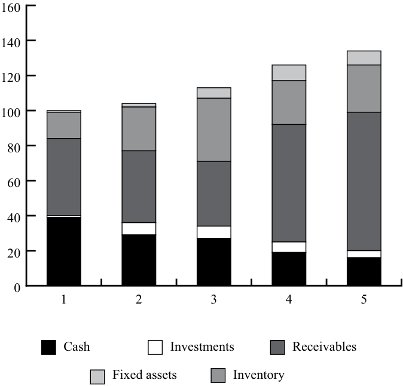
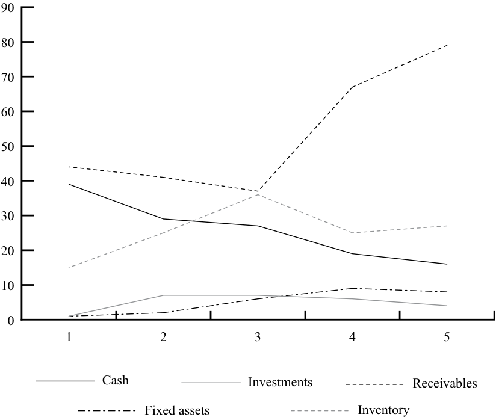

[Toàn Chương] LM11 — Learning Module 11 Financial Analysis Techniques
Volume 4: Financial Statement Analysis
Learning Module 11 Financial Analysis Techniques
Part 1/5: Introduction (PDF Pages 393–408)
Tập 4: Phân tích Báo cáo Tài chính (Volume 4: Financial Statement Analysis)
Học phần 11: Các Kỹ thuật Phân tích Tài chính (Learning Module 11: Financial Analysis Techniques)
Phần 1/5: Giới thiệu (Introduction) (Trang PDF 393–408)
L E A R N I N G M O D U L E
H Ọ C P H Ầ N (L E A R N I N G M O D U L E)
11
11
Financial Analysis Techniques
Các Kỹ thuật Phân tích Tài chính (Financial Analysis Techniques)
by Elaine Henry, PhD, CFA, Thomas R. Robinson, Phd, CAIA, CFA, and J. Hennie van Greuning, DCom, CFA.
bởi Elaine Henry, PhD, CFA, Thomas R. Robinson, Phd, CAIA, CFA, và J. Hennie van Greuning, DCom, CFA.
Elaine Henry, PhD, CFA, is at Stevens Institute of Technology (USA). Thomas R. Robinson, Phd, CAIA, CFA, is at Robinson Global Investment Management LLC, (USA). J. Hennie van Greuning, DCom, CFA, is at BIBD (Brunei).
Elaine Henry, PhD, CFA, công tác tại Viện Công nghệ Stevens (Stevens Institute of Technology, Hoa Kỳ). Thomas R. Robinson, PhD, CAIA, CFA, công tác tại Robinson Global Investment Management LLC (Hoa Kỳ). J. Hennie van Greuning, DCom, CFA, công tác tại BIBD (Brunei).
LEARNING OUTCOMES
MỤC TIÊU HỌC TẬP (LEARNING OUTCOMES)
Mastery The candidate should be able to: describe tools and techniques used in financial analysis, including their uses and limitations calculate and interpret activity, liquidity, solvency, and profitability ratios describe relationships among ratios and evaluate a company using ratio analysis demonstrate the application of DuPont analysis of return on equity and calculate and interpret effects of changes in its components describe the uses of industry-specific ratios used in financial analysis describe how ratio analysis and other techniques can be used to model and forecast earnings
Thành thạo – Ứng viên cần có khả năng: - mô tả các công cụ và kỹ thuật được sử dụng trong phân tích tài chính (financial analysis), bao gồm công dụng và hạn chế của chúng - tính toán và diễn giải các tỷ số hoạt động (activity ratios), tỷ số thanh khoản (liquidity ratios), tỷ số khả năng thanh toán dài hạn (solvency ratios), và tỷ số sinh lời (profitability ratios) - mô tả các mối quan hệ giữa các tỷ số và đánh giá một công ty bằng cách sử dụng phân tích tỷ số (ratio analysis) - trình bày việc áp dụng phân tích DuPont (DuPont analysis) đối với tỷ suất sinh lợi trên vốn chủ sở hữu (return on equity – ROE) và tính toán cũng như diễn giải tác động của những thay đổi trong các thành phần của nó - mô tả công dụng của các tỷ số đặc thù ngành (industry-specific ratios) được sử dụng trong phân tích tài chính - mô tả cách thức phân tích tỷ số và các kỹ thuật khác có thể được sử dụng để lập mô hình và dự báo lợi nhuận (model and forecast earnings)
The two major accounting standard setters are as follows: 1) the International Accounting Standards Board (IASB) who establishes International Financial Reporting Standards (IFRS) and 2) the Financial Accounting Standards Board (FASB) who establishes US GAAP. Throughout this learning module both standards are referred to and many, but not all, of these two sets of accounting rules are identified. Note: changes in accounting standards as well as new rulings and/or pronouncements issued after the publication of this learning module may cause some of the information to become dated.
Hai cơ quan ban hành chuẩn mực kế toán lớn gồm: 1) Hội đồng Chuẩn mực Kế toán Quốc tế (International Accounting Standards Board – IASB), đơn vị thiết lập các Chuẩn mực Báo cáo Tài chính Quốc tế (International Financial Reporting Standards – IFRS) và 2) Hội đồng Chuẩn mực Kế toán Tài chính (Financial Accounting Standards Board – FASB), đơn vị thiết lập các Nguyên tắc Kế toán được Chấp nhận Chung của Hoa Kỳ (US GAAP). Xuyên suốt học phần này, cả hai bộ chuẩn mực đều được đề cập và nhiều quy định, dù không phải tất cả, trong hai bộ quy tắc kế toán này được xác định rõ. Lưu ý: những thay đổi trong chuẩn mực kế toán cũng như các phán quyết và/hoặc tuyên bố mới được ban hành sau khi xuất bản học phần này có thể khiến một số thông tin trở nên lỗi thời.
1
1
INTRODUCTION
GIỚI THIỆU (INTRODUCTION)
Analysts convert financial statement and other data into metrics that assist in decision making and help answer questions such as the following: How successfully has a target company performed, relative to its own past performance and relative to its competitors? How is the company likely to perform in the future? Based on expectations about future performance, what is the value of this company or the securities it issues? This module describes various techniques used to answer these and other questions. These financial analysis techniques are crucial to a wide range of analytical tasks, including valuing equity securities, assessing credit risk, conducting due diligence related to an acquisition, and evaluating business performance.
Các chuyên gia phân tích chuyển đổi dữ liệu báo cáo tài chính và các dữ liệu khác thành các chỉ số (metrics) hỗ trợ quá trình ra quyết định và giúp trả lời những câu hỏi như sau: Một công ty mục tiêu đã hoạt động thành công như thế nào so với kết quả trong quá khứ của chính nó và so với các đối thủ cạnh tranh? Công ty nhiều khả năng sẽ hoạt động ra sao trong tương lai? Dựa trên những kỳ vọng về hiệu quả hoạt động trong tương lai, giá trị của công ty này hoặc các chứng khoán mà nó phát hành là bao nhiêu? Học phần này mô tả các kỹ thuật khác nhau được sử dụng để trả lời những câu hỏi trên và các câu hỏi khác. Những kỹ thuật phân tích tài chính (financial analysis techniques) này đóng vai trò tối quan trọng đối với nhiều nhiệm vụ phân tích đa dạng, bao gồm định giá chứng khoán vốn (valuing equity securities), đánh giá rủi ro tín dụng (assessing credit risk), thực hiện thẩm định chuyên sâu (due diligence) liên quan đến một thương vụ mua lại, và đánh giá hiệu quả hoạt động kinh doanh (evaluating business performance).
LEARNING MODULE OVERVIEW
TỔNG QUAN HỌC PHẦN (LEARNING MODULE OVERVIEW)
-
There is no single approach to structuring the financial analysis process, but a general framework entails the following phases: articulate the purpose of the analysis, collect input data, process the data, analyze and interpret the processed data, develop and communicate conclusions and recommendations, follow-up periodically to determine if any changes are necessary to recommendations or holdings.
-
The purpose of analysis is not simply to compile information and do computations, but to integrate these into a cohesive result that addresses not just what happened, but why it happened and whether it created value. An analyst must be able to understand the “why” behind the numbers and ratios, not just what the numbers and ratios are.
-
Evaluations require comparisons. It is difficult to say that a company’s financial performance was “good” or “bad” without clarifying the basis for comparison. Cross-sectional analysis compares multiple companies at the same point in time or over the same range of time, and trend or time-series analysis compares measures for a single company over a period of time.
-
Ratios and common-size financial statements can remove size as a factor and enable more relevant comparisons. Financial statement ratios are helpful for valuing companies and securities, selecting investments, and predicting financial distress. The ratio is an indicator of some aspect of a company’s performance, telling what happened but not why it happened.
-
Common-size analysis involves expressing financial data, including entire financial statements, in relation to a single financial statement item, or base. A vertical common-size balance sheet divides each balance sheet item by the same period’s total assets and expresses the results as percentages. A vertical common-size income statement divides each income statement item by revenue or by total assets. A horizontal common-size balance sheet divides the quantity of each item by a base year quantity of the same item to yield a percentage change in that item from the base year. Trend data generated by a horizontal common-size analysis can be compared across financial statements.
-
Không có một phương pháp tiếp cận duy nhất nào để cấu trúc quy trình phân tích tài chính, nhưng một khuôn khổ chung bao gồm các giai đoạn sau: xác định rõ mục đích của việc phân tích, thu thập dữ liệu đầu vào, xử lý dữ liệu, phân tích và diễn giải dữ liệu đã xử lý, xây dựng và truyền đạt các kết luận cũng như khuyến nghị, theo dõi định kỳ để xác định xem có cần thay đổi nào đối với các khuyến nghị hoặc danh mục nắm giữ hay không.
-
Mục đích của việc phân tích không chỉ đơn thuần là tổng hợp thông tin và thực hiện các phép tính, mà là tích hợp chúng thành một kết quả gắn kết nhằm giải quyết không chỉ câu hỏi điều gì đã xảy ra, mà còn tại sao nó lại xảy ra và liệu nó có tạo ra giá trị hay không. Một chuyên gia phân tích phải có khả năng hiểu được lý do “tại sao” đằng sau các con số và tỷ số, chứ không chỉ dừng lại ở việc các con số và tỷ số đó là gì.
-
Các đánh giá đòi hỏi phải có sự so sánh. Rất khó để nói rằng kết quả tài chính của một công ty là “tốt” hay “xấu” nếu không làm rõ cơ sở so sánh. Phân tích chéo (cross-sectional analysis) so sánh nhiều công ty tại cùng một thời điểm hoặc trong cùng một khoảng thời gian, và phân tích xu hướng hay chuỗi thời gian (trend or time-series analysis) so sánh các thước đo của một công ty duy nhất qua một khoảng thời gian.
-
Các tỷ số (ratios) và báo cáo tài chính theo quy mô chung (common-size financial statements) có thể loại bỏ quy mô khỏi vai trò một nhân tố gây nhiễu và cho phép thực hiện các so sánh phù hợp hơn. Các tỷ số báo cáo tài chính rất hữu ích trong việc định giá công ty và chứng khoán, lựa chọn khoản đầu tư, và dự báo kiệt quệ tài chính (financial distress). Tỷ số là một chỉ báo về một khía cạnh nào đó trong hiệu quả hoạt động của công ty, cho biết điều gì đã xảy ra nhưng không cho biết tại sao nó lại xảy ra.
-
Phân tích theo quy mô chung (common-size analysis) bao gồm việc biểu thị dữ liệu tài chính, kể cả toàn bộ báo cáo tài chính, trong mối tương quan với một khoản mục báo cáo tài chính duy nhất, hay còn gọi là cơ sở (base). Bảng cân đối kế toán theo quy mô chung dọc (vertical common-size balance sheet) lấy từng khoản mục trên bảng cân đối kế toán chia cho tổng tài sản của cùng kỳ và biểu thị kết quả dưới dạng phần trăm. Báo cáo kết quả hoạt động kinh doanh theo quy mô chung dọc (vertical common-size income statement) lấy từng khoản mục trên báo cáo kết quả hoạt động kinh doanh chia cho doanh thu hoặc chia cho tổng tài sản. Bảng cân đối kế toán theo quy mô chung ngang (horizontal common-size balance sheet) lấy giá trị của từng khoản mục chia cho giá trị năm gốc (base year) của chính khoản mục đó để tính ra mức thay đổi phần trăm của khoản mục đó so với năm gốc. Dữ liệu xu hướng được tạo ra từ phân tích theo quy mô chung ngang có thể được đem ra so sánh xuyên suốt các báo cáo tài chính.
| ■ | Graphs facilitate comparison of performance and financial structure over time, provide a visual overview of changes and trends, and can be used to communicate the conclusions from financial analysis. Regression analysis can help identify relationships or correlation between variables. fi |
|---|---|
| ■ | Activity ratios measure the efficiency of a company’s operations, such as a collection of receivables or management of inventory. Major activity ratios include inventory turnover, days of inventory on hand, receivables turnover, days of sales outstanding, payables turnover, number of days of payables, working capital turnover, fixed asset turn- over, and total asset turnover. |
| ■ | Liquidity ratios measure the ability of a company to meet short-term obligations. Major liquidity ratios include the current ratio, quick ratio, cash ratio, and defensive interval ratio. The cash conversion cycle is a measure of liquidity that is not a simple ratio. |
| ■ | Solvency ratios measure the ability of a company to meet long-term obligations. Major solvency ratios include debt ratios (including the debt-to-assets ratio, debt-to-capital ratio, debt-to-equity ratio, and financial leverage ratio) and coverage ratios (including interest cover- age and fixed charge coverage). |
| ■ | Profitability ratios measure the ability of a company to generate profits from revenue and assets. Major profitability ratios include return on sales ratios (including gross profit margin, operating profit margin, pretax margin, and net profit margin) and return on investment ratios (including operating return on assets [ROA], ROA, return on total capital, return on equity [ROE], and return on common equity). |
| ■ | It is important to examine a variety of financial ratios—not a single ratio or category of ratios in isolation—to ascertain the overall posi- tion and performance of a company. |
| ■ | DuPont analysis breaks ROE into components that are indicators of different aspects of company performance. Many levels of decomposi- tion are possible. |
| ■ | The five-component DuPont decomposition expresses a company’s ROE as a function of its tax rate, interest burden, operating profitabil- ity, efficiency, and leverage. |
| ■ | fi Because aspects of performance that are considered important in one industry may be irrelevant in another, industry-specific ratios are used that reflect these differences. |
| ■ | l f Techniques such as sensitivity analysis, scenario analysis, and simula- tion are used to forecast future financial performance. |
| ■ | Biểu đồ (Graphs) tạo điều kiện thuận lợi cho việc so sánh hiệu quả hoạt động và cấu trúc tài chính theo thời gian, cung cấp cái nhìn tổng quan trực quan về những thay đổi và xu hướng, đồng thời có thể được sử dụng để truyền đạt các kết luận từ phân tích tài chính. Phân tích hồi quy (Regression analysis) có thể giúp xác định các mối quan hệ hoặc sự tương quan (correlation) giữa các biến số. |
|---|---|
| ■ | Các tỷ số hoạt động (Activity ratios) đo lường mức độ hiệu quả trong hoạt động của một công ty, chẳng hạn như việc thu hồi các khoản phải thu hoặc quản lý hàng tồn kho. Các tỷ số hoạt động chính bao gồm vòng quay hàng tồn kho (inventory turnover), số ngày tồn kho bình quân (days of inventory on hand – DOH), vòng quay khoản phải thu (receivables turnover), số ngày thu tiền bình quân (days of sales outstanding – DSO), vòng quay khoản phải trả (payables turnover), số ngày trả tiền bình quân (number of days of payables), vòng quay vốn lưu động (working capital turnover), vòng quay tài sản cố định (fixed asset turnover), và vòng quay tổng tài sản (total asset turnover). |
| ■ | Các tỷ số thanh khoản (Liquidity ratios) đo lường khả năng đáp ứng các nghĩa vụ ngắn hạn của một công ty. Các tỷ số thanh khoản chính bao gồm tỷ số thanh toán hiện hành (current ratio), tỷ số thanh toán nhanh (quick ratio), tỷ số tiền mặt (cash ratio), và tỷ số khoảng thời gian phòng thủ (defensive interval ratio). Chu kỳ chuyển đổi tiền mặt (cash conversion cycle) là một thước đo thanh khoản nhưng không phải là một tỷ số đơn thuần. |
| ■ | Các tỷ số khả năng thanh toán dài hạn (Solvency ratios) đo lường khả năng đáp ứng các nghĩa vụ dài hạn của một công ty. Các tỷ số khả năng thanh toán dài hạn chính bao gồm các tỷ số nợ (debt ratios — bao gồm tỷ số nợ trên tài sản [debt-to-assets ratio], tỷ số nợ trên tổng vốn [debt-to-capital ratio], tỷ số nợ trên vốn chủ sở hữu [debt-to-equity ratio], và tỷ số đòn bẩy tài chính [financial leverage ratio]) và các tỷ số khả năng trang trải (coverage ratios — bao gồm tỷ số trang trải lãi vay [interest coverage] và tỷ số trang trải chi phí cố định [fixed charge coverage]). |
| ■ | Các tỷ số sinh lời (Profitability ratios) đo lường khả năng tạo ra lợi nhuận từ doanh thu và tài sản của một công ty. Các tỷ số sinh lời chính bao gồm các tỷ số tỷ suất sinh lợi trên doanh thu (return on sales ratios — bao gồm biên lợi nhuận gộp [gross profit margin], biên lợi nhuận hoạt động [operating profit margin], biên lợi nhuận trước thuế [pretax margin], và biên lợi nhuận ròng [net profit margin]) và các tỷ số tỷ suất sinh lợi trên vốn đầu tư (return on investment ratios — bao gồm tỷ suất sinh lợi hoạt động trên tài sản [operating return on assets – operating ROA], tỷ suất sinh lợi trên tài sản [ROA], tỷ suất sinh lợi trên tổng vốn [return on total capital], tỷ suất sinh lợi trên vốn chủ sở hữu [return on equity – ROE], và tỷ suất sinh lợi trên vốn cổ phần phổ thông [return on common equity]). |
| ■ | Điều quan trọng là phải xem xét một loạt các tỷ số tài chính—chứ không phải một tỷ số hay một nhóm tỷ số đơn lẻ tách biệt—để xác định vị thế và hiệu quả hoạt động tổng thể của một công ty. |
| ■ | Phân tích DuPont (DuPont analysis) tách ROE thành các thành phần đóng vai trò là chỉ báo cho các khía cạnh khác nhau trong hiệu quả hoạt động của công ty. Có thể thực hiện phân rã ở nhiều cấp độ khác nhau. |
| ■ | Phân rã DuPont năm thành phần (five-component DuPont decomposition) biểu thị ROE của một công ty như một hàm số của thuế suất, gánh nặng lãi vay (interest burden), khả năng sinh lời hoạt động (operating profitability), hiệu quả sử dụng tài sản (efficiency), và đòn bẩy tài chính (leverage). |
| ■ | Bởi vì những khía cạnh hiệu quả hoạt động được coi là quan trọng trong ngành này có thể lại không liên quan trong ngành khác, các tỷ số đặc thù ngành (industry-specific ratios) được sử dụng để phản ánh những sự khác biệt này. |
| ■ | Các kỹ thuật như phân tích độ nhạy (sensitivity analysis), phân tích kịch bản (scenario analysis), và mô phỏng (simulation) được sử dụng để dự báo kết quả tài chính trong tương lai. |
THE FINANCIAL ANALYSIS PROCESS
QUY TRÌNH PHÂN TÍCH TÀI CHÍNH (THE FINANCIAL ANALYSIS PROCESS)
describe tools and techniques used in financial analysis, including their uses and limitations
mô tả các công cụ và kỹ thuật được sử dụng trong phân tích tài chính, bao gồm công dụng và hạn chế của chúng
In financial analysis, it is essential to clearly identify and understand the final objective and the steps required to reach that objective. In addition, the analyst needs to know where to find relevant data, how to process and analyze the data (in other words, know the typical questions to address when interpreting data), and how to communicate the analysis and conclusions.
Trong phân tích tài chính, điều cốt yếu là phải xác định rõ ràng và thấu hiểu mục tiêu cuối cùng cũng như các bước cần thiết để đạt được mục tiêu đó. Ngoài ra, chuyên gia phân tích cần biết tìm dữ liệu liên quan ở đâu, làm thế nào để xử lý và phân tích dữ liệu (nói cách khác là biết những câu hỏi điển hình cần giải quyết khi diễn giải dữ liệu), và làm thế nào để truyền đạt kết quả phân tích cùng các kết luận.
The Objectives of the Financial Analysis Process
Các Mục tiêu của Quy trình Phân tích Tài chính (The Objectives of the Financial Analysis Process)
Because of the variety of reasons for performing financial analysis, the numerous available techniques, and the often substantial amount of data, it is important that the analytical approach be tailored to the specific situation. Prior to beginning any financial analysis, the analyst should clarify the purpose and context, and clearly understand the following:
Do có nhiều lý do khác nhau để thực hiện phân tích tài chính, vô số kỹ thuật sẵn có, và lượng dữ liệu thường rất lớn, điều quan trọng là phương pháp tiếp cận phân tích phải được thiết kế phù hợp với từng tình huống cụ thể. Trước khi bắt đầu bất kỳ phân tích tài chính nào, chuyên gia phân tích cần làm rõ mục đích và bối cảnh, đồng thời hiểu rõ những vấn đề sau:
-
What is the purpose of the analysis? What questions will this analysis answer?
-
What level of detail will be needed to accomplish this purpose?
-
What data are available for the analysis?
-
What are the factors or relationships that will influence the analysis?
-
What are the analytical limitations, and will these limitations potentially impair the analysis?
-
Mục đích của việc phân tích là gì? Phân tích này sẽ trả lời những câu hỏi nào?
-
Cần mức độ chi tiết đến đâu để hoàn thành mục đích này?
-
Những dữ liệu nào hiện có sẵn cho việc phân tích?
-
Những nhân tố hoặc mối quan hệ nào sẽ ảnh hưởng đến việc phân tích?
-
Những hạn chế trong phân tích là gì, và liệu những hạn chế này có khả năng làm suy giảm chất lượng của việc phân tích hay không?
Having clarified the purpose and context of the analysis, the analyst can select the set of techniques (e.g., ratios) that will best assist in making a decision. Although there is no single approach to structuring the analysis process, a general framework is set forth in Exhibit 1. The steps in this process were discussed in more detail in an earlier module; the primary focus of this module is on Phases 3 and 4, processing and analyzing data.
Sau khi đã làm rõ mục đích và bối cảnh phân tích, chuyên gia phân tích có thể lựa chọn tập hợp các kỹ thuật (ví dụ: các tỷ số) giúp hỗ trợ tốt nhất cho việc ra quyết định. Mặc dù không có một phương pháp tiếp cận duy nhất nào để cấu trúc quy trình phân tích, một khuôn khổ chung được trình bày trong Bảng 1 (Exhibit 1). Các bước trong quy trình này đã được thảo luận chi tiết hơn ở một học phần trước; trọng tâm chính của học phần này nằm ở Giai đoạn 3 và 4, tức là xử lý và phân tích dữ liệu.
Exhibit 1: A Financial Statement Analysis Framework
Bảng 1: Khuôn khổ Phân tích Báo cáo Tài chính (Exhibit 1: A Financial Statement Analysis Framework)
| Phase | Sources of Information | Output |
|---|---|---|
| 1. Articulate the purpose and con- text of the analysis. |
■The nature of the analyst’s function, such as evaluating an equity or debt investment or issuing a credit rating. ■Communication with client or super- visor on needs and concerns. |
■Statement of the purpose or objective of analysis. ■A list (written or unwritten) of spe- cific questions to be answered by the analysis. |
| ■Institutional guidelines related to developing specific work product. |
■Nature and content of report to be provided. ■Timetable and budgeted resources for completion. |
|
| 2. Collect input data. |
■Financial statements, other financial data, questionnaires, and industry/ economic data. ■Discussions with management, suppli- ers, customers, and competitors. ■Company site visits (e.g., to produc- tion facilities or retail stores). |
■Organized financial statements. ■Financial data tables. ■Completed questionnaires, if applicable. |
| Giai đoạn (Phase) | Nguồn thông tin (Sources of Information) | Đầu ra (Output) |
|---|---|---|
| 1. Xác định rõ mục đích và bối cảnh của việc phân tích (Articulate the purpose and context of the analysis). | ■ Bản chất chức năng của chuyên gia phân tích, chẳng hạn như đánh giá một khoản đầu tư vốn cổ phần hoặc nợ, hay đưa ra xếp hạng tín dụng. ■ Trao đổi với khách hàng hoặc cấp trên về các nhu cầu và mối quan ngại. ■ Các hướng dẫn của tổ chức liên quan đến việc xây dựng sản phẩm công việc cụ thể. |
■ Tuyên bố về mục đích hoặc mục tiêu của việc phân tích. ■ Một danh sách (bằng văn bản hoặc không bằng văn bản) các câu hỏi cụ thể cần được trả lời thông qua phân tích. ■ Bản chất và nội dung của báo cáo sẽ được cung cấp. ■ Lịch trình thời gian và nguồn lực ngân sách để hoàn thành. |
| 2. Thu thập dữ liệu đầu vào (Collect input data). | ■ Các báo cáo tài chính, dữ liệu tài chính khác, bảng câu hỏi khảo sát, và dữ liệu ngành/kinh tế. ■ Các cuộc thảo luận với ban giám đốc, nhà cung cấp, khách hàng, và đối thủ cạnh tranh. ■ Các chuyến khảo sát thực tế tại công ty (ví dụ: đến các cơ sở sản xuất hoặc cửa hàng bán lẻ). |
■ Các báo cáo tài chính đã được sắp xếp có hệ thống. ■ Các bảng dữ liệu tài chính. ■ Các bảng câu hỏi khảo sát đã hoàn thành, nếu có. |
| Phase | Sources of Information | Output | |
|---|---|---|---|
| 3. | Process data. | ■Data from the previous phase. | ■Adjusted financial statements. ■Common-size statements. ■Ratios and graphs. ■Forecasts. |
| 4. | Analyze/interpret the processed data. |
■Input data as well as processed data. | ■Analytical results. |
| 5. | Develop and communicate con- clusions and recommendations |
■Analytical results and previous reports. |
■Analytical report answering questions posed in Phase 1. |
| (e.g., with an analysis report). | ■Institutional guidelines for published reports. |
■Recommendation regarding the pur- pose of the analysis, such as whether to make an investment or grant credit. |
|
| 6. | Follow-up. | ■Information gathered by periodically repeating above steps as necessary to determine whether changes to holdings or recommendations are necessary. |
■Updated reports and recommendations. |
| Giai đoạn (Phase) | Nguồn thông tin (Sources of Information) | Đầu ra (Output) | |
|---|---|---|---|
| 3. | Xử lý dữ liệu (Process data). | ■ Dữ liệu từ giai đoạn trước. | ■ Các báo cáo tài chính đã điều chỉnh (Adjusted financial statements). ■ Các báo cáo theo quy mô chung (Common-size statements). ■ Các tỷ số và biểu đồ (Ratios and graphs). ■ Các dự báo (Forecasts). |
| 4. | Phân tích/diễn giải dữ liệu đã xử lý (Analyze/interpret the processed data). | ■ Dữ liệu đầu vào cũng như dữ liệu đã xử lý. | ■ Các kết quả phân tích (Analytical results). |
| 5. | Xây dựng và truyền đạt các kết luận và khuyến nghị (Develop and communicate conclusions and recommendations) (ví dụ: thông qua một báo cáo phân tích). | ■ Các kết quả phân tích và các báo cáo trước đó. ■ Các hướng dẫn của tổ chức đối với các báo cáo được công bố. |
■ Báo cáo phân tích trả lời các câu hỏi được đặt ra trong Giai đoạn 1. ■ Khuyến nghị liên quan đến mục đích phân tích, chẳng hạn như có nên thực hiện đầu tư hay cấp tín dụng hay không. |
| 6. | Theo dõi (Follow-up). | ■ Thông tin thu thập được bằng cách định kỳ lặp lại các bước trên khi cần thiết để xác định xem có cần thay đổi đối với danh mục nắm giữ hoặc khuyến nghị hay không. | ■ Các báo cáo và khuyến nghị được cập nhật. |
Distinguishing between Computations and Analysis
Phân biệt giữa Tính toán và Phân tích (Distinguishing between Computations and Analysis)
An effective analysis encompasses both computations and interpretations. A well-reasoned analysis differs from a mere compilation of various pieces of information, computations, tables, and graphs by integrating the data collected into a cohesive whole. Analysis of past performance, for example, should address not only what happened but also why it happened and whether it created value. Some of the key questions to address include the following:
Một phân tích hiệu quả bao hàm cả các phép tính toán (computations) và sự diễn giải (interpretations). Một bản phân tích có lập luận chặt chẽ khác với việc chỉ đơn thuần tập hợp các mẩu thông tin, phép tính, bảng biểu và đồ thị rời rạc ở chỗ nó tích hợp các dữ liệu thu thập được thành một chỉnh thể gắn kết. Chẳng hạn, việc phân tích hiệu quả hoạt động trong quá khứ không chỉ cần giải quyết câu hỏi điều gì đã xảy ra mà còn phải làm rõ tại sao nó lại xảy ra và liệu nó có tạo ra giá trị hay không. Một số câu hỏi then chốt cần giải quyết bao gồm:
-
What aspects of performance are critical for this company to successfully compete in this industry?
-
How well did the company’s performance meet these critical aspects? (Established through computation and comparison with appropriate benchmarks, such as the company’s own historical performance or competitors’ performance.)
-
What were the key causes of this performance, and how does this performance reflect the company’s strategy? (Established through analysis.)
-
If the analysis is forward looking, additional questions include the following:
-
What is the likely impact of an event or trend? (Established through interpretation of analysis.)
-
What is the likely response of management to this trend? (Established through evaluation of quality of management and corporate governance.)
-
What is the likely impact of trends in the company, industry, and economy on future cash flows? (Established through assessment of corporate strategy and through forecasts.)
-
What are the recommendations of the analyst? (Established through interpretation and forecasting of results of analysis.)
-
What risks should be highlighted? (Established by an evaluation of major uncertainties in the forecast and in the environment within which the company operates.)
-
Những khía cạnh nào của hiệu quả hoạt động là tối quan trọng để công ty này cạnh tranh thành công trong ngành?
-
Hiệu quả hoạt động của công ty đã đáp ứng các khía cạnh quan trọng này tốt đến mức nào? (Được xác lập thông qua tính toán và so sánh với các chuẩn đối sánh [benchmarks] phù hợp, chẳng hạn như kết quả hoạt động lịch sử của chính công ty hoặc kết quả hoạt động của các đối thủ cạnh tranh.)
-
Đâu là những nguyên nhân chính dẫn đến kết quả hoạt động này, và kết quả hoạt động này phản ánh chiến lược của công ty như thế nào? (Được xác lập thông qua phân tích.)
-
Nếu phân tích mang tính hướng tới tương lai (forward looking), các câu hỏi bổ sung bao gồm:
-
Tác động có khả năng xảy ra của một sự kiện hoặc xu hướng là gì? (Được xác lập thông qua việc diễn giải kết quả phân tích.)
-
Phản ứng có khả năng xảy ra của ban giám đốc trước xu hướng này là gì? (Được xác lập thông qua việc đánh giá chất lượng ban giám đốc và quản trị công ty [corporate governance].)
-
Tác động có khả năng xảy ra của các xu hướng trong công ty, ngành, và nền kinh tế đối với các dòng tiền trong tương lai là gì? (Được xác lập thông qua việc đánh giá chiến lược doanh nghiệp và thông qua các dự báo.)
-
Các khuyến nghị của chuyên gia phân tích là gì? (Được xác lập thông qua việc diễn giải và dự báo các kết quả phân tích.)
-
Những rủi ro nào cần được làm nổi bật? (Được xác lập bằng cách đánh giá những bất định lớn trong dự báo và trong môi trường mà công ty đang hoạt động.)
Example 1 demonstrates how a company’s financial data can be analyzed in the context of its business strategy and changes in that strategy. An analyst must be able to understand the “why” behind the numbers and ratios, not just what the numbers and ratios are.
Ví dụ 1 minh họa cách thức phân tích dữ liệu tài chính của một công ty trong bối cảnh chiến lược kinh doanh và những thay đổi trong chiến lược đó. Một chuyên gia phân tích phải có khả năng hiểu được lý do “tại sao” đằng sau các con số và tỷ số, chứ không chỉ dừng lại ở việc các con số và tỷ số đó là gì.
EXAMPLE 1
VÍ DỤ 1 (EXAMPLE 1)
Strategy Reflected in Financial Performance
Chiến lược được Phản ánh trong Kết quả Tài chính (Strategy Reflected in Financial Performance)
Apple Inc. engages in the design, manufacture, and sale of computer hardware, mobile devices, operating systems and related products, and services. It also operates retail and online stores. Microsoft develops, licenses, and supports software products, services, and technology devices through a variety of channels including retail stores in recent years. Selected financial data for 2015 through 2017 for these two companies are given in Exhibit 2 and Exhibit 3. Apple’s fiscal year (FY) ends on the final Saturday in September (for example, FY2017 ended on 30 September 2017). Microsoft’s fiscal year ends on 30 June (for example, FY2017 ended on 30 June 2017).
Apple Inc. tham gia vào việc thiết kế, sản xuất và bán phần cứng máy tính, thiết bị di động, hệ điều hành cùng các sản phẩm và dịch vụ liên quan. Công ty cũng vận hành các cửa hàng bán lẻ và trực tuyến. Microsoft phát triển, cấp phép và hỗ trợ các sản phẩm phần mềm, dịch vụ và thiết bị công nghệ thông qua nhiều kênh khác nhau, bao gồm cả các cửa hàng bán lẻ trong những năm gần đây. Dữ liệu tài chính chọn lọc từ năm 2015 đến năm 2017 của hai công ty này được trình bày trong Bảng 2 và Bảng 3. Năm tài chính (fiscal year – FY) của Apple kết thúc vào ngày Thứ Bảy cuối cùng của tháng Chín (ví dụ: FY2017 kết thúc vào ngày 30 tháng 9 năm 2017). Năm tài chính của Microsoft kết thúc vào ngày 30 tháng Sáu (ví dụ: FY2017 kết thúc vào ngày 30 tháng 6 năm 2017).
Exhibit 2: Selected Financial Data for Apple (US dollar millions)
Bảng 2: Dữ liệu Tài chính Chọn lọc của Apple (triệu đô la Mỹ) (Exhibit 2: Selected Financial Data for Apple [US dollar millions])
| Fiscal year | 2017 | 2016 | 2015 |
|---|---|---|---|
| Net sales (or | 229,234 | 215,639 | 233,715 |
| Revenue) | |||
| Gross margin | 88,186 | 84,263 | 93,626 |
| Operating income | 61,344 | 60,024 | 71,230 |
| Năm tài chính (Fiscal year) | 2017 | 2016 | 2015 |
|---|---|---|---|
| Doanh thu thuần (hoặc Doanh thu) (Net sales or Revenue) | 229,234 | 215,639 | 233,715 |
| Lợi nhuận gộp (Gross margin) | 88,186 | 84,263 | 93,626 |
| Thu nhập hoạt động (Operating income) | 61,344 | 60,024 | 71,230 |
Exhibit 3: Selected Financial Data for Microsoft (US dollar millions)*
Bảng 3: Dữ liệu Tài chính Chọn lọc của Microsoft (triệu đô la Mỹ)* (Exhibit 3: Selected Financial Data for Microsoft [US dollar millions]*)
| Fiscal year | 2017 | 2016 | 2015 |
|---|---|---|---|
| Net sales (or | 89,950 | 85,320 | 93,580 |
| revenue) | |||
| Gross margin | 55,689 | 52,540 | 60,542 |
| Operating income | 22,326 | 20,182 | 18,161 |
| Năm tài chính (Fiscal year) | 2017 | 2016 | 2015 |
|---|---|---|---|
| Doanh thu thuần (hoặc doanh thu) (Net sales or revenue) | 89,950 | 85,320 | 93,580 |
| Lợi nhuận gộp (Gross margin) | 55,689 | 52,540 | 60,542 |
| Thu nhập hoạt động (Operating income) | 22,326 | 20,182 | 18,161 |
* Microsoft revenue for 2017 and 2016 were subsequently revised in the company’s 2018 10-K report due to changes in revenue recognition and lease accounting standards.
* Doanh thu của Microsoft cho năm 2017 và 2016 sau đó đã được điều chỉnh lại trong báo cáo 10-K năm 2018 của công ty do những thay đổi trong chuẩn mực ghi nhận doanh thu và kế toán thuê tài sản.
Source: 10-K reports for Apple and Microsoft.
Nguồn: Các báo cáo 10-K của Apple và Microsoft.
Apple reported a 7.7 percent decrease in net sales from FY2015 to FY2016 and an increase of 6.3 percent from FY2016 to FY2017 for an overall slight decline over the three-year period. Gross margin decreased 10.0 percent from FY2015 to FY2016 and increased 4.7 percent from FY2016 to FY2017. This also represented an overall decline in gross margin over the three-year period. The company’s operating income exhibited similar trends.
Apple báo cáo mức giảm 7.7% trong doanh thu thuần từ FY2015 đến FY2016 và mức tăng 6.3% từ FY2016 đến FY2017, dẫn đến mức sụt giảm nhẹ xét trên tổng thể giai đoạn ba năm. Lợi nhuận gộp (gross margin) giảm 10.0% từ FY2015 đến FY2016 và tăng 4.7% từ FY2016 đến FY2017. Điều này cũng thể hiện một sự sụt giảm tổng thể về lợi nhuận gộp trong giai đoạn ba năm. Thu nhập hoạt động (operating income) của công ty cũng bộc lộ các xu hướng tương tự.
Microsoft reported an 8.8 percent decrease in net sales from FY2015 to FY2016 and an increase of 5.4 percent from FY2016 to FY2017 for an overall slight decline over the three-year period. Gross margin decreased 13.2 percent from FY2015 to FY2016 and increased 6.0 percent from FY2016 to FY2017. Similar to Apple, this represented an overall decline in gross margin over the
Microsoft báo cáo mức giảm 8.8% trong doanh thu thuần từ FY2015 đến FY2016 và mức tăng 5.4% từ FY2016 đến FY2017, dẫn đến mức sụt giảm nhẹ xét trên tổng thể giai đoạn ba năm. Lợi nhuận gộp giảm 13.2% từ FY2015 đến FY2016 và tăng 6.0% từ FY2016 đến FY2017. Tương tự như Apple, điều này thể hiện sự sụt giảm tổng thể về lợi nhuận gộp trong
three-year period. Microsoft’s operating income, in contrast, exhibited growth each year and for the three-year period. Overall growth in operating income was 23 percent.
giai đoạn ba năm. Ngược lại, thu nhập hoạt động của Microsoft lại cho thấy sự tăng trưởng qua từng năm và trong cả giai đoạn ba năm. Mức tăng trưởng tổng thể của thu nhập hoạt động là 23%.
What caused Microsoft’s growth in operating income while Apple and Microsoft had similar negative trends in sales and gross margin? Apple’s decline in sales, gross margin, and operating income from FY2015 to FY2016 was caused by declines in iPhone sales and weakness in foreign currencies relative to the US dollar. FY2017 saw a rebound in sales of iPhones, Mac computers, and services offset somewhat by continued weaknesses in foreign currencies. Microsoft similarly had declines in revenue and gross margin from sales of its devices and Windows software in FY2016, as well as negative impacts from foreign currency weakness. Microsoft’s increase in revenue and gross margin in FY2017 was driven by the acquisition of LinkedIn, higher sales of Microsoft Office software, and higher sales of cloud services. The driver in the continuous increase in operating income for Microsoft was a large decline over the threeyear period in impairment, integration, and restructuring charges. Microsoft recorded a USD10 billion charge in FY2015 related to its phone business, and there were further charges of USD1.1 billion in FY2016 and USD306 million in FY2017. Absent these large write-offs, Microsoft would have had a trend similar to Apple’s in operating income over the three-year period.
Điều gì đã tạo ra sự tăng trưởng trong thu nhập hoạt động của Microsoft trong khi cả Apple và Microsoft đều có những xu hướng tiêu cực tương tự nhau về doanh thu và lợi nhuận gộp? Sự sụt giảm về doanh thu, lợi nhuận gộp và thu nhập hoạt động của Apple từ FY2015 đến FY2016 là do doanh số bán iPhone sụt giảm và sự suy yếu của các đồng ngoại tệ so với đồng đô la Mỹ. Năm tài chính FY2017 chứng kiến sự phục hồi trong doanh số bán iPhone, máy tính Mac và các dịch vụ, dù bị bù trừ một phần bởi sự suy yếu tiếp diễn của các đồng ngoại tệ. Microsoft tương tự cũng có sự sụt giảm về doanh thu và lợi nhuận gộp từ việc bán các thiết bị và phần mềm Windows trong FY2016, cũng như chịu tác động tiêu cực từ sự suy yếu của ngoại tệ. Sự gia tăng doanh thu và lợi nhuận gộp của Microsoft trong FY2017 được thúc đẩy bởi thương vụ mua lại LinkedIn, doanh số bán phần mềm Microsoft Office cao hơn, và doanh số dịch vụ đám mây (cloud services) cao hơn. Động lực đằng sau sự gia tăng liên tục trong thu nhập hoạt động của Microsoft là sự sụt giảm lớn trong giai đoạn ba năm của các khoản chi phí suy giảm giá trị tài sản (impairment), chi phí tích hợp (integration) và chi phí tái cấu trúc (restructuring charges). Microsoft đã ghi nhận một khoản chi phí 10 tỷ USD trong FY2015 liên quan đến mảng kinh doanh điện thoại của mình, và có thêm các khoản chi phí 1.1 tỷ USD trong FY2016 và 306 triệu USD trong FY2017. Nếu không có các khoản xóa sổ (write-offs) lớn này, Microsoft hẳn đã có một xu hướng thu nhập hoạt động tương tự như của Apple trong giai đoạn ba năm đó.
Analysts often need to communicate the findings of their analysis in a written report. Their reports should communicate how conclusions were reached and why recommendations were made. For example, a report might present the following:
Các chuyên gia phân tích thường cần truyền đạt những phát hiện từ quá trình phân tích của mình trong một báo cáo bằng văn bản. Báo cáo của họ cần truyền đạt được cách thức đi đến các kết luận và lý do tại sao các khuyến nghị lại được đưa ra. Ví dụ, một báo cáo có thể trình bày những nội dung sau:
-
the purpose of the report, unless it is readily apparent;
-
relevant aspects of the business context, including:
-
economic environment (country/region, macro economy, sector),
-
financial and other infrastructure (accounting, auditing, rating agencies), and
-
legal and regulatory environment (and any other material limitations on the company being analyzed);
-
evaluation of corporate governance and assessment of management strategy, including the company’s competitive advantage(s);
-
assessment of financial and operational data, including key assumptions in the analysis; and
-
conclusions and recommendations, including limitations of the analysis and risks.
-
mục đích của báo cáo, trừ khi điều đó đã quá hiển nhiên;
-
các khía cạnh liên quan của bối cảnh kinh doanh, bao gồm:
-
môi trường kinh tế (quốc gia/khu vực, kinh tế vĩ mô, ngành),
-
cơ sở hạ tầng tài chính và các cơ sở hạ tầng khác (kế toán, kiểm toán, các tổ chức xếp hạng tín nhiệm), và
-
môi trường pháp lý và quy định quản lý (cũng như bất kỳ hạn chế trọng yếu nào khác đối với công ty đang được phân tích);
-
đánh giá về quản trị công ty (corporate governance) và nhận định về chiến lược của ban giám đốc, bao gồm (các) lợi thế cạnh tranh của công ty;
-
đánh giá dữ liệu tài chính và hoạt động, bao gồm các giả định then chốt trong phân tích; và
-
các kết luận và khuyến nghị, bao gồm những hạn chế của phân tích và các rủi ro.
An effective narrative and well supported conclusions and recommendations are normally enhanced by using 3–10 years of data as well as by analytic techniques appropriate to the purpose of the report.
Một bài thuyết minh hiệu quả cùng các kết luận và khuyến nghị có cơ sở vững chắc thường được củng cố bằng việc sử dụng dữ liệu từ 3–10 năm cũng như bằng các kỹ thuật phân tích phù hợp với mục đích của báo cáo.
ANALYTICAL TOOLS AND TECHNIQUES
CÁC CÔNG CỤ VÀ KỸ THUẬT PHÂN TÍCH (ANALYTICAL TOOLS AND TECHNIQUES)
describe tools and techniques used in financial analysis, including their uses and limitations
mô tả các công cụ và kỹ thuật được sử dụng trong phân tích tài chính, bao gồm công dụng và hạn chế của chúng
The tools and techniques presented in this lesson facilitate evaluations of company data. Evaluations require comparisons. It is difficult to say that a company’s financial performance was “good” or “bad” without clarifying the basis for comparison. In assessing a company’s ability to generate and grow earnings and cash flow, and the risks related to those earnings and cash flows, the analyst draws comparisons to other companies at the same point in time or over the same range of time (cross-sectional analysis) and over time (trend or time-series analysis).
Các công cụ và kỹ thuật được trình bày trong bài học này tạo điều kiện thuận lợi cho việc đánh giá dữ liệu công ty. Các đánh giá đòi hỏi phải có sự so sánh. Rất khó để nói rằng kết quả tài chính của một công ty là “tốt” hay “xấu” nếu không làm rõ cơ sở so sánh. Khi đánh giá khả năng tạo ra và tăng trưởng lợi nhuận cũng như dòng tiền của một công ty, cùng những rủi ro liên quan đến lợi nhuận và dòng tiền đó, chuyên gia phân tích thực hiện các phép so sánh với những công ty khác tại cùng một thời điểm hoặc trong cùng một khoảng thời gian (phân tích chéo – cross-sectional analysis) và theo thời gian (phân tích xu hướng hoặc chuỗi thời gian – trend or time-series analysis).
For example, an analyst may wish to compare the profitability of companies competing in a global industry. If the companies differ significantly in size or report their financial data in different currencies, comparing net income as reported is not useful. Ratios (which express one number in relation to another) and common-size financial statements can remove size as a factor and enable a more relevant comparison. To achieve comparability across companies reporting in different currencies, one approach is to translate all reported numbers into a common currency using average or period-end exchange rates. Alternatively, if the focus is primarily on ratios, comparability can be achieved without translating the currencies.
Ví dụ, một chuyên gia phân tích có thể muốn so sánh khả năng sinh lời của các công ty đang cạnh tranh trong một ngành công nghiệp toàn cầu. Nếu các công ty có sự khác biệt đáng kể về quy mô hoặc báo cáo dữ liệu tài chính bằng các đồng tiền khác nhau, việc so sánh thu nhập ròng (net income) như được báo cáo sẽ không mang lại nhiều giá trị. Các tỷ số (ratios — biểu thị một con số trong mối tương quan với một con số khác) và các báo cáo tài chính theo quy mô chung (common-size financial statements) có thể loại bỏ quy mô khỏi vai trò một nhân tố và cho phép thực hiện một phép so sánh phù hợp hơn. Để đạt được tính có thể so sánh (comparability) giữa các công ty báo cáo bằng các đồng tiền khác nhau, một phương pháp tiếp cận là chuyển đổi tất cả các con số được báo cáo sang một đồng tiền chung bằng cách sử dụng tỷ giá hối đoái bình quân hoặc tỷ giá cuối kỳ. Thay vào đó, nếu trọng tâm chủ yếu đặt vào các tỷ số, tính có thể so sánh có thể đạt được mà không cần chuyển đổi tiền tệ.
The analyst may also want to examine comparable performance over time. Again, the nominal currency amounts of sales or net income may not highlight significant changes. To address this challenge, horizontal financial statements (whereby quantities are stated in terms of a selected base year value) can make such changes more apparent. Another obstacle to comparison is differences in fiscal year end. To achieve comparability, one approach is to develop trailing 12 months of data. Finally, it should be noted that differences in accounting standards can limit comparability.
Chuyên gia phân tích cũng có thể muốn xem xét hiệu quả hoạt động tương đương theo thời gian. Một lần nữa, giá trị tiền tệ danh nghĩa của doanh thu hay thu nhập ròng có thể không làm nổi bật được những thay đổi quan trọng. Để giải quyết thách thức này, các báo cáo tài chính theo chiều ngang (horizontal financial statements — theo đó các đại lượng được trình bày theo giá trị của một năm gốc được chọn) có thể làm cho những thay đổi như vậy trở nên rõ ràng hơn. Một trở ngại khác đối với việc so sánh là sự khác biệt về thời điểm kết thúc năm tài chính (fiscal year end). Để đạt được tính có thể so sánh, một cách tiếp cận là xây dựng dữ liệu 12 tháng gần nhất (trailing 12 months – TTM). Cuối cùng, cần lưu ý rằng sự khác biệt trong các chuẩn mực kế toán có thể làm hạn chế tính có thể so sánh.
EXAMPLE 2
VÍ DỤ 2 (EXAMPLE 2)
Ratio Analysis
Phân tích Tỷ số (Ratio Analysis)
An analyst is examining the profitability of two international companies with large shares of the global personal computer market: Acer Inc. and Lenovo Group Limited. Acer has pursued a strategy of selling its products at affordable prices. In contrast, Lenovo aims to achieve higher selling prices by stressing the high engineering quality of its personal computers for business use. Acer reports in New Taiwan dollars (TWD) and Lenovo reports in US dollars (USD). For Acer, fiscal year end is 31 December. For Lenovo, fiscal year end is 31 March; thus, FY2017 ended 31 March 2018.
Một chuyên gia phân tích đang xem xét khả năng sinh lời của hai công ty quốc tế nắm giữ thị phần lớn trên thị trường máy tính cá nhân toàn cầu: Acer Inc. và Lenovo Group Limited. Acer theo đuổi chiến lược bán sản phẩm với mức giá phải chăng. Ngược lại, Lenovo hướng tới việc đạt được mức giá bán cao hơn bằng cách nhấn mạnh vào chất lượng kỹ thuật cao của các dòng máy tính cá nhân phục vụ mục đích doanh nghiệp. Acer báo cáo bằng đồng Tân Đài tệ (TWD) và Lenovo báo cáo bằng đồng đô la Mỹ (USD). Đối với Acer, thời điểm kết thúc năm tài chính là ngày 31 tháng 12. Đối với Lenovo, thời điểm kết thúc năm tài chính là ngày 31 tháng 3; do đó, FY2017 kết thúc vào ngày 31 tháng 3 năm 2018.
The analyst collects the data shown in Exhibit 4. Use this information to answer the following questions:
Chuyên gia phân tích thu thập dữ liệu được trình bày trong Bảng 4. Hãy sử dụng thông tin này để trả lời các câu hỏi sau:
Exhibit 4: Acer versus Lenova Profitability
Bảng 4: Khả năng Sinh lời của Acer so với Lenovo (Exhibit 4: Acer versus Lenovo Profitability)
| Acer | |||||
|---|---|---|---|---|---|
| TWD Millions | FY2013 | FY2014 | FY2015 | FY2016 | FY2017 |
| Revenue | 360,132 | 329,684 | 263,775 | 232,724 | 237,275 |
| Gross profit | 22,550 | 28,942 | 24,884 | 23,212 | 25,361 |
| Net income | (20,519) | 1,791 | 604 | (4,901) | 2,797 |
| Acer | |||||
|---|---|---|---|---|---|
| Triệu TWD (TWD Millions) | FY2013 | FY2014 | FY2015 | FY2016 | FY2017 |
| Doanh thu (Revenue) | 360,132 | 329,684 | 263,775 | 232,724 | 237,275 |
| Lợi nhuận gộp (Gross profit) | 22,550 | 28,942 | 24,884 | 23,212 | 25,361 |
| Thu nhập ròng (Net income) | (20,519) | 1,791 | 604 | (4,901) | 2,797 |
| Lenovo | |||||
|---|---|---|---|---|---|
| USD Millions | FY2013 | FY2014 | FY2015 | FY2016 | FY2017 |
| Revenue | 38,707 | 46,296 | 44,912 | 43,035 | 45,350 |
| Gross profit | 5,064 | 6,682 | 6,624 | 6,105 | 6,272 |
| i Net income (Loss) |
817 | 837 | (145) | 530 | (127) |
| Lenovo | |||||
|---|---|---|---|---|---|
| Triệu USD (USD Millions) | FY2013 | FY2014 | FY2015 | FY2016 | FY2017 |
| Doanh thu (Revenue) | 38,707 | 46,296 | 44,912 | 43,035 | 45,350 |
| Lợi nhuận gộp (Gross profit) | 5,064 | 6,682 | 6,624 | 6,105 | 6,272 |
| Thu nhập ròng (Lỗ) (Net income [Loss]) | 817 | 837 | (145) | 530 | (127) |
Note: Fiscal years for Lenovo end 31 March. Thus, FY2017 represents the fiscal year ended 31 March 2018; the same applies respectively for prior years.
Lưu ý: Năm tài chính của Lenovo kết thúc vào ngày 31 tháng 3. Do đó, FY2017 đại diện cho năm tài chính kết thúc vào ngày 31 tháng 3 năm 2018; điều tương tự cũng áp dụng tương ứng cho các năm trước đó.
- Which company is larger based on the amount of revenue, in US dollars, reported in fiscal year 2017? For FY2017, assume the relevant, average exchange rate was 30.95 TWD/USD.
- Công ty nào lớn hơn dựa trên quy mô doanh thu, tính bằng đô la Mỹ, được báo cáo trong năm tài chính 2017? Đối với FY2017, giả sử tỷ giá hối đoái bình quân phù hợp là 30.95 TWD/USD.
Solution:
Lời giải:
Lenovo is much larger than Acer based on FY2017 revenues in US dollar terms. Lenovo’s FY2017 revenues of USD45.35 billion are considerably higher than Acer’s USD7.67 billion (= TWD237.275 million/30.95). Acer : At the assumed average exchange rate of 30.95 TWD/USD, Acer’s FY2017 revenues are equivalent to USD7.67 billion (= TWD237.275 million ÷ 30.95 TWD/USD).
Lenovo lớn hơn nhiều so với Acer dựa trên doanh thu FY2017 tính bằng đô la Mỹ. Doanh thu FY2017 của Lenovo ở mức 45.35 tỷ USD cao hơn đáng kể so với mức 7.67 tỷ USD của Acer ($= 237,275\text{ triệu TWD} / 30.95$). Acer: Tại mức tỷ giá hối đoái bình quân giả định là 30.95 TWD/USD, doanh thu FY2017 của Acer tương đương 7.67 tỷ USD ($= 237,275\text{ triệu TWD} \div 30.95\text{ TWD/USD}$).
Lenovo : Lenovo’s FY2017 revenues totaled USD45.35 billion. Note : Comparing the size of companies reporting in different currencies requires translating reported numbers into a common currency using exchange rates at some point in time. This solution converts the revenues of Acer to billions of US dollars using the average exchange rate of the fiscal period. It would be equally informative (and would yield the same conclusion) to convert the revenues of Lenovo to New Taiwan dollars.
Lenovo: Doanh thu FY2017 của Lenovo đạt tổng cộng 45.35 tỷ USD. Lưu ý: Việc so sánh quy mô của các công ty báo cáo bằng các đồng tiền khác nhau đòi hỏi phải chuyển đổi các con số được báo cáo sang một đồng tiền chung bằng cách sử dụng tỷ giá hối đoái tại một thời điểm nào đó. Lời giải này chuyển đổi doanh thu của Acer sang tỷ đô la Mỹ bằng cách sử dụng tỷ giá hối đoái bình quân của kỳ tài chính. Việc chuyển đổi doanh thu của Lenovo sang đồng Tân Đài tệ cũng sẽ cung cấp thông tin tương đương (và mang lại cùng một kết luận).
- Which company had the higher revenue growth from FY2016 to FY2017? FY2013 to FY2017?
- Công ty nào có tốc độ tăng trưởng doanh thu cao hơn từ FY2016 đến FY2017? Từ FY2013 đến FY2017?
Solution:
Lời giải:
The growth in Lenovo’s revenue was much higher than Acer’s in the most recent fiscal year and for the five-year period.
Tốc độ tăng trưởng doanh thu của Lenovo cao hơn nhiều so với của Acer trong năm tài chính gần nhất và trong cả giai đoạn năm năm.
| Change in Revenue FY2016 | Change in Revenue FY2013 | |
|---|---|---|
| versus FY2017 (%) | to FY2017 (%) | |
| Acer | 1.96 | (34.11) |
| Lenovo | 5.38 | 17.16 |
| Thay đổi Doanh thu FY2016 so với FY2017 (%) | Thay đổi Doanh thu FY2013 đến FY2017 (%) | |
|---|---|---|
| Acer | 1.96 | (34.11) |
| Lenovo | 5.38 | 17.16 |
The table shows two growth metrics. Calculations are illustrated using the revenue data for Acer:
Bảng trên thể hiện hai chỉ số tăng trưởng. Các phép tính được minh họa bằng dữ liệu doanh thu của Acer:
The change in Acer’s revenue for FY2016 versus FY2017 is 1.96 percent calculated as (237,275 – 232,724) ÷ 232,724 or equivalently (237,275 ÷ 232,724) – 1. The change in Acer’s revenue from FY2013 to FY2017 is a decline of 34.11 percent.
Mức thay đổi doanh thu của Acer trong FY2016 so với FY2017 là 1.96%, được tính bằng $(237,275 - 232,724) \div 232,724$ hoặc tương đương là $(237,275 \div 232,724) - 1$. Mức thay đổi doanh thu của Acer từ FY2013 đến FY2017 là mức sụt giảm 34.11%.
- How do the companies compare, based on profitability?
- Hai công ty so sánh với nhau như thế nào xét trên khía cạnh khả năng sinh lời?
Solution:
Lời giải:
Profitability can be assessed by comparing the amount of gross profit to revenue and the amount of net income to revenue. The following table presents these two profitability ratios—gross profit margin (gross profit divided by revenue) and net profit margin (net income divided by revenue)—for each year.
Khả năng sinh lời có thể được đánh giá bằng cách so sánh quy mô lợi nhuận gộp với doanh thu và quy mô thu nhập ròng với doanh thu. Bảng dưới đây trình bày hai tỷ số sinh lời này—biên lợi nhuận gộp (gross profit margin, tức lợi nhuận gộp chia cho doanh thu) và biên lợi nhuận ròng (net profit margin, tức thu nhập ròng chia cho doanh thu)—cho từng năm.
| Acer | FY2013 (%) |
FY2014 (%) |
FY2015 (%) |
FY2016 (%) |
FY2017 (%) |
|---|---|---|---|---|---|
| Gross profit margin |
6.26 | 8.78 | 9.43 | 9.97 | 10.69 |
| Net profit margin |
(5.70) | 0.54 | 0.23 | (2.11) | 1.18 |
| Lenovo | FY2013 (%) |
FY2014 (%) |
FY2015 (%) |
FY2016 (%) |
FY2017 (%) |
| Gross profit margin |
13.08 | 14.43 | 14.75 | 14.19 | 13.83 |
| Net profit margin |
2.11 | 1.81 | (0.32) | 1.23 | (0.28) |
| Acer | FY2013 (%) | FY2014 (%) | FY2015 (%) | FY2016 (%) | FY2017 (%) |
|---|---|---|---|---|---|
| Biên lợi nhuận gộp (Gross profit margin) | 6.26 | 8.78 | 9.43 | 9.97 | 10.69 |
| Biên lợi nhuận ròng (Net profit margin) | (5.70) | 0.54 | 0.23 | (2.11) | 1.18 |
| Lenovo | FY2013 (%) | FY2014 (%) | FY2015 (%) | FY2016 (%) | FY2017 (%) |
| Biên lợi nhuận gộp (Gross profit margin) | 13.08 | 14.43 | 14.75 | 14.19 | 13.83 |
| Biên lợi nhuận ròng (Net profit margin) | 2.11 | 1.81 | (0.32) | 1.23 | (0.28) |
The net profit margins indicate that both companies’ profitability is relatively low. Acer’s net profit margin is lower than Lenovo’s in three out of the five years. Acer’s gross profit margin increased each year but remains significantly below that of Lenovo. Lenovo’s gross profit margin grew from FY2013 to FY2015 and then declined in FY2016 and FY2017. Overall, Lenovo is the more profitable company, likely attributable to its larger size and commensurate economies of scale. (Lenovo has the largest share of the personal computer market relative to other personal computer companies.)
Biên lợi nhuận ròng cho thấy khả năng sinh lời của cả hai công ty đều tương đối thấp. Biên lợi nhuận ròng của Acer thấp hơn của Lenovo trong ba trên năm năm. Biên lợi nhuận gộp của Acer tăng lên qua từng năm nhưng vẫn thấp hơn đáng kể so với của Lenovo. Biên lợi nhuận gộp của Lenovo tăng từ FY2013 đến FY2015 và sau đó giảm vào FY2016 và FY2017. Nhìn chung, Lenovo là công ty có khả năng sinh lời cao hơn, nhiều khả năng nhờ vào quy mô lớn hơn và tính kinh tế theo quy mô (economies of scale) tương ứng. (Lenovo nắm giữ thị phần lớn nhất trên thị trường máy tính cá nhân so với các công ty máy tính cá nhân khác.)
4
4
FINANCIAL RATIO ANALYSIS
PHÂN TÍCH TỶ SỐ TÀI CHÍNH (FINANCIAL RATIO ANALYSIS)
describe tools and techniques used in financial analysis, including their uses and limitations
mô tả các công cụ và kỹ thuật được sử dụng trong phân tích tài chính, bao gồm công dụng và hạn chế của chúng
There are many relationships among financial accounts and various expected relationships from one point in time to another. Ratios are a useful way of expressing these relationships. Ratios express one quantity in relation to another, usually as a quotient.
Có rất nhiều mối quan hệ giữa các tài khoản tài chính và nhiều mối quan hệ kỳ vọng khác nhau từ thời điểm này sang thời điểm khác. Các tỷ số (ratios) là một cách hữu ích để biểu thị những mối quan hệ này. Các tỷ số biểu thị một đại lượng trong mối tương quan với một đại lượng khác, thường dưới dạng một thương số.
Extensive academic research has examined the importance of ratios in predicting stock returns (Ou and Penman, 1989; Abarbanell and Bushee, 1998) or credit failure (Altman, 1968; Ohlson, 1980; Hopwood et al., 1994). This research has found that
Nhiều nghiên cứu học thuật sâu rộng đã kiểm chứng tầm quan trọng của các tỷ số trong việc dự báo tỷ suất sinh lợi cổ phiếu (Ou và Penman, 1989; Abarbanell và Bushee, 1998) hoặc sự đổ vỡ tín dụng (Altman, 1968; Ohlson, 1980; Hopwood và cộng sự, 1994). Những nghiên cứu này đã phát hiện ra rằng
financial statement ratios are effective in selecting investments and in predicting financial distress. Practitioners routinely use ratios to derive and communicate the value of companies and securities.
các tỷ số báo cáo tài chính phát huy hiệu quả trong việc lựa chọn các khoản đầu tư và dự báo tình trạng kiệt quệ tài chính (financial distress). Những người hành nghề thực tiễn thường xuyên sử dụng các tỷ số để xác định và truyền đạt giá trị của các công ty cũng như chứng khoán.
Several aspects of ratio analysis are important to understand. First, the computed ratio is not “the answer.” The ratio is an indicator of some aspect of a company’s performance, telling what happened but not why it happened. For example, an analyst might want to answer the question: Which of two companies was more profitable? As demonstrated in the previous example, the net profit margin, which expresses profit relative to revenue, can provide insight into this question. Net profit margin is calculated by dividing net income by revenue:
Có một số khía cạnh quan trọng của phân tích tỷ số cần phải hiểu rõ. Thứ nhất, tỷ số được tính ra không phải là “câu trả lời cuối cùng”. Tỷ số là một chỉ báo (indicator) về một khía cạnh nào đó trong hiệu quả hoạt động của công ty, cho biết điều gì đã xảy ra nhưng không cho biết tại sao nó lại xảy ra. Ví dụ, một chuyên gia phân tích có thể muốn trả lời câu hỏi: Công ty nào trong hai công ty có khả năng sinh lời cao hơn? Như đã minh họa trong ví dụ trước, biên lợi nhuận ròng (net profit margin), vốn biểu thị lợi nhuận trong mối tương quan với doanh thu, có thể mang lại cái nhìn sâu sắc cho câu hỏi này. Biên lợi nhuận ròng được tính bằng cách lấy thu nhập ròng chia cho doanh thu:
_Net income
Revenue.
Assume Company A has EUR100,000 of net income and Company B has EUR200,000 of net income. Company B generated twice as much income as Company A, but was it more profitable? Assume further that Company A has EUR2,000,000 of revenue, and thus a net profit margin of 5 percent, and Company B has EUR6,000,000 of revenue, and thus a net profit margin of 3.33 percent. Expressing net income as a percentage of revenue clarifies the relationship: For each EUR100 of revenue, Company A earns EUR5 in net income, whereas Company B earns only EUR3.33 for each EUR100 of revenue. So, we can now answer the question of which company was more profitable in percentage terms: Company A was more profitable, as indicated by its higher net profit margin of 5 percent. Note that Company A was more profitable despite the fact that Company B reported higher absolute amounts of net income and revenue. However, this ratio by itself does not tell us why Company A has a higher profit margin. Further analysis is required to determine the reason (perhaps higher relative sales prices or better cost control or lower effective tax rates).
Giả sử Công ty A có 100,000 EUR thu nhập ròng và Công ty B có 200,000 EUR thu nhập ròng. Công ty B tạo ra thu nhập gấp đôi Công ty A, nhưng liệu nó có sinh lời tốt hơn không? Giả sử thêm rằng Công ty A có 2,000,000 EUR doanh thu, và do đó có biên lợi nhuận ròng là 5%, còn Công ty B có 6,000,000 EUR doanh thu, và do đó có biên lợi nhuận ròng là 3.33%. Việc biểu thị thu nhập ròng dưới dạng phần trăm của doanh thu giúp làm rõ mối quan hệ này: Với mỗi 100 EUR doanh thu, Công ty A kiếm được 5 EUR thu nhập ròng, trong khi Công ty B chỉ kiếm được 3.33 EUR cho mỗi 100 EUR doanh thu. Vì vậy, giờ đây chúng ta có thể trả lời câu hỏi công ty nào có khả năng sinh lời cao hơn xét theo tỷ lệ phần trăm: Công ty A sinh lời tốt hơn, thể hiện qua biên lợi nhuận ròng cao hơn ở mức 5%. Lưu ý rằng Công ty A có khả năng sinh lời cao hơn mặc dù thực tế là Công ty B báo cáo con số tuyệt đối về thu nhập ròng và doanh thu cao hơn. Tuy nhiên, bản thân tỷ số này không cho chúng ta biết tại sao Công ty A lại có biên lợi nhuận cao hơn. Cần phải phân tích sâu hơn để xác định nguyên nhân (có thể là do giá bán tương đối cao hơn, kiểm soát chi phí tốt hơn, hoặc thuế suất hiệu dụng thấp hơn).
Company size sometimes confers economies of scale, so the absolute amounts of net income and revenue are useful in financial analysis. However, ratios control for the effect of size, which enhances comparisons between companies and over time.
Quy mô công ty đôi khi mang lại lợi thế kinh tế theo quy mô (economies of scale), vì vậy các con số tuyệt đối của thu nhập ròng và doanh thu vẫn hữu ích trong phân tích tài chính. Tuy nhiên, các tỷ số giúp kiểm soát tác động của quy mô, qua đó nâng cao khả năng so sánh giữa các công ty và theo thời gian.
A second important aspect of ratio analysis is that differences in accounting policies (across companies and across time) can distort ratios, and a meaningful comparison, therefore, may involve adjustments to the financial data. Third, not all ratios are necessarily relevant to a particular analysis. The ability to select a relevant ratio or ratios to answer the research question is an analytical skill. Finally, as with financial analysis in general, ratio analysis does not stop with computation; interpretation of the result is essential. In practice, differences in ratios across time and across companies can be subtle, and interpretation is situation specific.
Một khía cạnh quan trọng thứ hai của phân tích tỷ số là sự khác biệt trong các chính sách kế toán (giữa các công ty và qua các thời kỳ) có thể làm bóp méo các tỷ số, và do đó, để có một phép so sánh có ý nghĩa thì có thể cần phải thực hiện các điều chỉnh đối với dữ liệu tài chính. Thứ ba, không phải tất cả các tỷ số đều nhất thiết liên quan đến một phân tích cụ thể. Khả năng lựa chọn một hoặc các tỷ số phù hợp để trả lời câu hỏi nghiên cứu là một kỹ năng phân tích. Cuối cùng, giống như phân tích tài chính nói chung, phân tích tỷ số không dừng lại ở việc tính toán; việc diễn giải kết quả là điều thiết yếu. Trên thực tế, sự khác biệt về tỷ số qua thời gian và giữa các công ty có thể rất tinh vi, và việc diễn giải phụ thuộc vào từng tình huống cụ thể.
The Universe of Ratios
Thế giới các Tỷ số (The Universe of Ratios)
No authoritative bodies specify the exact formulas for computing ratios or provide a standard, comprehensive list of ratios. Formulas and even names of ratios often differ from analyst to analyst or from database to database. The number of different ratios that can be created is practically limitless. Several widely accepted ratios, however, have been found to be useful, which are the focus of this module. The analyst should be aware that different ratios may be used in practice and that certain industries have unique ratios tailored to the characteristics of that industry. When faced with an unfamiliar ratio, the analyst can examine the underlying formula to gain insight into what the ratio is measuring. For example, consider the following ratio formula:
Không có cơ quan có thẩm quyền nào quy định các công thức chính xác để tính toán các tỷ số hay cung cấp một danh sách tỷ số chuẩn mực, toàn diện. Các công thức và thậm chí cả tên gọi của các tỷ số thường khác nhau giữa các chuyên gia phân tích hoặc giữa các cơ sở dữ liệu. Số lượng các tỷ số khác nhau có thể được tạo ra gần như là vô hạn. Tuy nhiên, có một số tỷ số được chấp nhận rộng rãi đã được chứng minh là hữu ích, và đó là trọng tâm của học phần này. Chuyên gia phân tích cần lưu ý rằng các tỷ số khác nhau có thể được sử dụng trong thực tiễn và một số ngành nhất định có các tỷ số đặc thù được thiết kế riêng cho các đặc điểm của ngành đó. Khi gặp một tỷ số lạ, chuyên gia phân tích có thể kiểm tra công thức cơ sở để hiểu rõ tỷ số đó đang đo lường điều gì. Ví dụ, hãy xem xét công thức tỷ số sau đây:
__Average total assetsOperating income.
Never having seen this ratio, an analyst might question whether a result of 12 percent is better than 8 percent. The answer can be found in the ratio itself. The numerator is operating income and the denominator is average total assets, so the ratio can be interpreted as the amount of operating income generated per unit of assets. For every EUR100 of average total assets, generating EUR12 of operating income is better than generating EUR8 of operating income. Furthermore, it is apparent that this particular ratio is an indicator of profitability (as well as efficiency in use of assets in generating operating profits). When encountering a ratio for the first time, the analyst should evaluate the numerator and denominator to assess what the ratio is attempting to measure and how it should be interpreted. This is demonstrated in Example 3.
Nếu chưa từng thấy tỷ số này bao giờ, một chuyên gia phân tích có thể tự hỏi liệu kết quả 12% có tốt hơn 8% hay không. Câu trả lời có thể được tìm thấy ngay trong bản thân tỷ số đó. Tử số là thu nhập hoạt động (operating income) và mẫu số là tổng tài sản bình quân (average total assets), vì vậy tỷ số này có thể được diễn giải là lượng thu nhập hoạt động được tạo ra trên mỗi đơn vị tài sản. Với mỗi 100 EUR tổng tài sản bình quân, việc tạo ra 12 EUR thu nhập hoạt động sẽ tốt hơn so với việc tạo ra 8 EUR thu nhập hoạt động. Hơn nữa, rõ ràng tỷ số cụ thể này là một chỉ báo về khả năng sinh lời (cũng như mức độ hiệu quả trong việc sử dụng tài sản để tạo ra lợi nhuận hoạt động). Khi bắt gặp một tỷ số lần đầu tiên, chuyên gia phân tích nên đánh giá tử số và mẫu số để xem xét tỷ số đó đang cố gắng đo lường điều gì và nên được diễn giải như thế nào. Điều này được minh họa trong Ví dụ 3.
EXAMPLE 3
VÍ DỤ 3 (EXAMPLE 3)
Interpreting a Financial Ratio
Diễn giải một Tỷ số Tài chính (Interpreting a Financial Ratio)
A US insurance company reports that its “combined ratio” is determined by dividing losses and expenses incurred by net premiums earned. It reports the following combined ratios:
Một công ty bảo hiểm Hoa Kỳ báo cáo rằng “tỷ số kết hợp” (combined ratio) của họ được xác định bằng cách lấy các khoản tổn thất và chi phí phát sinh (losses and expenses incurred) chia cho phí bảo hiểm thuần đã thu (net premiums earned). Công ty báo cáo các tỷ số kết hợp như sau:
Exhibit 5: Combined Ratio
Bảng 5: Tỷ số Kết hợp (Exhibit 5: Combined Ratio)
| Fiscal Year | 5 | 4 | 3 | 2 | 1 |
|---|---|---|---|---|---|
| Combined | 90.1% | 104.0% | 98.5% | 104.1% | 101.1% |
| ratio |
| Năm tài chính (Fiscal Year) | 5 | 4 | 3 | 2 | 1 |
|---|---|---|---|---|---|
| Tỷ số kết hợp (Combined ratio) | 90.1% | 104.0% | 98.5% | 104.1% | 101.1% |
- Explain what this ratio is measuring and compare the results reported for each of the years shown in the chart. What other information might an analyst want to review before making any conclusions on this information?
- Hãy giải thích tỷ số này đang đo lường điều gì và so sánh kết quả được báo cáo cho từng năm hiển thị trong bảng. Chuyên gia phân tích có thể muốn xem xét thêm thông tin nào khác trước khi đưa ra bất kỳ kết luận nào dựa trên thông tin này?
Solution:
Lời giải:
The combined ratio is a profitability measure. The ratio is explaining how much costs (losses and expenses) were incurred for every dollar of revenue (net premiums earned). The underlying formula indicates that a lower value for this ratio is better. The year 5 ratio of 90.1 percent means that for every dollar of net premiums earned, the costs were USD0.901, yielding a gross profit of $0.099. Ratios greater than 100 percent indicate an overall loss. A review of the data indicates that there does not seem to be a consistent trend in this ratio. Profits were achieved in years 5 and 3. The results for years 4 and 2 show the most significant costs at approximately 104 percent. The analyst would want to discuss this data further with management and understand the characteristics of the underlying business. He or she would want to understand why the results are so volatile. The analyst would also want to determine what should be used as a benchmark for this ratio.
Tỷ số kết hợp (combined ratio) là một thước đo khả năng sinh lời. Tỷ số này giải thích mức chi phí (tổn thất và chi phí hoạt động) đã phát sinh cho mỗi đô la doanh thu (phí bảo hiểm thuần đã thu). Công thức cơ sở cho thấy giá trị của tỷ số này càng thấp thì càng tốt. Tỷ số năm thứ 5 ở mức 90.1% có nghĩa là với mỗi đô la phí bảo hiểm thuần đã thu, chi phí là 0.901 USD, mang lại lợi nhuận gộp là 0.099 USD. Các tỷ số lớn hơn 100% biểu thị một khoản lỗ tổng thể. Việc xem xét dữ liệu cho thấy dường như không có một xu hướng nhất quán nào ở tỷ số này. Lợi nhuận đã đạt được vào các năm thứ 5 và thứ 3. Kết quả của các năm thứ 4 và thứ 2 cho thấy mức chi phí đáng kể nhất ở mức xấp xỉ 104%. Chuyên gia phân tích sẽ muốn thảo luận sâu hơn về dữ liệu này với ban giám đốc và tìm hiểu đặc điểm của hoạt động kinh doanh cơ sở. Họ sẽ muốn hiểu tại sao kết quả lại biến động mạnh như vậy. Chuyên gia phân tích cũng sẽ muốn xác định xem nên sử dụng chuẩn đối sánh (benchmark) nào cho tỷ số này.
The Operating income/Average total assets ratio is one of many versions of the return on assets (ROA) ratio. Note that there are other ways of specifying this formula based on how assets are defined. Some financial ratio databases compute ROA using the ending value of assets rather than average assets. In limited cases, one may also see beginning assets in the denominator. Which one is right? It depends on what you are trying to measure and the underlying company trends. If the company has a stable level of assets, the answer will not differ greatly under the three measures of assets (beginning, average, and ending). However, if the assets are growing (or shrinking), the results will differ among the three measures. When assets are growing, operating income divided by ending assets may not make sense because some
Tỷ số $\text{Thu nhập hoạt động} / \text{Tổng tài sản bình quân}$ ($\text{Operating income} / \text{Average total assets}$) là một trong nhiều phiên bản của tỷ số tỷ suất sinh lợi trên tài sản (return on assets – ROA). Lưu ý rằng có những cách khác để xác định công thức này dựa trên cách định nghĩa tài sản. Một số cơ sở dữ liệu tỷ số tài chính tính toán ROA bằng cách sử dụng giá trị tài sản cuối kỳ thay vì tài sản bình quân. Trong một số trường hợp hạn hữu, người ta cũng có thể thấy tài sản đầu kỳ ở dưới mẫu số. Cách nào mới là đúng? Điều đó phụ thuộc vào những gì bạn đang cố gắng đo lường và các xu hướng cơ bản của công ty. Nếu công ty có mức tài sản ổn định, câu trả lời sẽ không khác biệt nhiều giữa ba thước đo tài sản (đầu kỳ, bình quân, và cuối kỳ). Tuy nhiên, nếu tài sản đang tăng trưởng (hoặc thu hẹp), kết quả sẽ khác nhau giữa ba thước đo. Khi tài sản đang tăng trưởng, việc lấy thu nhập hoạt động chia cho tài sản cuối kỳ có thể không hợp lý bởi vì một phần
of the income would have been generated before some assets were purchased, and this would understate the company’s performance. Similarly, if beginning assets are used, some of the operating income later in the year may have been generated only because of the addition of assets; therefore, the ratio would overstate the company’s performance. Because operating income occurs throughout the period, it generally makes sense to use some average measure of assets. A good general rule is that when an income statement or cash flow statement number is in the numerator of a ratio and a balance sheet number is in the denominator, then an average should be used for the denominator. It is generally not necessary to use averages when only balance sheet numbers are used in both the numerator and denominator because both are determined as of the same date. However, in some instances, even ratios that only use balance sheet data may use averages. For example, return on equity (ROE) , which is defined as net income divided by average shareholders’ equity, can be decomposed into other ratios, some of which only use balance sheet data. In decomposing ROE into component ratios, if an average is used in one of the component ratios, then it should be used in the other component ratios. The decomposition of ROE is discussed further in a later lesson.
thu nhập đã được tạo ra trước khi một số tài sản được mua về, và điều này sẽ làm phản ánh thấp hơn thực tế (understate) hiệu quả hoạt động của công ty. Tương tự, nếu sử dụng tài sản đầu kỳ, một phần thu nhập hoạt động vào cuối năm có thể chỉ được tạo ra nhờ vào việc bổ sung thêm tài sản; do đó, tỷ số này sẽ làm phóng đại (overstate) hiệu quả hoạt động của công ty. Bởi vì thu nhập hoạt động diễn ra trong suốt cả kỳ, nhìn chung việc sử dụng một thước đo tài sản bình quân nào đó là hợp lý. Một quy tắc chung tốt là khi một con số trên báo cáo kết quả hoạt động kinh doanh hoặc báo cáo lưu chuyển tiền tệ nằm ở tử số của một tỷ số và một con số trên bảng cân đối kế toán nằm ở mẫu số, thì nên sử dụng giá trị bình quân cho mẫu số. Nhìn chung không cần thiết phải sử dụng giá trị bình quân khi chỉ có các con số trên bảng cân đối kế toán được sử dụng ở cả tử số và mẫu số bởi vì cả hai đều được xác định tại cùng một ngày. Tuy nhiên, trong một số trường hợp, ngay cả những tỷ số chỉ sử dụng dữ liệu trên bảng cân đối kế toán cũng có thể dùng giá trị bình quân. Ví dụ, tỷ suất sinh lợi trên vốn chủ sở hữu (return on equity – ROE), được định nghĩa là thu nhập ròng chia cho vốn chủ sở hữu bình quân, có thể được phân rã thành các tỷ số khác, mà một số trong đó chỉ sử dụng dữ liệu trên bảng cân đối kế toán. Khi phân rã ROE thành các tỷ số thành phần, nếu giá trị bình quân được sử dụng ở một trong các tỷ số thành phần thì nó cũng nên được sử dụng ở các tỷ số thành phần khác. Việc phân rã ROE sẽ được thảo luận sâu hơn ở một bài học sau.
If an average is used, judgment is also required about what average should be used. For simplicity, most ratio databases use a simple average of the beginning and end-of-year balance sheet amounts. If the company’s business is seasonal so that levels of assets vary by interim period (semiannual or quarterly), then it may be beneficial to take an average over all interim periods, if available. (If the analyst is working within a company and has access to monthly data, this can also be used.)
Nếu sử dụng giá trị bình quân, cũng cần có sự xét đoán chuyên môn về việc nên sử dụng loại bình quân nào. Để đơn giản, hầu hết các cơ sở dữ liệu tỷ số đều sử dụng trung bình cộng giản đơn của số dư đầu năm và cuối năm trên bảng cân đối kế toán. Nếu hoạt động kinh doanh của công ty mang tính mùa vụ khiến cho mức tài sản biến thiên theo từng kỳ giữa niên độ (bán niên hoặc hàng quý), thì việc lấy giá trị bình quân qua tất cả các kỳ giữa niên độ (nếu có sẵn dữ liệu) có thể sẽ hữu ích hơn. (Nếu chuyên gia phân tích đang làm việc trong nội bộ công ty và có quyền tiếp cận dữ liệu hàng tháng, dữ liệu này cũng có thể được sử dụng.)
Value, Purposes, and Limitations of Ratio Analysis
Giá trị, Mục đích và Hạn chế của Phân tích Tỷ số (Value, Purposes, and Limitations of Ratio Analysis)
The value of ratio analysis is that it enables a financial analyst to evaluate past performance, assess the current financial position of the company, and gain insights useful for projecting future results. As noted previously, the ratio itself is not “the answer” but is an indicator of some aspect of a company’s performance. Financial ratios provide insights into the following:
Giá trị của phân tích tỷ số nằm ở chỗ nó cho phép chuyên gia phân tích tài chính đánh giá hiệu quả hoạt động trong quá khứ, nhận định vị thế tài chính hiện tại của công ty, và thu được những góc nhìn sâu sắc hữu ích cho việc phóng chiếu kết quả trong tương lai. Như đã lưu ý trước đó, bản thân tỷ số không phải là “câu trả lời cuối cùng” mà là một chỉ báo về một khía cạnh nào đó trong hiệu quả hoạt động của công ty. Các tỷ số tài chính cung cấp cái nhìn sâu sắc về những vấn đề sau:
-
economic relationships within a company that help analysts project earnings and free cash flow;
-
a company’s financial flexibility, or ability to obtain the cash required to grow and meet its obligations, even if unexpected circumstances develop;
-
management’s ability;
-
changes in the company or industry over time; and
-
comparability with peer companies or the relevant industry(ies).
-
các mối quan hệ kinh tế trong nội bộ một công ty giúp các chuyên gia phân tích phóng chiếu lợi nhuận và dòng tiền tự do (free cash flow);
-
sự linh hoạt tài chính (financial flexibility) của một công ty, hay khả năng huy động lượng tiền mặt cần thiết để tăng trưởng và đáp ứng các nghĩa vụ của mình, ngay cả khi những tình huống bất ngờ phát sinh;
-
năng lực của ban giám đốc;
-
những thay đổi trong công ty hoặc ngành theo thời gian; và
-
khả năng so sánh với các công ty cùng ngành (peer companies) hoặc (các) ngành liên quan.
Ratio analysis also has limitations. Factors to consider include the following:
Phân tích tỷ số cũng có những hạn chế. Các nhân tố cần xem xét bao gồm:
-
The heterogeneity or homogeneity of a company’s operating activities. Companies may have divisions operating in many different industries. This can make it difficult to find comparable industry ratios to use for comparison purposes.
-
The need to determine whether the results of the ratio analysis are consistent. One set of ratios may indicate a problem, whereas another set may indicate that the potential problem is only short term in nature.
-
The need to use judgment. A key issue is whether a ratio for a company is within a reasonable range. Although financial ratios are used to help assess the growth potential and risk of a company, they cannot be used alone to directly value a company or its securities, or to determine its
-
Tính không đồng nhất hoặc tính đồng nhất trong các hoạt động kinh doanh của công ty (The heterogeneity or homogeneity of a company’s operating activities). Các công ty có thể có nhiều bộ phận hoạt động trong nhiều ngành nghề khác nhau. Điều này có thể gây khó khăn cho việc tìm kiếm các tỷ số ngành tương đương để sử dụng cho mục đích so sánh.
-
Sự cần thiết phải xác định xem các kết quả phân tích tỷ số có nhất quán hay không. Một nhóm tỷ số có thể chỉ ra một vấn đề, trong khi một nhóm tỷ số khác lại có thể cho thấy vấn đề tiềm ẩn đó chỉ mang tính chất ngắn hạn.
-
Sự cần thiết phải sử dụng xét đoán chuyên môn (judgment). Một vấn đề then chốt là liệu một tỷ số của công ty có nằm trong phạm vi hợp lý hay không. Mặc dù các tỷ số tài chính được sử dụng để giúp đánh giá tiềm năng tăng trưởng và rủi ro của một công ty, chúng không thể được sử dụng độc lập một mình để trực tiếp định giá một công ty hay các chứng khoán của nó, hoặc để xác định
creditworthiness. The entire operation of the company must be examined, and the external economic and industry setting in which it is operating must be considered when interpreting financial ratios.
mức độ uy tín tín dụng (creditworthiness) của công ty đó. Toàn bộ hoạt động của công ty phải được xem xét, và bối cảnh kinh tế cũng như ngành nghề bên ngoài nơi công ty đang hoạt động phải được cân nhắc khi diễn giải các tỷ số tài chính.
-
The use of alternative accounting methods. Companies frequently have latitude when choosing certain accounting methods. Ratios taken from financial statements that employ different accounting choices may not be comparable unless adjustments are made. Some important accounting considerations include the following:
-
FIFO (first in, first out), LIFO (last in, first out), or average cost inventory valuation methods (International Financial Reporting Standards [IFRS] does not allow LIFO);
-
Cost or equity methods of accounting for unconsolidated affiliates;
-
Straight-line or accelerated methods of depreciation; and
-
Operating or finance lease treatment for lessors (under US GAAP, the type of lease affects classifications of expenses; under IFRS, operating lease treatment for lessors is not applicable).
-
Việc sử dụng các phương pháp kế toán thay thế nhau. Các công ty thường có quyền tự chủ nhất định khi lựa chọn một số phương pháp kế toán. Các tỷ số được lấy từ những báo cáo tài chính áp dụng các lựa chọn kế toán khác nhau có thể không so sánh được với nhau trừ khi thực hiện các bút toán điều chỉnh. Một số cân nhắc kế toán quan trọng bao gồm:
-
Các phương pháp định giá hàng tồn kho FIFO (nhập trước, xuất trước), LIFO (nhập sau, xuất trước), hoặc bình quân gia quyền (Chuẩn mực Báo cáo Tài chính Quốc tế [IFRS] không cho phép sử dụng LIFO);
-
Phương pháp giá gốc (cost method) hoặc phương pháp vốn chủ sở hữu (equity method) trong kế toán cho các công ty liên kết không hợp nhất;
-
Phương pháp khấu hao đường thẳng (straight-line) hoặc khấu hao nhanh (accelerated methods of depreciation); và
-
Cách hạch toán thuê hoạt động (operating lease) hoặc thuê tài chính (finance lease) đối với bên cho thuê (theo US GAAP, phân loại thuê tài sản ảnh hưởng đến việc phân loại chi phí; theo IFRS, cách hạch toán thuê hoạt động đối với bên cho thuê không được áp dụng).
Convergence efforts between IFRS and US GAAP make the financial statements of different companies more comparable and may overcome some of these difficulties. Nonetheless, there will remain accounting choices that the analyst must consider.
Những nỗ lực hội tụ giữa IFRS và US GAAP giúp cho báo cáo tài chính của các công ty khác nhau có thể so sánh được nhiều hơn và có thể khắc phục một số khó khăn này. Tuy nhiên, sẽ vẫn còn những lựa chọn kế toán mà chuyên gia phân tích phải xem xét.
Sources of Ratios
Các Nguồn Dữ liệu Tỷ số (Sources of Ratios)
Ratios may be computed using data obtained directly from companies’ financial statements or from a database such as Bloomberg, Compustat, FactSet, or Thomson Reuters. The information provided by the database may include information as reported in companies’ financial statements and ratios calculated based on the information. These databases are popular because they provide easy access to many years of historical data so that trends over time can be examined. They also allow for ratio calculations based on periods other than the company’s fiscal year, such as for the trailing 12 months (TTM) or most recent quarter (MRQ).
Các tỷ số có thể được tính toán bằng cách sử dụng dữ liệu thu thập trực tiếp từ báo cáo tài chính của các công ty hoặc từ một cơ sở dữ liệu như Bloomberg, Compustat, FactSet, hay Thomson Reuters. Thông tin do cơ sở dữ liệu cung cấp có thể bao gồm thông tin như được báo cáo trong báo cáo tài chính của các công ty và các tỷ số được tính toán dựa trên thông tin đó. Những cơ sở dữ liệu này rất phổ biến vì chúng cung cấp khả năng truy cập dễ dàng vào dữ liệu lịch sử của nhiều năm để có thể kiểm tra các xu hướng theo thời gian. Chúng cũng cho phép tính toán tỷ số dựa trên các kỳ khác với năm tài chính của công ty, chẳng hạn như cho 12 tháng gần nhất (trailing 12 months – TTM) hoặc quý gần nhất (most recent quarter – MRQ).
EXAMPLE 4
VÍ DỤ 4 (EXAMPLE 4)
Trailing 12 Months
12 Tháng Gần nhất (Trailing 12 Months)
- On 15 July, an analyst is examining a company with a fiscal year ending on 31 December. Use the following data to calculate the company’s TTM earnings (for the period ended 30 June 2018):
-
Earnings for the year ended 31 December 2017: USD1,200;
-
Earnings for the six months ended 30 June 2017: USD550; and
-
Earnings for the six months ended 30 June 2018: USD750.
-
Solution:
- Vào ngày 15 tháng 7, một chuyên gia phân tích đang xem xét một công ty có năm tài chính kết thúc vào ngày 31 tháng 12. Hãy sử dụng dữ liệu sau đây để tính lợi nhuận TTM của công ty (cho kỳ kết thúc vào ngày 30 tháng 6 năm 2018):
-
Lợi nhuận cho năm kết thúc ngày 31 tháng 12 năm 2017: 1,200 USD;
-
Lợi nhuận cho sáu tháng kết thúc ngày 30 tháng 6 năm 2017: 550 USD; và
-
Lợi nhuận cho sáu tháng kết thúc ngày 30 tháng 6 năm 2018: 750 USD.
-
Lời giải:
The company’s TTM earnings is USD1,400, calculated as USD1,200 – USD550 + USD750.
Lợi nhuận TTM của công ty là 1,400 USD, được tính bằng $1,200\text{ USD} - 550\text{ USD} + 750\text{ USD}$.
Analysts should be aware that the underlying formulas for ratios may differ by vendor. The formula used should be obtained from the vendor, and the analyst should determine whether any adjustments are necessary. Furthermore, database providers often exercise judgment when classifying items. For example, operating income may
Các chuyên gia phân tích cần lưu ý rằng công thức cơ sở của các tỷ số có thể khác nhau tùy theo nhà cung cấp dữ liệu (vendor). Cần lấy công thức được sử dụng từ nhà cung cấp, và chuyên gia phân tích phải xác định xem có cần thực hiện bất kỳ điều chỉnh nào hay không. Hơn nữa, các nhà cung cấp cơ sở dữ liệu thường áp dụng xét đoán khi phân loại các khoản mục. Ví dụ, thu nhập hoạt động (operating income) có thể
not appear directly on a company’s income statement, and the vendor may use judgment to classify income statement items as “operating” or “non-operating.” Variation in such judgments would affect any computation involving operating income. It is therefore a good practice to use the same source for data when comparing different companies or when evaluating the historical record of a single company. Analysts should verify the consistency of formulas and data classifications by the data source. Analysts should also be mindful of the judgments made by a vendor in data classifications and refer to the source financial statements until they are comfortable that the classifications are appropriate.
không xuất hiện trực tiếp trên báo cáo kết quả hoạt động kinh doanh của một công ty, và nhà cung cấp dữ liệu có thể sử dụng xét đoán để phân loại các khoản mục trên báo cáo kết quả hoạt động kinh doanh thành “hoạt động” (operating) hoặc “phi hoạt động” (non-operating). Sự khác biệt trong những xét đoán như vậy sẽ ảnh hưởng đến bất kỳ phép tính nào liên quan đến thu nhập hoạt động. Do đó, một thông lệ tốt là sử dụng cùng một nguồn dữ liệu khi so sánh các công ty khác nhau hoặc khi đánh giá hồ sơ lịch sử của một công ty duy nhất. Các chuyên gia phân tích nên xác minh tính nhất quán của các công thức và cách phân loại dữ liệu của nguồn dữ liệu. Các chuyên gia phân tích cũng nên lưu tâm đến những xét đoán do nhà cung cấp thực hiện trong việc phân loại dữ liệu và đối chiếu với các báo cáo tài chính gốc cho đến khi họ yên tâm rằng các phân loại đó là phù hợp.
Collection of financial data from regulatory filings and calculation of ratios can be automated. The eXtensible Business Reporting Language (XBRL) is a mechanism that attaches “smart tags” to financial information (e.g., total assets), so that software can automatically collect the data and perform desired computations. The organization developing XBRL (www .xbrl .org) is an international nonprofit consortium of more than 600 members from companies, associations, and agencies, including the International Accounting Standards Board (IASB). Many stock exchanges and regulatory agencies around the world now use XBRL for receiving and distributing public financial reports from listed companies.
Việc thu thập dữ liệu tài chính từ các hồ sơ nộp cho cơ quan quản lý và việc tính toán các tỷ số có thể được tự động hóa. Ngôn ngữ Báo cáo Kinh doanh Mở rộng (eXtensible Business Reporting Language – XBRL) là một cơ chế gắn các “thẻ thông minh” (smart tags) vào thông tin tài chính (ví dụ: tổng tài sản), để phần mềm có thể tự động thu thập dữ liệu và thực hiện các phép tính mong muốn. Tổ chức phát triển XBRL (www.xbrl.org) là một hiệp hội phi lợi nhuận quốc tế gồm hơn 600 thành viên từ các công ty, hiệp hội và cơ quan, bao gồm cả Hội đồng Chuẩn mực Kế toán Quốc tế (IASB). Nhiều sở giao dịch chứng khoán và cơ quan quản lý trên khắp thế giới hiện đang sử dụng XBRL để tiếp nhận và phân phối các báo cáo tài chính công khai từ các công ty niêm yết.
Analysts can compare a subject company to similar (peer) companies in vendor databases or use aggregate industry data. For non-public companies, aggregate industry data can be obtained from such sources as Annual Statement Studies by the Risk Management Association or Dun & Bradstreet. These publications typically provide industry data with companies sorted into quartiles. By definition, 25 percent of companies’ ratios fall within the lowest quartile, 25 percent have ratios between the lower quartile and median value, and so on. Analysts can then determine a company’s relative standing in the industry.
Các chuyên gia phân tích có thể so sánh công ty mục tiêu với các công ty tương đồng (cùng ngành – peer companies) trong cơ sở dữ liệu của nhà cung cấp hoặc sử dụng dữ liệu tổng hợp của toàn ngành. Đối với các công ty chưa đại chúng (non-public companies), dữ liệu tổng hợp của ngành có thể được lấy từ các nguồn như Annual Statement Studies của Hiệp hội Quản trị Rủi ro (Risk Management Association) hoặc Dun & Bradstreet. Các ấn phẩm này thường cung cấp dữ liệu ngành với các công ty được sắp xếp thành các tứ phân vị (quartiles). Theo định nghĩa, 25% công ty có tỷ số nằm trong tứ phân vị thấp nhất, 25% có tỷ số nằm giữa tứ phân vị dưới và giá trị trung vị (median), v.v. Khi đó, các chuyên gia phân tích có thể xác định được vị thế tương đối của một công ty trong ngành.
COMMON SIZE BALANCE SHEETS AND INCOME STATEMENTS
BẢNG CÂN ĐỐI KẾ TOÁN VÀ BÁO CÁO KẾT QUẢ HOẠT ĐỘNG KINH DOANH THEO QUY MÔ CHUNG (COMMON SIZE BALANCE SHEETS AND INCOME STATEMENTS)
5
5
describe tools and techniques used in financial analysis, including their uses and limitations
mô tả các công cụ và kỹ thuật được sử dụng trong phân tích tài chính, bao gồm công dụng và hạn chế của chúng
Common-size analysis involves expressing financial data, including entire financial statements, in relation to a single financial statement item, or base. Items used most frequently as the bases are total assets or revenue. In essence, common-size analysis creates a ratio between every financial statement item and the base item. Common-size analysis was demonstrated in earlier modules for the income statement, balance sheet, and cash flow statement. In this lesson, we present common-size analysis of financial statements in greater detail and include further discussion of their interpretation.
Phân tích theo quy mô chung (Common-size analysis) bao gồm việc biểu thị dữ liệu tài chính, kể cả toàn bộ báo cáo tài chính, trong mối tương quan với một khoản mục báo cáo tài chính duy nhất, hay còn gọi là cơ sở (base). Các khoản mục được sử dụng thường xuyên nhất làm cơ sở là tổng tài sản hoặc doanh thu. Về bản chất, phân tích theo quy mô chung tạo ra một tỷ số giữa mọi khoản mục trên báo cáo tài chính với khoản mục cơ sở. Phân tích theo quy mô chung đã được minh họa ở các học phần trước đối với báo cáo kết quả hoạt động kinh doanh, bảng cân đối kế toán, và báo cáo lưu chuyển tiền tệ. Trong bài học này, chúng tôi trình bày phân tích theo quy mô chung đối với các báo cáo tài chính một cách chi tiết hơn và bao gồm cả phần thảo luận sâu hơn về cách diễn giải chúng.
Common-Size Analysis of the Balance Sheet A vertical common-size balance sheet, prepared by dividing each item on the balance sheet by the same period’s total assets and expressing the results as percentages, highlights the composition of the balance sheet. What is the mix of assets being used? How is the company financing itself? How does one company’s balance sheet composition compare with that of peer companies, and what are the reasons for any differences? A horizontal common-size balance sheet, prepared by computing the increase or decrease in percentage terms of each balance sheet item from the prior year or prepared by dividing the quantity of each item by a base year quantity of the item, highlights changes in items. These changes can be compared to expectations.
Phân tích theo Quy mô Chung đối với Bảng Cân đối Kế toán (Common-Size Analysis of the Balance Sheet) Một bảng cân đối kế toán theo quy mô chung dọc (vertical common-size balance sheet), được lập bằng cách lấy từng khoản mục trên bảng cân đối kế toán chia cho tổng tài sản của cùng kỳ và biểu thị kết quả dưới dạng phần trăm, làm nổi bật cấu thành của bảng cân đối kế toán. Cơ cấu tài sản đang được sử dụng là gì? Công ty đang tự tài trợ cho mình như thế nào? Cấu thành bảng cân đối kế toán của một công ty so sánh với các công ty cùng ngành ra sao, và nguyên nhân của bất kỳ sự khác biệt nào là gì? Một bảng cân đối kế toán theo quy mô chung ngang (horizontal common-size balance sheet), được lập bằng cách tính mức tăng hoặc giảm theo tỷ lệ phần trăm của từng khoản mục trên bảng cân đối kế toán so với năm trước hoặc được lập bằng cách lấy giá trị của từng khoản mục chia cho giá trị năm gốc của khoản mục đó, làm nổi bật những thay đổi trong các khoản mục. Những thay đổi này có thể được đem ra so sánh với các kỳ vọng.
Exhibit 6 presents a vertical common-size (partial) balance sheet for a hypothetical company in two time periods. In this example, receivables have increased from 35 percent to 57 percent of total assets and the ratio has increased by 63 percent from Period 1 to Period 2. What are possible reasons for such an increase? The increase might indicate that the company is making more of its sales on a credit basis rather than a cash basis, perhaps in response to some action taken by a competitor. Alternatively, the increase in receivables as a percentage of assets may have occurred because of a change in another current asset category, for example, a decrease in the level of inventory; the analyst would then need to investigate why that asset category has changed. Another possible reason for the increase in receivables as a percentage of assets is that the company has lowered its credit standards, relaxed its collection procedures, or adopted more aggressive revenue recognition policies. The analyst can turn to other comparisons and ratios (e.g., comparing the rate of growth in accounts receivable with the rate of growth in sales) to help determine which explanation is most likely.
Bảng 6 trình bày bảng cân đối kế toán (một phần) theo quy mô chung dọc của một công ty giả định trong hai kỳ thời gian. Trong ví dụ này, các khoản phải thu đã tăng từ 35% lên 57% tổng tài sản và tỷ trọng này đã tăng 63% từ Kỳ 1 sang Kỳ 2. Những nguyên nhân khả dĩ cho một sự gia tăng như vậy là gì? Sự gia tăng này có thể cho thấy công ty đang thực hiện bán hàng trả chậm (tín dụng) nhiều hơn thay vì thu tiền mặt, có lẽ là để phản ứng lại một động thái nào đó của đối thủ cạnh tranh. Hoặc một khả năng khác, sự gia tăng của khoản phải thu tính theo phần trăm tổng tài sản có thể đã xảy ra do sự thay đổi ở một nhóm tài sản ngắn hạn khác, ví dụ như sự sụt giảm mức hàng tồn kho; khi đó chuyên gia phân tích sẽ cần điều tra xem tại sao nhóm tài sản kia lại thay đổi. Một nguyên nhân khả dĩ khác cho sự gia tăng khoản phải thu tính theo phần trăm tài sản là công ty đã hạ thấp các tiêu chuẩn tín dụng, nới lỏng quy trình thu hồi nợ, hoặc áp dụng các chính sách ghi nhận doanh thu mạo hiểm (aggressive) hơn. Chuyên gia phân tích có thể tìm đến các phép so sánh và tỷ số khác (ví dụ: so sánh tốc độ tăng trưởng khoản phải thu khách hàng với tốc độ tăng trưởng doanh thu) để giúp xác định xem lời giải thích nào là có khả năng đúng nhất.
Exhibit 6: Vertical Common-Size (Partial) Balance Sheet for a Hypothetical Company
Bảng 6: Bảng Cân đối Kế toán (Một phần) theo Quy mô Chung Dọc của một Công ty Giả định (Exhibit 6: Vertical Common-Size [Partial] Balance Sheet for a Hypothetical Company)
| Period 1 Percent of Total Assets |
Period 2 Percent of Total Assets |
|
|---|---|---|
| Cash | 25 | 15 |
| Receivables | 35 | 57 |
| Inventory | 35 | 20 |
| Fixed assets, net of depreciation | 5 | 8 |
| Total assets | 100 | 100 |
| Kỳ 1 – Phần trăm Tổng Tài sản (Period 1 Percent of Total Assets) | Kỳ 2 – Phần trăm Tổng Tài sản (Period 2 Percent of Total Assets) | |
|---|---|---|
| Tiền mặt (Cash) | 25 | 15 |
| Các khoản phải thu (Receivables) | 35 | 57 |
| Hàng tồn kho (Inventory) | 35 | 20 |
| Tài sản cố định, thuần sau khấu hao (Fixed assets, net of depreciation) | 5 | 8 |
| Tổng tài sản (Total assets) | 100 | 100 |
Common-Size Analysis of the Income Statement
Phân tích theo Quy mô Chung đối với Báo cáo Kết quả Hoạt động Kinh doanh (Common-Size Analysis of the Income Statement)
A vertical common-size income statement divides each income statement item by revenue, or sometimes by total assets (especially in the case of financial institutions). If there are multiple revenue sources, a decomposition of revenue in percentage terms is useful. Exhibit 7 presents a hypothetical company’s vertical common-size income statement in two time periods. Revenue is separated into the company’s four services, each shown as a percentage of total revenue.
Một báo cáo kết quả hoạt động kinh doanh theo quy mô chung dọc (vertical common-size income statement) lấy từng khoản mục trên báo cáo kết quả hoạt động kinh doanh chia cho doanh thu, hoặc đôi khi chia cho tổng tài sản (đặc biệt trong trường hợp của các định chế tài chính). Nếu có nhiều nguồn doanh thu, việc phân rã doanh thu theo tỷ lệ phần trăm là rất hữu ích. Bảng 7 trình bày báo cáo kết quả hoạt động kinh doanh theo quy mô chung dọc của một công ty giả định trong hai kỳ thời gian. Doanh thu được tách thành bốn dịch vụ của công ty, mỗi dịch vụ được hiển thị dưới dạng phần trăm của tổng doanh thu.
In this example, revenues from Service A have become a far greater percentage of the company’s total revenue (30 percent in Period 1 and 45 percent in Period 2). What are possible reasons for and implications of this change in business mix? Did the company make a strategic decision to sell more of Service A, perhaps because it is more profitable? Apparently not, because the company’s earnings before interest, taxes, depreciation, and amortization (EBITDA) declined from 53 percent of sales to 45 percent, so other possible explanations should be examined. In addition, we note from the composition of operating expenses that the main reason for this decline in profitability is that salaries and employee benefits have increased from 15 percent to 25 percent of total revenue. Are more highly compensated employees required for Service A? Were higher training costs incurred to increase revenues from Service A? If the analyst wants to predict future performance, the causes of these changes must be understood.
Trong ví dụ này, doanh thu từ Dịch vụ A đã trở thành một tỷ trọng lớn hơn nhiều trong tổng doanh thu của công ty (30% trong Kỳ 1 và 45% trong Kỳ 2). Những nguyên nhân khả dĩ và hàm ý của sự thay đổi cơ cấu kinh doanh này là gì? Có phải công ty đã đưa ra quyết định chiến lược là bán nhiều Dịch vụ A hơn, có lẽ vì nó mang lại lợi nhuận cao hơn? Rõ ràng là không phải vậy, bởi vì lợi nhuận trước lãi vay, thuế và khấu hao (earnings before interest, taxes, depreciation, and amortization – EBITDA) của công ty đã giảm từ 53% doanh thu xuống còn 45%, vì vậy cần phải xem xét các cách giải thích khả dĩ khác. Ngoài ra, chúng ta lưu ý từ cấu thành chi phí hoạt động rằng nguyên nhân chính dẫn đến sự sụt giảm khả năng sinh lời này là do tiền lương và phúc lợi nhân viên đã tăng từ 15% lên 25% tổng doanh thu. Có phải Dịch vụ A đòi hỏi những nhân viên có mức đãi ngộ cao hơn? Có phải chi phí đào tạo cao hơn đã phát sinh để làm tăng doanh thu từ Dịch vụ A? Nếu chuyên gia phân tích muốn dự báo hiệu quả hoạt động trong tương lai, nguyên nhân của những thay đổi này phải được thấu hiểu.
In addition, Exhibit 7 shows that the company’s income tax as a percentage of sales has declined dramatically (from 15 percent to 8 percent). Furthermore, taxes as a percentage of earnings before tax (EBT) (the effective tax rate, which is usually the more relevant comparison), have decreased from 36 percent (= 15/42) to 24 percent
Thêm vào đó, Bảng 7 cho thấy thuế thu nhập của công ty tính theo phần trăm doanh thu đã giảm mạnh (từ 15% xuống 8%). Hơn nữa, thuế tính theo phần trăm của lợi nhuận trước thuế (earnings before tax – EBT) (tức thuế suất hiệu dụng [effective tax rate], vốn thường là phép so sánh phù hợp hơn), đã giảm từ 36% ($= 15/42$) xuống 24%
Volume 4: Financial Statement Analysis
Learning Module 11 Financial Analysis Techniques
Part 2/5: Cross-Sectional, Trend Analysis, and Relationships in Financial Statements (PDF Pages 409–422)
Tập 4: Phân tích Báo cáo Tài chính (Volume 4: Financial Statement Analysis)
Học phần 11: Các Kỹ thuật Phân tích Tài chính (Learning Module 11: Financial Analysis Techniques)
Phần 2/5: Phân tích Chéo, Phân tích Xu hướng và Các Mối quan hệ trong Báo cáo Tài chính (Cross-Sectional, Trend Analysis, and Relationships in Financial Statements) (Trang PDF 409–422)
(= 8/34). Is Service A, which in Period 2 is a greater percentage of total revenue, provided in a jurisdiction with lower tax rates? If not, what is the explanation for the change in effective tax rate?
($= 8/34$). Có phải Dịch vụ A, vốn chiếm tỷ trọng lớn hơn trong tổng doanh thu ở Kỳ 2, được cung cấp tại một khu vực pháp lý có mức thuế suất thấp hơn? Nếu không, lời giải thích cho sự thay đổi trong thuế suất hiệu dụng (effective tax rate) là gì?
The observations based on Exhibit 7 summarize the issues that can be raised through analysis of the vertical common-size income statement.
Những quan sát dựa trên Bảng 7 tóm tắt các vấn đề có thể được đặt ra thông qua việc phân tích báo cáo kết quả hoạt động kinh doanh theo quy mô chung dọc (vertical common-size income statement).
Exhibit 7: Vertical Common-Size Income Statement for Hypothetical Company
Bảng 7: Báo cáo Kết quả Hoạt động Kinh doanh theo Quy mô Chung Dọc của Công ty Giả định (Exhibit 7: Vertical Common-Size Income Statement for Hypothetical Company)
| Period 1Percent of Total Revenue |
Period 2Percent of Total Revenue |
|
|---|---|---|
| Revenue source: Service A | 30 | 45 |
| Revenue source: Service B | 23 | 20 |
| Revenue source: Service C | 30 | 30 |
| Revenue source: Service D | 17 | 5 |
| Total revenue | 100 | 100 |
| Operating expenses (excluding dep | reciation) | |
| Salaries and employee benefits | 15 | 25 |
| i Administrative expenses |
22 | 20 |
| Rent expense | 10 | 10 |
| EBITDA | 53 | 45 |
| Depreciation and amortization | 4 | 4 |
| EBIT | 49 | 41 |
| Interest paid | 7 | 7 |
| EBT | 42 | 34 |
| Income tax provision | 15 | 8 |
| Net income | 27 | 26 |
| Kỳ 1 – Phần trăm Tổng Doanh thu (Period 1 Percent of Total Revenue) | Kỳ 2 – Phần trăm Tổng Doanh thu (Period 2 Percent of Total Revenue) | |
|---|---|---|
| Nguồn doanh thu: Dịch vụ A (Revenue source: Service A) | 30 | 45 |
| Nguồn doanh thu: Dịch vụ B (Revenue source: Service B) | 23 | 20 |
| Nguồn doanh thu: Dịch vụ C (Revenue source: Service C) | 30 | 30 |
| Nguồn doanh thu: Dịch vụ D (Revenue source: Service D) | 17 | 5 |
| Tổng doanh thu (Total revenue) | 100 | 100 |
| Chi phí hoạt động (không bao gồm khấu hao) (Operating expenses [excluding depreciation]): | ||
| Tiền lương và phúc lợi nhân viên (Salaries and employee benefits) | 15 | 25 |
| Chi phí quản lý (Administrative expenses) | 22 | 20 |
| Chi phí thuê (Rent expense) | 10 | 10 |
| EBITDA | 53 | 45 |
| Khấu hao tài sản hữu hình và vô hình (Depreciation and amortization) | 4 | 4 |
| EBIT | 49 | 41 |
| Lãi vay đã trả (Interest paid) | 7 | 7 |
| EBT | 42 | 34 |
| Chi phí thuế thu nhập dự phòng (Income tax provision) | 15 | 8 |
| Thu nhập ròng (Net income) | 27 | 26 |
EBIT = earnings before interest and tax.
EBIT = lợi nhuận trước lãi vay và thuế (earnings before interest and tax).
CROSS-SECTIONAL, TREND ANALYSIS, AND RELATIONSHIPS IN FINANCIAL STATEMENTS
PHÂN TÍCH CHÉO, PHÂN TÍCH XU HƯỚNG VÀ CÁC MỐI QUAN HỆ TRONG BÁO CÁO TÀI CHÍNH (CROSS-SECTIONAL, TREND ANALYSIS, AND RELATIONSHIPS IN FINANCIAL STATEMENTS)
describe tools and techniques used in financial analysis, including their uses and limitations
mô tả các công cụ và kỹ thuật được sử dụng trong phân tích tài chính, bao gồm công dụng và hạn chế của chúng
As noted previously, ratios and common-size statements derive their utility through comparison. Cross-sectional analysis (sometimes called “relative analysis”) compares a specific metric for one company with the same metric for another company or group of companies measured at the same point in time or over the same range of time, allowing comparisons even though the companies might be of significantly different sizes or operate in different currencies. This is illustrated in Exhibit 8.
Như đã lưu ý trước đó, các tỷ số và báo cáo theo quy mô chung phát huy tính hữu dụng của chúng thông qua sự so sánh. Phân tích chéo (Cross-sectional analysis) (đôi khi được gọi là “phân tích tương đối” – relative analysis) so sánh một chỉ số cụ thể của một công ty với cùng chỉ số đó của một công ty khác hoặc một nhóm công ty được đo lường tại cùng một thời điểm hoặc trong cùng một khoảng thời gian, cho phép thực hiện các phép so sánh ngay cả khi các công ty có thể có quy mô rất khác nhau hoặc hoạt động bằng các đồng tiền khác nhau. Điều này được minh họa trong Bảng 8.
Exhibit 8: Vertical Common-Size (Partial) Balance Sheet for Two Hypothetical Companies
Bảng 8: Bảng Cân đối Kế toán (Một phần) theo Quy mô Chung Dọc của Hai Công ty Giả định (Exhibit 8: Vertical Common-Size [Partial] Balance Sheet for Two Hypothetical Companies)
| Assets | Company 1 Percent of Total Assets |
Company 2 Percent of Total Assets |
|---|---|---|
| Cash | 38 | 12 |
| Receivables | 33 | 55 |
| Inventory | 27 | 24 |
| Fixed assets net of depreciation | 1 | 2 |
| Investments | 1 | 7 |
| Total Assets | 100 | 100 |
| Tài sản (Assets) | Công ty 1 – Phần trăm Tổng Tài sản (Company 1 Percent of Total Assets) | Công ty 2 – Phần trăm Tổng Tài sản (Company 2 Percent of Total Assets) |
|---|---|---|
| Tiền mặt (Cash) | 38 | 12 |
| Các khoản phải thu (Receivables) | 33 | 55 |
| Hàng tồn kho (Inventory) | 27 | 24 |
| Tài sản cố định thuần sau khấu hao (Fixed assets net of depreciation) | 1 | 2 |
| Các khoản đầu tư (Investments) | 1 | 7 |
| Tổng Tài sản (Total Assets) | 100 | 100 |
Exhibit 8 presents a vertical common-size (partial) balance sheet for two hypothetical companies at the same point in time. Company 1 is clearly more liquid (liquidity is a function of how quickly assets can be converted into cash) than Company 2, which has only 12 percent of assets available as cash, compared with the highly liquid Company 1, which has 38 percent of assets available as cash. Given that cash is generally a relatively low-yielding asset and thus not a particularly efficient use of excess funds, why does Company 1 hold such a large percentage of total assets in cash? Perhaps the company is preparing for an acquisition, or maintains a large cash position as insulation from a particularly volatile operating environment. Another issue highlighted by the comparison in this example is the relatively high percentage of receivables in Company 2’s assets, which may indicate a greater proportion of credit sales, overall changes in asset composition, lower credit or collection standards, or aggressive accounting policies.
Bảng 8 trình bày bảng cân đối kế toán (một phần) theo quy mô chung dọc của hai công ty giả định tại cùng một thời điểm. Công ty 1 rõ ràng có tính thanh khoản cao hơn (thanh khoản là một hàm số đo lường mức độ nhanh chóng mà tài sản có thể được chuyển đổi thành tiền mặt) so với Công ty 2, vốn chỉ có 12% tài sản sẵn có dưới dạng tiền mặt, so với Công ty 1 có tính thanh khoản rất cao với 38% tài sản sẵn có dưới dạng tiền mặt. Xét thấy tiền mặt nhìn chung là một tài sản có tỷ suất sinh lợi tương đối thấp và do đó không phải là một cách sử dụng nguồn vốn nhàn rỗi đặc biệt hiệu quả, tại sao Công ty 1 lại nắm giữ một tỷ trọng lớn tổng tài sản dưới dạng tiền mặt như vậy? Có lẽ công ty đang chuẩn bị cho một thương vụ mua lại, hoặc duy trì một vị thế tiền mặt lớn làm lớp đệm bảo vệ trước một môi trường hoạt động đặc biệt biến động. Một vấn đề khác được làm nổi bật qua phép so sánh trong ví dụ này là tỷ trọng tương đối cao của các khoản phải thu trong tài sản của Công ty 2, điều này có thể cho thấy tỷ trọng bán hàng trả chậm lớn hơn, những thay đổi tổng thể trong cấu thành tài sản, tiêu chuẩn tín dụng hoặc thu hồi nợ thấp hơn, hoặc các chính sách kế toán mạo hiểm (aggressive accounting policies).
Trend Analysis
Phân tích Xu hướng (Trend Analysis)
When looking at financial statements and ratios, trends in the data, whether they are improving or deteriorating, are as important as the current absolute or relative levels. Trend analysis provides important information regarding historical performance and growth and, given a sufficiently long history of accurate seasonal information, can be of great assistance as a planning and forecasting tool for management and analysts.
Khi nhìn vào các báo cáo tài chính và các tỷ số, xu hướng trong dữ liệu, dù đang cải thiện hay đang xấu đi, cũng quan trọng không kém các mức độ tuyệt đối hoặc tương đối hiện tại. Phân tích xu hướng (trend analysis) cung cấp thông tin quan trọng về hiệu quả hoạt động và sự tăng trưởng trong lịch sử, đồng thời, nếu có một lịch sử đủ dài về thông tin mùa vụ chính xác, nó có thể hỗ trợ đắc lực với vai trò là một công cụ lập kế hoạch và dự báo cho ban giám đốc và các chuyên gia phân tích.
Exhibit 9 presents a partial balance sheet for a hypothetical company over five periods. The last two columns of the table show the changes for Period 5 compared with Period 4, expressed both in absolute currency (in this case, dollars) and in percentages. A small percentage change could hide a significant currency change and vice versa, prompting the analyst to investigate the reasons despite one of the changes being relatively small. In this example, the largest percentage change was in investments, which decreased by 33.3 percent. However, an examination of the absolute currency amount of changes shows that investments changed by only USD2 million, and the more significant change was the USD12 million increase in receivables.
Bảng 9 trình bày bảng cân đối kế toán một phần của một công ty giả định qua năm kỳ. Hai cột cuối cùng của bảng thể hiện những thay đổi của Kỳ 5 so với Kỳ 4, được biểu thị cả bằng tiền tệ tuyệt đối (trong trường hợp này là đô la) và bằng tỷ lệ phần trăm. Một thay đổi phần trăm nhỏ có thể che giấu một thay đổi lớn về giá trị tiền tệ và ngược lại, thúc đẩy chuyên gia phân tích phải điều tra nguyên nhân mặc dù một trong hai mức thay đổi có vẻ tương đối nhỏ. Trong ví dụ này, mức thay đổi phần trăm lớn nhất nằm ở các khoản đầu tư, giảm 33.3%. Tuy nhiên, việc kiểm tra giá trị tiền tệ tuyệt đối của các thay đổi cho thấy các khoản đầu tư chỉ thay đổi 2 triệu USD, và sự thay đổi đáng kể hơn lại là mức tăng 12 triệu USD trong các khoản phải thu.
Another way to present data covering a period of time is to show each item in relation to the same item in a base year (i.e., a horizontal common-size balance sheet). Exhibit 10 and Exhibit 11 illustrate alternative presentations of horizontal common-size balance sheets. Exhibit 10 presents the information from the same partial balance sheet as in Exhibit 9, but indexes each item relative to the same item in Period 1. For example, in Period 2, the company had USD29 million cash, which is 74 percent or 0.74 of the amount of cash it had in Period 1. Expressed as an index relative to Period 1, where each item in Period 1 is given a value of 1.00, the value in Period 2 would be 0.74 (USD29/USD39 = 0.74). In Period 3, the company had USD27 million cash, which is 69 percent of the amount of cash it had in Period 1 (USD27/USD39 = 0.69).
Một cách khác để trình bày dữ liệu trải dài qua một khoảng thời gian là hiển thị từng khoản mục trong mối tương quan với chính khoản mục đó ở một năm gốc (tức là bảng cân đối kế toán theo quy mô chung ngang – horizontal common-size balance sheet). Bảng 10 và Bảng 11 minh họa các cách trình bày thay thế nhau của bảng cân đối kế toán theo quy mô chung ngang. Bảng 10 trình bày thông tin từ cùng bảng cân đối kế toán một phần như trong Bảng 9, nhưng lập chỉ số (indexes) cho từng khoản mục tương ứng với chính khoản mục đó trong Kỳ 1. Ví dụ, trong Kỳ 2, công ty có 29 triệu USD tiền mặt, bằng 74% hay 0.74 lần lượng tiền mặt mà công ty có trong Kỳ 1. Được biểu thị dưới dạng một chỉ số so với Kỳ 1, nơi mỗi khoản mục trong Kỳ 1 được gán giá trị là 1.00, giá trị trong Kỳ 2 sẽ là 0.74 ($\text{29 USD}/\text{39 USD} = 0.74$). Trong Kỳ 3, công ty có 27 triệu USD tiền mặt, bằng 69% lượng tiền mặt mà công ty có trong Kỳ 1 ($\text{27 USD}/\text{39 USD} = 0.69$).
Exhibit 11 presents the percentage change in each item, relative to the previous year. For example, the change in cash from Period 1 to Period 2 was –25.6 percent (USD29/ USD39 – 1 = –0.256), and the change in cash from Period 2 to Period 3 was –6.9 percent (USD27/USD29 – 1 = –0.069). An analyst will select the horizontal common-size balance that addresses the particular period of interest. Exhibit 10 clearly highlights that in Period 5 compared to Period 1, the company has less than half the amount of cash, four times the amount of investments, and eight times the amount of property, plant, and equipment. Exhibit 11 highlights year-to-year changes: For example, cash has declined in each period. Presenting data this way highlights significant changes. Again, note that a mathematically big change is not necessarily an important change. For example, fixed assets increased 100 percent (i.e., doubled between Period 1 and 2); however, as a proportion of total assets, fixed assets increased from 1 percent of total assets to 2 percent of total assets. The company’s working capital assets (receivables and inventory) are a far higher proportion of total assets and would likely warrant more attention from an analyst.
Bảng 11 trình bày mức thay đổi phần trăm của từng khoản mục so với năm liền trước. Ví dụ, mức thay đổi tiền mặt từ Kỳ 1 sang Kỳ 2 là $-25.6\%$ ($\text{29 USD}/\text{39 USD} - 1 = -0.256$), và mức thay đổi tiền mặt từ Kỳ 2 sang Kỳ 3 là $-6.9\%$ ($\text{27 USD}/\text{29 USD} - 1 = -0.069$). Một chuyên gia phân tích sẽ lựa chọn bảng cân đối kế toán theo quy mô chung ngang nào giải quyết đúng giai đoạn đang quan tâm cụ thể. Bảng 10 làm nổi bật rõ ràng rằng trong Kỳ 5 so với Kỳ 1, công ty có ít hơn một nửa lượng tiền mặt, gấp bốn lần lượng đầu tư, và gấp tám lần lượng bất động sản, nhà xưởng và thiết bị (property, plant, and equipment). Bảng 11 làm nổi bật những thay đổi qua từng năm: Ví dụ, tiền mặt đã sụt giảm trong mỗi kỳ. Việc trình bày dữ liệu theo cách này làm nổi bật những thay đổi đáng kể. Một lần nữa, cần lưu ý rằng một sự thay đổi lớn về mặt toán học không nhất thiết là một sự thay đổi quan trọng. Ví dụ, tài sản cố định đã tăng 100% (tức là tăng gấp đôi giữa Kỳ 1 và Kỳ 2); tuy nhiên, xét theo tỷ trọng trên tổng tài sản, tài sản cố định chỉ tăng từ 1% tổng tài sản lên 2% tổng tài sản. Các tài sản vốn lưu động của công ty (các khoản phải thu và hàng tồn kho) chiếm tỷ trọng cao hơn rất nhiều trong tổng tài sản và nhiều khả năng sẽ đáng được chuyên gia phân tích chú ý hơn.
An analysis of horizontal common-size balance sheets highlights structural changes that have occurred in a business. Past trends are obviously not necessarily an accurate predictor of the future, especially when the economic or competitive environment changes. An examination of past trends is more valuable when the macroeconomic and competitive environments are relatively stable and when the analyst is reviewing a stable or mature business. However, even in less stable contexts, historical analysis can serve as a basis for developing expectations. Understanding of past trends is helpful in assessing whether these trends are likely to continue or if the trend is likely to change direction.
Việc phân tích các bảng cân đối kế toán theo quy mô chung ngang làm nổi bật những thay đổi mang tính cấu trúc đã diễn ra trong một doanh nghiệp. Các xu hướng trong quá khứ hiển nhiên không nhất thiết là một chỉ báo dự đoán chính xác cho tương lai, đặc biệt là khi môi trường kinh tế hoặc cạnh tranh thay đổi. Việc xem xét các xu hướng trong quá khứ có giá trị hơn khi môi trường kinh tế vĩ mô và cạnh tranh tương đối ổn định và khi chuyên gia phân tích đang đánh giá một doanh nghiệp ổn định hoặc đã trưởng thành (mature). Tuy nhiên, ngay cả trong những bối cảnh kém ổn định hơn, phân tích lịch sử vẫn có thể đóng vai trò làm cơ sở để xây dựng các kỳ vọng. Việc thấu hiểu các xu hướng trong quá khứ rất hữu ích trong việc đánh giá liệu các xu hướng này có khả năng tiếp diễn hay xu hướng đó có khả năng đổi chiều.
Exhibit 9: Partial Balance Sheet for a Hypothetical Company over Five Periods
Bảng 9: Bảng Cân đối Kế toán Một phần của một Công ty Giả định qua Năm Kỳ (Exhibit 9: Partial Balance Sheet for a Hypothetical Company over Five Periods)
| Period | Change | ||||||
|---|---|---|---|---|---|---|---|
| Assets (US | 4 to 5 (US dollar |
Change 4 to 5 |
|||||
| dollar millions) | 1 | 2 | 3 | 4 | 5 | millions) | (%) |
| Cash | 39 | 29 | 27 | 19 | 16 | –3 | –15.8 |
| Investments | 1 | 7 | 7 | 6 | 4 | –2 | –33.3 |
| Receivables | 44 | 41 | 37 | 67 | 79 | 12 | 17.9 |
| Inventory | 15 | 25 | 36 | 25 | 27 | 2 | 8.0 |
| Fixed assets net | |||||||
| of depreciation | 1 | 2 | 6 | 9 | 8 | –1 | –11.1 |
| Total assets | 100 | 104 | 113 | 126 | 134 | 8 | 6.3 |
| Tài sản (triệu đô la Mỹ) (Assets [US dollar millions]) | Kỳ 1 | Kỳ 2 | Kỳ 3 | Kỳ 4 | Kỳ 5 | Thay đổi từ Kỳ 4 sang 5 (triệu đô la Mỹ) | Thay đổi từ Kỳ 4 sang 5 (%) |
|---|---|---|---|---|---|---|---|
| Tiền mặt (Cash) | 39 | 29 | 27 | 19 | 16 | –3 | –15.8 |
| Các khoản đầu tư (Investments) | 1 | 7 | 7 | 6 | 4 | –2 | –33.3 |
| Các khoản phải thu (Receivables) | 44 | 41 | 37 | 67 | 79 | 12 | 17.9 |
| Hàng tồn kho (Inventory) | 15 | 25 | 36 | 25 | 27 | 2 | 8.0 |
| Tài sản cố định thuần sau khấu hao (Fixed assets net of depreciation) | 1 | 2 | 6 | 9 | 8 | –1 | –11.1 |
| Tổng tài sản (Total assets) | 100 | 104 | 113 | 126 | 134 | 8 | 6.3 |
Exhibit 10: Horizontal Common-Size (Partial) Balance Sheet for a Hypothetical Company over Five Periods, with Each Item Expressed Relative to the Same Item in Period One
Bảng 10: Bảng Cân đối Kế toán (Một phần) theo Quy mô Chung Ngang của một Công ty Giả định qua Năm Kỳ, với Từng Khoản mục được Biểu thị Tương quan với Chính Khoản mục đó trong Kỳ Một (Exhibit 10: Horizontal Common-Size [Partial] Balance Sheet for a Hypothetical Company over Five Periods, with Each Item Expressed Relative to the Same Item in Period One)
| Period | |||||
|---|---|---|---|---|---|
| Assets | 1 | 2 | 3 | 4 | 5 |
| Cash | 1.00 | 0.74 | 0.69 | 0.49 | 0.41 |
| Investments | 1.00 | 7.00 | 7.00 | 6.00 | 4.00 |
| Receivables | 1.00 | 0.93 | 0.84 | 1.52 | 1.80 |
| Tài sản (Assets) | Kỳ 1 | Kỳ 2 | Kỳ 3 | Kỳ 4 | Kỳ 5 |
|---|---|---|---|---|---|
| Tiền mặt (Cash) | 1.00 | 0.74 | 0.69 | 0.49 | 0.41 |
| Các khoản đầu tư (Investments) | 1.00 | 7.00 | 7.00 | 6.00 | 4.00 |
| Các khoản phải thu (Receivables) | 1.00 | 0.93 | 0.84 | 1.52 | 1.80 |
| Period | |||||
|---|---|---|---|---|---|
| Assets | 1 | 2 | 3 | 4 | 5 |
| Inventory | 1.00 | 1.67 | 2.40 | 1.67 | 1.80 |
| Fixed assets net of | 1.00 | 2.00 | 6.00 | 9.00 | 8.00 |
| depreciation | |||||
| Total assets | 1.00 | 1.04 | 1.13 | 1.26 | 1.34 |
| Tài sản (Assets) | Kỳ 1 | Kỳ 2 | Kỳ 3 | Kỳ 4 | Kỳ 5 |
|---|---|---|---|---|---|
| Hàng tồn kho (Inventory) | 1.00 | 1.67 | 2.40 | 1.67 | 1.80 |
| Tài sản cố định thuần sau khấu hao (Fixed assets net of depreciation) | 1.00 | 2.00 | 6.00 | 9.00 | 8.00 |
| Tổng tài sản (Total assets) | 1.00 | 1.04 | 1.13 | 1.26 | 1.34 |
Exhibit 11: Horizontal Common-Size (Partial) Balance Sheet for a Hypothetical Company over Five Periods, with Percent Change in Each Item Relative to the Prior Period
Bảng 11: Bảng Cân đối Kế toán (Một phần) theo Quy mô Chung Ngang của một Công ty Giả định qua Năm Kỳ, với Mức Thay đổi Phần trăm của Từng Khoản mục So với Kỳ Trước (Exhibit 11: Horizontal Common-Size [Partial] Balance Sheet for a Hypothetical Company over Five Periods, with Percent Change in Each Item Relative to the Prior Period)
| Per | iod | |||
|---|---|---|---|---|
| Assets | 2 (%) | 3 (%) | 4 (%) | 5 (%) |
| Cash | –25.6 | –6.9 | –29.6 | –15.8 |
| Investments | 600.0 | 0.0 | –14.3 | –33.3 |
| Receivables | –6.8 | –9.8 | 81.1 | 17.9 |
| Inventory | 66.7 | 44.0 | –30.6 | 8.0 |
| Fixed assets net of | 100.0 | 200.0 | 50.0 | –11.1 |
| depreciation | ||||
| Total assets | 4.0 | 8.7 | 11.5 | 6.3 |
| Tài sản (Assets) | Kỳ 2 (%) | Kỳ 3 (%) | Kỳ 4 (%) | Kỳ 5 (%) |
|---|---|---|---|---|
| Tiền mặt (Cash) | –25.6 | –6.9 | –29.6 | –15.8 |
| Các khoản đầu tư (Investments) | 600.0 | 0.0 | –14.3 | –33.3 |
| Các khoản phải thu (Receivables) | –6.8 | –9.8 | 81.1 | 17.9 |
| Hàng tồn kho (Inventory) | 66.7 | 44.0 | –30.6 | 8.0 |
| Tài sản cố định thuần sau khấu hao (Fixed assets net of depreciation) | 100.0 | 200.0 | 50.0 | –11.1 |
| Tổng tài sản (Total assets) | 4.0 | 8.7 | 11.5 | 6.3 |
One measure of success is for a company to grow at a rate greater than the rate of the overall market in which it operates. Companies that grow slowly may find themselves unable to attract equity capital. Conversely, companies that grow too quickly may find that their administrative and management information systems cannot keep up with the rate of expansion.
Một thước đo thành công là việc một công ty tăng trưởng với tốc độ lớn hơn tốc độ chung của toàn bộ thị trường nơi công ty hoạt động. Những công ty tăng trưởng chậm có thể thấy mình không có khả năng thu hút vốn cổ phần. Ngược lại, những công ty tăng trưởng quá nhanh có thể nhận thấy hệ thống thông tin quản lý và hành chính của mình không thể theo kịp tốc độ mở rộng.
Relationships Among Financial Statements
Các Mối quan hệ Giữa các Báo cáo Tài chính (Relationships Among Financial Statements)
Trend data generated by a horizontal common-size analysis can be compared across financial statements. For example, the growth rate of assets for the hypothetical company in Exhibit 12 can be compared with the company’s growth in revenue over the same period of time. If revenue is growing more quickly than assets, the company may be increasing its efficiency (i.e., generating more revenue for every dollar invested in assets).
Dữ liệu xu hướng được tạo ra từ phân tích theo quy mô chung ngang có thể được đem ra so sánh xuyên suốt các báo cáo tài chính. Ví dụ, tốc độ tăng trưởng tài sản của công ty giả định trong Bảng 12 có thể được so sánh với tốc độ tăng trưởng doanh thu của công ty trong cùng khoảng thời gian đó. Nếu doanh thu đang tăng trưởng nhanh hơn tài sản, công ty có thể đang gia tăng hiệu quả sử dụng tài sản của mình (tức là tạo ra nhiều doanh thu hơn cho mỗi đô la đầu tư vào tài sản).
As another example, consider the following year-over-year percentage changes for a hypothetical company:
Lấy một ví dụ khác, hãy xem xét các mức thay đổi phần trăm qua từng năm (year-over-year percentage changes) sau đây của một công ty giả định:
Exhibit 12: Year-over-Year Percentage Changes
Bảng 12: Thay đổi Phần trăm qua Từng năm (Exhibit 12: Year-over-Year Percentage Changes)
| Revenue | +20% |
|---|---|
| Net income | +25% |
| Operating cash flow | –10% |
| l Total assets |
+30% |
| Khoản mục | Mức thay đổi |
|---|---|
| Doanh thu (Revenue) | +20% |
| Thu nhập ròng (Net income) | +25% |
| Dòng tiền hoạt động (Operating cash flow) | –10% |
| Tổng tài sản (Total assets) | +30% |
Net income is growing faster than revenue, which indicates increasing profitability. However, the analyst would need to determine whether the faster growth in net income resulted from continuing operations or from non-operating, non-recurring items. In addition, the 10 percent decline in operating cash flow despite increasing revenue and net income clearly warrants further investigation because it could indicate a problem with earnings quality (perhaps aggressive reporting of revenue). Lastly, the fact that assets have grown faster than revenue indicates the company’s efficiency may be declining. The analyst should examine the composition of the increase in assets and the reasons for the changes. Example 5 illustrates a historical example of a company for which comparisons of trend data from different financial statements were actually indicative of aggressive accounting policies.
Thu nhập ròng đang tăng trưởng nhanh hơn doanh thu, điều này cho thấy khả năng sinh lời đang tăng lên. Tuy nhiên, chuyên gia phân tích sẽ cần xác định xem liệu tốc độ tăng trưởng nhanh hơn của thu nhập ròng có đến từ các hoạt động kinh doanh liên tục (continuing operations) hay từ các khoản mục phi hoạt động, không thường xuyên (non-operating, non-recurring items). Ngoài ra, sự sụt giảm 10% của dòng tiền hoạt động bất chấp doanh thu và thu nhập ròng đều tăng rõ ràng đòi hỏi phải điều tra sâu hơn bởi vì nó có thể cho thấy một vấn đề về chất lượng lợi nhuận (earnings quality — có lẽ là việc báo cáo doanh thu một cách mạo hiểm). Cuối cùng, việc tài sản tăng trưởng nhanh hơn doanh thu cho thấy mức độ hiệu quả của công ty có thể đang suy giảm. Chuyên gia phân tích nên kiểm tra cấu thành của mức tăng tài sản và nguyên nhân của những thay đổi đó. Ví dụ 5 minh họa một ví dụ lịch sử về một công ty mà việc so sánh dữ liệu xu hướng từ các báo cáo tài chính khác nhau thực sự là dấu hiệu chỉ báo cho các chính sách kế toán mạo hiểm (aggressive accounting policies).
EXAMPLE 5
VÍ DỤ 5 (EXAMPLE 5)
Use of Comparative Growth Information1
Sử dụng Thông tin Tăng trưởng So sánh (Use of Comparative Growth Information)1
In July 1996, Sunbeam, a US company, brought in new management to turn the company around. In the following year, 1997, using 1996 as the base, the following was observed based on reported numbers:
Vào tháng 7 năm 1996, Sunbeam, một công ty Hoa Kỳ, đã đưa ban giám đốc mới về để vực dậy công ty. Trong năm tiếp theo, 1997, lấy năm 1996 làm cơ sở, những điều sau đây đã được quan sát thấy dựa trên các con số được báo cáo:
Exhibit 13: Sunbeam Revenue
Bảng 13: Doanh thu của Sunbeam (Exhibit 13: Sunbeam Revenue)
| Revenue | +19 percent |
|---|---|
| Inventory | +58 percent |
| Receivables | +38 percent |
| Khoản mục | Mức thay đổi |
|---|---|
| Doanh thu (Revenue) | +19% (+19 percent) |
| Hàng tồn kho (Inventory) | +58% (+58 percent) |
| Các khoản phải thu (Receivables) | +38% (+38 percent) |
It is generally more desirable to observe inventory and receivables growing at a slower (or similar) rate than revenue growth. Receivables growing faster than revenue can indicate operational issues, such as lower credit standards or aggressive accounting policies for revenue recognition. Similarly, inventory growing faster than revenue can indicate an operational problem with obsolescence or aggressive accounting policies, such as an improper overstatement of inventory to increase profits.
Nhìn chung, người ta mong muốn quan sát thấy hàng tồn kho và các khoản phải thu tăng trưởng với tốc độ chậm hơn (hoặc tương đương) so với tốc độ tăng trưởng doanh thu. Các khoản phải thu tăng trưởng nhanh hơn doanh thu có thể chỉ ra các vấn đề trong vận hành, chẳng hạn như tiêu chuẩn tín dụng bị hạ thấp hoặc các chính sách kế toán mạo hiểm trong việc ghi nhận doanh thu. Tương tự, hàng tồn kho tăng trưởng nhanh hơn doanh thu có thể chỉ ra một vấn đề vận hành liên quan đến tình trạng lỗi thời (obsolescence) hoặc các chính sách kế toán mạo hiểm, chẳng hạn như việc khai khống hàng tồn kho không đúng quy định nhằm làm tăng lợi nhuận.
In this case, the explanation lay in aggressive accounting policies. Sunbeam was later charged by the US Securities and Exchange Commission with improperly accelerating the recognition of revenue and engaging in other practices, such as billing customers for inventory prior to shipment.
Trong trường hợp này, lời giải thích nằm ở các chính sách kế toán mạo hiểm. Sunbeam sau đó đã bị Ủy ban Chứng khoán và Sàn giao dịch Hoa Kỳ (US Securities and Exchange Commission – SEC) buộc tội đẩy nhanh việc ghi nhận doanh thu trái quy định và tham gia vào các hành vi khác, chẳng hạn như xuất hóa đơn tính tiền khách hàng cho số hàng tồn kho trước khi giao hàng (bill-and-hold).
THE USE OF GRAPHS AND REGRESSION ANALYSIS
VIỆC SỬ DỤNG BIỂU ĐỒ VÀ PHÂN TÍCH HỒI QUY (THE USE OF GRAPHS AND REGRESSION ANALYSIS)
7
7
describe tools and techniques used in financial analysis, including their uses and limitations
mô tả các công cụ và kỹ thuật được sử dụng trong phân tích tài chính, bao gồm công dụng và hạn chế của chúng
Graphs facilitate comparison of performance and financial structure over time, highlighting changes in significant aspects of business operations. In addition, graphs provide the analyst (and management) with a visual overview of risk trends in a business. Graphs may also be used effectively to communicate the analyst’s conclusions regarding financial condition and risk management aspects.
Biểu đồ (Graphs) tạo điều kiện thuận lợi cho việc so sánh hiệu quả hoạt động và cấu trúc tài chính theo thời gian, làm nổi bật những thay đổi trong các khía cạnh quan trọng của hoạt động kinh doanh. Ngoài ra, biểu đồ cung cấp cho chuyên gia phân tích (và ban giám đốc) một cái nhìn tổng quan trực quan về các xu hướng rủi ro trong doanh nghiệp. Biểu đồ cũng có thể được sử dụng một cách hiệu quả để truyền đạt các kết luận của chuyên gia phân tích liên quan đến tình trạng tài chính và các khía cạnh quản trị rủi ro.
Exhibit 14 presents the information from Exhibit 9 in a stacked column format. The graph makes the significant decline in cash and growth in receivables (both in absolute terms and as a percentage of assets) readily apparent. In Exhibit 14, the vertical axis shows US dollar millions and the horizontal axis denotes the period.
Bảng 14 trình bày thông tin từ Bảng 9 dưới định dạng biểu đồ cột chồng (stacked column format). Biểu đồ này làm cho sự sụt giảm đáng kể của tiền mặt và sự tăng trưởng của các khoản phải thu (cả về giá trị tuyệt đối lẫn tỷ lệ phần trăm trên tổng tài sản) trở nên dễ nhận thấy ngay lập tức. Trong Bảng 14, trục tung hiển thị triệu đô la Mỹ và trục hoành biểu thị kỳ thời gian.
Choosing the appropriate graph to communicate the most significant conclusions of a financial analysis is a skill. In general, pie graphs are most useful to communicate the composition of a total value (e.g., assets over a limited amount of time, say one or two periods). Line graphs are useful when the focus is on the change in amount for a limited number of items over a relatively longer time period. When the composition and amounts, as well as their change over time, are all important, a stacked column graph can be useful.
Việc lựa chọn biểu đồ phù hợp để truyền đạt những kết luận quan trọng nhất của một phân tích tài chính là một kỹ năng. Nhìn chung, biểu đồ tròn (pie graphs) hữu ích nhất để truyền đạt cấu thành của một tổng giá trị (ví dụ: tài sản trong một khoảng thời gian giới hạn, chẳng hạn một hoặc hai kỳ). Biểu đồ đường (line graphs) hữu ích khi trọng tâm đặt vào sự thay đổi về quy mô của một số lượng hạn chế các khoản mục qua một khoảng thời gian tương đối dài hơn. Khi cả cấu thành và quy mô, cũng như sự thay đổi của chúng theo thời gian, đều quan trọng, biểu đồ cột chồng (stacked column graph) có thể rất hữu ích.
Exhibit 14: Stacked Column Graph of Asset Composition of Hypothetical Company over Five Periods
Bảng 14: Biểu đồ Cột chồng Thể hiện Cấu thành Tài sản của Công ty Giả định qua Năm Kỳ (Exhibit 14: Stacked Column Graph of Asset Composition of Hypothetical Company over Five Periods)

Chú thích hình ảnh: Trục tung: Giá trị tính bằng triệu đô la Mỹ (từ 0 đến 160). Trục hoành: Kỳ 1, 2, 3, 4, 5. Các thành phần cột chồng: Tiền mặt (Cash), Các khoản đầu tư (Investments), Các khoản phải thu (Receivables), Tài sản cố định (Fixed assets), Hàng tồn kho (Inventory).
When comparing Period 5 with Period 4, the growth in receivables appears to be within normal bounds; but when comparing Period 5 with earlier periods, the dramatic growth becomes apparent. In the same manner, a simple line graph will also illustrate the growth trends in key financial variables. Exhibit 15 presents the information from Exhibit 9A as a line graph, illustrating the growth of assets of a hypothetical company over five periods. The steady decline in cash, volatile movements of inventory, and dramatic growth of receivables is clearly illustrated. Again, the vertical axis is shown in US dollar millions and the horizontal axis denotes periods.
Khi so sánh Kỳ 5 với Kỳ 4, sự tăng trưởng của các khoản phải thu có vẻ nằm trong giới hạn bình thường; nhưng khi so sánh Kỳ 5 với các kỳ trước đó, mức tăng trưởng đột biến mới lộ rõ. Theo cách tương tự, một biểu đồ đường đơn giản cũng sẽ minh họa các xu hướng tăng trưởng của những biến số tài chính then chốt. Bảng 15 trình bày thông tin từ Bảng 9 dưới dạng biểu đồ đường, minh họa sự tăng trưởng tài sản của một công ty giả định qua năm kỳ. Sự sụt giảm đều đặn của tiền mặt, những biến động thất thường của hàng tồn kho, và sự tăng trưởng mạnh mẽ của các khoản phải thu được minh họa rất rõ nét. Một lần nữa, trục tung được hiển thị bằng triệu đô la Mỹ và trục hoành biểu thị các kỳ.
Exhibit 15: Line Graph of Growth of Assets of Hypothetical Company over Five Periods
Bảng 15: Biểu đồ Đường Thể hiện Sự Tăng trưởng Tài sản của Công ty Giả định qua Năm Kỳ (Exhibit 15: Line Graph of Growth of Assets of Hypothetical Company over Five Periods)

Chú thích hình ảnh: Trục tung: Giá trị tính bằng triệu đô la Mỹ (từ 0 đến 90). Trục hoành: Kỳ 1, 2, 3, 4, 5. Các đường biểu diễn: Tiền mặt (Cash), Các khoản đầu tư (Investments), Các khoản phải thu (Receivables), Tài sản cố định (Fixed assets), Hàng tồn kho (Inventory).
Regression Analysis
Phân tích Hồi quy (Regression Analysis)
When analyzing the trend in a specific line item or ratio, frequently it is possible simply to visually evaluate the changes. For more complex situations, regression analysis can help identify relationships (or correlation) between variables. For example, a regression analysis could relate a company’s sales to GDP over time, providing insight into whether the company is cyclical. In addition, the statistical relationship between sales and GDP could be used as a basis for forecasting sales.
Khi phân tích xu hướng của một khoản mục hoặc tỷ số cụ thể, thông thường người ta chỉ cần đánh giá trực quan bằng mắt thường những thay đổi đó là đủ. Đối với những tình huống phức tạp hơn, phân tích hồi quy (regression analysis) có thể giúp xác định các mối quan hệ (hoặc sự tương quan – correlation) giữa các biến số. Ví dụ, một phân tích hồi quy có thể liên hệ doanh thu của một công ty với GDP theo thời gian, mang lại cái nhìn sâu sắc về việc liệu công ty đó có mang tính chu kỳ (cyclical) hay không. Ngoài ra, mối quan hệ thống kê giữa doanh thu và GDP có thể được sử dụng làm cơ sở để dự báo doanh thu.
Other examples in which regression analysis may be useful include the relationship between a company’s sales and inventory over time, or the relationship between hotel occupancy and a company’s hotel revenues. In addition to providing a basis for forecasting, regression analysis facilitates identification of items or ratios that are not behaving as expected, given historical statistical relationships.
Các ví dụ khác mà phân tích hồi quy có thể hữu ích bao gồm mối quan hệ giữa doanh thu và hàng tồn kho của một công ty theo thời gian, hoặc mối quan hệ giữa tỷ lệ lấp đầy phòng khách sạn (hotel occupancy) và doanh thu khách sạn của một công ty. Bên cạnh việc cung cấp cơ sở để dự báo, phân tích hồi quy còn tạo điều kiện thuận lợi cho việc nhận diện các khoản mục hoặc tỷ số đang không vận động như kỳ vọng dựa trên các mối quan hệ thống kê trong lịch sử.
COMMON RATIO CATEGORIES, INTERPRETATION, AND CONTEXT
CÁC NHÓM TỶ SỐ PHỔ BIẾN, DIỄN GIẢI VÀ BỐI CẢNH (COMMON RATIO CATEGORIES, INTERPRETATION, AND CONTEXT)
calculate and interpret activity, liquidity, solvency, and profitability ratios
tính toán và diễn giải các tỷ số hoạt động, tỷ số thanh khoản, tỷ số khả năng thanh toán dài hạn, và tỷ số sinh lời
In the previous lesson, we focused on ratios resulting from common-size analysis. In this lesson, we expand the discussion to include other commonly used financial ratios and the broad classes into which they are categorized. There is some overlap
Trong bài học trước, chúng ta đã tập trung vào các tỷ số thu được từ phân tích theo quy mô chung. Trong bài học này, chúng ta mở rộng thảo luận sang các tỷ số tài chính thông dụng khác và các nhóm lớn mà chúng được phân loại vào. Có một số sự giao thoa
with common-size financial statement ratios. For example, a common indicator of profitability is the net profit margin, which is calculated as net income divided by sales. This ratio appears on a vertical common-size income statement. Other ratios involve information from multiple financial statements or even data from outside the financial statements.
với các tỷ số báo cáo tài chính theo quy mô chung. Ví dụ, một chỉ báo phổ biến về khả năng sinh lời là biên lợi nhuận ròng (net profit margin), được tính bằng thu nhập ròng chia cho doanh thu. Tỷ số này xuất hiện trên báo cáo kết quả hoạt động kinh doanh theo quy mô chung dọc. Các tỷ số khác bao gồm thông tin từ nhiều báo cáo tài chính hoặc thậm chí dữ liệu từ bên ngoài các báo cáo tài chính.
Because of the large number of ratios, it is helpful to think about ratios in terms of broad categories based on what aspects of performance a ratio is intended to detect. Financial analysts and data vendors use a variety of categories to classify ratios. The category names and the ratios included in each category can differ. Common ratio categories include activity, liquidity, solvency, and profitability, which were introduced in earlier modules in Corporate Issuers. These categories are summarized in Exhibit 16. Each category measures a different aspect of the company’s business, but all are useful in evaluating a company’s overall ability to generate cash flows from operating its business and the associated risks.
Do có số lượng lớn các tỷ số, việc suy nghĩ về các tỷ số theo các nhóm rộng dựa trên khía cạnh hiệu quả hoạt động mà tỷ số đó hướng tới việc phát hiện là rất hữu ích. Các chuyên gia phân tích tài chính và các nhà cung cấp dữ liệu sử dụng nhiều phân nhóm khác nhau để phân loại các tỷ số. Tên gọi của các nhóm và các tỷ số nằm trong mỗi nhóm có thể khác nhau. Các nhóm tỷ số phổ biến bao gồm nhóm tỷ số hoạt động (activity), thanh khoản (liquidity), khả năng thanh toán dài hạn (solvency), và khả năng sinh lời (profitability), vốn đã được giới thiệu trong các học phần trước thuộc môn Tổ chức Phát hành Doanh nghiệp (Corporate Issuers). Các nhóm này được tóm tắt trong Bảng 16. Mỗi nhóm đo lường một khía cạnh khác nhau trong hoạt động kinh doanh của công ty, nhưng tất cả đều hữu ích trong việc đánh giá khả năng tổng thể của một công ty nhằm tạo ra các dòng tiền từ việc vận hành doanh nghiệp cùng những rủi ro đi kèm.
Exhibit 16: Categories of Financial Ratios
Bảng 16: Các Nhóm Tỷ số Tài chính (Exhibit 16: Categories of Financial Ratios)
| Category | Description |
|---|---|
| Activity | Activity ratiosmeasure the efficiency of a company’s operations, such as the collection of receivables and management of inventory. |
| Liquidity | Liquidity ratiosmeasure the company’s ability to meet its short-term obligations. |
| Solvency | Solvency ratiosmeasure a company’s ability to meet long-term obliga- tions. Subsets of these ratios are also known as “leverage” and “long-term debt” ratios. |
| Profitability | Profitability ratiosmeasure the company’s ability to generate profits from its resources (assets) or sales. |
| Nhóm (Category) | Mô tả (Description) |
|---|---|
| Hoạt động (Activity) | Các tỷ số hoạt động (Activity ratios) đo lường mức độ hiệu quả trong các hoạt động của công ty, chẳng hạn như việc thu hồi các khoản phải thu và quản lý hàng tồn kho. |
| Thanh khoản (Liquidity) | Các tỷ số thanh khoản (Liquidity ratios) đo lường khả năng của công ty trong việc đáp ứng các nghĩa vụ ngắn hạn. |
| Khả năng thanh toán dài hạn (Solvency) | Các tỷ số khả năng thanh toán dài hạn (Solvency ratios) đo lường khả năng của một công ty trong việc đáp ứng các nghĩa vụ dài hạn. Các tập hợp con của những tỷ số này còn được gọi là các tỷ số “đòn bẩy” (leverage) và tỷ số “nợ dài hạn” (long-term debt). |
| Sinh lời (Profitability) | Các tỷ số sinh lời (Profitability ratios) đo lường khả năng của công ty trong việc tạo ra lợi nhuận từ các nguồn lực (tài sản) hoặc doanh thu của mình. |
Interpretation and Context
Diễn giải và Bối cảnh (Interpretation and Context)
Financial ratios can be interpreted only in the context of other information. In general, the financial ratios of a company are compared with those of its major competitors (cross-sectional and trend analysis) and to the company’s prior periods (trend analysis). The goal is to understand the underlying causes of divergence between a company’s ratios and those of the industry. Even ratios that remain consistent require understanding because consistency can sometimes indicate accounting policies selected to smooth earnings. An analyst should evaluate financial ratios in the context of the following:
Các tỷ số tài chính chỉ có thể được diễn giải trong bối cảnh của các thông tin khác. Nhìn chung, các tỷ số tài chính của một công ty được đem ra so sánh với các đối thủ cạnh tranh chính của nó (phân tích chéo và phân tích xu hướng) và với các kỳ trước của chính công ty đó (phân tích xu hướng). Mục tiêu là hiểu được những nguyên nhân cơ bản dẫn đến sự khác biệt giữa các tỷ số của công ty và các tỷ số của ngành. Ngay cả những tỷ số duy trì sự nhất quán cũng đòi hỏi phải được tìm hiểu bởi vì sự nhất quán đôi khi có thể là dấu hiệu của các chính sách kế toán được lựa chọn nhằm làm mượt lợi nhuận (smooth earnings). Một chuyên gia phân tích nên đánh giá các tỷ số tài chính trong bối cảnh của những yếu tố sau:
1. Prior period results . Trend analysis can reveal whether a company’s performance and position are weakening or strengthening.
1. Kết quả của các kỳ trước (Prior period results). Phân tích xu hướng có thể tiết lộ liệu hiệu quả hoạt động và vị thế của một công ty đang suy yếu đi hay đang mạnh lên.
2. Expectations . These are point or range estimates for key values, such as sales growth, profit margins, and leverage ratios, that are specified by the analyst or external analysts before results are published. Differences from expectations should be scrutinized for setting expectations in subsequent periods.
2. Các kỳ vọng (Expectations). Đây là các ước lượng điểm hoặc ước lượng khoảng cho các giá trị then chốt, chẳng hạn như tốc độ tăng trưởng doanh thu, biên lợi nhuận, và các tỷ số đòn bẩy, được xác định bởi chuyên gia phân tích hoặc các nhà phân tích bên ngoài trước khi kết quả được công bố. Những sự khác biệt so với kỳ vọng cần được xem xét kỹ lưỡng nhằm thiết lập kỳ vọng trong các kỳ tiếp theo.
3. Industry peers and competitors ( cross-sectional analysis ). A company can be compared with others in its industry by relating its financial ratios to industry norms or to a subset of the companies in an industry. When industry norms are used to make judgments, care must be taken for the following reasons:
3. Các công ty cùng ngành và đối thủ cạnh tranh (Industry peers and competitors — cross-sectional analysis). Một công ty có thể được so sánh với những công ty khác trong ngành bằng cách đặt các tỷ số tài chính của nó trong mối tương quan với các định mức chuẩn của ngành (industry norms) hoặc với một nhóm nhỏ các công ty trong ngành. Khi sử dụng các định mức chuẩn của ngành để đưa ra xét đoán, cần phải thận trọng vì những lý do sau:
-
Companies may have several different lines of business. This will cause aggregate financial ratios to be distorted. It is better to examine industry-specific ratios by lines of business.
-
Differences in business model and corporate strategies can affect certain financial ratios.
-
Some ratios are industry specific, and not all ratios are important to all industries.
-
Differences in accounting methods used by companies can distort financial ratios.
-
Các công ty có thể có nhiều mảng kinh doanh (lines of business) khác nhau. Điều này sẽ khiến các tỷ số tài chính tổng hợp bị bóp méo. Tốt hơn hết là nên xem xét các tỷ số đặc thù ngành theo từng mảng kinh doanh.
-
Sự khác biệt về mô hình kinh doanh và chiến lược doanh nghiệp có thể ảnh hưởng đến một số tỷ số tài chính nhất định.
-
Một số tỷ số mang tính đặc thù ngành, và không phải mọi tỷ số đều quan trọng đối với tất cả các ngành.
-
Sự khác biệt trong các phương pháp kế toán được các công ty sử dụng có thể làm bóp méo các tỷ số tài chính.
4. Company goals and strategy . Actual ratios can be compared with company objectives to determine whether objectives are being attained and whether the results are consistent with the company’s strategy.
4. Các mục tiêu và chiến lược của công ty (Company goals and strategy). Các tỷ số thực tế có thể được đem so sánh với các mục tiêu của công ty để xác định xem các mục tiêu có đang đạt được hay không và liệu các kết quả có nhất quán với chiến lược của công ty hay không.
5. Economic conditions . For cyclical companies, financial ratios tend to improve when the economy is strong and weaken during recessions. Therefore, financial ratios should be examined in light of the current phase of the business cycle.
5. Các điều kiện kinh tế (Economic conditions). Đối với các công ty mang tính chu kỳ (cyclical companies), các tỷ số tài chính có xu hướng cải thiện khi nền kinh tế vững mạnh và suy yếu trong các đợt suy thoái. Do đó, các tỷ số tài chính cần được xem xét dưới góc độ giai đoạn hiện tại của chu kỳ kinh doanh (business cycle).
The following lessons discuss the calculation and interpretation of activity, liquidity, solvency, and profitability ratios using a company’s financial statements.
Các bài học tiếp theo thảo luận về việc tính toán và diễn giải các tỷ số hoạt động, tỷ số thanh khoản, tỷ số khả năng thanh toán dài hạn, và tỷ số sinh lời bằng cách sử dụng báo cáo tài chính của công ty.
ACTIVITY RATIOS
CÁC TỶ SỐ HOẠT ĐỘNG (ACTIVITY RATIOS)
9
9
calculate and interpret activity, liquidity, solvency, and profitability ratios
tính toán và diễn giải các tỷ số hoạt động, tỷ số thanh khoản, tỷ số khả năng thanh toán dài hạn, và tỷ số sinh lời
Activity ratios, also known as asset utilization ratios or operating efficiency ratios , are measures of operational performance—how effectively the company is using working capital and longer term assets. Since working capital efficiency has a direct impact on liquidity, some activity ratios are also useful in assessing liquidity.
Các tỷ số hoạt động (Activity ratios), còn được gọi là các tỷ số sử dụng tài sản (asset utilization ratios) hoặc các tỷ số hiệu quả hoạt động (operating efficiency ratios), là những thước đo hiệu quả vận hành—mức độ hiệu quả mà công ty đang sử dụng vốn lưu động và các tài sản dài hạn hơn. Vì hiệu quả sử dụng vốn lưu động có tác động trực tiếp đến tính thanh khoản, một số tỷ số hoạt động cũng rất hữu ích trong việc đánh giá tính thanh khoản.
Calculation of Activity Ratios
Tính toán các Tỷ số Hoạt động (Calculation of Activity Ratios)
Exhibit 17 presents commonly used activity ratios.
Bảng 17 trình bày các tỷ số hoạt động được sử dụng phổ biến.
Exhibit 17: Definitions of Commonly Used Activity Ratios
Bảng 17: Định nghĩa các Tỷ số Hoạt động Thường Dùng (Exhibit 17: Definitions of Commonly Used Activity Ratios)
| Activity Ratios | Numerator | Denominator |
|---|---|---|
| Inventory turnover | Cost of sales or cost of goods sold |
Average inventory |
| Days of inventory on hand (DOH) |
Number of days in period | Inventory turnover |
| Receivables turnover | Revenue | Average receivables |
| Days of sales outstanding (DSO) | Number of days in period | Receivables turnover |
| Payables turnover | Cost of sales or cost of goods sold |
Average trade payables |
| Number of days of payables | Number of days in period | Payables turnover |
| Các Tỷ số Hoạt động (Activity Ratios) | Tử số (Numerator) | Mẫu số (Denominator) |
|---|---|---|
| Vòng quay hàng tồn kho (Inventory turnover) | Giá vốn hàng bán (Cost of sales or cost of goods sold) | Hàng tồn kho bình quân (Average inventory) |
| Số ngày tồn kho bình quân (Days of inventory on hand – DOH) | Số ngày trong kỳ (Number of days in period) | Vòng quay hàng tồn kho (Inventory turnover) |
| Vòng quay khoản phải thu (Receivables turnover) | Doanh thu (Revenue) | Khoản phải thu bình quân (Average receivables) |
| Số ngày thu tiền bình quân (Days of sales outstanding – DSO) | Số ngày trong kỳ (Number of days in period) | Vòng quay khoản phải thu (Receivables turnover) |
| Vòng quay khoản phải trả (Payables turnover) | Giá vốn hàng bán (Cost of sales or cost of goods sold) | Khoản phải trả thương mại bình quân (Average trade payables) |
| Số ngày trả tiền bình quân (Number of days of payables) | Số ngày trong kỳ (Number of days in period) | Vòng quay khoản phải trả (Payables turnover) |
| Activity Ratios | Numerator | Denominator |
|---|---|---|
| Working capital turnover | Revenue | Average working capital |
| Fixed asset turnover | Revenue | Average net fixed assets |
| Total asset turnover | Revenue | Average total assets |
| Các Tỷ số Hoạt động (Activity Ratios) | Tử số (Numerator) | Mẫu số (Denominator) |
|---|---|---|
| Vòng quay vốn lưu động (Working capital turnover) | Doanh thu (Revenue) | Vốn lưu động bình quân (Average working capital) |
| Vòng quay tài sản cố định (Fixed asset turnover) | Doanh thu (Revenue) | Tài sản cố định thuần bình quân (Average net fixed assets) |
| Vòng quay tổng tài sản (Total asset turnover) | Doanh thu (Revenue) | Tổng tài sản bình quân (Average total assets) |
Activity ratios generally combine information from the income statement in the numerator with balance sheet items in the denominator. Because the income statement measures what happened during a period, whereas the balance sheet shows the condition only at the end of the period, average balance sheet figures are normally used for consistency.
Các tỷ số hoạt động nhìn chung kết hợp thông tin từ báo cáo kết quả hoạt động kinh doanh ở tử số với các khoản mục trên bảng cân đối kế toán ở mẫu số. Bởi vì báo cáo kết quả hoạt động kinh doanh đo lường những gì đã xảy ra trong suốt một kỳ, trong khi bảng cân đối kế toán chỉ thể hiện tình trạng tại thời điểm cuối kỳ, nên các số liệu bình quân trên bảng cân đối kế toán thường được sử dụng nhằm đảm bảo tính nhất quán.
Activity ratios can be computed for any annual or interim period, but care must be taken in the interpretation and comparison across periods. For example, if the same company had cost of goods sold for the first quarter (90 days) of the following year of EUR35,000 and average inventory of EUR11,000, the inventory turnover would be 3.18 times. However, this turnover rate is 3.18 times per quarter, which is not directly comparable to the 12 times per year in the preceding year. In this case, we can annualize the quarterly inventory turnover rate by multiplying the quarterly turnover by 4 (12 months/3 months; or by 4.06, using 365 days/90 days) for comparison to the annual turnover rate. So, the quarterly inventory turnover is equivalent to a 12.72 annual inventory turnover (or 12.90 if we annualize the ratio using a 90-day quarter and a 365-day year). To compute the DOH using quarterly data, we can use the quarterly turnover rate and the number of days in the quarter for the numerator—or, we can use the annualized turnover rate and 365 days; either results in DOH of around 28.3, with slight differences due to rounding (90/3.18 = 28.30 and 365/12.90 = 28.29). Another time-related computational detail is that for companies using a 52/53-week annual period and for leap years, the actual days in the year should be used rather than 365.
Các tỷ số hoạt động có thể được tính toán cho bất kỳ kỳ năm hoặc kỳ giữa niên độ nào, nhưng cần phải thận trọng trong việc diễn giải và so sánh giữa các kỳ. Ví dụ, nếu cùng một công ty có giá vốn hàng bán trong quý đầu tiên (90 ngày) của năm tiếp theo là 35,000 EUR và hàng tồn kho bình quân là 11,000 EUR, thì vòng quay hàng tồn kho sẽ là 3.18 lần. Tuy nhiên, tốc độ vòng quay này là 3.18 lần mỗi quý, không thể đem so sánh trực tiếp với mức 12 lần mỗi năm của năm liền trước. Trong trường hợp này, chúng ta có thể quy đổi theo năm (annualize) tốc độ vòng quay hàng tồn kho hàng quý bằng cách nhân vòng quay hàng quý với 4 ($\text{12 tháng}/\text{3 tháng}$; hoặc nhân với 4.06, nếu dùng $\text{365 ngày}/\text{90 ngày}$) để so sánh với tốc độ vòng quay hàng năm. Như vậy, vòng quay hàng tồn kho hàng quý tương đương với mức vòng quay hàng tồn kho hàng năm là 12.72 (hoặc 12.90 nếu chúng ta quy đổi tỷ số theo năm bằng cách sử dụng một quý 90 ngày và một năm 365 ngày). Để tính DOH bằng dữ liệu hàng quý, chúng ta có thể sử dụng tốc độ vòng quay hàng quý và số ngày trong quý cho tử số—hoặc chúng ta có thể sử dụng tốc độ vòng quay đã quy đổi theo năm và 365 ngày; cả hai cách đều cho ra kết quả DOH vào khoảng 28.3 ngày, với sự chênh lệch nhỏ do làm tròn số ($90/3.18 = 28.30$ và $365/12.90 = 28.29$). Một chi tiết tính toán khác liên quan đến thời gian là đối với các công ty sử dụng kỳ năm 52/53 tuần và đối với các năm nhuận, nên sử dụng số ngày thực tế trong năm thay vì 365 ngày.
In some cases, an analyst may want to know how many days of inventory are on hand at the end of the year rather than the average for the year. In this case, it would be appropriate to use the year-end inventory balance in the computation rather than the average. If the company is growing rapidly or if costs are increasing rapidly, analysts should consider using cost of goods sold just for the fourth quarter in this computation because the cost of goods sold of earlier quarters may not be relevant. Example 6 further demonstrates computation of activity ratios using Hong Kong Stock Exchange (HKEX)–listed Lenovo Group Limited.
Trong một số trường hợp, chuyên gia phân tích có thể muốn biết có bao nhiêu ngày hàng tồn kho hiện đang nắm giữ tại thời điểm cuối năm thay vì mức bình quân của cả năm. Trong trường hợp này, việc sử dụng số dư hàng tồn kho cuối năm trong phép tính thay vì số bình quân sẽ phù hợp hơn. Nếu công ty đang tăng trưởng nhanh chóng hoặc nếu chi phí đang tăng lên nhanh chóng, các chuyên gia phân tích nên cân nhắc chỉ sử dụng giá vốn hàng bán của riêng quý bốn trong phép tính này bởi vì giá vốn hàng bán của các quý trước đó có thể không còn phù hợp. Ví dụ 6 minh họa sâu hơn việc tính toán các tỷ số hoạt động bằng cách sử dụng công ty Lenovo Group Limited niêm yết trên Sở Giao dịch Chứng khoán Hồng Kông (HKEX).
EXAMPLE 6
VÍ DỤ 6 (EXAMPLE 6)
Computation of Activity Ratios
Tính toán các Tỷ số Hoạt động (Computation of Activity Ratios)
- An analyst would like to evaluate Lenovo Group’s efficiency in collecting its trade accounts receivable during the fiscal year ended 31 March 2018 (FY2017). The analyst gathers the following information in Exhibit 18 from Lenovo’s annual and interim reports:
- Một chuyên gia phân tích muốn đánh giá mức độ hiệu quả của Tập đoàn Lenovo trong việc thu hồi các khoản phải thu thương mại trong năm tài chính kết thúc vào ngày 31 tháng 3 năm 2018 (FY2017). Chuyên gia phân tích thu thập thông tin sau đây trong Bảng 18 từ các báo cáo thường niên và báo cáo giữa niên độ của Lenovo:
Exhibit 18: Lenovo
Bảng 18: Lenovo (Exhibit 18: Lenovo)
| US dollar thousands | |
|---|---|
| Trade receivables as of 31 March 2017 | 4,468,392 |
| Trade receivables as of 31 March 2018 | 4,972,722 |
| Revenue for year ended 31 March 2018 | 45,349,943 |
| Nghìn đô la Mỹ (US dollar thousands) | |
|---|---|
| Các khoản phải thu thương mại tại ngày 31 tháng 3 năm 2017 (Trade receivables as of 31 March 2017) | 4,468,392 |
| Các khoản phải thu thương mại tại ngày 31 tháng 3 năm 2018 (Trade receivables as of 31 March 2018) | 4,972,722 |
| Doanh thu cho năm kết thúc ngày 31 tháng 3 năm 2018 (Revenue for year ended 31 March 2018) | 45,349,943 |
Calculate Lenovo’s receivables turnover and number of days of sales outstanding (DSO) for the fiscal year ended 31 March 2018.
Hãy tính vòng quay khoản phải thu (receivables turnover) và số ngày thu tiền bình quân (days of sales outstanding – DSO) của Lenovo cho năm tài chính kết thúc ngày 31 tháng 3 năm 2018.
Solution:
Lời giải:
| Receivables turnover | = | Revenue/Average receivables |
|---|---|---|
| = | 45,349,943/[(4,468,392 + 4,972,722)/2] | |
| = | 45,349,943/4,720,557 | |
| = | 9.6069 times, or 9.6 rounded | |
| DSO | = | Number of days in period/Receivables turnover |
| = | 365/9.6 | |
| = | 38.0 days |
| Vòng quay khoản phải thu (Receivables turnover) | = | Doanh thu / Khoản phải thu bình quân (Revenue/Average receivables) |
|---|---|---|
| = | 45,349,943 / [(4,468,392 + 4,972,722) / 2] | |
| = | 45,349,943 / 4,720,557 | |
| = | 9.6069 lần, hoặc làm tròn thành 9.6 | |
| DSO | = | Số ngày trong kỳ / Vòng quay khoản phải thu (Number of days in period/Receivables turnover) |
| = | 365 / 9.6 | |
| = | 38.0 ngày |
On average, it took Lenovo 38 days to collect receivables during the fiscal year ended 31 March 2018.
Trung bình, Lenovo mất 38 ngày để thu hồi các khoản phải thu trong năm tài chính kết thúc vào ngày 31 tháng 3 năm 2018.
Interpretation of Activity Ratios
Diễn giải các Tỷ số Hoạt động (Interpretation of Activity Ratios)
Inventory Turnover and DOH
Vòng quay Hàng tồn kho và DOH (Inventory Turnover and DOH)
Inventory turnover indicates the resources tied up in inventory (i.e., the carrying costs) and, therefore, can be used to indicate inventory management effectiveness. In general, inventory turnover and DOH (days of inventory on hand) should be benchmarked against industry norms.
Vòng quay hàng tồn kho (inventory turnover) cho biết các nguồn lực bị chôn vốn trong hàng tồn kho (tức là chi phí lưu kho – carrying costs) và do đó, có thể được sử dụng để biểu thị mức độ hiệu quả trong công tác quản lý hàng tồn kho. Nhìn chung, vòng quay hàng tồn kho và DOH (số ngày tồn kho bình quân) cần được đối sánh với các định mức chuẩn của ngành (industry norms).
A high inventory turnover ratio relative to industry norms might indicate highly effective inventory management. Alternatively, a high inventory turnover ratio (and commensurately low DOH) could possibly indicate the company does not carry adequate inventory, so shortages could potentially hurt revenue. To assess which explanation is more likely, the analyst can compare the company’s revenue growth with that of the industry. Slower growth combined with higher inventory turnover could indicate inadequate inventory levels. Revenue growth at or above the industry’s growth supports the interpretation that the higher turnover reflects greater inventory management efficiency.
Tỷ số vòng quay hàng tồn kho cao so với định mức chuẩn của ngành có thể là dấu hiệu của việc quản lý hàng tồn kho cực kỳ hiệu quả. Hoặc theo một hướng khác, tỷ số vòng quay hàng tồn kho cao (và DOH thấp tương ứng) cũng có khả năng cho thấy công ty không dự trữ đủ hàng tồn kho, khiến tình trạng thiếu hụt hàng có nguy cơ làm tổn hại đến doanh thu. Để đánh giá xem lời giải thích nào có khả năng đúng hơn, chuyên gia phân tích có thể so sánh tốc độ tăng trưởng doanh thu của công ty với tốc độ tăng trưởng của toàn ngành. Tốc độ tăng trưởng chậm hơn kết hợp với vòng quay hàng tồn kho cao hơn có thể chỉ ra mức tồn kho không đầy đủ. Tốc độ tăng trưởng doanh thu bằng hoặc cao hơn tốc độ tăng trưởng của ngành sẽ củng cố cho cách diễn giải rằng vòng quay cao hơn phản ánh hiệu quả quản lý hàng tồn kho tốt hơn.
A low inventory turnover ratio (and commensurately high DOH) relative to the rest of the industry could be an indicator of slow-moving inventory, perhaps because of technological obsolescence or a change in fashion. Again, comparing the company’s sales growth with the industry can offer insight.
Tỷ số vòng quay hàng tồn kho thấp (và DOH cao tương ứng) so với phần còn lại của ngành có thể là một chỉ báo về hàng tồn kho luân chuyển chậm (slow-moving inventory), có lẽ là do sự lỗi thời về công nghệ hoặc sự thay đổi về thị hiếu thời trang. Một lần nữa, việc so sánh tốc độ tăng trưởng doanh thu của công ty với toàn ngành có thể mang lại cái nhìn sâu sắc.
Receivables Turnover and DSO
Vòng quay Khoản phải thu và DSO (Receivables Turnover and DSO)
The number of DSO (days of sales outstanding) reflects how fast the company collects cash from customers to whom it offers credit. Although limiting the numerator to sales made on credit in the receivables turnover would be more appropriate, credit sales information is usually not available to analysts; therefore, revenue as reported in the income statement is generally used.
Chỉ số DSO (số ngày thu tiền bình quân – days of sales outstanding) phản ánh tốc độ mà công ty thu tiền mặt từ những khách hàng được công ty cấp tín dụng (bán chịu). Mặc dù việc giới hạn tử số chỉ bao gồm doanh thu bán chịu trong công thức vòng quay khoản phải thu sẽ phù hợp hơn, nhưng thông tin về doanh thu bán chịu thường không có sẵn cho các chuyên gia phân tích; do đó, doanh thu như được báo cáo trên báo cáo kết quả hoạt động kinh doanh thường được sử dụng.
As with inventory management, comparison of the company’s sales growth relative to the industry can help the analyst assess whether sales are being lost due to stringent credit policies. In addition, comparing the company’s estimates of uncollectible accounts receivable and actual credit losses with past experience and with peer companies can help assess whether low turnover reflects credit management issues. Companies often provide details of receivables aging (how much receivables have been outstanding by age). This can be used along with DSO to understand trends in collection, as demonstrated in Example 7.
Cũng giống như quản lý hàng tồn kho, việc so sánh tốc độ tăng trưởng doanh thu của công ty so với toàn ngành có thể giúp chuyên gia phân tích đánh giá xem liệu doanh thu có đang bị mất đi do các chính sách tín dụng quá khắt khe hay không. Ngoài ra, việc so sánh các ước tính của công ty về khoản phải thu khó đòi (uncollectible accounts receivable) và tổn thất tín dụng thực tế với kinh nghiệm trong quá khứ cũng như với các công ty cùng ngành có thể giúp đánh giá xem liệu vòng quay thấp có phản ánh các vấn đề trong quản lý tín dụng hay không. Các công ty thường cung cấp chi tiết về phân tích tuổi nợ khoản phải thu (receivables aging — bao nhiêu khoản phải thu còn tồn đọng theo từng nhóm tuổi nợ). Thông tin này có thể được sử dụng kết hợp với DSO để hiểu rõ các xu hướng trong việc thu hồi nợ, như được minh họa trong Ví dụ 7.
EXAMPLE 7
VÍ DỤ 7 (EXAMPLE 7)
Evaluation of an Activity Ratio
Đánh giá một Tỷ số Hoạt động (Evaluation of an Activity Ratio)
An analyst has computed the average DSO for Lenovo for fiscal years ended 31 March 2018 and 2017:
Một chuyên gia phân tích đã tính toán chỉ số DSO bình quân của Lenovo cho các năm tài chính kết thúc vào ngày 31 tháng 3 năm 2018 và 2017:
Exhibit 19: Average DSO
Bảng 19: DSO Bình quân (Exhibit 19: Average DSO)
| FY2017 | FY2016 | |
|---|---|---|
| Days of sales outstanding | 38.0 | 37.6 |
| FY2017 | FY2016 | |
|---|---|---|
| Số ngày thu tiền bình quân (Days of sales outstanding) | 38.0 | 37.6 |
Revenue increased from USD43.035 billion for fiscal year ended 31 March 2017 (FY2016) to USD45.350 billion for fiscal year ended 31 March 2018 (FY2017). The analyst would like to better understand the change in the company’s DSO from FY2016 to FY2017 and whether the increase is indicative of any issues with the customers’ credit quality. The analyst collects accounts receivable aging information from Lenovo’s annual reports and computes the percentage of accounts receivable by days outstanding. This information is presented in Exhibit 20:
Doanh thu đã tăng từ 43.035 tỷ USD cho năm tài chính kết thúc ngày 31 tháng 3 năm 2017 (FY2016) lên 45.350 tỷ USD cho năm tài chính kết thúc ngày 31 tháng 3 năm 2018 (FY2017). Chuyên gia phân tích muốn hiểu rõ hơn về sự thay đổi trong chỉ số DSO của công ty từ FY2016 sang FY2017 và liệu sự gia tăng này có phải là dấu hiệu của bất kỳ vấn đề nào liên quan đến chất lượng tín dụng của khách hàng hay không. Chuyên gia phân tích thu thập thông tin phân tích tuổi nợ khoản phải thu từ các báo cáo thường niên của Lenovo và tính toán tỷ lệ phần trăm khoản phải thu theo số ngày tồn đọng. Thông tin này được trình bày trong Bảng 20:
Exhibit 20: Accounts Receivable
Bảng 20: Khoản phải thu Khách hàng (Exhibit 20: Accounts Receivable)
| FY20 | 17 | FY20 | 16 | FY20 | 15 | |
|---|---|---|---|---|---|---|
| USD000 | Percent | USD000 | Percent | USD000 | Percent | |
| Accounts receivable | ||||||
| 0–30 days | 3,046,240 | 59.95 | 2,923,083 | 63.92 | 3,246,600 | 71.99 |
| 31–60 days | 1,169,286 | 23.01 | 985,251 | 21.55 | 617,199 | 13.69 |
| 61–90 days | 320,183 | 6.30 | 283,050 | 6.19 | 240,470 | 5.33 |
| Over 90 days | 545,629 | 10.74 | 381,387 | 8.34 | 405,410 | 8.99 |
| Total | 5,081,338 | 100.00 | 4,572,771 | 100.00 | 4,509,679 | 100.00 |
| FY2017 (Nghìn USD) | FY2017 (Phần trăm) | FY2016 (Nghìn USD) | FY2016 (Phần trăm) | FY2015 (Nghìn USD) | FY2015 (Phần trăm) | |
|---|---|---|---|---|---|---|
| Khoản phải thu khách hàng (Accounts receivable) | ||||||
| 0–30 ngày | 3,046,240 | 59.95 | 2,923,083 | 63.92 | 3,246,600 | 71.99 |
| 31–60 ngày | 1,169,286 | 23.01 | 985,251 | 21.55 | 617,199 | 13.69 |
| 61–90 ngày | 320,183 | 6.30 | 283,050 | 6.19 | 240,470 | 5.33 |
| Trên 90 ngày (Over 90 days) | 545,629 | 10.74 | 381,387 | 8.34 | 405,410 | 8.99 |
| Tổng cộng (Total) | 5,081,338 | 100.00 | 4,572,771 | 100.00 | 4,509,679 | 100.00 |
| FY201 | 7 | FY201 | 6 | FY20 | 15 | |
|---|---|---|---|---|---|---|
| USD000 | Percent | USD000 | Percent | USD000 | Percent | |
| Less: Provision for | –108,616 | –2.14 | –104,379 | –2.28 | –106,172 | –2.35 |
| impairment | ||||||
| Trade receivables, net | 4,972,722 | 97.86 | 4,468,392 | 97.72 | 4,403,507 | 97.65 |
| Total sales | 45,349,943 | 43,034,731 | 44,912,097 |
| FY2017 (Nghìn USD) | FY2017 (Phần trăm) | FY2016 (Nghìn USD) | FY2016 (Phần trăm) | FY2015 (Nghìn USD) | FY2015 (Phần trăm) | |
|---|---|---|---|---|---|---|
| Trừ: Dự phòng suy giảm giá trị (Less: Provision for impairment) | –108,616 | –2.14 | –104,379 | –2.28 | –106,172 | –2.35 |
| Khoản phải thu thương mại, thuần (Trade receivables, net) | 4,972,722 | 97.86 | 4,468,392 | 97.72 | 4,403,507 | 97.65 |
| Tổng doanh thu (Total sales) | 45,349,943 | 43,034,731 | 44,912,097 |
Note: Lenovo’s footnotes disclose that general trade customers are provided with credit terms ranging from 0 to 120 days.
Lưu ý: Thuyết minh báo cáo tài chính của Lenovo công bố rằng các khách hàng thương mại thông thường được cấp thời hạn tín dụng từ 0 đến 120 ngày.
These data indicate that total accounts receivable increased by 11 percent (net, after impairment) in FY2017 versus FY2016, while total sales increased by only 5.4 percent. Further, the percentage of receivables in all categories older than 30 days has increased over the three-year period, indicating that customers are indeed taking longer to pay. Conversely, the provision for impairment (estimate of uncollectible accounts) has declined as a percent of total receivables. Considering all this information, the company may be increasing customer financing purposely to drive its sales growth. They also may be underestimating the impairment. This should be investigated further by the analyst.
Các dữ liệu này cho thấy tổng khoản phải thu khách hàng đã tăng 11% (giá trị thuần, sau khi trừ dự phòng suy giảm giá trị) trong FY2017 so với FY2016, trong khi tổng doanh thu chỉ tăng 5.4%. Hơn nữa, tỷ lệ phần trăm các khoản phải thu ở tất cả các nhóm trên 30 ngày đều đã tăng lên trong giai đoạn ba năm, cho thấy khách hàng thực sự đang mất nhiều thời gian hơn để thanh toán. Ngược lại, khoản dự phòng suy giảm giá trị (provision for impairment — ước tính các khoản phải thu khó đòi) lại giảm xuống khi tính theo phần trăm trên tổng các khoản phải thu. Xét tất cả những thông tin này, có thể công ty đang chủ đích tăng cường tài trợ cho khách hàng để thúc đẩy tăng trưởng doanh thu. Họ cũng có thể đang ước tính thấp (underestimating) mức độ suy giảm giá trị. Vấn đề này cần được chuyên gia phân tích điều tra thêm.
Payables Turnover and the Number of Days of Payables
Vòng quay Khoản phải trả và Số ngày Trả tiền Bình quân (Payables Turnover and the Number of Days of Payables)
The number of days of payables reflects the average number of days the company takes to pay its suppliers, and the payables turnover ratio measures how many times per year the company theoretically pays off all its creditors. A payables turnover ratio that is high (low days payable) relative to the industry could indicate that the company is not making full use of available credit facilities; alternatively, it could result from a company taking advantage of early payment discounts. An excessively low turnover ratio (high days payable) could indicate trouble making payments on time, or alternatively, exploitation of lenient supplier terms. This is another example in which it is useful to look simultaneously at other ratios. If liquidity ratios indicate that the company has sufficient cash and other short-term assets to pay obligations and yet the days payable ratio is relatively high, the analyst would favor the lenient supplier credit and collection policies as an explanation.
Số ngày trả tiền bình quân (number of days of payables) phản ánh số ngày trung bình mà công ty cần để thanh toán cho các nhà cung cấp của mình, và tỷ số vòng quay khoản phải trả (payables turnover ratio) đo lường số lần mỗi năm mà về mặt lý thuyết công ty thanh toán hết nợ cho tất cả các chủ nợ thương mại. Tỷ số vòng quay khoản phải trả cao (số ngày phải trả thấp) so với toàn ngành có thể cho thấy công ty đang không tận dụng tối đa các hạn mức tín dụng sẵn có; hoặc theo một cách khác, điều đó có thể bắt nguồn từ việc công ty tận dụng các khoản chiết khấu thanh toán sớm (early payment discounts). Tỷ số vòng quay quá thấp (số ngày phải trả cao) có thể là dấu hiệu của sự trục trặc trong việc thanh toán đúng hạn, hoặc ngược lại, là sự khai thác các điều khoản tín dụng dễ dãi từ phía nhà cung cấp. Đây là một ví dụ khác cho thấy sự hữu ích của việc đồng thời xem xét các tỷ số khác. Nếu các tỷ số thanh khoản cho thấy công ty có đủ tiền mặt và các tài sản ngắn hạn khác để thanh toán các nghĩa vụ nhưng tỷ số số ngày phải trả vẫn tương đối cao, chuyên gia phân tích sẽ nghiêng về lời giải thích là do chính sách tín dụng và thu hồi nợ dễ dãi từ phía nhà cung cấp.
Working Capital Turnover
Vòng quay Vốn lưu động (Working Capital Turnover)
Working capital turnover indicates how efficiently the company generates revenue with its working capital. For example, a working capital turnover ratio of 4.0 indicates that the company generates EUR4 of revenue for every EUR1 of working capital. A high working capital turnover ratio indicates greater efficiency (i.e., the company is generating a high level of revenues relative to working capital). For some companies, working capital can be near zero or negative, rendering this ratio incapable of being interpreted. The following two ratios are more useful in those circumstances.
Vòng quay vốn lưu động (working capital turnover) cho biết mức độ hiệu quả mà công ty tạo ra doanh thu bằng vốn lưu động của mình. Ví dụ, tỷ số vòng quay vốn lưu động bằng 4.0 cho biết công ty tạo ra 4 EUR doanh thu cho mỗi 1 EUR vốn lưu động. Tỷ số vòng quay vốn lưu động cao biểu thị hiệu quả cao hơn (tức là công ty đang tạo ra mức doanh thu cao so với quy mô vốn lưu động). Đối với một số công ty, vốn lưu động có thể gần bằng không hoặc âm, khiến cho tỷ số này không thể diễn giải được. Hai tỷ số sau đây sẽ hữu ích hơn trong những tình huống đó.
Fixed Asset Turnover
Vòng quay Tài sản Cố định (Fixed Asset Turnover)
This ratio measures how efficiently the company generates revenues from its investments in fixed assets. Generally, a higher fixed asset turnover ratio indicates more efficient use of fixed assets in generating revenue. A low ratio can indicate inefficiency, a capital-intensive business environment, or a new business not yet operating at full capacity—in which case the analyst will not be able to link the ratio directly to efficiency. In addition, asset turnover can be affected by factors other than a company’s efficiency. The fixed asset turnover ratio would be lower for a company whose assets are newer (and, therefore, less depreciated and so reflected in the financial statements
Tỷ số này đo lường mức độ hiệu quả mà công ty tạo ra doanh thu từ các khoản đầu tư vào tài sản cố định. Nhìn chung, tỷ số vòng quay tài sản cố định cao hơn cho thấy việc sử dụng tài sản cố định để tạo ra doanh thu hiệu quả hơn. Tỷ số thấp có thể biểu thị sự kém hiệu quả, một môi trường kinh doanh thâm dụng vốn (capital-intensive), hoặc một doanh nghiệp mới chưa hoạt động hết công suất—trong trường hợp đó chuyên gia phân tích sẽ không thể liên kết trực tiếp tỷ số này với sự hiệu quả. Ngoài ra, vòng quay tài sản có thể bị ảnh hưởng bởi các nhân tố khác ngoài mức độ hiệu quả của công ty. Tỷ số vòng quay tài sản cố định sẽ thấp hơn đối với một công ty có tài sản mới hơn (và do đó ít bị khấu hao hơn nên được phản ánh trên báo cáo tài chính
at a higher carrying value) than the ratio for a company with older assets (that are thus more depreciated and so reflected at a lower carrying value). The fixed asset ratio can be erratic because, although revenue may have a steady growth rate, increases in fixed assets may not follow a smooth pattern; so, every year-to-year change in the ratio does not necessarily indicate important changes in the company’s efficiency.
ở mức giá trị ghi sổ [carrying value] cao hơn) so với tỷ số của một công ty có các tài sản cũ hơn (vốn đã được khấu hao nhiều hơn và do đó được phản ánh ở mức giá trị ghi sổ thấp hơn). Tỷ số vòng quay tài sản cố định có thể biến động thất thường bởi vì, mặc dù doanh thu có thể có tốc độ tăng trưởng đều đặn, sự gia tăng của tài sản cố định có thể không đi theo một quỹ đạo mượt mà; vì vậy, mọi sự thay đổi qua từng năm của tỷ số này không nhất thiết chỉ ra những thay đổi quan trọng trong mức độ hiệu quả của công ty.
Total Asset Turnover
Vòng quay Tổng Tài sản (Total Asset Turnover)
The total asset turnover ratio measures the company’s overall ability to generate revenues with a given level of assets. A ratio of 1.20 would indicate that the company is generating EUR1.20 of revenues for every EUR1 of average assets. A higher ratio indicates greater efficiency. Because this ratio includes both fixed and current assets, inefficient working capital management can distort overall interpretations. It is therefore helpful to analyze working capital and fixed asset turnover ratios separately. A low asset turnover ratio can be an indicator of inefficiency or of relative capital intensity of the business. The ratio also reflects strategic decisions by management—for example, the decision whether to use a more labor-intensive (and less capital-intensive) approach to its business or a more capital-intensive (and less labor-intensive) approach.
Tỷ số vòng quay tổng tài sản (total asset turnover ratio) đo lường khả năng tổng thể của công ty trong việc tạo ra doanh thu với một mức tài sản nhất định. Một tỷ số bằng 1.20 sẽ cho biết công ty đang tạo ra 1.20 EUR doanh thu cho mỗi 1 EUR tài sản bình quân. Tỷ số cao hơn cho thấy hiệu quả lớn hơn. Bởi vì tỷ số này bao gồm cả tài sản cố định và tài sản ngắn hạn, việc quản lý vốn lưu động kém hiệu quả có thể làm sai lệch các diễn giải tổng thể. Do đó, việc phân tích riêng rẽ các tỷ số vòng quay vốn lưu động và vòng quay tài sản cố định là rất hữu ích. Tỷ số vòng quay tài sản thấp có thể là một chỉ báo về sự kém hiệu quả hoặc về mức độ thâm dụng vốn tương đối của doanh nghiệp. Tỷ số này cũng phản ánh các quyết định chiến lược của ban giám đốc—ví dụ, quyết định sử dụng phương thức kinh doanh thâm dụng lao động nhiều hơn (và ít thâm dụng vốn hơn) hay phương thức thâm dụng vốn nhiều hơn (và ít thâm dụng lao động hơn).
When interpreting activity ratios, the analysts should examine not only the individual ratios but also the collection of relevant ratios to determine the overall efficiency of a company. Example 8 demonstrates the evaluation of activity ratios, both narrow (e.g., days of inventory on hand) and broad (e.g., total asset turnover) for a hypothetical manufacturer.
Khi diễn giải các tỷ số hoạt động, các chuyên gia phân tích không chỉ nên xem xét từng tỷ số riêng lẻ mà còn phải xem xét tập hợp các tỷ số liên quan để xác định mức độ hiệu quả tổng thể của một công ty. Ví dụ 8 minh họa việc đánh giá các tỷ số hoạt động, cả ở phạm vi hẹp (ví dụ: số ngày tồn kho bình quân) và phạm vi rộng (ví dụ: vòng quay tổng tài sản) đối với một công ty sản xuất giả định.
EXAMPLE 8
VÍ DỤ 8 (EXAMPLE 8)
Evaluation of Activity Ratios
Đánh giá các Tỷ số Hoạt động (Evaluation of Activity Ratios)
ZZZ Company is a hypothetical manufacturing company. As part of an analysis of management’s operating efficiency, an analyst collects the following activity ratios from a data provider:
Công ty ZZZ là một công ty sản xuất giả định. Trong khuôn khổ việc phân tích hiệu quả hoạt động của ban giám đốc, một chuyên gia phân tích thu thập các tỷ số hoạt động sau đây từ một nhà cung cấp dữ liệu:
Exhibit 21: Operating Efficiency
Bảng 21: Hiệu quả Hoạt động (Exhibit 21: Operating Efficiency)
| Ratio | 2018 | 2017 | 2016 | 2015 |
|---|---|---|---|---|
| DOH | 35.68 | 40.70 | 40.47 | 48.51 |
| DSO | 45.07 | 58.28 | 51.27 | 76.98 |
| Total asset turnover | 0.36 | 0.28 | 0.23 | 0.22 |
| Tỷ số (Ratio) | 2018 | 2017 | 2016 | 2015 |
|---|---|---|---|---|
| DOH | 35.68 | 40.70 | 40.47 | 48.51 |
| DSO | 45.07 | 58.28 | 51.27 | 76.98 |
| Vòng quay tổng tài sản (Total asset turnover) | 0.36 | 0.28 | 0.23 | 0.22 |
These ratios indicate that the company has improved on all three measures of activity over the four-year period. The company appears to be managing its inventory more efficiently, is collecting receivables faster, and is generating a higher level of revenues relative to total assets. The overall trend appears good, but thus far, the analyst has only determined what happened. A more important question is why the ratios improved, because understanding good changes as well as bad ones facilitates judgments about the company’s future performance. To answer this question, the analyst examines company financial reports as well as external information about the industry and economy. In examining the annual report, the analyst notes that in the fourth quarter of 2018, the company experienced an “inventory correction” and that the company recorded an allowance for the decline in market value and obsolescence of inventory of about 15 percent of year-end inventory value (compared with about a 6 percent allowance in the prior year). This reduction in the value of inventory accounts for a large portion of the decline in DOH from 40.70 in 2017 to 35.68 in 2018. Management claims
Các tỷ số này cho thấy công ty đã cải thiện ở cả ba thước đo hoạt động trong giai đoạn bốn năm. Công ty dường như đang quản lý hàng tồn kho hiệu quả hơn, thu hồi các khoản phải thu nhanh hơn, và tạo ra mức doanh thu cao hơn so với tổng tài sản. Xu hướng tổng thể có vẻ tốt, nhưng cho đến nay, chuyên gia phân tích mới chỉ xác định được điều gì đã xảy ra. Một câu hỏi quan trọng hơn là tại sao các tỷ số lại được cải thiện, bởi vì việc thấu hiểu những thay đổi tốt cũng như những thay đổi xấu sẽ tạo điều kiện thuận lợi cho việc đưa ra các nhận định về hiệu quả hoạt động trong tương lai của công ty. Để trả lời câu hỏi này, chuyên gia phân tích xem xét các báo cáo tài chính của công ty cũng như thông tin bên ngoài về ngành và nền kinh tế. Khi kiểm tra báo cáo thường niên, chuyên gia phân tích lưu ý rằng vào quý bốn năm 2018, công ty đã trải qua một đợt “điều chỉnh hàng tồn kho” (inventory correction) và công ty đã ghi nhận một khoản dự phòng giảm giá thị trường và lỗi thời của hàng tồn kho ở mức khoảng 15% giá trị hàng tồn kho cuối năm (so với mức dự phòng khoảng 6% trong năm trước). Việc ghi giảm giá trị hàng tồn kho này giải thích cho một phần lớn mức sụt giảm của DOH từ 40.70 vào năm 2017 xuống 35.68 vào năm 2018. Ban giám đốc khẳng định
Volume 4: Financial Statement Analysis
Learning Module 11 Financial Analysis Techniques
Part 3/5: Liquidity Ratios (PDF Pages 423–437)
Tập 4: Phân tích Báo cáo Tài chính (Volume 4: Financial Statement Analysis)
Học phần 11: Các Kỹ thuật Phân tích Tài chính (Learning Module 11: Financial Analysis Techniques)
Phần 3/5: Các Tỷ số Thanh khoản (Liquidity Ratios) (Trang PDF 423–437)
that this inventory obsolescence is a short-term issue; analysts can watch DOH in future interim periods to confirm this assertion. In any event, all else being equal, the analyst would likely expect DOH to return to a level closer to 40 days going forward.
rằng tình trạng lỗi thời của hàng tồn kho này chỉ là một vấn đề ngắn hạn; các chuyên gia phân tích có thể theo dõi chỉ số DOH trong các kỳ giữa niên độ tương lai để xác nhận khẳng định này. Dù trong bất kỳ trường hợp nào, giả định các yếu tố khác không đổi (all else being equal), chuyên gia phân tích nhiều khả năng sẽ kỳ vọng DOH quay trở lại mức gần 40 ngày hơn trong thời gian tới.
More positive interpretations can be drawn from the total asset turnover. The analyst finds that the company’s revenues increased more than 35 percent, whereas total assets increased only by about 6 percent. Based on external information about the industry and economy, the analyst attributes the increased revenues both to overall growth in the industry and to the company’s increased market share. Management was able to achieve growth in revenues with a comparatively modest increase in assets, leading to an improvement in total asset turnover. Note further that part of the reason for the increase in asset turnover is lower DOH and DSO.
Những cách diễn giải tích cực hơn có thể được rút ra từ vòng quay tổng tài sản (total asset turnover). Chuyên gia phân tích nhận thấy doanh thu của công ty đã tăng hơn 35%, trong khi tổng tài sản chỉ tăng khoảng 6%. Dựa trên thông tin bên ngoài về ngành và nền kinh tế, chuyên gia phân tích quy sự gia tăng doanh thu này cho cả mức tăng trưởng chung của toàn ngành lẫn việc công ty gia tăng được thị phần. Ban giám đốc đã có thể đạt được mức tăng trưởng doanh thu với một mức tăng tài sản tương đối khiêm tốn, dẫn đến sự cải thiện trong vòng quay tổng tài sản. Lưu ý thêm rằng một phần nguyên nhân làm tăng vòng quay tài sản là do chỉ số DOH và DSO thấp hơn.
LIQUIDITY RATIOS
CÁC TỶ SỐ THANH KHOẢN (LIQUIDITY RATIOS)
10
10
calculate and interpret activity, liquidity, solvency, and profitability ratios
tính toán và diễn giải các tỷ số hoạt động, tỷ số thanh khoản, tỷ số khả năng thanh toán dài hạn, và tỷ số sinh lời
Liquidity analysis measures a company’s ability to meet its short-term obligations. In the short run, a company’s sources of liquidity typically include cash and marketable securities on hand and debt issuance. In the longer run, for non-financial companies, liquidity is addressed by cash flows from operations and managing the structure of liabilities, such as the timing of debt maturities (see the following discussion on the financial sector).
Phân tích thanh khoản (Liquidity analysis) đo lường khả năng của một công ty trong việc đáp ứng các nghĩa vụ ngắn hạn của mình. Trong ngắn hạn, các nguồn thanh khoản của một công ty thường bao gồm tiền mặt và chứng khoán khả mại hiện có cũng như việc phát hành nợ. Trong dài hạn hơn, đối với các công ty phi tài chính, tính thanh khoản được giải quyết bằng các dòng tiền từ hoạt động kinh doanh và việc quản lý cấu trúc nợ phải trả, chẳng hạn như thời điểm đáo hạn của các khoản nợ (xem phần thảo luận tiếp theo về lĩnh vực tài chính).
The level of liquidity needed differs from one industry to another. A particular company’s liquidity position may vary according to the anticipated need for funds at any given time. Judging whether a company has adequate liquidity requires analysis of its historical funding requirements, current liquidity position, anticipated future funding needs, and options for reducing funding needs or attracting additional funds (including actual and potential sources of such funding).
Mức độ thanh khoản cần thiết khác nhau tùy theo từng ngành. Vị thế thanh khoản của một công ty cụ thể có thể biến đổi tùy theo nhu cầu nguồn vốn dự kiến tại bất kỳ thời điểm nhất định nào. Việc đánh giá xem một công ty có đủ thanh khoản hay không đòi hỏi phải phân tích nhu cầu nguồn vốn trong lịch sử, vị thế thanh khoản hiện tại, nhu cầu nguồn vốn dự kiến trong tương lai, và các phương án nhằm cắt giảm nhu cầu vốn hoặc thu hút thêm nguồn vốn bổ sung (bao gồm cả các nguồn tài trợ thực tế và tiềm năng).
Larger companies are usually better able to control the level and composition of their liabilities than smaller companies. Therefore, they may have more potential funding sources, including public capital and money markets. Greater discretionary access to capital markets also reduces the size of the liquidity buffer needed relative to companies without such access.
Các công ty lớn hơn thường có khả năng kiểm soát quy mô và cấu thành nợ phải trả tốt hơn so với các công ty nhỏ hơn. Do đó, họ có thể có nhiều nguồn tài trợ tiềm năng hơn, bao gồm cả thị trường vốn và thị trường tiền tệ đại chúng. Khả năng tiếp cận tùy ý lớn hơn đối với các thị trường vốn cũng làm giảm quy mô của bộ đệm thanh khoản (liquidity buffer) cần thiết so với các công ty không có khả năng tiếp cận như vậy.
Contingent liabilities, such as letters of credit or financial guarantees, can also be relevant when assessing liquidity. The importance of contingent liabilities varies for the non-banking and banking sector. In the non-banking sector, contingent liabilities (usually disclosed in the footnotes to the company’s financial statements) represent potential cash outflows, and when appropriate, should be included in an assessment of a company’s liquidity. In the banking sector, contingent liabilities represent potentially significant cash outflows that are not dependent on the bank’s financial condition. Although outflows in normal market circumstances typically may be low, a general macroeconomic or market crisis can trigger a substantial increase in cash outflows related to contingent liabilities because of the increase in defaults and business bankruptcies that often accompany such events. In addition, such crises are usually
Các khoản nợ tiềm tàng (contingent liabilities), chẳng hạn như thư tín dụng (letters of credit) hoặc bảo lãnh tài chính (financial guarantees), cũng có thể có liên quan khi đánh giá tính thanh khoản. Tầm quan trọng của các khoản nợ tiềm tàng khác nhau giữa khu vực phi ngân hàng và khu vực ngân hàng. Trong khu vực phi ngân hàng, các khoản nợ tiềm tàng (thường được công bố trong phần thuyết minh báo cáo tài chính của công ty) đại diện cho các dòng tiền chi ra tiềm năng, và khi phù hợp, cần được đưa vào trong việc đánh giá tính thanh khoản của một công ty. Trong khu vực ngân hàng, các khoản nợ tiềm tàng đại diện cho các dòng tiền chi ra tiềm năng có quy mô đáng kể mà không phụ thuộc vào tình trạng tài chính của ngân hàng. Mặc dù các dòng tiền chi ra trong những điều kiện thị trường bình thường có thể thấp, nhưng một cuộc khủng hoảng kinh tế vĩ mô hoặc khủng hoảng thị trường chung có thể kích hoạt sự gia tăng mạnh mẽ các dòng tiền chi ra liên quan đến nợ tiềm tàng do sự gia tăng của các vụ vỡ nợ và phá sản doanh nghiệp thường đi kèm với những sự kiện như vậy. Ngoài ra, các cuộc khủng hoảng như vậy thường
characterized by diminished levels of overall liquidity, which can further exacerbate funding shortfalls. Therefore, for the banking sector, the effect of contingent liabilities on liquidity warrants particular attention.
được đặc trưng bởi sự sụt giảm mức thanh khoản chung trên toàn hệ thống, điều này có thể làm trầm trọng thêm tình trạng thiếu hụt nguồn vốn. Do đó, đối với khu vực ngân hàng, tác động của các khoản nợ tiềm tàng lên tính thanh khoản đòi hỏi sự chú ý đặc biệt.
Calculation of Liquidity Ratios
Tính toán các Tỷ số Thanh khoản (Calculation of Liquidity Ratios)
Common liquidity ratios, introduced in earlier modules in Corporate Issuers, are presented in Exhibit 22. These liquidity ratios reflect a company’s position at a point in time and, therefore, typically use data from the ending balance sheet rather than averages.
Các tỷ số thanh khoản phổ biến, đã được giới thiệu trong các học phần trước thuộc môn Tổ chức Phát hành Doanh nghiệp (Corporate Issuers), được trình bày trong Bảng 22. Các tỷ số thanh khoản này phản ánh vị thế của công ty tại một thời điểm và do đó, thường sử dụng dữ liệu từ bảng cân đối kế toán cuối kỳ thay vì các số bình quân.
Exhibit 22: Definitions of Commonly Used Liquidity Ratios
Bảng 22: Định nghĩa các Tỷ số Thanh khoản Thường Dùng (Exhibit 22: Definitions of Commonly Used Liquidity Ratios)
| Liquidity Ratios | Numerator | Denominator |
|---|---|---|
| Current ratio | Current assets | Current liabilities |
| Quick ratio | Cash + Short-term marketable investments + Receivables |
Current liabilities |
| Cash ratio | Cash + Short-term marketable investments |
Current liabilities |
| Defensive interval ratio | Cash + Short-term marketable investments + Receivables |
Daily cash expenditures |
| Additional Liquidity Me | asure |
| Các Tỷ số Thanh khoản (Liquidity Ratios) | Tử số (Numerator) | Mẫu số (Denominator) |
|---|---|---|
| Tỷ số thanh toán hiện hành (Current ratio) | Tài sản ngắn hạn (Current assets) | Nợ ngắn hạn (Current liabilities) |
| Tỷ số thanh toán nhanh (Quick ratio) | Tiền mặt + Đầu tư ngắn hạn khả mại + Các khoản phải thu (Cash + Short-term marketable investments + Receivables) | Nợ ngắn hạn (Current liabilities) |
| Tỷ số tiền mặt (Cash ratio) | Tiền mặt + Đầu tư ngắn hạn khả mại (Cash + Short-term marketable investments) | Nợ ngắn hạn (Current liabilities) |
| Tỷ số khoảng thời gian phòng thủ (Defensive interval ratio) | Tiền mặt + Đầu tư ngắn hạn khả mại + Các khoản phải thu (Cash + Short-term marketable investments + Receivables) | Chi tiêu tiền mặt hàng ngày (Daily cash expenditures) |
| Thước đo Thanh khoản Bổ sung (Additional Liquidity Measure) | Công thức tính | |
| Chu kỳ chuyển đổi tiền mặt (chu kỳ hoạt động thuần) (Cash conversion cycle [net operating cycle]) | $\text{DOH} + \text{DSO} - \text{Số ngày trả tiền bình quân (Number of days of payables)}$ |
Cash conversion cycle DOH + DSO – Number of days of payables (net operating cycle)
The defensive interval ratio measures how long a company can pay its daily cash expenditures using only its existing liquid assets, without additional cash flow coming in. This ratio is similar to the “burn rate” often computed for early-stage companies that are funded by venture capital funds and company insiders. The numerator of this ratio includes the same liquid assets used in the quick ratio, and the denominator is an estimate of daily cash expenditures. To obtain daily cash expenditures, the total of cash expenditures for the period is divided by the number of days in the period. Total cash expenditures for a period can be approximated by summing all expenses on the income statement—such as cost of goods sold; selling, general, and administrative expenses; and research and development expenses—and then subtracting any non-cash expenses, such as depreciation and amortization (typically, taxes are not included).
Tỷ số khoảng thời gian phòng thủ (defensive interval ratio) đo lường khoảng thời gian mà một công ty có thể chi trả các khoản chi tiêu tiền mặt hàng ngày chỉ bằng cách sử dụng các tài sản thanh khoản hiện có mà không có thêm dòng tiền thu vào nào khác. Tỷ số này tương tự như “tốc độ đốt tiền” (burn rate) thường được tính cho các công ty ở giai đoạn đầu (early-stage companies) được tài trợ bởi các quỹ đầu tư mạo hiểm và người nội bộ công ty. Tử số của tỷ số này bao gồm cùng các tài sản thanh khoản được sử dụng trong tỷ số thanh toán nhanh (quick ratio), và mẫu số là một ước tính về chi tiêu tiền mặt hàng ngày (daily cash expenditures). Để có được chi tiêu tiền mặt hàng ngày, tổng chi tiêu tiền mặt trong kỳ được chia cho số ngày trong kỳ. Tổng chi tiêu tiền mặt trong một kỳ có thể được tính xấp xỉ bằng cách cộng tất cả các chi phí trên báo cáo kết quả hoạt động kinh doanh—chẳng hạn như giá vốn hàng bán; chi phí bán hàng, chi phí chung và quản lý (SG&A); và chi phí nghiên cứu và phát triển (R&D)—rồi sau đó trừ đi bất kỳ khoản chi phí phi tiền mặt (non-cash expenses) nào, chẳng hạn như khấu hao tài sản hữu hình và vô hình (thông thường, thuế không được tính vào).
Interpretation of Liquidity Ratios
Diễn giải các Tỷ số Thanh khoản (Interpretation of Liquidity Ratios)
In the following, we discuss the interpretation of the five basic liquidity measures presented in Exhibit 22.
Trong phần dưới đây, chúng ta thảo luận về cách diễn giải năm thước đo thanh khoản cơ bản được trình bày trong Bảng 22.
Current Ratio
Tỷ số Thanh toán Hiện hành (Current Ratio)
A higher current ratio indicates a higher level of liquidity (i.e., a greater ability to meet short-term obligations). A lower ratio indicates less liquidity, implying a greater reliance on operating cash flow and outside financing to meet short-term obligations. The current ratio implicitly assumes that inventories and accounts receivable are indeed liquid (which is presumably not the case when related turnover ratios are low).
Tỷ số thanh toán hiện hành (current ratio) cao hơn biểu thị mức độ thanh khoản cao hơn (tức là khả năng đáp ứng các nghĩa vụ ngắn hạn lớn hơn). Tỷ số thấp hơn cho thấy tính thanh khoản kém hơn, hàm ý sự phụ thuộc lớn hơn vào dòng tiền hoạt động và nguồn tài trợ bên ngoài để đáp ứng các nghĩa vụ ngắn hạn. Tỷ số thanh toán hiện hành ngầm giả định rằng hàng tồn kho và các khoản phải thu khách hàng thực sự có tính thanh khoản (điều này có lẽ không đúng khi các tỷ số vòng quay liên quan ở mức thấp).
Quick Ratio
Tỷ số Thanh toán Nhanh (Quick Ratio)
The quick ratio is more conservative than the current ratio because it includes only the more liquid current assets (sometimes referred to as “quick assets”) in relation to current liabilities. Like the current ratio, a higher quick ratio indicates greater liquidity.
Tỷ số thanh toán nhanh (quick ratio) mang tính thận trọng hơn so với tỷ số thanh toán hiện hành bởi vì nó chỉ bao gồm các tài sản ngắn hạn có tính thanh khoản cao hơn (đôi khi được gọi là “tài sản thanh toán nhanh” – quick assets) trong mối tương quan với nợ ngắn hạn. Giống như tỷ số thanh toán hiện hành, tỷ số thanh toán nhanh cao hơn cho thấy tính thanh khoản lớn hơn.
The quick ratio reflects the fact that certain current assets—such as prepaid expenses, some taxes, and employee-related prepayments—represent costs of the current period that have been paid in advance and cannot usually be converted back into cash. This ratio also reflects the fact that inventory might not be easily and quickly converted into cash, and furthermore, that a company probably would not be able to sell all of its inventory for an amount equal to its carrying value, especially if it were required to sell the inventory quickly. In situations in which inventories are illiquid (as indicated, for example, by low inventory turnover ratios), the quick ratio may be a better indicator of liquidity than the current ratio.
Tỷ số thanh toán nhanh phản ánh thực tế rằng một số tài sản ngắn hạn nhất định—chẳng hạn như chi phí trả trước (prepaid expenses), một số khoản thuế, và các khoản trả trước liên quan đến nhân viên—đại diện cho các chi phí của kỳ hiện tại đã được thanh toán trước và thường không thể chuyển đổi ngược trở lại thành tiền mặt. Tỷ số này cũng phản ánh thực tế rằng hàng tồn kho có thể không dễ dàng và nhanh chóng chuyển đổi thành tiền mặt, và hơn nữa, một công ty có lẽ sẽ không thể bán toàn bộ hàng tồn kho của mình với số tiền bằng với giá trị ghi sổ (carrying value), đặc biệt là nếu công ty buộc phải bán gấp số hàng tồn kho đó. Trong những tình huống mà hàng tồn kho kém thanh khoản (chẳng hạn như được biểu thị qua các tỷ số vòng quay hàng tồn kho thấp), tỷ số thanh toán nhanh có thể là một chỉ báo về tính thanh khoản tốt hơn so với tỷ số thanh toán hiện hành.
Cash Ratio
Tỷ số Tiền mặt (Cash Ratio)
The cash ratio normally represents a reliable measure of an entity’s liquidity in a crisis situation. Only highly marketable short-term investments and cash are included. In a general market crisis, the fair value of marketable securities could decrease significantly as a result of market factors, in which case even this ratio might not provide reliable information.
Tỷ số tiền mặt (cash ratio) thông thường đại diện cho một thước đo đáng tin cậy về tính thanh khoản của một đơn vị trong tình huống khủng hoảng. Chỉ những khoản đầu tư ngắn hạn có tính khả mại cao và tiền mặt mới được đưa vào. Trong một cuộc khủng hoảng thị trường chung, giá trị hợp lý (fair value) của các chứng khoán khả mại có thể sụt giảm đáng kể do các nhân tố thị trường, và trong trường hợp đó ngay cả tỷ số này cũng có thể không cung cấp thông tin đáng tin cậy.
Defensive Interval Ratio
Tỷ số Khoảng thời gian Phòng thủ (Defensive Interval Ratio)
The defensive interval ratio measures how long the company can continue to pay its expenses from its existing liquid assets without receiving any additional cash inflow. A defensive interval ratio of 50 would indicate that the company can continue to pay its operating expenses for 50 days before running out of quick assets, assuming no additional cash inflows. A higher defensive interval ratio indicates greater liquidity. If a company’s defensive interval ratio is very low relative to peer companies or to the company’s own history, the analyst would want to ascertain whether there is sufficient cash inflow expected to mitigate the low defensive interval ratio.
Tỷ số khoảng thời gian phòng thủ (defensive interval ratio) đo lường khoảng thời gian mà công ty có thể tiếp tục thanh toán các chi phí từ những tài sản thanh khoản hiện có mà không nhận thêm bất kỳ dòng tiền thu vào nào. Tỷ số khoảng thời gian phòng thủ bằng 50 sẽ cho biết công ty có thể tiếp tục chi trả các chi phí hoạt động trong 50 ngày trước khi cạn kiệt tài sản thanh toán nhanh, giả định không có dòng tiền thu vào bổ sung. Tỷ số khoảng thời gian phòng thủ cao hơn biểu thị tính thanh khoản lớn hơn. Nếu tỷ số khoảng thời gian phòng thủ của một công ty rất thấp so với các công ty cùng ngành hoặc so với lịch sử của chính công ty đó, chuyên gia phân tích sẽ muốn xác minh xem liệu có đủ dòng tiền thu vào kỳ vọng để giảm thiểu rủi ro từ tỷ số khoảng thời gian phòng thủ thấp đó hay không.
Cash Conversion Cycle (Net Operating Cycle)
Chu kỳ Chuyển đổi Tiền mặt (Chu kỳ Hoạt động Thuần) (Cash Conversion Cycle [Net Operating Cycle])
This cash conversion cycle metric indicates the amount of time that elapses from the point when a company invests in working capital until the point at which the company collects cash. A shorter cash conversion cycle indicates greater liquidity. A short cash conversion cycle implies that the company only needs to finance its inventory and accounts receivable for a short period of time. A longer cash conversion cycle indicates lower liquidity; it implies that the company must finance its inventory and accounts receivable for a longer period of time, possibly indicating a need for a higher level of capital to fund current assets. Example 9 demonstrates the advantages of a short cash conversion cycle as well as how a company’s business strategies are reflected in financial ratios.
Chỉ số chu kỳ chuyển đổi tiền mặt (cash conversion cycle) này cho biết khoảng thời gian trôi qua kể từ thời điểm một công ty đầu tư vào vốn lưu động cho đến thời điểm công ty thu được tiền mặt về. Chu kỳ chuyển đổi tiền mặt ngắn hơn biểu thị tính thanh khoản lớn hơn. Chu kỳ chuyển đổi tiền mặt ngắn hàm ý rằng công ty chỉ cần tài trợ cho hàng tồn kho và các khoản phải thu khách hàng trong một khoảng thời gian ngắn. Chu kỳ chuyển đổi tiền mặt dài hơn biểu thị tính thanh khoản thấp hơn; nó hàm ý rằng công ty phải tài trợ cho hàng tồn kho và các khoản phải thu khách hàng trong một khoảng thời gian dài hơn, có khả năng chỉ ra nhu cầu cần một mức vốn cao hơn để tài trợ cho các tài sản ngắn hạn. Ví dụ 9 minh họa những lợi thế của một chu kỳ chuyển đổi tiền mặt ngắn cũng như cách thức mà các chiến lược kinh doanh của công ty được phản ánh qua các tỷ số tài chính.
EXAMPLE 9
VÍ DỤ 9 (EXAMPLE 9)
Evaluation of Liquidity Measures
Đánh giá các Thước đo Thanh khoản (Evaluation of Liquidity Measures)
An analyst is evaluating the liquidity of Apple and calculates the number of days of receivables, inventory, and accounts payable, as well as the overall cash conversion cycle, as shown in Exhibit 23:
Một chuyên gia phân tích đang đánh giá tính thanh khoản của Apple và tính toán số ngày thu tiền bình quân, số ngày tồn kho bình quân, và số ngày trả tiền bình quân, cũng như chu kỳ chuyển đổi tiền mặt tổng thể, như được hiển thị trong Bảng 23:
Exhibit 23: Liquidity of Apple
Bảng 23: Tính Thanh khoản của Apple (Exhibit 23: Liquidity of Apple)
| FY2017 | FY2016 | FY2015 | |
|---|---|---|---|
| DSO | 27 | 28 | 27 |
| DOH | 9 | 6 | 6 |
| Less: Number of days of payables |
112 | 101 | 86 |
| Equals: Cash conversion cycle |
(76) | (67) | (53) |
| FY2017 | FY2016 | FY2015 | |
|---|---|---|---|
| DSO | 27 | 28 | 27 |
| DOH | 9 | 6 | 6 |
| Trừ: Số ngày trả tiền bình quân (Less: Number of days of payables) | 112 | 101 | 86 |
| Bằng: Chu kỳ chuyển đổi tiền mặt (Equals: Cash conversion cycle) | (76) | (67) | (53) |
The minimal DOH indicates that Apple maintains lean inventories, which is attributable to key aspects of the company’s business model where manufacturing is outsourced. In isolation, the increase in number of days payable (from 86 days in FY2015 to 112 days in FY2017) might suggest an inability to pay suppliers; however, in Apple’s case, the balance sheet (not shown here) indicates that the company has more than USD70 billion of cash and short-term investments, which would be more than enough to pay suppliers sooner if Apple chose to do so. Instead, Apple takes advantage of the favorable credit terms granted by its suppliers. The overall effect is a negative cash cycle, a somewhat unusual result. Instead of requiring additional capital to fund working capital as is the case for most companies, Apple has excess cash to invest for over 50 days during that three-year period (reflected on the balance sheet as short-term investments) on which it is earning, rather than paying, interest.
Chỉ số DOH ở mức tối thiểu cho thấy Apple duy trì lượng hàng tồn kho tinh gọn (lean inventories), điều này bắt nguồn từ các khía cạnh then chốt trong mô hình kinh doanh của công ty nơi hoạt động sản xuất được thuê ngoài (outsourced). Nếu xét riêng lẻ, sự gia tăng của số ngày phải trả (từ 86 ngày trong FY2015 lên 112 ngày trong FY2017) có thể gợi ý về tình trạng mất khả năng thanh toán cho các nhà cung cấp; tuy nhiên, trong trường hợp của Apple, bảng cân đối kế toán (không hiển thị ở đây) cho thấy công ty có hơn 70 tỷ USD tiền mặt và các khoản đầu tư ngắn hạn, dư sức để thanh toán cho các nhà cung cấp sớm hơn nếu Apple lựa chọn làm như vậy. Thay vào đó, Apple tận dụng các điều khoản tín dụng ưu đãi do các nhà cung cấp dành cho mình. Hiệu ứng tổng thể là một chu kỳ tiền mặt âm (negative cash cycle), một kết quả khá đặc biệt. Thay vì cần thêm vốn để tài trợ cho vốn lưu động như trường hợp của hầu hết các công ty, Apple có lượng tiền mặt dư thừa để đem đi đầu tư trong hơn 50 ngày suốt giai đoạn ba năm đó (được phản ánh trên bảng cân đối kế toán dưới dạng các khoản đầu tư ngắn hạn) mà từ đó công ty đang thu được tiền lãi, thay vì phải trả lãi.
EXAMPLE 10
VÍ DỤ 10 (EXAMPLE 10)
Bounds and Context of Financial Measures
Giới hạn Hợp lý và Bối cảnh của các Thước đo Tài chính (Bounds and Context of Financial Measures)
The previous example focused on the cash conversion cycle, which many companies identify as a key performance metric. The less positive the number of days in the cash conversion cycle, typically, the better it is considered to be. However, is this always true?
Ví dụ trước đã tập trung vào chu kỳ chuyển đổi tiền mặt, vốn được nhiều công ty xác định là một chỉ số đo lường hiệu quả hoạt động trọng yếu (key performance metric). Số ngày trong chu kỳ chuyển đổi tiền mặt càng ít dương (hoặc càng âm) thì thông thường càng được coi là tốt hơn. Tuy nhiên, điều này có luôn luôn đúng hay không?
This example considers the following question: If a larger negative number of days in a cash conversion cycle is considered to be a desirable performance metric, does identifying a company with a large negative cash conversion cycle necessarily imply good performance?
Ví dụ này xem xét câu hỏi sau: Nếu một số ngày âm lớn hơn trong chu kỳ chuyển đổi tiền mặt được coi là một chỉ số hiệu quả hoạt động đáng mong muốn, thì việc nhận diện một công ty có chu kỳ chuyển đổi tiền mặt âm lớn có nhất thiết hàm ý rằng công ty đó đang hoạt động tốt hay không?
Using a historical example, National Datacomputer, a technology company, had large negative number of days in its cash conversion cycle during the 2005 to 2009 period. In 2008, its cash conversion cycle was –275.5 days.
Sử dụng một ví dụ lịch sử, National Datacomputer, một công ty công nghệ, có số ngày âm rất lớn trong chu kỳ chuyển đổi tiền mặt của mình suốt giai đoạn từ năm 2005 đến năm 2009. Vào năm 2008, chu kỳ chuyển đổi tiền mặt của công ty là $-275.5$ ngày.
Exhibit 24: National Datacomputer Inc. (US dollar millions)
Bảng 24: National Datacomputer Inc. (triệu đô la Mỹ) (Exhibit 24: National Datacomputer Inc. [US dollar millions])
| Fiscal year | 2004 | 2005 | 2006 | 2007 | 2008 | 2009 |
|---|---|---|---|---|---|---|
| Sales | 3.248 | 2.672 | 2.045 | 1.761 | 1.820 | 1.723 |
| Cost of goods sold | 1.919 | 1.491 | 0.898 | 1.201 | 1.316 | 1.228 |
| Receivables, Total | 0.281 | 0.139 | 0.099 | 0.076 | 0.115 | 0.045 |
| Inventories, Total | 0.194 | 0.176 | 0.010 | 0.002 | 0.000 | 0.000 |
| Accounts payable | 0.223 | 0.317 | 0.366 | 1.423 | 0.704 | 0.674 |
| DSO | 28.69 | 21.24 | 18.14 | 19.15 | 16.95 |
| Năm tài chính (Fiscal year) | 2004 | 2005 | 2006 | 2007 | 2008 | 2009 |
|---|---|---|---|---|---|---|
| Doanh thu (Sales) | 3.248 | 2.672 | 2.045 | 1.761 | 1.820 | 1.723 |
| Giá vốn hàng bán (Cost of goods sold) | 1.919 | 1.491 | 0.898 | 1.201 | 1.316 | 1.228 |
| Các khoản phải thu, Tổng (Receivables, Total) | 0.281 | 0.139 | 0.099 | 0.076 | 0.115 | 0.045 |
| Hàng tồn kho, Tổng (Inventories, Total) | 0.194 | 0.176 | 0.010 | 0.002 | 0.000 | 0.000 |
| Khoản phải trả người bán (Accounts payable) | 0.223 | 0.317 | 0.366 | 1.423 | 0.704 | 0.674 |
| DSO | 28.69 | 21.24 | 18.14 | 19.15 | 16.95 |
| Fiscal year | 2004 | 2005 | 2006 | 2007 | 2008 | 2009 |
|---|---|---|---|---|---|---|
| DOH | 45.29 | 37.80 | 1.82 | 0.28 | 0.00 | |
| Less: Number of days of payables* |
66.10 | 138.81 | 271.85 | 294.97 | 204.79 | |
| Equals: Cash conversion cycle |
7.88 | −79.77 | −251.89 | −275.54 | −187.84 |
| Năm tài chính (Fiscal year) | 2004 | 2005 | 2006 | 2007 | 2008 | 2009 |
|---|---|---|---|---|---|---|
| DOH | 45.29 | 37.80 | 1.82 | 0.28 | 0.00 | |
| Trừ: Số ngày trả tiền bình quân (Less: Number of days of payables)* | 66.10 | 138.81 | 271.85 | 294.97 | 204.79 | |
| Bằng: Chu kỳ chuyển đổi tiền mặt (Equals: Cash conversion cycle) | 7.88 | −79.77 | −251.89 | −275.54 | −187.84 |
*Calculated using Cost of goods sold as an approximation of purchases. Ending inventories 2008 and 2009 are reported as $0 million; therefore, inventory turnover for 2009 cannot be measured. However, given inventory and average sales per day, DOH in 2009 is 0.00.
*Được tính bằng cách sử dụng Giá vốn hàng bán làm giá trị xấp xỉ cho lượng hàng mua vào. Hàng tồn kho cuối kỳ năm 2008 và 2009 được báo cáo là 0 triệu USD; do đó, vòng quay hàng tồn kho cho năm 2009 không thể đo lường được. Tuy nhiên, dựa trên hàng tồn kho và doanh thu bình quân mỗi ngày, DOH trong năm 2009 là 0.00.
Source: Raw data from Compustat. Ratios calculated."
Nguồn: Dữ liệu thô từ Compustat. Các tỷ số được tính toán.
National Datacomputer had a negative cash conversion cycle because the company’s accounts payable increased substantially over the period. An increase from approximately 66 days in 2005 to 295 days in 2008 to pay trade creditors is clearly a negative signal. In addition, the company’s inventories disappeared, most likely because the company did not have enough cash to purchase new inventory and was unable to get additional credit from its suppliers.
National Datacomputer có chu kỳ chuyển đổi tiền mặt âm là bởi vì các khoản phải trả người bán của công ty đã tăng lên đáng kể trong giai đoạn này. Việc thời gian thanh toán cho các chủ nợ thương mại tăng từ xấp xỉ 66 ngày vào năm 2005 lên tới 295 ngày vào năm 2008 rõ ràng là một tín hiệu tiêu cực. Ngoài ra, hàng tồn kho của công ty đã biến mất hoàn toàn, nhiều khả năng là vì công ty không có đủ tiền mặt để mua hàng tồn kho mới và không thể xin thêm tín dụng từ các nhà cung cấp của mình.
Of course, an analyst would have immediately noted the negative trends in these data, as well as additional data throughout the company’s financial statements. In its management discussion and analysis (MD&A), the company clearly reports the risks as follows:
Tất nhiên, một chuyên gia phân tích hẳn sẽ nhận thấy ngay lập tức những xu hướng tiêu cực trong các dữ liệu này, cũng như các dữ liệu bổ sung xuyên suốt báo cáo tài chính của công ty. Trong phần thảo luận và phân tích của ban giám đốc (management discussion and analysis – MD&A), công ty đã báo cáo rõ ràng các rủi ro như sau:
Because we have historically had losses and only a limited amount of cash has been generated from operations, we have funded our operating activities to date primarily from the sale of securities and from the sale of a product line in 2009. In order to continue to fund our operations, we may need to raise additional capital, through the sale of securities. We cannot be certain that any such financing will be available on acceptable terms, or at all. Moreover, additional equity financing, if available, would likely be dilutive to the holders of our common stock, and debt financing, if available, would likely involve restrictive covenants and a security interest in all or substantially all of our assets. If we fail to obtain acceptable financing when needed, we may not have sufficient resources to fund our normal operations which would have a material adverse effect on our business.
Bởi vì trong lịch sử chúng tôi đã chịu lỗ và chỉ tạo ra được một lượng tiền mặt hạn chế từ hoạt động kinh doanh, cho đến nay chúng tôi đã tài trợ cho các hoạt động kinh doanh của mình chủ yếu từ việc bán chứng khoán và từ việc bán một dòng sản phẩm vào năm 2009. Để tiếp tục tài trợ cho các hoạt động của mình, chúng tôi có thể cần phải huy động thêm vốn thông qua việc bán chứng khoán. Chúng tôi không thể chắc chắn rằng bất kỳ nguồn tài trợ nào như vậy sẽ sẵn có với các điều khoản có thể chấp nhận được, hoặc liệu có huy động được hay không. Hơn nữa, nguồn tài trợ vốn cổ phần bổ sung, nếu có, nhiều khả năng sẽ gây pha loãng (dilutive) cho những người nắm giữ cổ phiếu phổ thông của chúng tôi, và nguồn tài trợ nợ, nếu có, nhiều khả năng sẽ bao gồm các điều khoản ràng buộc hạn chế (restrictive covenants) và quyền lợi bảo đảm (security interest) đối với toàn bộ hoặc phần lớn tài sản của chúng tôi. Nếu chúng tôi thất bại trong việc huy động nguồn tài trợ có thể chấp nhận được khi cần thiết, chúng tôi có thể không có đủ nguồn lực để tài trợ cho các hoạt động bình thường của mình, điều này sẽ gây ra tác động bất lợi trọng yếu đến hoạt động kinh doanh của chúng tôi.
IF WE ARE UNABLE TO GENERATE ADEQUATE WORKING CAPITAL FROM OPERATIONS OR RAISE ADDITIONAL CAPITAL THERE IS SUBSTANTIAL DOUBT ABOUT THE COMPANY’S ABILITY TO CONTINUE AS A GOING CONCERN. (emphasis added by company)
NẾU CHÚNG TÔI KHÔNG THỂ TẠO RA ĐỦ VỐN LƯU ĐỘNG TỪ HOẠT ĐỘNG KINH DOANH HOẶC HUY ĐỘNG THÊM VỐN, SẼ CÓ NGHI NGỜ ĐÁNG KỂ VỀ KHẢ NĂNG TIẾP TỤC HOẠT ĐỘNG LIÊN TỤC CỦA CÔNG TY (GOING CONCERN). (phần nhấn mạnh chữ in hoa do công ty thực hiện)
Subsequently, the company’s 2010 Form 10-K reported:
Sau đó, Mẫu báo cáo 10-K năm 2010 của công ty đã báo cáo:
In January 2011, due to our inability to meet our financial obligations and the impending loss of a critical distribution agreement granting us the right to distribute certain products, our secured lenders (“Secured Parties”) acting upon an event of default, sold certain of our assets (other than cash and accounts receivable) to Micronet, Ltd. (“Micronet”), an unaffiliated corporation pursuant to the terms of an asset purchase agreement between the Secured Parties and Micronet dated January 10, 2010 (the “Asset Purchase Agreement”). In order to induce Micronet to enter into the agreement, the Company also provided certain representations and warranties regarding certain business matters.
Vào tháng 1 năm 2011, do chúng tôi mất khả năng đáp ứng các nghĩa vụ tài chính và sắp đánh mất một thỏa thuận phân phối mang tính sống còn trao cho chúng tôi quyền phân phối một số sản phẩm nhất định, các chủ nợ có bảo đảm của chúng tôi (“Các Bên Nhận Bảo Đảm” – Secured Parties), hành động khi xảy ra sự kiện vỡ nợ (event of default), đã bán một số tài sản của chúng tôi (ngoài tiền mặt và các khoản phải thu khách hàng) cho Micronet, Ltd. (“Micronet”), một công ty không liên kết, theo các điều khoản của thỏa thuận mua bán tài sản giữa Các Bên Nhận Bảo Đảm và Micronet đề ngày 10 tháng 1 năm 2010 (“Thỏa thuận Mua bán Tài sản”). Để thuyết phục Micronet tham gia vào thỏa thuận này, Công ty cũng đã đưa ra một số cam đoan và bảo đảm liên quan đến một số vấn đề kinh doanh nhất định.
In summary, it is always necessary to consider ratios within bounds of reasonability and to understand the reasons underlying changes in ratios. Ratios must not only be calculated but also must be interpreted by an analyst.
Tóm lại, luôn cần phải xem xét các tỷ số trong giới hạn của sự hợp lý (bounds of reasonability) và hiểu rõ những nguyên nhân cơ bản đằng sau sự thay đổi của các tỷ số. Các tỷ số không chỉ phải được tính toán mà còn phải được diễn giải bởi một chuyên gia phân tích.
Source: Form 10-K, National Datacomputer Inc., 2009, p. 7.
Nguồn: Mẫu 10-K, National Datacomputer Inc., 2009, tr. 7.
Source: Form 10-K, National Datacomputer Inc., 2010.
Nguồn: Mẫu 10-K, National Datacomputer Inc., 2010.
11
11
SOLVENCY RATIOS
CÁC TỶ SỐ KHẢ NĂNG THANH TOÁN DÀI HẠN (SOLVENCY RATIOS)
calculate and interpret activity, liquidity, solvency, and profitability ratios
tính toán và diễn giải các tỷ số hoạt động, tỷ số thanh khoản, tỷ số khả năng thanh toán dài hạn, và tỷ số sinh lời
Solvency refers to a company’s ability to fulfill its long-term debt obligations. Assessment of a company’s ability to pay its long-term obligations (i.e., to make interest and principal payments) generally includes an in-depth analysis of the components of its financial structure. Solvency ratios, introduced in earlier modules in Corporate Issuers, provide information regarding the relative amount of debt in the company’s capital structure and the adequacy of earnings and cash flow to cover interest expenses and other fixed charges (such as lease payments) as they come due.
Khả năng thanh toán dài hạn (Solvency) đề cập đến khả năng của một công ty trong việc hoàn thành các nghĩa vụ nợ dài hạn của mình. Việc đánh giá khả năng thanh toán các nghĩa vụ dài hạn của một công ty (tức là thực hiện các khoản thanh toán tiền lãi và nợ gốc) nhìn chung bao gồm một phân tích chuyên sâu về các thành phần trong cấu trúc tài chính của công ty đó. Các tỷ số khả năng thanh toán dài hạn (solvency ratios), đã được giới thiệu trong các học phần trước thuộc môn Tổ chức Phát hành Doanh nghiệp (Corporate Issuers), cung cấp thông tin liên quan đến quy mô nợ tương đối trong cấu trúc vốn của công ty cũng như mức độ đầy đủ của lợi nhuận và dòng tiền để trang trải chi phí lãi vay và các chi phí cố định khác (chẳng hạn như các khoản thanh toán tiền thuê tài sản) khi chúng đến hạn.
By analyzing financial statements, an analyst aims to understand levels and trends in a company’s use of financial leverage in relation to past practices and the practices of peer companies. Analysts also need to be aware that the greater a company’s operating leverage, the greater the risk of the operating income stream available to cover debt payments; operating leverage can thus limit a company’s capacity to use financial leverage.
Bằng cách phân tích báo cáo tài chính, chuyên gia phân tích hướng tới việc hiểu rõ các mức độ và xu hướng sử dụng đòn bẩy tài chính (financial leverage) của một công ty trong mối tương quan với thông lệ trong quá khứ và thông lệ của các công ty cùng ngành. Các chuyên gia phân tích cũng cần lưu ý rằng đòn bẩy hoạt động (operating leverage) của công ty càng lớn thì rủi ro của dòng thu nhập hoạt động sẵn có để trang trải các khoản thanh toán nợ càng cao; do đó, đòn bẩy hoạt động có thể giới hạn năng lực sử dụng đòn bẩy tài chính của công ty.
A company’s relative solvency is fundamental to valuation of its debt securities and its creditworthiness. Understanding a company’s use of debt can provide analysts with insight into the company’s future business prospects because management’s decisions about financing may signal their beliefs about a company’s future. For example, the issuance of long-term debt to repurchase common shares may indicate that management believes the market is underestimating the company’s prospects and that the shares are undervalued.
Khả năng thanh toán dài hạn tương đối của một công ty là nền tảng cho việc định giá các chứng khoán nợ và mức độ uy tín tín dụng (creditworthiness) của công ty đó. Việc thấu hiểu cách thức sử dụng nợ của một công ty có thể mang lại cho các chuyên gia phân tích cái nhìn sâu sắc về triển vọng kinh doanh trong tương lai của công ty bởi vì các quyết định về tài trợ của ban giám đốc có thể phát đi tín hiệu về niềm tin của họ đối với tương lai của công ty. Ví dụ, việc phát hành nợ dài hạn để mua lại cổ phiếu phổ thông (repurchase common shares) có thể cho thấy ban giám đốc tin rằng thị trường đang đánh giá thấp triển vọng của công ty và cổ phiếu đang bị định giá thấp (undervalued).
Calculation of Solvency Ratios
Tính toán các Tỷ số Khả năng Thanh toán Dài hạn (Calculation of Solvency Ratios)
The two primary types of solvency ratios are debt ratios and coverage ratios. Debt ratios focus on the balance sheet and measure the amount of debt capital relative to equity capital. Coverage ratios focus on the income statement and measure the ability of a company to cover its debt payments. These ratios are useful in assessing a company’s solvency and, therefore, in evaluating the quality of a company’s bonds and other debt obligations.
Hai loại tỷ số khả năng thanh toán dài hạn chính là các tỷ số nợ (debt ratios) và các tỷ số khả năng trang trải (coverage ratios). Các tỷ số nợ tập trung vào bảng cân đối kế toán và đo lường quy mô vốn nợ tương quan với vốn chủ sở hữu. Các tỷ số khả năng trang trải tập trung vào báo cáo kết quả hoạt động kinh doanh và đo lường khả năng của công ty trong việc trang trải các khoản thanh toán nợ của mình. Những tỷ số này rất hữu ích trong việc đánh giá khả năng thanh toán dài hạn của một công ty và do đó, giúp đánh giá chất lượng trái phiếu cũng như các nghĩa vụ nợ khác của công ty.
Exhibit 25 describes commonly used solvency ratios. The first three of the debt ratios presented use total debt in the numerator. The definition of total debt used in these ratios varies, with some market participants using the sum of interest-bearing short-term and long-term debt, excluding liabilities such as accrued expenses, accounts payable, and leases. (For calculations in this module, we use this definition.) Other market participants use definitions that are more inclusive (e.g., all liabilities) or restrictive (e.g., long-term debt only, in which case the ratio is sometimes qualified as “long-term,” as in “long-term debt-to-equity ratio”). Finally, analysts also use solvency ratios that deduct cash, cash equivalents, and marketable securities from
Bảng 25 mô tả các tỷ số khả năng thanh toán dài hạn được sử dụng phổ biến. Ba tỷ số đầu tiên trong nhóm các tỷ số nợ được trình bày sử dụng tổng nợ (total debt) ở tử số. Định nghĩa về tổng nợ được sử dụng trong các tỷ số này có sự khác nhau, với một số người tham gia thị trường sử dụng tổng của nợ ngắn hạn và nợ dài hạn có chịu lãi (interest-bearing short-term and long-term debt), không bao gồm các khoản nợ phải trả như chi phí phải trả (accrued expenses), khoản phải trả người bán, và nợ thuê tài sản. (Đối với các phép tính trong học phần này, chúng tôi sử dụng định nghĩa này.) Những người tham gia thị trường khác sử dụng các định nghĩa bao quát hơn (ví dụ: toàn bộ nợ phải trả) hoặc hạn hẹp hơn (ví dụ: chỉ tính nợ dài hạn, trong trường hợp đó tỷ số đôi khi được ghi rõ là “dài hạn”, như trong “tỷ số nợ dài hạn trên vốn chủ sở hữu” – long-term debt-to-equity ratio). Cuối cùng, các chuyên gia phân tích cũng sử dụng các tỷ số khả năng thanh toán dài hạn có khấu trừ tiền mặt, các khoản tương đương tiền, và chứng khoán khả mại ra khỏi
interest-bearing short-term and long-term debt to calculate net debt (or net cash if the former exceeds the latter). The assumption is that cash, cash equivalents, and marketable securities could be used to pay debt obligations, so it is only debt in excess of this amount that must be covered by future operating cash flows. Analysts should be transparent about their calculation methodologies and closely scrutinize ratios reported by issuers.
nợ ngắn hạn và dài hạn có chịu lãi để tính nợ ròng (net debt) (hoặc tiền mặt ròng [net cash] nếu lượng tiền mặt lớn hơn lượng nợ). Giả định ở đây là tiền mặt, các khoản tương đương tiền, và chứng khoán khả mại có thể được sử dụng để thanh toán các nghĩa vụ nợ, vì vậy chỉ phần nợ vượt quá số tiền này mới phải được trang trải bằng các dòng tiền hoạt động trong tương lai. Các chuyên gia phân tích cần minh bạch về phương pháp tính toán của mình và xem xét kỹ lưỡng các tỷ số do tổ chức phát hành báo cáo.
Exhibit 25: Definitions of Commonly Used Solvency Ratios
Bảng 25: Định nghĩa các Tỷ số Khả năng Thanh toán Dài hạn Thường Dùng (Exhibit 25: Definitions of Commonly Used Solvency Ratios)
| Solvency Ratios | Numerator | Denominator |
|---|---|---|
| Debt Ratios | ||
| Debt-to-assets ratioa | Total debtb | Total assets |
| Debt-to-capital ratio | Total debtb | Total debtb+ Total shareholders’ equity |
| Debt-to-equity ratio | Total debtb | Total shareholders’ equity |
| Financial leverage ratioc |
Average total assets | Average total equity |
| Debt-to-EBITDA | Total or net debt | EBITDA |
| Coverage Ratios | ||
| Interest coverage | EBIT | Interest payments |
| Fixed charge coverage | EBIT + Lease payments | Interest payments + Lease payments |
| Các Tỷ số Khả năng Thanh toán Dài hạn (Solvency Ratios) | Tử số (Numerator) | Mẫu số (Denominator) |
|---|---|---|
| Các Tỷ số Nợ (Debt Ratios) | ||
| Tỷ số nợ trên tài sản (Debt-to-assets ratio)a | Tổng nợ (Total debt)b | Tổng tài sản (Total assets) |
| Tỷ số nợ trên tổng vốn (Debt-to-capital ratio) | Tổng nợ (Total debt)b | Tổng nợ (Total debt)b + Tổng vốn chủ sở hữu (Total shareholders’ equity) |
| Tỷ số nợ trên vốn chủ sở hữu (Debt-to-equity ratio) | Tổng nợ (Total debt)b | Tổng vốn chủ sở hữu (Total shareholders’ equity) |
| Tỷ số đòn bẩy tài chính (Financial leverage ratio)c | Tổng tài sản bình quân (Average total assets) | Tổng vốn chủ sở hữu bình quân (Average total equity) |
| Tỷ số nợ trên EBITDA (Debt-to-EBITDA) | Tổng nợ hoặc nợ ròng (Total or net debt) | EBITDA |
| Các Tỷ số Khả năng Trang trải (Coverage Ratios) | ||
| Tỷ số trang trải lãi vay (Interest coverage) | EBIT | Các khoản thanh toán lãi vay (Interest payments) |
| Tỷ số trang trải chi phí cố định (Fixed charge coverage) | EBIT + Các khoản thanh toán tiền thuê (Lease payments) | Các khoản thanh toán lãi vay + Các khoản thanh toán tiền thuê (Interest payments + Lease payments) |
a “Total debt ratio” is another name sometimes used for this ratio. b In this reading, total debt is the sum of interest-bearing short-term and long-term debt. c Average total assets divided by average total equity is used for the purposes of this reading (in particular, Dupont analysis covered later). In practice, period-end total assets divided by period-end total equity is often used."
a “Tỷ số tổng nợ” (Total debt ratio) là một tên gọi khác đôi khi được sử dụng cho tỷ số này.
b Trong bài đọc này, tổng nợ là tổng của nợ ngắn hạn và nợ dài hạn có chịu lãi.
c Tổng tài sản bình quân chia cho tổng vốn chủ sở hữu bình quân được sử dụng cho các mục đích của bài đọc này (đặc biệt là trong phân tích DuPont được trình bày ở phần sau). Trên thực tế, tổng tài sản cuối kỳ chia cho tổng vốn chủ sở hữu cuối kỳ thường được sử dụng.
Interpretation of Solvency Ratios
Diễn giải các Tỷ số Khả năng Thanh toán Dài hạn (Interpretation of Solvency Ratios)
In the following, we discuss the interpretation of the basic solvency ratios presented in Exhibit 25.
Trong phần dưới đây, chúng ta thảo luận về cách diễn giải các tỷ số khả năng thanh toán dài hạn cơ bản được trình bày trong Bảng 25.
Debt-to-Assets Ratio
Tỷ số Nợ trên Tài sản (Debt-to-Assets Ratio)
This ratio measures the percentage of total assets financed with debt. For example, a debt-to-assets ratio of 0.40 or 40 percent indicates that 40 percent of the company’s assets are financed with debt. Generally, higher debt means higher financial risk and thus weaker solvency.
Tỷ số này đo lường tỷ lệ phần trăm của tổng tài sản được tài trợ bằng nợ. Ví dụ, một tỷ số nợ trên tài sản (debt-to-assets ratio) bằng 0.40 hay 40% cho biết 40% tài sản của công ty được tài trợ bằng nợ. Nhìn chung, nợ cao hơn có nghĩa là rủi ro tài chính cao hơn và do đó khả năng thanh toán dài hạn yếu hơn.
Debt-to-Capital Ratio
Tỷ số Nợ trên Tổng vốn (Debt-to-Capital Ratio)
The debt-to-capital ratio measures the percentage of a company’s capital (debt plus equity) represented by debt. As with the previous ratio, a higher ratio generally means higher financial risk and thus indicates weaker solvency.
Tỷ số nợ trên tổng vốn (debt-to-capital ratio) đo lường tỷ lệ phần trăm trong tổng vốn của một công ty (nợ cộng vốn chủ sở hữu) được đại diện bởi nợ. Giống như tỷ số trước, tỷ số cao hơn nhìn chung có nghĩa là rủi ro tài chính cao hơn và do đó biểu thị khả năng thanh toán dài hạn yếu hơn.
Debt-to-Equity Ratio
Tỷ số Nợ trên Vốn chủ sở hữu (Debt-to-Equity Ratio)
The debt-to-equity ratio measures the amount of debt capital relative to equity capital. Interpretation is similar to the preceding two ratios (i.e., a higher ratio indicates weaker solvency). A ratio of 1.0 would indicate equal amounts of debt and equity, which is equivalent to a debt-to-capital ratio of 50 percent. Alternative definitions of this ratio use the market value of stockholders’ equity rather than its book value (or use the market values of both stockholders’ equity and debt).
Tỷ số nợ trên vốn chủ sở hữu (debt-to-equity ratio) đo lường quy mô vốn nợ tương quan với vốn chủ sở hữu. Cách diễn giải tương tự như hai tỷ số trên (tức là tỷ số cao hơn biểu thị khả năng thanh toán dài hạn yếu hơn). Một tỷ số bằng 1.0 sẽ cho thấy quy mô nợ và vốn chủ sở hữu bằng nhau, tương đương với tỷ số nợ trên tổng vốn là 50%. Các định nghĩa thay thế của tỷ số này sử dụng giá trị thị trường của vốn chủ sở hữu thay vì giá trị sổ sách của nó (hoặc sử dụng giá trị thị trường của cả vốn chủ sở hữu lẫn nợ).
Financial Leverage Ratio
Tỷ số Đòn bẩy Tài chính (Financial Leverage Ratio)
The financial leverage ratio (often called simply the “leverage ratio”) measures the amount of total assets supported for each one money unit of equity. For example, a value of 3 for this ratio means that each EUR1 of equity supports EUR3 of total assets. The higher the financial leverage ratio, the more leveraged the company is in the sense of using debt and other liabilities to finance assets. This ratio is often defined in terms of average total assets and average total equity.
Tỷ số đòn bẩy tài chính (financial leverage ratio) (thường được gọi đơn giản là “tỷ số đòn bẩy” – leverage ratio) đo lường quy mô tổng tài sản được nâng đỡ bởi mỗi một đơn vị tiền tệ vốn chủ sở hữu. Ví dụ, giá trị bằng 3 đối với tỷ số này có nghĩa là mỗi 1 EUR vốn chủ sở hữu nâng đỡ cho 3 EUR tổng tài sản. Tỷ số đòn bẩy tài chính càng cao thì công ty càng sử dụng nhiều đòn bẩy theo nghĩa sử dụng nợ vay và các khoản nợ phải trả khác để tài trợ cho tài sản. Tỷ số này thường được định nghĩa theo tổng tài sản bình quân và tổng vốn chủ sở hữu bình quân.
Debt-to-EBITDA Ratio
Tỷ số Nợ trên EBITDA (Debt-to-EBITDA Ratio)
The debt-to-EBITDA ratio estimates how many years it would take to repay total debt based on earnings before income taxes, depreciation, and amortization (an approximation of operating cash flow). This ratio is commonly used in debt covenants between issuers and debt investors.
Tỷ số nợ trên EBITDA (debt-to-EBITDA ratio) ước tính sẽ mất bao nhiêu năm để hoàn trả toàn bộ nợ dựa trên lợi nhuận trước thuế thu nhập, khấu hao tài sản hữu hình và vô hình (một giá trị xấp xỉ của dòng tiền hoạt động). Tỷ số này thường được sử dụng trong các điều khoản ràng buộc nợ (debt covenants) giữa các tổ chức phát hành và các nhà đầu tư nợ.
Interest Coverage
Tỷ số Trang trải Lãi vay (Interest Coverage)
The interest coverage ratio measures the number of times a company’s EBIT could cover its interest payments. Thus, it is sometimes referred to as “times interest earned.” A higher interest coverage ratio indicates stronger solvency, offering greater assurance that the company can service its debt (i.e., bank debt, bonds, notes) from operating earnings. This ratio is commonly used in debt covenants between issuers and lenders or fixed income investors.
Tỷ số trang trải lãi vay (interest coverage ratio) đo lường số lần mà EBIT của một công ty có thể trang trải cho các khoản thanh toán lãi vay của nó. Do đó, đôi khi nó được gọi là “số lần thu nhập trả lãi” (times interest earned). Tỷ số trang trải lãi vay cao hơn biểu thị khả năng thanh toán dài hạn vững mạnh hơn, mang lại sự đảm bảo lớn hơn rằng công ty có thể trả nợ (tức là nợ ngân hàng, trái phiếu, tín phiếu) từ lợi nhuận hoạt động. Tỷ số này thường được sử dụng trong các điều khoản ràng buộc nợ giữa tổ chức phát hành và bên cho vay hoặc các nhà đầu tư thu nhập cố định.
Fixed Charge Coverage
Tỷ số Trang trải Chi phí Cố định (Fixed Charge Coverage)
The fixed charge coverage ratio relates fixed charges, or obligations, to the cash flow generated by the company. It measures the number of times a company’s earnings (before interest, taxes, and lease payments) can cover the company’s interest and lease payments. Similar to the interest coverage ratio, a higher fixed charge coverage ratio implies stronger solvency, offering greater assurance that the company can service its debt (i.e., bank debt, bonds, notes, and leases) from normal earnings. The ratio is sometimes used as an indication of the quality of the preferred dividend, with a higher ratio indicating a more secure preferred dividend.
Tỷ số trang trải chi phí cố định (fixed charge coverage ratio) liên hệ các chi phí hoặc nghĩa vụ cố định với dòng tiền do công ty tạo ra. Nó đo lường số lần mà lợi nhuận của một công ty (trước lãi vay, thuế và các khoản thanh toán tiền thuê) có thể trang trải cho các khoản thanh toán lãi vay và tiền thuê của công ty đó. Tương tự như tỷ số trang trải lãi vay, tỷ số trang trải chi phí cố định cao hơn hàm ý khả năng thanh toán dài hạn vững mạnh hơn, mang lại sự đảm bảo lớn hơn rằng công ty có thể trả nợ (tức là nợ ngân hàng, trái phiếu, tín phiếu, và các hợp đồng thuê) từ lợi nhuận thông thường. Tỷ số này đôi khi được sử dụng như một chỉ báo về chất lượng của cổ tức ưu đãi (preferred dividend), với tỷ số cao hơn cho thấy cổ tức ưu đãi được đảm bảo an toàn hơn.
Example 11 demonstrates the use of solvency ratios in evaluating the creditworthiness of a company.
Ví dụ 11 minh họa việc sử dụng các tỷ số khả năng thanh toán dài hạn trong việc đánh giá mức độ uy tín tín dụng của một công ty.
EXAMPLE 11
VÍ DỤ 11 (EXAMPLE 11)
Evaluation of Solvency Ratios
Đánh giá các Tỷ số Khả năng Thanh toán Dài hạn (Evaluation of Solvency Ratios)
A credit analyst is evaluating the solvency of Eskom, a South African public utility based on financial statements for the year ended 31 March 2017. The data in Exhibit 26 are gathered from the company’s 2017 annual report:
Một chuyên gia phân tích tín dụng đang đánh giá khả năng thanh toán dài hạn của Eskom, một công ty tiện ích công cộng của Nam Phi dựa trên báo cáo tài chính cho năm kết thúc vào ngày 31 tháng 3 năm 2017. Dữ liệu trong Bảng 26 được thu thập từ báo cáo thường niên năm 2017 của công ty:
Exhibit 26: Eskom 2017 Annual Report
Bảng 26: Báo cáo Thường niên Năm 2017 của Eskom (Exhibit 26: Eskom 2017 Annual Report)
| South African rand, millions | 2017 | 2016 | 2015 |
|---|---|---|---|
| Total Assets | 710,009 | 663,170 | 559,688 |
| Short-Term Debt | 18,530 | 15,688 | 19,976 |
| Long-Term Debt | 336,770 | 306,970 | 277,458 |
| Total Liabilities | 534,067 | 480,818 | 441,269 |
| Total Equity | 175,942 | 182,352 | 118,419 |
| Triệu đồng rand Nam Phi (South African rand, millions) | 2017 | 2016 | 2015 |
|---|---|---|---|
| Tổng Tài sản (Total Assets) | 710,009 | 663,170 | 559,688 |
| Nợ Ngắn hạn (Short-Term Debt) | 18,530 | 15,688 | 19,976 |
| Nợ Dài hạn (Long-Term Debt) | 336,770 | 306,970 | 277,458 |
| Tổng Nợ phải trả (Total Liabilities) | 534,067 | 480,818 | 441,269 |
| Tổng Vốn chủ sở hữu (Total Equity) | 175,942 | 182,352 | 118,419 |
- Calculate the company’s financial leverage ratios for 2016 and 2017.
- Hãy tính các tỷ số đòn bẩy tài chính của công ty cho năm 2016 và 2017.
Solution:
Lời giải:
(Amounts are millions of Rand.)
(Các con số tính bằng triệu đồng Rand.)
For 2017, average total assets were (710,009 + 663,170)/2 = 686,590, and average total equity was (175,942 + 182,352)/2 = 179,147. Thus, financial leverage was 686,590/179,942 = 3.83. For 2016, financial leverage was 4.07.
Đối với năm 2017, tổng tài sản bình quân là $(710,009 + 663,170)/2 = 686,590$, và tổng vốn chủ sở hữu bình quân là $(175,942 + 182,352)/2 = 179,147$. Do đó, đòn bẩy tài chính là $686,590/179,147 = 3.83$. Đối với năm 2016, đòn bẩy tài chính là 4.07.
| 2017 | 2016 | |
|---|---|---|
| Average Assets | 686,590 | 611,429 |
| Average Equity | 179,147 | 150,386 |
| Financial Leverage | 3.83 | 4.07 |
| 2017 | 2016 | |
|---|---|---|
| Tài sản Bình quân (Average Assets) | 686,590 | 611,429 |
| Vốn chủ sở hữu Bình quân (Average Equity) | 179,147 | 150,386 |
| Đòn bẩy Tài chính (Financial Leverage) | 3.83 | 4.07 |
- Interpret the financial leverage ratio calculated in question 1. Solution:
- Hãy diễn giải tỷ số đòn bẩy tài chính đã tính ở câu hỏi 1.
For 2017, every South African rand in total equity supported ZAR3.83 in total assets, on average. Financial leverage decreased from 2016 to 2017 on this measure.
Lời giải:
Đối với năm 2017, trung bình mỗi một đồng rand Nam Phi trong tổng vốn chủ sở hữu nâng đỡ cho 3.83 ZAR trong tổng tài sản. Đòn bẩy tài chính đã giảm từ năm 2016 sang năm 2017 theo thước đo này.
- What are the company’s debt-to-assets, debt-to-capital, and debt-to-equity ratios for the three years?
- Các tỷ số nợ trên tài sản, nợ trên tổng vốn, và nợ trên vốn chủ sở hữu của công ty trong ba năm đó là bao nhiêu?
Solution:
Lời giải:
(Amounts are millions of South African rand other than ratios.)
(Các con số tính bằng triệu đồng rand Nam Phi ngoại trừ các tỷ số.)
| 2017 | 2016 | 2015 | |
|---|---|---|---|
| Total Debt | 355,300 | 322,658 | 297,434 |
| Total Capital | 531,242 | 505,010 | 415,853 |
| Debt/Assets | 50.0% | 48.7% | 53.1% |
| Debt/Capital | 66.9% | 63.9% | 71.5% |
| Debt/Equity | 2.02 | 1.77 | 2.51 |
| 2017 | 2016 | 2015 | |
|---|---|---|---|
| Tổng Nợ (Total Debt) | 355,300 | 322,658 | 297,434 |
| Tổng Vốn (Total Capital) | 531,242 | 505,010 | 415,853 |
| Nợ/Tài sản (Debt/Assets) | 50.0% | 48.7% | 53.1% |
| Nợ/Tổng vốn (Debt/Capital) | 66.9% | 63.9% | 71.5% |
| Nợ/Vốn chủ sở hữu (Debt/Equity) | 2.02 | 1.77 | 2.51 |
- What is the discernable trend over the three years?
- Xu hướng có thể nhận thấy rõ qua ba năm là gì?
Solution:
Lời giải:
On all three metrics, the company’s leverage decreased from 2015 to 2016 and increased from 2016 to 2017. For 2016 the decrease in leverage resulted from a conversion of subordinated debt into equity as well as additional issuance of equity. However, in 2017 debt levels increased again relative to assets, capital, and equity indicating that the company’s solvency has weakened. From a creditor’s perspective, lower solvency (higher debt) indicates higher risk of default on obligations.
Trên cả ba chỉ số, đòn bẩy của công ty đã giảm từ năm 2015 sang năm 2016 và tăng lên từ năm 2016 sang năm 2017. Đối với năm 2016, sự sụt giảm đòn bẩy là kết quả của việc chuyển đổi nợ thứ cấp (subordinated debt) thành vốn chủ sở hữu cũng như việc phát hành thêm vốn cổ phần. Tuy nhiên, vào năm 2017, mức nợ đã tăng trở lại so với tài sản, tổng vốn và vốn chủ sở hữu, cho thấy khả năng thanh toán dài hạn của công ty đã suy yếu đi. Dưới góc nhìn của một chủ nợ, khả năng thanh toán dài hạn thấp hơn (nợ cao hơn) biểu thị rủi ro vỡ nợ đối với các nghĩa vụ cao hơn.
As with all ratio analysis, it is important to consider leverage ratios in a broader context. In general, companies with lower business risk and operations that generate steady cash flows are better positioned to take on more leverage without a commensurate increase in the risk of insolvency. In other words, a higher proportion of debt financing poses less risk of non-payment of interest and debt principal to a company with steady cash flows than to a company with volatile cash flows.
Cũng giống như mọi phân tích tỷ số khác, điều quan trọng là phải xem xét các tỷ số đòn bẩy trong một bối cảnh rộng hơn. Nhìn chung, những công ty có rủi ro kinh doanh (business risk) thấp hơn và có hoạt động tạo ra dòng tiền ổn định sẽ có vị thế tốt hơn để gánh vác nhiều đòn bẩy hơn mà không làm gia tăng tương ứng rủi ro mất khả năng thanh toán (risk of insolvency). Nói cách khác, tỷ trọng tài trợ bằng nợ cao hơn đặt ra ít rủi ro mất khả năng thanh toán tiền lãi và nợ gốc hơn đối với một công ty có dòng tiền ổn định so với một công ty có dòng tiền biến động thất thường.
12
12
PROFITABILITY RATIOS
CÁC TỶ SỐ SINH LỜI (PROFITABILITY RATIOS)
calculate and interpret activity, liquidity, solvency, and profitability ratios
tính toán và diễn giải các tỷ số hoạt động, tỷ số thanh khoản, tỷ số khả năng thanh toán dài hạn, và tỷ số sinh lời
The ability to generate profit on capital invested is a key determinant of a company’s overall value and the value of the securities it issues. Consequently, many equity analysts consider profitability to be a key focus of their analytical efforts.
Khả năng tạo ra lợi nhuận trên số vốn đầu tư là một nhân tố quyết định then chốt đối với giá trị tổng thể của một công ty và giá trị của các chứng khoán mà công ty phát hành. Do đó, nhiều chuyên gia phân tích cổ phiếu coi khả năng sinh lời là trọng tâm chính trong những nỗ lực phân tích của họ.
Profitability reflects a company’s competitive position in the market, and by extension, the quality of its management. The income statement reveals the sources of earnings and the components of revenue and expenses. Earnings can be distributed to shareholders or reinvested in the company.
Khả năng sinh lời phản ánh vị thế cạnh tranh của một công ty trên thị trường, và rộng hơn nữa là chất lượng của ban giám đốc. Báo cáo kết quả hoạt động kinh doanh tiết lộ các nguồn lợi nhuận cũng như các thành phần của doanh thu và chi phí. Lợi nhuận có thể được phân phối cho các cổ đông hoặc được tái đầu tư vào công ty.
Calculation of Profitability Ratios
Tính toán các Tỷ số Sinh lời (Calculation of Profitability Ratios)
Profitability ratios measure the return earned by the company during a period. Exhibit 27 provides the definitions of a selection of commonly used profitability ratios, some of which were introduced in earlier modules in Corporate Issuers. Return-on-sales profitability ratios express various subtotals on the income statement (e.g., gross profit, operating profit, net profit) as a percentage of revenue. Essentially, these ratios constitute part of a common-size income statement discussed earlier. Return on investment profitability ratios measure income relative to assets, equity, or total capital employed by the company. For operating ROA, returns are measured as operating income, that is, prior to deducting interest on debt capital. For ROA and ROE, returns are measured as net income, that is, after deducting interest paid on debt capital. For return on common equity, returns are measured as net income minus preferred dividends (because preferred dividends are a return to preferred equity).
Các tỷ số sinh lời đo lường tỷ suất sinh lợi mà công ty kiếm được trong suốt một kỳ. Bảng 27 cung cấp định nghĩa của một số tỷ số sinh lời được sử dụng phổ biến, mà một vài trong số đó đã được giới thiệu ở các học phần trước thuộc môn Tổ chức Phát hành Doanh nghiệp (Corporate Issuers). Các tỷ số sinh lời trên doanh thu (Return-on-sales profitability ratios) biểu thị các khoản tổng phụ khác nhau trên báo cáo kết quả hoạt động kinh doanh (ví dụ: lợi nhuận gộp, lợi nhuận hoạt động, lợi nhuận ròng) dưới dạng phần trăm của doanh thu. Về bản chất, những tỷ số này cấu thành một phần của báo cáo kết quả hoạt động kinh doanh theo quy mô chung đã được thảo luận trước đó. Các tỷ số sinh lời trên vốn đầu tư (Return on investment profitability ratios) đo lường thu nhập trong mối tương quan với tài sản, vốn chủ sở hữu, hoặc tổng vốn được công ty sử dụng. Đối với tỷ suất sinh lợi hoạt động trên tài sản (operating ROA), lợi nhuận được đo lường bằng thu nhập hoạt động, tức là trước khi khấu trừ tiền lãi trên vốn nợ. Đối với ROA và ROE, lợi nhuận được đo lường bằng thu nhập ròng, tức là sau khi đã khấu trừ tiền lãi trả cho vốn nợ. Đối với tỷ suất sinh lợi trên vốn cổ phần phổ thông (return on common equity), lợi nhuận được đo lường bằng thu nhập ròng trừ đi cổ tức ưu đãi (bởi vì cổ tức ưu đãi là phần sinh lợi dành cho vốn cổ phần ưu đãi).
Exhibit 27: Definitions of Commonly Used Profitability Ratios
Bảng 27: Định nghĩa các Tỷ số Sinh lời Thường Dùng (Exhibit 27: Definitions of Commonly Used Profitability Ratios)
| Profitability Ratios | Numerator | Denominator |
|---|---|---|
| Return on Salesa | ||
| Gross profit margin | Gross profit | Revenue |
| i Operating profit margin |
i Operating incomeb |
Revenue |
| i Pretax margin |
EBT (earnings before tax but after interest) |
Revenue |
| Net profit margin | Net income | Revenue |
| i Return on Investment |
||
| Operating ROA | Operating income | Average total assets |
| ROA | Net income | Average total assets |
| Return on invested capital | EBIT × (1 - Effective Tax Rate) | Average total short- and long-term debt and equity |
| ROE | Net income | Average total equity |
| Return on common equity | Net income – Preferred dividends |
Average common equity |
| Các Tỷ số Sinh lời (Profitability Ratios) | Tử số (Numerator) | Mẫu số (Denominator) |
|---|---|---|
| Tỷ suất Sinh lợi trên Doanh thu (Return on Sales)a | ||
| Biên lợi nhuận gộp (Gross profit margin) | Lợi nhuận gộp (Gross profit) | Doanh thu (Revenue) |
| Biên lợi nhuận hoạt động (Operating profit margin) | Thu nhập hoạt động (Operating income)b | Doanh thu (Revenue) |
| Biên lợi nhuận trước thuế (Pretax margin) | EBT (lợi nhuận trước thuế nhưng sau lãi vay – earnings before tax but after interest) | Doanh thu (Revenue) |
| Biên lợi nhuận ròng (Net profit margin) | Thu nhập ròng (Net income) | Doanh thu (Revenue) |
| Tỷ suất Sinh lợi trên Vốn đầu tư (Return on Investment) | ||
| ROA hoạt động (Operating ROA) | Thu nhập hoạt động (Operating income) | Tổng tài sản bình quân (Average total assets) |
| ROA | Thu nhập ròng (Net income) | Tổng tài sản bình quân (Average total assets) |
| Tỷ suất sinh lợi trên vốn đầu tư (Return on invested capital – ROIC) | $\text{EBIT} \times (1 - \text{Thuế suất hiệu dụng [Effective Tax Rate]})$ | Tổng nợ ngắn hạn, nợ dài hạn và vốn chủ sở hữu bình quân (Average total short- and long-term debt and equity) |
| ROE | Thu nhập ròng (Net income) | Tổng vốn chủ sở hữu bình quân (Average total equity) |
| Tỷ suất sinh lợi trên vốn cổ phần phổ thông (Return on common equity) | Thu nhập ròng – Cổ tức ưu đãi (Net income – Preferred dividends) | Vốn cổ phần phổ thông bình quân (Average common equity) |
a “Sales” is being used as a synonym for “revenue.”
a “Doanh số” (Sales) đang được sử dụng như một từ đồng nghĩa với “doanh thu” (revenue).
b Some analysts use EBIT as a shortcut representation of operating income. Note that EBIT, strictly speaking, includes non-operating items such as dividends received and gains and losses on investment
b Một số chuyên gia phân tích sử dụng EBIT như một cách đại diện tắt cho thu nhập hoạt động. Lưu ý rằng EBIT, nếu xét một cách chặt chẽ, bao gồm cả các khoản mục phi hoạt động như cổ tức nhận được và lãi lỗ từ chứng khoán
securities. Of utmost importance is that the analyst compute ratios consistently whether comparing different companies or analyzing one company over time."
đầu tư. Điều quan trọng bậc nhất là chuyên gia phân tích phải tính toán các tỷ số một cách nhất quán dù là khi so sánh các công ty khác nhau hay khi phân tích một công ty theo thời gian.
Interpretation of Profitability Ratios
Diễn giải các Tỷ số Sinh lời (Interpretation of Profitability Ratios)
In the following, we discuss the interpretation of the profitability ratios presented in Exhibit 27. For each of the profitability ratios, a higher ratio indicates greater profitability.
Trong phần dưới đây, chúng ta thảo luận về cách diễn giải các tỷ số sinh lời được trình bày trong Bảng 27. Đối với mỗi tỷ số sinh lời, tỷ số cao hơn biểu thị khả năng sinh lời lớn hơn.
Gross Profit Margin
Biên Lợi nhuận Gộp (Gross Profit Margin)
Gross profit margin indicates the percentage of revenue available to cover operating and other expenses and to generate profit. Higher gross profit margin indicates some combination of higher product pricing and lower product costs. The ability to charge a higher price is constrained by competition, so gross profits are affected by (and usually inversely related to) competition. If a product has a competitive advantage (e.g., superior branding, better quality, or exclusive technology), the company is better able to charge more for it. On the cost side, higher gross profit margin can also indicate that a company has a competitive advantage in product costs.
Biên lợi nhuận gộp (Gross profit margin) cho biết tỷ lệ phần trăm doanh thu sẵn có để trang trải các chi phí hoạt động cùng các chi phí khác và để tạo ra lợi nhuận. Biên lợi nhuận gộp cao hơn biểu thị một sự kết hợp nào đó giữa mức định giá sản phẩm cao hơn và chi phí sản phẩm thấp hơn. Khả năng tính giá cao hơn bị hạn chế bởi sự cạnh tranh, vì vậy lợi nhuận gộp chịu ảnh hưởng bởi (và thường có mối quan hệ nghịch biến với) mức độ cạnh tranh. Nếu một sản phẩm có lợi thế cạnh tranh (ví dụ: thương hiệu vượt trội, chất lượng tốt hơn, hoặc công nghệ độc quyền), công ty sẽ có khả năng định giá cao hơn cho sản phẩm đó. Về phía chi phí, biên lợi nhuận gộp cao hơn cũng có thể cho thấy công ty có lợi thế cạnh tranh về chi phí sản phẩm.
Operating Profit Margin
Biên Lợi nhuận Hoạt động (Operating Profit Margin)
Operating profit is calculated as gross profit minus operating costs. So, an operating profit margin increasing faster than the gross profit margin can indicate improvements in controlling operating costs, such as administrative overheads. In contrast, a declining operating profit margin could be an indicator of deteriorating control over operating costs.
Lợi nhuận hoạt động được tính bằng lợi nhuận gộp trừ đi các chi phí hoạt động. Vì vậy, một biên lợi nhuận hoạt động (operating profit margin) tăng nhanh hơn biên lợi nhuận gộp có thể cho thấy những cải thiện trong việc kiểm soát chi phí hoạt động, chẳng hạn như chi phí quản lý chung (administrative overheads). Ngược lại, biên lợi nhuận hoạt động sụt giảm có thể là một chỉ báo cho thấy khả năng kiểm soát chi phí hoạt động đang xấu đi.
Pretax Margin
Biên Lợi nhuận Trước thuế (Pretax Margin)
Pretax income (also called “earnings before tax” or EBT) is calculated as operating profit minus interest, and the pretax margin is the ratio of pretax income to revenue. The pretax margin reflects the effects on profitability of leverage and other (non-operating) income and expenses. If a company’s pretax margin is increasing primarily as a result of increasing amounts of non-operating income, the analyst should evaluate whether this increase reflects a deliberate change in a company’s business focus and, therefore, the likelihood that the increase will continue.
Thu nhập trước thuế (còn được gọi là “lợi nhuận trước thuế” hay EBT) được tính bằng lợi nhuận hoạt động trừ đi lãi vay, và biên lợi nhuận trước thuế (pretax margin) là tỷ số giữa thu nhập trước thuế trên doanh thu. Biên lợi nhuận trước thuế phản ánh tác động của đòn bẩy tài chính và các khoản thu nhập cũng như chi phí khác (phi hoạt động) lên khả năng sinh lời. Nếu biên lợi nhuận trước thuế của một công ty đang tăng lên chủ yếu do quy mô thu nhập phi hoạt động gia tăng, chuyên gia phân tích cần đánh giá xem liệu sự gia tăng này có phản ánh một sự thay đổi có chủ đích trong trọng tâm kinh doanh của công ty hay không và do đó, đánh giá khả năng sự gia tăng này sẽ tiếp diễn.
Net Profit Margin
Biên Lợi nhuận Ròng (Net Profit Margin)
Net profit, or net income, is calculated as revenue minus all expenses. Net income includes both recurring and non-recurring components. Generally, the net income used in calculating the net profit margin is adjusted for non-recurring items to offer a better view of a company’s potential future profitability.
Lợi nhuận ròng, hay thu nhập ròng (net income), được tính bằng doanh thu trừ đi toàn bộ các chi phí. Thu nhập ròng bao gồm cả các thành phần thường xuyên (recurring) và không thường xuyên (non-recurring). Nhìn chung, thu nhập ròng được sử dụng khi tính biên lợi nhuận ròng sẽ được điều chỉnh loại bỏ các khoản mục không thường xuyên nhằm mang lại một góc nhìn tốt hơn về khả năng sinh lời tiềm năng trong tương lai của công ty.
ROA
ROA
ROA measures the return earned by a company on its assets. The higher the ratio, the more income is generated by a given level of assets. Most databases compute this ratio as follows:
ROA đo lường tỷ suất sinh lợi mà một công ty kiếm được trên tài sản của mình. Tỷ số này càng cao thì càng có nhiều thu nhập được tạo ra bởi một mức tài sản nhất định. Hầu hết các cơ sở dữ liệu đều tính tỷ số này như sau:
Net income
Average total assets.
An issue with this computation is that net income is the return to equity holders, whereas assets are financed by both equity holders and creditors. Interest expense (the return to creditors) has already been subtracted in the numerator. Some analysts,
Một vấn đề đối với cách tính này là thu nhập ròng là phần sinh lợi dành cho các cổ đông nắm giữ vốn chủ sở hữu, trong khi tài sản lại được tài trợ bởi cả cổ đông lẫn các chủ nợ. Chi phí lãi vay (phần sinh lợi dành cho các chủ nợ) đã bị trừ ra ở tử số. Do đó, một số chuyên gia phân tích
therefore, prefer to add back interest expense in the numerator. In such cases, interest must be adjusted for income taxes because net income is determined after taxes. With this adjustment, the ratio would be computed as follows:
ưa thích việc cộng ngược trở lại chi phí lãi vay vào tử số. Trong những trường hợp như vậy, lãi vay phải được điều chỉnh thuế thu nhập bởi vì thu nhập ròng được xác định sau thuế. Với sự điều chỉnh này, tỷ số sẽ được tính như sau:
_______Net income + Interest expense Average total assets( 1 − Tax rate) .
Alternatively, some analysts elect to compute ROA on a pre-interest and pre-tax basis (operating ROA in Exhibit 27) as follows:
Hoặc theo một cách khác, một số chuyên gia phân tích lựa chọn tính ROA trên cơ sở trước lãi vay và trước thuế (ROA hoạt động trong Bảng 27) như sau:
_______Operating income or EBITAverage total assets .
In this ROA calculation, returns are measured prior to deducting interest on debt capital (i.e., as operating income or EBIT). This measure reflects the return on all assets invested in the company, whether financed with liabilities, debt, or equity. Whichever form of ROA is chosen, the analyst must use it consistently in comparisons to other companies or time periods.
Trong cách tính ROA này, lợi nhuận được đo lường trước khi khấu trừ tiền lãi trên vốn nợ (tức là tính bằng thu nhập hoạt động hoặc EBIT). Thước đo này phản ánh tỷ suất sinh lợi trên toàn bộ tài sản được đầu tư vào công ty, bất kể được tài trợ bằng nợ phải trả, nợ vay, hay vốn chủ sở hữu. Dù lựa chọn dạng ROA nào, chuyên gia phân tích cũng phải sử dụng nó một cách nhất quán khi so sánh với các công ty khác hoặc các kỳ thời gian khác.
Return on Invested Capital
Tỷ suất Sinh lợi trên Vốn Đầu tư (Return on Invested Capital)
Return on invested capital (ROIC) measures the after-tax profitability a company earns on all of the capital that it employs (short-term debt, long-term debt, and equity). As with operating ROA, returns are measured prior to deducting interest on debt capital (i.e., as operating income or EBIT).
Tỷ suất sinh lợi trên vốn đầu tư (Return on invested capital – ROIC) đo lường khả năng sinh lời sau thuế mà một công ty kiếm được trên toàn bộ số vốn mà công ty sử dụng (nợ ngắn hạn, nợ dài hạn, và vốn chủ sở hữu). Cũng giống như ROA hoạt động, lợi nhuận được đo lường trước khi khấu trừ tiền lãi trên vốn nợ (tức là tính bằng thu nhập hoạt động hoặc EBIT).
ROE
ROE
ROE measures the return earned by a company on its equity capital, including minority equity, preferred equity, and common equity. As noted, return is measured as net income (i.e., interest on debt capital is not included in the return on equity capital). A variation of ROE is return on common equity, which measures the return earned by a company only on its common equity.
ROE đo lường tỷ suất sinh lợi mà một công ty kiếm được trên vốn chủ sở hữu của mình, bao gồm lợi ích cổ đông không kiểm soát (minority equity), vốn cổ phần ưu đãi (preferred equity), và vốn cổ phần phổ thông (common equity). Như đã lưu ý, lợi nhuận được đo lường bằng thu nhập ròng (tức là tiền lãi trên vốn nợ không được tính vào tỷ suất sinh lợi trên vốn chủ sở hữu). Một biến thể của ROE là tỷ suất sinh lợi trên vốn cổ phần phổ thông (return on common equity), chỉ đo lường tỷ suất sinh lợi mà một công ty kiếm được trên riêng phần vốn cổ phần phổ thông của mình.
Both ROA and ROE are important measures of profitability and will be explored in more detail later. As with other ratios, profitability ratios should be evaluated individually and as a group to gain an understanding of what is driving profitability (operating versus non-operating activities). Example 12 demonstrates the evaluation of profitability ratios and the use of the management report (sometimes called management discussion and analysis or management commentary) that accompanies financial statements to explain the trend in ratios.
Cả ROA và ROE đều là những thước đo quan trọng về khả năng sinh lời và sẽ được khám phá chi tiết hơn ở phần sau. Cũng giống như các tỷ số khác, các tỷ số sinh lời cần được đánh giá cả một cách riêng lẻ lẫn theo nhóm để hiểu được yếu tố nào đang thúc đẩy khả năng sinh lời (hoạt động kinh doanh cốt lõi so với hoạt động phi kinh doanh). Ví dụ 12 minh họa việc đánh giá các tỷ số sinh lời và việc sử dụng báo cáo của ban giám đốc (đôi khi được gọi là phần thảo luận và phân tích của ban giám đốc [MD&A] hoặc bình luận của ban giám đốc) đi kèm với báo cáo tài chính để giải thích xu hướng của các tỷ số.
EXAMPLE 12
VÍ DỤ 12 (EXAMPLE 12)
Evaluation of Profitability Ratios
Đánh giá các Tỷ số Sinh lời (Evaluation of Profitability Ratios)
Recall from Example 1 that an analysis found that Apple’s gross margin declined over the three-year period FY2015 to FY2017. An analyst would like to further explore Apple’s profitability using a five-year period. He gathers the following revenue data and calculates the following profitability ratios from information in Apple’s annual reports, as shown in Exhibit 28:
Hãy nhớ lại từ Ví dụ 1 rằng một phân tích đã phát hiện ra lợi nhuận gộp của Apple sụt giảm trong giai đoạn ba năm từ FY2015 đến FY2017. Một chuyên gia phân tích muốn khám phá sâu hơn khả năng sinh lời của Apple bằng cách sử dụng giai đoạn năm năm. Ông thu thập dữ liệu doanh thu sau đây và tính toán các tỷ số sinh lời từ thông tin trong các báo cáo thường niên của Apple, như được trình bày trong Bảng 28:
Exhibit 28: Profitability Ratios for Apple (US dollar millions)
Bảng 28: Các Tỷ số Sinh lời của Apple (triệu đô la Mỹ) (Exhibit 28: Profitability Ratios for Apple [US dollar millions])
| 2017 | 2016 | 2015 | 2014 | 2013 | |
|---|---|---|---|---|---|
| Sales | 229,234 | 215,639 | 233,715 | 182,795 | 170,910 |
| Gross profit | 88,186 | 84,263 | 93,626 | 70,537 | 64,304 |
| Operating income | 61,344 | 60,024 | 71,230 | 52,503 | 48,999 |
| 2017 | 2016 | 2015 | 2014 | 2013 | |
|---|---|---|---|---|---|
| Doanh thu (Sales) | 229,234 | 215,639 | 233,715 | 182,795 | 170,910 |
| Lợi nhuận gộp (Gross profit) | 88,186 | 84,263 | 93,626 | 70,537 | 64,304 |
| Thu nhập hoạt động (Operating income) | 61,344 | 60,024 | 71,230 | 52,503 | 48,999 |
| 2017 | 2016 | 2015 | 2014 | 2013 | |
|---|---|---|---|---|---|
| Pre-tax income | 64,089 | 61,372 | 72,515 | 53,483 | 50,155 |
| Net income | 48,351 | 45,687 | 53,394 | 39,510 | 37,037 |
| Gross profit margin | 38.47% | 39.08% | 40.06% | 38.59% | 37.62% |
| Operating income margin |
26.76% | 27.84% | 30.48% | 28.72% | 28.67% |
| Pre-tax margin | 27.96% | 28.46% | 31.03% | 29.26% | 29.35% |
| Net profit margin | 21.09% | 21.19% | 22.85% | 21.61% | 21.67% |
| 2017 | 2016 | 2015 | 2014 | 2013 | |
|---|---|---|---|---|---|
| Thu nhập trước thuế (Pre-tax income) | 64,089 | 61,372 | 72,515 | 53,483 | 50,155 |
| Thu nhập ròng (Net income) | 48,351 | 45,687 | 53,394 | 39,510 | 37,037 |
| Biên lợi nhuận gộp (Gross profit margin) | 38.47% | 39.08% | 40.06% | 38.59% | 37.62% |
| Biên thu nhập hoạt động (Operating income margin) | 26.76% | 27.84% | 30.48% | 28.72% | 28.67% |
| Biên lợi nhuận trước thuế (Pre-tax margin) | 27.96% | 28.46% | 31.03% | 29.26% | 29.35% |
| Biên lợi nhuận ròng (Net profit margin) | 21.09% | 21.19% | 22.85% | 21.61% | 21.67% |
- Evaluate the overall trend in Apple’s profitability ratios for the five-year period.
- Hãy đánh giá xu hướng tổng thể trong các tỷ số sinh lời của Apple trong giai đoạn năm năm.
Solution:
Lời giải:
Sales had increased steadily through 2015, dropped in 2016, and rebounded somewhat in 2017. As noted in Example 1, the sales decline in 2016 was related to a decline in iPhone sales and weakness in foreign currencies. Margins also rose from 2013 to 2015 and declined in 2016. However, in spite of the increase in sales in 2017, all margins declined slightly indicating costs were rising faster than sales. In spite of the fluctuations, Apple’s bottom line net profit margin was relatively stable over the five-year period.
Doanh thu đã tăng trưởng đều đặn cho đến hết năm 2015, sụt giảm vào năm 2016, và phục hồi phần nào vào năm 2017. Như đã lưu ý trong Ví dụ 1, sự sụt giảm doanh thu vào năm 2016 có liên quan đến việc doanh số bán iPhone giảm và sự suy yếu của các đồng ngoại tệ. Các biên lợi nhuận cũng tăng từ năm 2013 đến năm 2015 và giảm vào năm 2016. Tuy nhiên, bất chấp sự gia tăng doanh thu vào năm 2017, tất cả các biên lợi nhuận đều giảm nhẹ, cho thấy chi phí đang tăng nhanh hơn doanh thu. Bất chấp những biến động đó, biên lợi nhuận ròng cuối cùng (bottom line net profit margin) của Apple vẫn tương đối ổn định trong suốt giai đoạn năm năm.
QUESTION SET
BỘ CÂU HỎI (QUESTION SET)
- Which ratio would a company most likely use to measure its ability to meet short-term obligations?
-
A. Current ratio
-
B. Payables turnover
-
C. Gross profit margin
- Một công ty nhiều khả năng nhất sẽ sử dụng tỷ số nào để đo lường khả năng đáp ứng các nghĩa vụ ngắn hạn của mình?
-
A. Tỷ số thanh toán hiện hành (Current ratio)
-
B. Vòng quay khoản phải trả (Payables turnover)
-
C. Biên lợi nhuận gộp (Gross profit margin)
Solution:
Lời giải:
A is correct. The current ratio is a liquidity ratio. It compares the net amount of current assets expected to be converted into cash within the year with liabilities falling due in the same period. A current ratio of 1.0 would indicate that the company would have just enough current assets to pay current liabilities.
- Which of the following ratios would be most useful in determining a company’s ability to cover its lease and interest payments?
- A. ROA
A là đáp án đúng. Tỷ số thanh toán hiện hành là một tỷ số thanh khoản. Nó so sánh giá trị thuần của các tài sản ngắn hạn dự kiến sẽ được chuyển đổi thành tiền mặt trong vòng một năm với các khoản nợ phải trả đến hạn thanh toán trong cùng kỳ đó. Một tỷ số thanh toán hiện hành bằng 1.0 sẽ cho biết công ty vừa đủ tài sản ngắn hạn để thanh toán các khoản nợ ngắn hạn.
B. Total asset turnover
C. Fixed charge coverage
- Tỷ số nào sau đây sẽ hữu ích nhất trong việc xác định khả năng trang trải các khoản thanh toán tiền thuê và lãi vay của một công ty?
-
A. ROA
-
B. Vòng quay tổng tài sản (Total asset turnover)
-
C. Tỷ số trang trải chi phí cố định (Fixed charge coverage)
Solution:
Lời giải:
C is correct. The fixed charge coverage ratio is a coverage ratio that relates known fixed charges or obligations to a measure of operating profit or cash flow generated by the company. Coverage ratios, a category of solvency ratios, measure the ability of a company to cover its payments related to debt and leases.
C là đáp án đúng. Tỷ số trang trải chi phí cố định là một tỷ số khả năng trang trải liên hệ các chi phí hoặc nghĩa vụ cố định đã biết với một thước đo lợi nhuận hoạt động hoặc dòng tiền do công ty tạo ra. Các tỷ số khả năng trang trải, thuộc nhóm tỷ số khả năng thanh toán dài hạn (solvency ratios), đo lường khả năng của một công ty trong việc trang trải các khoản thanh toán liên quan đến nợ vay và thuê tài sản.
- Assuming no changes in other variables, which of the following would decrease ROA?
-
A. An increase in average assets
-
B. A decrease in interest expense
-
C. A decrease in the effective tax rate
-
Solution:
- Giả sử không có sự thay đổi nào ở các biến số khác, điều nào sau đây sẽ làm giảm ROA?
-
A. Sự gia tăng tài sản bình quân (An increase in average assets)
-
B. Sự sụt giảm chi phí lãi vay (A decrease in interest expense)
-
C. Sự sụt giảm thuế suất hiệu dụng (A decrease in the effective tax rate)
-
Lời giải:
A is correct. Assuming no changes in other variables, an increase in average assets (an increase in the denominator) would decrease ROA. A decrease in either the effective tax rate or interest expense, assuming no changes in other variables, would increase ROA.
A là đáp án đúng. Giả sử không có sự thay đổi nào ở các biến số khác, sự gia tăng tài sản bình quân (sự gia tăng ở mẫu số) sẽ làm giảm ROA. Sự sụt giảm ở thuế suất hiệu dụng hoặc chi phí lãi vay, giả sử không có thay đổi ở các biến số khác, sẽ làm tăng ROA.
13
13
INTEGRATED FINANCIAL RATIO ANALYSIS
PHÂN TÍCH TỶ SỐ TÀI CHÍNH TÍCH HỢP (INTEGRATED FINANCIAL RATIO ANALYSIS)
describe relationships among ratios and evaluate a company using ratio analysis
mô tả các mối quan hệ giữa các tỷ số và đánh giá một công ty bằng cách sử dụng phân tích tỷ số
In prior lessons, the text presented separately activity, liquidity, solvency, and profitability ratios. Before discussing valuation ratios, this lesson demonstrates the importance of examining a variety of financial ratios—not a single ratio or category of ratios in isolation—to ascertain the overall position and performance of a company. Experience shows that the information from one ratio category can be helpful in answering questions raised by another category and that the most accurate overall picture comes from integrating information from all sources.
Trong các bài học trước, tài liệu đã trình bày riêng rẽ các tỷ số hoạt động, thanh khoản, khả năng thanh toán dài hạn, và sinh lời. Trước khi thảo luận về các tỷ số định giá (valuation ratios), bài học này minh họa tầm quan trọng của việc xem xét một loạt các tỷ số tài chính—chứ không phải một tỷ số hay một nhóm tỷ số đơn lẻ tách biệt—nhằm xác định vị thế và hiệu quả hoạt động tổng thể của một công ty. Kinh nghiệm thực tế cho thấy thông tin từ một nhóm tỷ số có thể rất hữu ích trong việc trả lời các câu hỏi được đặt ra bởi một nhóm tỷ số khác và bức tranh tổng thể chính xác nhất có được từ việc tích hợp thông tin từ mọi nguồn.
The Overall Ratio Picture: Examples
Bức tranh Tỷ số Tổng thể: Các Ví dụ (The Overall Ratio Picture: Examples)
We present two simple examples to introduce the use of a variety of ratios to address an analytical task. Example 13 shows how the analysis of a pair of activity ratios resolves an issue concerning a company’s liquidity. Example 14 shows that examining the overall ratios of multiple companies can assist an analyst in drawing conclusions about their relative performances.
Chúng tôi trình bày hai ví dụ đơn giản để giới thiệu việc sử dụng nhiều tỷ số đa dạng nhằm giải quyết một nhiệm vụ phân tích. Ví dụ 13 cho thấy cách thức phân tích một cặp tỷ số hoạt động giúp giải quyết một vấn đề liên quan đến tính thanh khoản của công ty. Ví dụ 14 cho thấy việc xem xét các tỷ số tổng thể của nhiều công ty có thể hỗ trợ chuyên gia phân tích rút ra các kết luận về hiệu quả hoạt động tương đối của chúng.
EXAMPLE 13
VÍ DỤ 13 (EXAMPLE 13)
A Variety of Ratios
Sự Đa dạng của các Tỷ số (A Variety of Ratios)
An analyst is evaluating the liquidity of a Canadian manufacturing company and obtains the liquidity ratios shown in Exhibit 29:
Một chuyên gia phân tích đang đánh giá tính thanh khoản của một công ty sản xuất Canada và thu thập được các tỷ số thanh khoản hiển thị trong Bảng 29:
Exhibit 29: Liquidity Ratios
Bảng 29: Các Tỷ số Thanh khoản (Exhibit 29: Liquidity Ratios)
| Fiscal Year | 10 | 9 | 8 |
|---|---|---|---|
| Current ratio | 2.1 | 1.9 | 1.6 |
| Quick ratio | 0.8 | 0.9 | 1.0 |
| Năm tài chính (Fiscal Year) | 10 | 9 | 8 |
|---|---|---|---|
| Tỷ số thanh toán hiện hành (Current ratio) | 2.1 | 1.9 | 1.6 |
| Tỷ số thanh toán nhanh (Quick ratio) | 0.8 | 0.9 | 1.0 |
The ratios present a contradictory picture of the company’s liquidity. Based on the increase in its current ratio from 1.6 to 2.1, the company appears to have strong and improving liquidity; however, based on the decline of the quick ratio from 1.0 to 0.8, its liquidity appears to be deteriorating. Because both ratios have exactly the same denominator, current liabilities, the difference must be the result of changes in some asset that is included in the current ratio but not in the quick ratio (e.g., inventories). The analyst collects the activity ratios in Exhibit 30:
Các tỷ số này vẽ nên một bức tranh mâu thuẫn về tính thanh khoản của công ty. Dựa trên sự gia tăng của tỷ số thanh toán hiện hành từ 1.6 lên 2.1, công ty có vẻ như đang có tính thanh khoản mạnh mẽ và ngày càng cải thiện; tuy nhiên, dựa trên sự sụt giảm của tỷ số thanh toán nhanh từ 1.0 xuống 0.8, tính thanh khoản của công ty lại có vẻ đang xấu đi. Bởi vì cả hai tỷ số đều có cùng một mẫu số giống hệt nhau là nợ ngắn hạn (current liabilities), sự khác biệt này ắt hẳn phải là kết quả của những thay đổi ở một tài sản nào đó được tính vào trong tỷ số thanh toán hiện hành nhưng không được tính vào trong tỷ số thanh toán nhanh (ví dụ: hàng tồn kho). Chuyên gia phân tích thu thập tiếp các tỷ số hoạt động trong Bảng 30:
Exhibit 30: Activity Ratios
Bảng 30: Các Tỷ số Hoạt động (Exhibit 30: Activity Ratios)
| DOH | 55 | 45 | 30 |
|---|---|---|---|
| DSO | 24 | 28 | 30 |
| Năm tài chính (Fiscal Year) | 10 | 9 | 8 |
|---|---|---|---|
| DOH | 55 | 45 | 30 |
| DSO | 24 | 28 | 30 |
The company’s DOH has deteriorated from 30 days to 55 days, meaning that the company is holding increasingly larger amounts of inventory relative to sales. The decrease in DSO implies that the company is collecting receivables faster. If the proceeds from these collections were held as cash, there would be no effect on either the current ratio or the quick ratio. However, if the proceeds from the collections were used to purchase inventory, there would be no effect on the current ratio and a decline in the quick ratio (i.e., the pattern shown in this example). Collectively, the ratios suggest that liquidity is declining and that the company may have an inventory problem that needs to be addressed.
Chỉ số DOH của công ty đã xấu đi từ 30 ngày lên 55 ngày, có nghĩa là công ty đang nắm giữ lượng hàng tồn kho ngày càng lớn hơn so với doanh thu. Sự sụt giảm của chỉ số DSO hàm ý rằng công ty đang thu hồi các khoản phải thu nhanh hơn. Nếu số tiền thu được từ các đợt thu hồi nợ này được giữ dưới dạng tiền mặt, sẽ không có tác động nào lên cả tỷ số thanh toán hiện hành lẫn tỷ số thanh toán nhanh. Tuy nhiên, nếu số tiền thu được từ việc thu hồi nợ được đem dùng để mua hàng tồn kho, sẽ không có tác động nào lên tỷ số thanh toán hiện hành nhưng lại làm sụt giảm tỷ số thanh toán nhanh (tức là đúng khuôn mẫu hiển thị trong ví dụ này). Kết hợp lại với nhau, các tỷ số này gợi ý rằng tính thanh khoản đang suy giảm và công ty có thể đang gặp một vấn đề về hàng tồn kho cần phải được giải quyết.
EXAMPLE 14
VÍ DỤ 14 (EXAMPLE 14)
A Comparison of Two Companies (1)
So sánh Hai Công ty (1) (A Comparison of Two Companies [1])
An analyst collects the information in Exhibit 31 for two hypothetical companies.
Một chuyên gia phân tích thu thập thông tin trong Bảng 31 cho hai công ty giả định.
Exhibit 31: Company Comparison
Bảng 31: So sánh Công ty (Exhibit 31: Company Comparison)
| Fisca | l Year |
|||
|---|---|---|---|---|
| Anson Industries | 5 | 4 | 3 | 2 |
| Inventory turnover | 76.69 | 89.09 | 147.82 | 187.64 |
| DOH | 4.76 | 4.10 | 2.47 | 1.95 |
| Receivables turnover | 10.75 | 9.33 | 11.14 | 7.56 |
| DSO | 33.95 | 39.13 | 32.77 | 48.29 |
| Accounts payable turnover | 4.62 | 4.36 | 4.84 | 4.22 |
| Days payable | 78.97 | 83.77 | 75.49 | 86.56 |
| Cash from operations/Total liabilities | 31.41% | 11.15% | 4.04% | 8.81% |
| ROE | 5.92% | 1.66% | 1.62% | –0.62% |
| ROA | 3.70% | 1.05% | 1.05% | –0.39% |
| Net profit margin (Net income/ | 3.33% | 1.11% | 1.13% | –0.47% |
| i Revenue) |
||||
| Total asset turnover (Revenue/ Average assets) |
1.11 | 0.95 | 0.93 | 0.84 |
| Leverage (Average assets/Average equity) |
1.60 | 1.58 | 1.54 | 1.60 |
| Anson Industries | Năm tài chính 5 | Năm tài chính 4 | Năm tài chính 3 | Năm tài chính 2 |
|---|---|---|---|---|
| Vòng quay hàng tồn kho (Inventory turnover) | 76.69 | 89.09 | 147.82 | 187.64 |
| DOH | 4.76 | 4.10 | 2.47 | 1.95 |
| Vòng quay khoản phải thu (Receivables turnover) | 10.75 | 9.33 | 11.14 | 7.56 |
| DSO | 33.95 | 39.13 | 32.77 | 48.29 |
| Vòng quay khoản phải trả người bán (Accounts payable turnover) | 4.62 | 4.36 | 4.84 | 4.22 |
| Số ngày phải trả (Days payable) | 78.97 | 83.77 | 75.49 | 86.56 |
| Tiền từ hoạt động kinh doanh / Tổng nợ phải trả (Cash from operations/Total liabilities) | 31.41% | 11.15% | 4.04% | 8.81% |
| ROE | 5.92% | 1.66% | 1.62% | –0.62% |
| ROA | 3.70% | 1.05% | 1.05% | –0.39% |
| Biên lợi nhuận ròng (Thu nhập ròng / Doanh thu) (Net profit margin [Net income/Revenue]) | 3.33% | 1.11% | 1.13% | –0.47% |
| Vòng quay tổng tài sản (Doanh thu / Tài sản bình quân) (Total asset turnover [Revenue/Average assets]) | 1.11 | 0.95 | 0.93 | 0.84 |
| Đòn bẩy (Tài sản bình quân / Vốn chủ sở hữu bình quân) (Leverage [Average assets/Average equity]) | 1.60 | 1.58 | 1.54 | 1.60 |
Volume 4: Financial Statement Analysis
Learning Module 11 Financial Analysis Techniques
Part 4/5: DuPont Analysis—The Decomposition of ROE (PDF Pages 438–447)
Tập 4: Phân tích Báo cáo Tài chính (Volume 4: Financial Statement Analysis)
Học phần 11: Các Kỹ thuật Phân tích Tài chính (Learning Module 11: Financial Analysis Techniques)
Phần 4/5: Phân tích DuPont—Phân rã ROE (DuPont Analysis—The Decomposition of ROE) (Trang PDF 438–447)
| Fisca |
l Year |
|||
|---|---|---|---|---|
| Anson Industries | 5 | 4 | 3 | 2 |
| Fiscal | Year | |||
| Clarence Corporation | 5 | 4 | 3 | 2 |
| Inventory turnover | 9.19 | 9.08 | 7.52 | 14.84 |
| DOH | 39.73 | 40.20 | 48.51 | 24.59 |
| Receivables turnover | 8.35 | 7.01 | 6.09 | 5.16 |
| DSO | 43.73 | 52.03 | 59.92 | 70.79 |
| Accounts payable turnover | 6.47 | 6.61 | 7.66 | 6.52 |
| Days payable | 56.44 | 55.22 | 47.64 | 56.00 |
| Cash from operations/Total liabilities | 13.19% | 16.39% | 15.80% | 11.79% |
| ROE | 9.28% | 6.82% | –3.63% | –6.75% |
| ROA | 4.64% | 3.48% | –1.76% | –3.23% |
| Net profit margin (Net income/ Revenue) |
4.38% | 3.48% | –1.60% | –2.34% |
| Total asset turnover (Revenue/ Average assets) |
1.06 | 1.00 | 1.10 | 1.38 |
| Leverage (Average assets/Average equity) |
2.00 | 1.96 | 2.06 | 2.09 |
| Anson Industries | Năm tài chính 5 | Năm tài chính 4 | Năm tài chính 3 | Năm tài chính 2 |
|---|---|---|---|---|
| Clarence Corporation | Năm tài chính 5 | Năm tài chính 4 | Năm tài chính 3 | Năm tài chính 2 |
| Vòng quay hàng tồn kho (Inventory turnover) | 9.19 | 9.08 | 7.52 | 14.84 |
| DOH | 39.73 | 40.20 | 48.51 | 24.59 |
| Vòng quay khoản phải thu (Receivables turnover) | 8.35 | 7.01 | 6.09 | 5.16 |
| DSO | 43.73 | 52.03 | 59.92 | 70.79 |
| Vòng quay khoản phải trả người bán (Accounts payable turnover) | 6.47 | 6.61 | 7.66 | 6.52 |
| Số ngày phải trả (Days payable) | 56.44 | 55.22 | 47.64 | 56.00 |
| Tiền từ hoạt động kinh doanh / Tổng nợ phải trả (Cash from operations/Total liabilities) | 13.19% | 16.39% | 15.80% | 11.79% |
| ROE | 9.28% | 6.82% | –3.63% | –6.75% |
| ROA | 4.64% | 3.48% | –1.76% | –3.23% |
| Biên lợi nhuận ròng (Thu nhập ròng / Doanh thu) (Net profit margin [Net income/Revenue]) | 4.38% | 3.48% | –1.60% | –2.34% |
| Vòng quay tổng tài sản (Doanh thu / Tài sản bình quân) (Total asset turnover [Revenue/Average assets]) | 1.06 | 1.00 | 1.10 | 1.38 |
| Đòn bẩy (Tài sản bình quân / Vốn chủ sở hữu bình quân) (Leverage [Average assets/Average equity]) | 2.00 | 1.96 | 2.06 | 2.09 |
Note: Ratios are expressed in terms of two decimal places and are rounded. Therefore, expected relationships may not hold perfectly.
Lưu ý: Các tỷ số được biểu thị đến hai chữ số thập phân và đã được làm tròn. Do đó, các mối quan hệ kỳ vọng có thể không khớp tuyệt đối hoàn hảo.
- Which of the following choices best describes reasonable conclusions an analyst might make about the companies’ efficiency?
-
A. In FY5, Anson’s DOH of only 4.76 indicated that it was less efficient at inventory management than Clarence, which had DOH of 39.73.
-
B. Over the past four years, Anson has shown greater improvement in efficiency than Clarence, as indicated by its total asset turnover ratio increasing from 0.84 to 1.11.
-
C. In FY5, Clarence’s receivables turnover of 8.35 times indicated that it was more efficient at receivables management than Anson, which had receivables turnover of 10.75.
- Lựa chọn nào sau đây mô tả đúng nhất các kết luận hợp lý mà một chuyên gia phân tích có thể đưa ra về mức độ hiệu quả hoạt động (efficiency) của hai công ty?
-
A. Trong FY5, chỉ số DOH của Anson chỉ ở mức 4.76 cho thấy công ty kém hiệu quả hơn trong quản lý hàng tồn kho so với Clarence, vốn có DOH là 39.73.
-
B. Trong bốn năm qua, Anson đã cho thấy sự cải thiện lớn hơn về hiệu quả hoạt động so với Clarence, thể hiện qua tỷ số vòng quay tổng tài sản tăng từ 0.84 lên 1.11.
-
C. Trong FY5, vòng quay khoản phải thu của Clarence ở mức 8.35 lần cho thấy công ty quản lý khoản phải thu hiệu quả hơn so với Anson, vốn có vòng quay khoản phải thu là 10.75.
Solution:
Lời giải:
B is correct. Over the past four years, Anson has shown greater improvement in efficiency than Clarence, as indicated by its total asset turnover ratio increasing from 0.84 to 1.11. Over the same period of time, Clarence’s total asset turnover ratio has declined from 1.38 to 1.06. Choices A and C are incorrect because DOH and receivables turnover are misinterpreted.
B là đáp án đúng. Trong bốn năm qua, Anson đã cho thấy sự cải thiện lớn hơn về mức độ hiệu quả hoạt động so với Clarence, thể hiện qua tỷ số vòng quay tổng tài sản tăng từ 0.84 lên 1.11. Trong cùng khoảng thời gian đó, tỷ số vòng quay tổng tài sản của Clarence đã giảm từ 1.38 xuống 1.06. Các lựa chọn A và C không đúng bởi vì chỉ số DOH và vòng quay khoản phải thu đã bị diễn giải sai.
14
14
DUPONT ANALYSIS—THE DECOMPOSITION OF ROE
PHÂN TÍCH DUPONT—PHÂN RÃ ROE (DUPONT ANALYSIS—THE DECOMPOSITION OF ROE)
demonstrate the application of DuPont analysis of return on equity and calculate and interpret effects of changes in its components
trình bày việc áp dụng phân tích DuPont đối với tỷ suất sinh lợi trên vốn chủ sở hữu và tính toán cũng như diễn giải tác động của những thay đổi trong các thành phần của nó
As noted earlier, ROE measures the return a company generates on its equity capital. To understand what drives a company’s ROE, a useful technique is to decompose ROE into its component parts. (Decomposition of ROE is sometimes referred to as DuPont analysis because it was developed originally at that company.) Decomposing ROE involves expressing the basic ratio (i.e., net income divided by average shareholders’ equity) as the product of component ratios. Because each of these component ratios is an indicator of a distinct aspect of a company’s performance that affects ROE, the decomposition allows us to evaluate how these different aspects of performance affected the company’s profitability as measured by ROE.
Như đã lưu ý trước đó, ROE đo lường tỷ suất sinh lợi mà một công ty tạo ra trên vốn chủ sở hữu của mình. Để hiểu được những nhân tố nào thúc đẩy ROE của một công ty, một kỹ thuật hữu ích là phân rã ROE thành các bộ phận cấu thành của nó. (Việc phân rã ROE đôi khi được gọi là phân tích DuPont [DuPont analysis] bởi vì nó được phát triển ban đầu tại công ty đó.) Phân rã ROE bao gồm việc biểu thị tỷ số cơ bản (tức là thu nhập ròng chia cho vốn chủ sở hữu bình quân) dưới dạng tích số của các tỷ số thành phần. Bởi vì mỗi tỷ số thành phần này là một chỉ báo cho một khía cạnh riêng biệt trong hiệu quả hoạt động của công ty có tác động đến ROE, việc phân rã cho phép chúng ta đánh giá xem những khía cạnh hiệu quả hoạt động khác nhau này đã ảnh hưởng như thế nào đến khả năng sinh lời của công ty được đo lường bằng ROE.
Decomposing ROE is useful in determining the reasons for changes in ROE over time for a given company and for differences in ROE for different companies in a given time period. The information gained can also be used by management to determine which areas they should focus on to improve ROE. This decomposition will also show why a company’s overall profitability, measured by ROE, is a function of its efficiency, operating profitability, taxes, and use of financial leverage. DuPont analysis shows the relationship between the various categories of ratios discussed in this module and how they all influence the return to the investment of the owners.
Việc phân rã ROE rất hữu ích trong việc xác định nguyên nhân dẫn đến những thay đổi của ROE theo thời gian đối với một công ty nhất định cũng như sự khác biệt về ROE giữa các công ty khác nhau trong một kỳ thời gian nhất định. Thông tin thu được cũng có thể được ban giám đốc sử dụng để xác định những lĩnh vực nào họ nên tập trung vào nhằm cải thiện ROE. Phép phân rã này cũng sẽ cho thấy tại sao khả năng sinh lời tổng thể của một công ty, được đo lường bằng ROE, lại là một hàm số của hiệu quả sử dụng tài sản (efficiency), khả năng sinh lời hoạt động (operating profitability), thuế (taxes), và việc sử dụng đòn bẩy tài chính (financial leverage). Phân tích DuPont chỉ ra mối quan hệ giữa các nhóm tỷ số khác nhau được thảo luận trong học phần này và cách thức mà tất cả chúng cùng ảnh hưởng đến tỷ suất sinh lợi trên khoản đầu tư của các chủ sở hữu.
Analysts have developed several different methods of decomposing ROE. The decomposition presented here is one of the most commonly used and the one found in popular research databases, such as Bloomberg. Return on equity is calculated as follows:
Các chuyên gia phân tích đã phát triển một số phương pháp phân rã ROE khác nhau. Phép phân rã được trình bày ở đây là một trong những phương pháp được sử dụng phổ biến nhất và là phương pháp được tìm thấy trong các cơ sở dữ liệu nghiên cứu thông dụng, chẳng hạn như Bloomberg. Tỷ suất sinh lợi trên vốn chủ sở hữu được tính như sau:
ROE = Net income/Average shareholders’ equity.
The decomposition of ROE makes use of simple algebra and illustrates the relationship between ROE and ROA. Expressing ROE as a product of only two of its components, we can write:
Việc phân rã ROE tận dụng phép biến đổi đại số đơn giản và minh họa mối quan hệ giữa ROE và ROA. Biểu thị ROE dưới dạng tích số của chỉ hai thành phần, chúng ta có thể viết:

which can be interpreted as follows:
có thể được diễn giải như sau:
ROE = ROA × Leverage.
In other words, ROE is a function of a company’s ROA and its use of financial leverage (“leverage” for short, in this discussion). A company can improve its ROE by improving ROA or by increasing leverage. Consistent with the definition given earlier, leverage is measured as average total assets divided by average shareholders’ equity. If a company had no leverage (no liabilities), its leverage ratio would equal 1.0 and ROE would exactly equal ROA. As a company takes on liabilities, its leverage increases. As long as a company is able to borrow at a rate lower than the marginal rate it can earn investing the borrowed money, the company is making an effective use of leverage and ROE would increase as leverage increases. If a company’s borrowing cost exceeds the marginal rate it can earn on investing in the business, ROE would decline as leverage increased because the effect of borrowing would be to depress ROA.
Nói cách khác, ROE là một hàm số của ROA và việc sử dụng đòn bẩy tài chính (financial leverage — gọi tắt là “đòn bẩy” [leverage] trong phần thảo luận này) của một công ty. Một công ty có thể cải thiện ROE của mình bằng cách cải thiện ROA hoặc bằng cách gia tăng đòn bẩy. Nhất quán với định nghĩa đã nêu trước đó, đòn bẩy được đo lường bằng tổng tài sản bình quân chia cho vốn chủ sở hữu bình quân. Nếu một công ty không có đòn bẩy (không có nợ phải trả), tỷ số đòn bẩy của nó sẽ bằng 1.0 và ROE sẽ bằng chính xác ROA. Khi một công ty nhận thêm các khoản nợ phải trả, đòn bẩy của nó sẽ tăng lên. Chừng nào một công ty còn có thể vay nợ với mức lãi suất thấp hơn tỷ suất sinh lợi cận biên (marginal rate) mà công ty có thể kiếm được từ việc đầu tư số tiền đi vay đó, thì công ty đang sử dụng đòn bẩy một cách hiệu quả và ROE sẽ tăng lên khi đòn bẩy tăng. Nếu chi phí đi vay của công ty vượt quá tỷ suất sinh lợi cận biên mà nó có thể kiếm được khi đầu tư vào doanh nghiệp, ROE sẽ sụt giảm khi đòn bẩy tăng lên bởi vì tác động của việc đi vay sẽ làm kéo giảm ROA.
Using the data from Example 14 for Anson Industries, an analyst can examine the trend in ROE and determine whether the increase from an ROE of –0.625 percent in FY2 to 5.925 percent in FY5 is a function of ROA or the use of leverage:
Sử dụng dữ liệu từ Ví dụ 14 của Anson Industries, một chuyên gia phân tích có thể xem xét xu hướng của ROE và xác định xem sự gia tăng từ mức ROE $-0.625\%$ trong FY2 lên $5.925\%$ trong FY5 là một hàm số của ROA hay của việc sử dụng đòn bẩy:
Exhibit 32: Anson Industries
Bảng 32: Anson Industries (Exhibit 32: Anson Industries)
| ROE | = | ROA | × | Leverage | |
|---|---|---|---|---|---|
| FY5 | 5.92% | 3.70% | 1.60 | ||
| FY4 | 1.66% | 1.05% | 1.58 | ||
| FY3 | 1.62% | 1.05% | 1.54 | ||
| FY2 | –0.62% | –0.39% | 1.60 |
| ROE | = | ROA | × | Đòn bẩy (Leverage) | |
|---|---|---|---|---|---|
| FY5 | 5.92% | 3.70% | 1.60 | ||
| FY4 | 1.66% | 1.05% | 1.58 | ||
| FY3 | 1.62% | 1.05% | 1.54 | ||
| FY2 | –0.62% | –0.39% | 1.60 |
Over the four-year period, the company’s leverage factor was relatively stable. The primary reason for the increase in ROE is the increase in profitability measured by ROA.
Trong giai đoạn bốn năm, hệ số đòn bẩy của công ty tương đối ổn định. Nguyên nhân chính dẫn đến sự gia tăng của ROE là sự gia tăng khả năng sinh lời được đo lường bằng ROA.
Just as ROE can be decomposed, the individual components such as ROA can be decomposed. Further decomposing ROA, we can express ROE as a product of three component ratios:
Cũng giống như ROE có thể được phân rã, các thành phần riêng lẻ như ROA cũng có thể được phân rã tiếp. Phân rã sâu hơn ROA, chúng ta có thể biểu thị ROE dưới dạng tích số của ba tỷ số thành phần:

which can be interpreted as follows:
có thể được diễn giải như sau:
ROE = Net profit margin × Total asset turnover × Leverage.
The first term on the right-hand side of this equation is the net profit margin, an indicator of profitability: how much income a company derives per one monetary unit (e.g., euro or US dollar) of sales. The second term on the right is the asset turnover ratio, an indicator of efficiency: how much revenue a company generates per one money unit of assets. Note that ROA is decomposed into these two components: net profit margin and total asset turnover. A company’s ROA is a function of profitability (net profit margin) and efficiency (total asset turnover). The third term on the right-hand side of the equation is a measure of financial leverage, an indicator of solvency: the total amount of a company’s assets relative to its equity capital. This decomposition illustrates that a company’s ROE is a function of its net profit margin, its efficiency, and its leverage. Again, using the data from Example 14 for Anson Industries, the analyst can evaluate in more detail the reasons behind the trend in ROE:
Số hạng đầu tiên ở vế phải của phương trình này là biên lợi nhuận ròng (net profit margin), một chỉ báo về khả năng sinh lời: công ty thu được bao nhiêu thu nhập ròng trên mỗi đơn vị tiền tệ (ví dụ: euro hoặc đô la Mỹ) doanh thu. Số hạng thứ hai ở vế phải là tỷ số vòng quay tài sản (asset turnover ratio), một chỉ báo về hiệu quả hoạt động: công ty tạo ra bao nhiêu doanh thu trên mỗi đơn vị tiền tệ tài sản. Lưu ý rằng ROA được phân rã thành hai thành phần này: biên lợi nhuận ròng và vòng quay tổng tài sản. ROA của một công ty là một hàm số của khả năng sinh lời (biên lợi nhuận ròng) và hiệu quả sử dụng tài sản (vòng quay tổng tài sản). Số hạng thứ ba ở vế phải của phương trình là một thước đo đòn bẩy tài chính, một chỉ báo về khả năng thanh toán dài hạn: tổng quy mô tài sản của công ty tương quan với vốn chủ sở hữu của nó. Phép phân rã này minh họa rằng ROE của một công ty là một hàm số của biên lợi nhuận ròng, hiệu quả sử dụng tài sản, và đòn bẩy tài chính của công ty đó. Một lần nữa, sử dụng dữ liệu từ Ví dụ 14 của Anson Industries, chuyên gia phân tích có thể đánh giá chi tiết hơn những nguyên nhân đằng sau xu hướng của ROE:
Exhibit 33: Anson Industries
Bảng 33: Anson Industries (Exhibit 33: Anson Industries)
| Net profit | Total asset | |||||
|---|---|---|---|---|---|---|
| ROE | = | margin | × | turnover | × Leverage |
|
| FY5 | 5.92% | 3.33% | 1.11 | 1.60 | ||
| FY4 | 1.66% | 1.11% | 0.95 | 1.58 | ||
| FY3 | 1.62% | 1.13% | 0.93 | 1.54 | ||
| FY2 | –0.62% | –0.47% | 0.84 | 1.60 |
| ROE | = | Biên lợi nhuận ròng (Net profit margin) | × | Vòng quay tổng tài sản (Total asset turnover) | × Đòn bẩy (Leverage) | |
|---|---|---|---|---|---|---|
| FY5 | 5.92% | 3.33% | 1.11 | 1.60 | ||
| FY4 | 1.66% | 1.11% | 0.95 | 1.58 | ||
| FY3 | 1.62% | 1.13% | 0.93 | 1.54 | ||
| FY2 | –0.62% | –0.47% | 0.84 | 1.60 |
This further decomposition confirms that increases in profitability (measured here as net profit margin) are indeed an important contributor to the increase in ROE over the four-year period. However, Anson’s asset turnover has also increased steadily. The increase in ROE is, therefore, a function of improving profitability and improving efficiency. As noted earlier, ROE decomposition can also be used to compare the ROEs of peer companies, as demonstrated in Example 15.
Phép phân rã sâu hơn này xác nhận rằng sự gia tăng khả năng sinh lời (được đo lường ở đây bằng biên lợi nhuận ròng) thực sự là một nhân tố đóng góp quan trọng vào sự gia tăng của ROE trong giai đoạn bốn năm. Tuy nhiên, vòng quay tài sản của Anson cũng đã tăng lên đều đặn. Do đó, sự gia tăng của ROE là một hàm số của cả việc cải thiện khả năng sinh lời lẫn việc cải thiện hiệu quả sử dụng tài sản. Như đã lưu ý trước đó, việc phân rã ROE cũng có thể được sử dụng để so sánh ROE của các công ty cùng ngành, như được minh họa trong Ví dụ 15.
EXAMPLE 15
VÍ DỤ 15 (EXAMPLE 15)
A Comparison of Two Companies (2)
So sánh Hai Công ty (2) (A Comparison of Two Companies [2])
- Referring to the data for Anson Industries and Clarence Corporation in Example 14, which of the following choices best describes reasonable conclusions an analyst might make about the companies’ ROE? A. Anson’s inventory turnover of 76.69 indicates it is more profitable than Clarence.
-
B. The main driver of Clarence’s superior ROE in FY5 is its more efficient use of assets.
-
C. The main drivers of Clarence’s superior ROE in FY5 are its greater use of debt financing and higher net profit margin.
-
Solution:
- Tham chiếu dữ liệu của Anson Industries và Clarence Corporation trong Ví dụ 14, lựa chọn nào sau đây mô tả đúng nhất các kết luận hợp lý mà một chuyên gia phân tích có thể đưa ra về ROE của hai công ty?
-
A. Vòng quay hàng tồn kho của Anson ở mức 76.69 cho thấy công ty có khả năng sinh lời cao hơn Clarence.
-
B. Động lực chính tạo nên mức ROE vượt trội của Clarence trong FY5 là việc sử dụng tài sản hiệu quả hơn.
-
C. Các động lực chính tạo nên mức ROE vượt trội của Clarence trong FY5 là việc sử dụng nhiều tài trợ nợ hơn và biên lợi nhuận ròng cao hơn.
-
Lời giải:
C is correct. The main driver of Clarence’s superior ROE (9.28 percent compared with only 5.92 percent for Anson) in FY5 is its greater use of debt financing (leverage of 2.00 compared with Anson’s leverage of 1.60) and higher net profit margin (4.38 percent compared with only 3.33 percent for Anson). A is incorrect because inventory turnover is not a direct indicator of profitability. An increase in inventory turnover may indicate more efficient use of inventory which in turn could affect profitability; however, an increase in inventory turnover would also be observed if a company was selling more goods even if it was not selling those goods at a profit. B is incorrect because Clarence has less efficient use of assets than Anson, indicated by turnover of 1.06 for Clarence compared with Anson’s turnover of 1.11.
C là đáp án đúng. Động lực chính tạo nên mức ROE vượt trội của Clarence (9.28% so với chỉ 5.92% của Anson) trong FY5 là việc sử dụng nhiều tài trợ nợ hơn (đòn bẩy ở mức 2.00 so với đòn bẩy 1.60 của Anson) và biên lợi nhuận ròng cao hơn (4.38% so với chỉ 3.33% của Anson). A không đúng bởi vì vòng quay hàng tồn kho không phải là một chỉ báo trực tiếp về khả năng sinh lời. Sự gia tăng vòng quay hàng tồn kho có thể cho thấy việc sử dụng hàng tồn kho hiệu quả hơn và đến lượt nó có thể ảnh hưởng đến khả năng sinh lời; tuy nhiên, sự gia tăng vòng quay hàng tồn kho cũng sẽ được quan sát thấy nếu một công ty bán được nhiều hàng hóa hơn ngay cả khi công ty không bán số hàng hóa đó có lãi. B không đúng bởi vì Clarence sử dụng tài sản kém hiệu quả hơn so với Anson, thể hiện qua vòng quay 1.06 của Clarence so với vòng quay 1.11 của Anson.
To separate the effects of taxes and interest, we can further decompose the net profit margin and write:
Để tách biệt tác động của thuế và lãi vay, chúng ta có thể phân rã sâu hơn biên lợi nhuận ròng và viết:

which can be interpreted as follows:
có thể được diễn giải như sau:
ROE = Tax burden × Interest burden × EBIT margin × Total asset turnover × Leverage.
This five-way decomposition is the one found in financial databases such as Bloomberg. The first term on the right-hand side of this equation measures the effect of taxes on ROE. Essentially, it reflects one minus the average tax rate, or how much of a company’s pretax profits it gets to keep. This can be expressed in decimal or percentage form. So, a 30 percent tax rate would yield a factor of 0.70 or 70 percent. A higher value for the tax burden implies that the company can keep a higher percentage of its pretax profits, indicating a lower tax rate. A decrease in the tax burden ratio implies the opposite (i.e., a higher tax rate leaving the company with less of its pretax profits).
Phép phân rã năm thành phần (five-way decomposition) này là phép phân rã được tìm thấy trong các cơ sở dữ liệu tài chính như Bloomberg. Số hạng đầu tiên ở vế phải của phương trình này đo lường tác động của thuế lên ROE (Tax burden – Gánh nặng thuế). Về bản chất, nó phản ánh một trừ đi thuế suất bình quân, hay công ty được giữ lại bao nhiêu phần trong lợi nhuận trước thuế của mình. Đại lượng này có thể được biểu thị dưới dạng số thập phân hoặc phần trăm. Vì vậy, mức thuế suất 30% sẽ mang lại hệ số là 0.70 hay 70%. Giá trị cao hơn của hệ số gánh nặng thuế (tax burden) hàm ý rằng công ty có thể giữ lại tỷ lệ phần trăm cao hơn trong lợi nhuận trước thuế của mình, biểu thị mức thuế suất thấp hơn. Sự sụt giảm trong tỷ số gánh nặng thuế hàm ý điều ngược lại (tức là mức thuế suất cao hơn khiến công ty giữ lại được ít lợi nhuận trước thuế hơn).
The second term on the right-hand side captures the effect of interest on ROE. Higher borrowing costs reduce ROE. Some analysts prefer to use operating income instead of EBIT for this term and the following term. Either operating income or EBIT is acceptable as long as it is applied consistently. In such a case, the second term would measure both the effect of interest expense and non-operating income on ROE.
Số hạng thứ hai ở vế phải nắm bắt tác động của lãi vay lên ROE (Interest burden – Gánh nặng lãi vay). Chi phí đi vay cao hơn sẽ làm giảm ROE. Một số chuyên gia phân tích ưa thích sử dụng thu nhập hoạt động (operating income) thay vì EBIT cho số hạng này và số hạng tiếp theo. Cả thu nhập hoạt động lẫn EBIT đều được chấp nhận miễn là được áp dụng một cách nhất quán. Trong trường hợp đó, số hạng thứ hai sẽ đo lường cả tác động của chi phí lãi vay lẫn thu nhập phi hoạt động lên ROE.
The third term on the right-hand side captures the effect of operating margin (if operating income is used in the numerator) or EBIT margin (if EBIT is used) on ROE. In either case, this term primarily measures the effect of operating profitability on ROE.
Số hạng thứ ba ở vế phải nắm bắt tác động của biên lợi nhuận hoạt động (operating margin — nếu thu nhập hoạt động được sử dụng ở tử số) hoặc biên EBIT (EBIT margin — nếu EBIT được sử dụng) lên ROE. Dù trong trường hợp nào, số hạng này chủ yếu đo lường tác động của khả năng sinh lời hoạt động lên ROE.
The fourth term on the right-hand side is again the total asset turnover ratio, an indicator of the overall efficiency of the company (i.e., how much revenue it generates per unit of total assets). The fifth term on the right-hand side is the financial leverage ratio described above—the total amount of a company’s assets relative to its equity capital.
Số hạng thứ tư ở vế phải một lần nữa là tỷ số vòng quay tổng tài sản (total asset turnover ratio), một chỉ báo về mức độ hiệu quả tổng thể của công ty (tức là tạo ra được bao nhiêu doanh thu trên mỗi đơn vị tổng tài sản). Số hạng thứ năm ở vế phải là tỷ số đòn bẩy tài chính đã được mô tả ở trên—tổng quy mô tài sản của công ty tương quan với vốn chủ sở hữu của nó.
This decomposition expresses a company’s ROE as a function of its tax rate, interest burden, operating profitability, efficiency, and leverage. An analyst can use this framework to determine what factors are driving a company’s ROE. The decomposition of ROE can also be useful in forecasting ROE based upon expected efficiency, profitability, financing activities, and tax rates. The relationship of the individual factors, such as ROA to the overall ROE, can also be expressed in the form of an ROE tree to study the contribution of each of the five factors, as shown in Exhibit 34 for Anson Industries.
Phép phân rã này biểu thị ROE của một công ty như một hàm số của thuế suất, gánh nặng lãi vay, khả năng sinh lời hoạt động, hiệu quả sử dụng tài sản, và đòn bẩy tài chính. Một chuyên gia phân tích có thể sử dụng khuôn khổ này để xác định những nhân tố nào đang thúc đẩy ROE của một công ty. Việc phân rã ROE cũng có thể rất hữu ích trong việc dự báo ROE dựa trên mức độ hiệu quả, khả năng sinh lời, hoạt động tài trợ, và thuế suất kỳ vọng. Mối quan hệ của từng nhân tố riêng lẻ, chẳng hạn như ROA đối với ROE tổng thể, cũng có thể được biểu thị dưới dạng một sơ đồ cây ROE (ROE tree) để nghiên cứu mức độ đóng góp của từng nhân tố trong năm nhân tố, như được hiển thị trong Bảng 34 đối với Anson Industries.
Exhibit 34 shows that Anson’s ROE of 5.92 percent in FY5 can be decomposed into ROA of 3.70 percent and leverage of 1.60. ROA can further be decomposed into a net profit margin of 3.33 percent and total asset turnover of 1.11. Net profit margin can be decomposed into a tax burden of 0.70 (an average tax rate of 30 percent), an interest burden of 0.90, and an EBIT margin of 5.29 percent. Overall ROE is decomposed into five components.
Bảng 34 cho thấy ROE của Anson ở mức 5.92% trong FY5 có thể được phân rã thành ROA ở mức 3.70% và đòn bẩy ở mức 1.60. ROA có thể được phân rã tiếp thành biên lợi nhuận ròng ở mức 3.33% và vòng quay tổng tài sản ở mức 1.11. Biên lợi nhuận ròng có thể được phân rã thành gánh nặng thuế ở mức 0.70 (tương ứng thuế suất bình quân là 30%), gánh nặng lãi vay ở mức 0.90, và biên EBIT ở mức 5.29%. Tổng thể ROE được phân rã thành năm thành phần.
Exhibit 34: DuPont Analysis of Anson Industries’ ROE: Fiscal Year 5
Bảng 34: Phân tích DuPont đối với ROE của Anson Industries: Năm Tài chính 5 (Exhibit 34: DuPont Analysis of Anson Industries’ ROE: Fiscal Year 5)

Chú thích hình ảnh: Sơ đồ cây phân rã ROE của Anson Industries (FY5): - Tỷ suất sinh lợi trên vốn chủ sở hữu (Return on Equity): $\frac{\text{Net income}}{\text{Average shareholders' equity}} = 5.92\%$ - Tách thành 2 nhánh: Tỷ suất sinh lợi trên tài sản (Return on Assets): $\frac{\text{Net income}}{\text{Average total assets}} = 3.7\%$ và Đòn bẩy (Leverage): $\frac{\text{Average total assets}}{\text{Average shareholders' equity}} = 1.60$. - Nhánh Return on Assets tách thành: Biên lợi nhuận ròng (Net Profit Margin): $\frac{\text{Net income}}{\text{Revenues}} = 3.33\%$ và Vòng quay tổng tài sản (Total Asset Turnover): $\frac{\text{Revenues}}{\text{Average total assets}} = 1.11$. - Nhánh Net Profit Margin tách thành 3 thành phần: Gánh nặng thuế (Tax Burden): $\frac{\text{Net income}}{\text{EBT}} = 0.70$, Gánh nặng lãi vay (Interest Burden): $\frac{\text{EBT}}{\text{EBIT}} = 0.90$, và Biên EBIT (EBIT Margin): $\frac{\text{EBIT}}{\text{Revenues}} = 5.29\%$.
Example 16 demonstrates how the five-component decomposition can be used to determine reasons behind the trend in a company’s ROE.
Ví dụ 16 minh họa cách thức sử dụng phép phân rã năm thành phần để xác định những nguyên nhân đằng sau xu hướng ROE của một công ty.
EXAMPLE 16
VÍ DỤ 16 (EXAMPLE 16)
Five-Way Decomposition of ROE
Phân rã Năm Thành phần đối với ROE (Five-Way Decomposition of ROE)
An analyst examining Amsterdam PLC (a hypothetical company) wishes to understand the factors driving the trend in ROE over a four-year period. The analyst obtains and calculates the following data from Amsterdam’s annual reports:
Một chuyên gia phân tích đang xem xét Amsterdam PLC (một công ty giả định) muốn tìm hiểu các nhân tố thúc đẩy xu hướng ROE trong giai đoạn bốn năm. Chuyên gia phân tích thu thập và tính toán dữ liệu sau đây từ các báo cáo thường niên của Amsterdam:
Exhibit 35: Amsterdam’s Annual Reports
Bảng 35: Các Báo cáo Thường niên của Amsterdam (Exhibit 35: Amsterdam’s Annual Reports)
| 2017 | 2016 | 2015 | 2014 | |
|---|---|---|---|---|
| ROE | 9.53% | 20.78% | 26.50% | 24.72% |
| Tax burden | 60.50% | 52.10% | 63.12% | 58.96% |
| Interest burden | 97.49% | 97.73% | 97.86% | 97.49% |
| EBIT margin | 7.56% | 11.04% | 13.98% | 13.98% |
| Asset turnover | 0.99 | 1.71 | 1.47 | 1.44 |
| Leverage | 2.15 | 2.17 | 2.10 | 2.14 |
| 2017 | 2016 | 2015 | 2014 | |
|---|---|---|---|---|
| ROE | 9.53% | 20.78% | 26.50% | 24.72% |
| Gánh nặng thuế (Tax burden) | 60.50% | 52.10% | 63.12% | 58.96% |
| Gánh nặng lãi vay (Interest burden) | 97.49% | 97.73% | 97.86% | 97.49% |
| Biên EBIT (EBIT margin) | 7.56% | 11.04% | 13.98% | 13.98% |
| Vòng quay tài sản (Asset turnover) | 0.99 | 1.71 | 1.47 | 1.44 |
| Đòn bẩy (Leverage) | 2.15 | 2.17 | 2.10 | 2.14 |
- What might the analyst conclude?
- Chuyên gia phân tích có thể rút ra kết luận gì?
Solution:
Lời giải:
The tax burden measure has varied, with no obvious trend. In the most recent year, 2017, taxes declined as a percentage of pretax profit. (Because the tax burden reflects the relation of after-tax profits to pretax profits, the increase from 52.10 percent in 2016 to 60.50 percent in 2017 indicates that taxes declined as a percentage of pretax profits.) This decline in average tax rates could be a result of lower tax rates from new legislation or revenue in a lower tax jurisdiction. The interest burden has remained fairly constant over the four-year period indicating that the company maintains a fairly constant capital structure. Operating margin (EBIT margin) declined over the period, indicating the company’s operations were less profitable. This decline is generally consistent with declines in oil prices in 2017 and declines in refining industry gross margins in 2016 and 2017. The company’s efficiency (asset turnover) decreased in 2017. The company’s leverage remained constant, consistent with the constant interest burden. Overall, the trend in ROE (declining substantially over the recent years) resulted from decreases in operating profits and a lower asset turnover. Additional research on the causes of these changes is required to develop expectations about the company’s future performance.
Thước đo gánh nặng thuế đã biến thiên qua các năm mà không có xu hướng rõ rệt. Trong năm gần nhất, 2017, thuế đã giảm xuống khi tính theo tỷ lệ phần trăm của lợi nhuận trước thuế. (Bởi vì gánh nặng thuế phản ánh mối tương quan giữa lợi nhuận sau thuế và lợi nhuận trước thuế, sự gia tăng từ 52.10% vào năm 2016 lên 60.50% vào năm 2017 cho thấy thuế đã giảm xuống tính theo tỷ lệ phần trăm của lợi nhuận trước thuế.) Sự sụt giảm thuế suất bình quân này có thể là kết quả của mức thuế suất thấp hơn từ luật thuế mới hoặc doanh thu phát sinh tại một khu vực pháp lý có mức thuế thấp hơn. Gánh nặng lãi vay duy trì khá ổn định trong suốt giai đoạn bốn năm, cho thấy công ty duy trì một cấu trúc vốn khá ổn định. Biên lợi nhuận hoạt động (biên EBIT) đã sụt giảm trong giai đoạn này, cho thấy hoạt động kinh doanh của công ty kém sinh lời hơn. Sự sụt giảm này nhìn chung nhất quán với sự sụt giảm giá dầu vào năm 2017 và sự sụt giảm biên lợi nhuận gộp của ngành lọc dầu vào năm 2016 và 2017. Mức độ hiệu quả sử dụng tài sản (vòng quay tài sản) của công ty đã giảm vào năm 2017. Đòn bẩy của công ty giữ nguyên không đổi, nhất quán với mức gánh nặng lãi vay ổn định. Nhìn chung, xu hướng của ROE (sụt giảm mạnh trong những năm gần đây) là kết quả của sự sụt giảm lợi nhuận hoạt động và vòng quay tài sản thấp hơn. Cần phải nghiên cứu thêm về nguyên nhân của những thay đổi này để xây dựng kỳ vọng về hiệu quả hoạt động trong tương lai của công ty.
The most detailed decomposition of ROE that we have presented is a five-way decomposition. Nevertheless, an analyst could further decompose individual components of a five-way analysis. For example, EBIT margin (EBIT/Revenue) could be further decomposed into a non-operating component (EBIT/Operating income) and an operating component (Operating income/Revenue). The analyst can also examine which other factors contributed to these five components. For example, an improvement in efficiency (total asset turnover) may have resulted from better management of inventory (DOH) or better collection of receivables (DSO).
Phép phân rã chi tiết nhất của ROE mà chúng ta đã trình bày là phép phân rã năm thành phần. Tuy nhiên, một chuyên gia phân tích vẫn có thể phân rã sâu hơn nữa từng thành phần riêng lẻ của một phân tích năm thành phần. Ví dụ, biên EBIT ($\text{EBIT}/\text{Doanh thu}$) có thể được phân rã tiếp thành một thành phần phi hoạt động ($\text{EBIT}/\text{Thu nhập hoạt động}$) và một thành phần hoạt động ($\text{Thu nhập hoạt động}/\text{Doanh thu}$). Chuyên gia phân tích cũng có thể xem xét những nhân tố nào khác đã đóng góp vào năm thành phần này. Ví dụ, sự cải thiện về mức độ hiệu quả (vòng quay tổng tài sản) có thể bắt nguồn từ việc quản lý hàng tồn kho tốt hơn (DOH) hoặc thu hồi các khoản phải thu tốt hơn (DSO).
15
15
INDUSTRY-SPECIFIC FINANCIAL RATIOS
CÁC TỶ SỐ TÀI CHÍNH ĐẶC THÙ NGÀNH (INDUSTRY-SPECIFIC FINANCIAL RATIOS)
describe the uses of industry-specific ratios used in financial analysis
mô tả công dụng của các tỷ số đặc thù ngành được sử dụng trong phân tích tài chính
As stated earlier, a universally accepted definition and classification of ratios does not exist. The purpose of ratios is to serve as indicators of important aspects of a company’s performance and value. Aspects of performance that are considered important in one industry may be irrelevant in another, and industry-specific ratios reflect these differences. For example, companies in the retail industry may report same-store sales changes because, in the retail industry, it is important to distinguish between growth that results from opening new stores and growth that results from generating more sales at existing stores. Industry-specific metrics can be especially important to the value of equity in early-stage industries, where companies are not yet profitable.
Như đã nêu trước đó, không tồn tại một định nghĩa và cách phân loại tỷ số nào được chấp nhận rộng rãi trên toàn cầu. Mục đích của các tỷ số là đóng vai trò làm chỉ báo cho những khía cạnh quan trọng trong hiệu quả hoạt động và giá trị của một công ty. Những khía cạnh hiệu quả hoạt động được coi là quan trọng trong ngành này có thể lại không liên quan trong một ngành khác, và các tỷ số đặc thù ngành (industry-specific ratios) phản ánh những sự khác biệt này. Ví dụ, các công ty trong ngành bán lẻ có thể báo cáo mức thay đổi doanh số của cùng cửa hàng (same-store sales changes) bởi vì, trong ngành bán lẻ, điều quan trọng là phải phân biệt được giữa sự tăng trưởng đến từ việc mở thêm cửa hàng mới và sự tăng trưởng đến từ việc tạo ra nhiều doanh thu hơn tại các cửa hàng hiện hữu. Các chỉ số đặc thù ngành có thể đặc biệt quan trọng đối với giá trị vốn cổ phần trong những ngành ở giai đoạn đầu (early-stage industries), nơi các công ty vẫn chưa có lãi.
In addition, regulated industries—especially in the financial sector—often are required to comply with specific regulatory ratios. For example, the banking sector’s liquidity and cash reserve ratios provide an indication of banking liquidity and reflect monetary and regulatory requirements. Banking capital adequacy requirements attempt to relate banks’ solvency requirements directly to their specific levels of risk exposure. Exhibit 36 presents, for illustrative purposes only, some industry-specific ratios.
Ngoài ra, các ngành chịu sự quản lý nhà nước chặt chẽ (regulated industries)—đặc biệt là trong lĩnh vực tài chính—thường bắt buộc phải tuân thủ các tỷ số quy định cụ thể. Ví dụ, các tỷ số thanh khoản và dự trữ tiền mặt của ngành ngân hàng cung cấp một chỉ báo về tính thanh khoản ngân hàng cũng như phản ánh các yêu cầu về tiền tệ và quản lý giám sát. Các yêu cầu về mức độ an toàn vốn ngân hàng (capital adequacy requirements) cố gắng liên hệ trực tiếp các yêu cầu về khả năng thanh toán dài hạn của ngân hàng với các mức độ phơi nhiễm rủi ro cụ thể của chúng. Bảng 36 trình bày, chỉ nhằm mục đích minh họa, một số tỷ số đặc thù ngành.
Exhibit 36: Definitions of Some Common Industry-Specific Ratios
Bảng 36: Định nghĩa Một số Tỷ số Đặc thù Ngành Phổ biến (Exhibit 36: Definitions of Some Common Industry-Specific Ratios)
| Ratio | Numerator | Denominator |
|---|---|---|
| Business Risk | ||
| Coefficient of variation of operating income |
Standard deviation of operating income | Average operating income |
| Coefficient of variation of net income | Standard deviation of net income | Average net income |
| Coefficient of variation of revenues | Standard deviation of revenue | Average revenue |
| Financial Sector Ratios | Numerator | Denominator |
| Capital adequacy—banks | Various components of capital | Various measures such as risk-weighted assets, market risk exposure, or level of operational risk assumed |
| Monetary reserve requirement (Cash reserve ratio) |
Reserves held at central bank | Specified deposit liabilities |
| Tỷ số (Ratio) | Tử số (Numerator) | Mẫu số (Denominator) |
|---|---|---|
| Rủi ro Kinh doanh (Business Risk) | ||
| Hệ số biến thiên của thu nhập hoạt động (Coefficient of variation of operating income) | Độ lệch chuẩn của thu nhập hoạt động (Standard deviation of operating income) | Thu nhập hoạt động bình quân (Average operating income) |
| Hệ số biến thiên của thu nhập ròng (Coefficient of variation of net income) | Độ lệch chuẩn của thu nhập ròng (Standard deviation of net income) | Thu nhập ròng bình quân (Average net income) |
| Hệ số biến thiên của doanh thu (Coefficient of variation of revenues) | Độ lệch chuẩn của doanh thu (Standard deviation of revenue) | Doanh thu bình quân (Average revenue) |
| Các Tỷ số Khu vực Tài chính (Financial Sector Ratios) | Tử số (Numerator) | Mẫu số (Denominator) |
| An toàn vốn—ngân hàng (Capital adequacy—banks) | Các thành phần khác nhau của vốn (Various components of capital) | Các thước đo khác nhau như tài sản có rủi ro (risk-weighted assets), mức phơi nhiễm rủi ro thị trường (market risk exposure), hoặc mức độ rủi ro hoạt động gánh chịu (level of operational risk assumed) |
| Yêu cầu dự trữ tiền tệ (Tỷ lệ dự trữ bắt buộc bằng tiền mặt) (Monetary reserve requirement [Cash reserve ratio]) | Dự trữ nắm giữ tại ngân hàng trung ương (Reserves held at central bank) | Các khoản nợ tiền gửi được quy định (Specified deposit liabilities) |
| Financial Sector Ratios | Numerator | Denominator |
|---|---|---|
| Liquid asset requirement | Approved “readily marketable” securities | Specified deposit liabilities |
| Net interest margin | Net interest income | i Total interest-earning assets |
| Retail Ratios | Numerator | Denominator |
| Same (or comparable) store sales | Average revenue growth year over year for stores open in both periods |
Not applicable |
| Sales per square meter (or square foot) | Revenue | Total retail space in square meters (or square feet) |
| Service Companies | Numerator | Denominator |
| Revenue per employee | Revenue | Total number of employees |
| Net income per employee | Net income | Total number of employees |
| Hotel | Numerator | Denominator |
| Average daily rate | Room revenue | Number of rooms sold |
| Occupancy rate | Number of rooms sold | Number of rooms available |
| Subscription or Relationship-Based | ||
| Businesses | Numerator | Denominator |
| Average revenue per user (ARPU) | Revenue | Average number of subscribers or users |
| Các Tỷ số Khu vực Tài chính (Financial Sector Ratios) | Tử số (Numerator) | Mẫu số (Denominator) |
|---|---|---|
| Yêu cầu tài sản thanh khoản (Liquid asset requirement) | Các chứng khoán “khả mại sẵn sàng giao dịch” được phê duyệt (Approved “readily marketable” securities) | Các khoản nợ tiền gửi được quy định (Specified deposit liabilities) |
| Biên lãi ròng (Net interest margin – NIM) | Thu nhập lãi thuần (Net interest income) | Tổng tài sản sinh lãi (Total interest-earning assets) |
| Các Tỷ số Bán lẻ (Retail Ratios) | Tử số (Numerator) | Mẫu số (Denominator) |
| Doanh số cùng cửa hàng (hoặc cửa hàng tương đương) (Same [or comparable] store sales) | Tốc độ tăng trưởng doanh thu bình quân qua từng năm của các cửa hàng mở cửa trong cả hai kỳ (Average revenue growth year over year for stores open in both periods) | Không áp dụng (Not applicable) |
| Doanh thu trên mỗi mét vuông (hoặc foot vuông) (Sales per square meter [or square foot]) | Doanh thu (Revenue) | Tổng diện tích bán lẻ tính bằng mét vuông (hoặc foot vuông) (Total retail space in square meters [or square feet]) |
| Các Công ty Dịch vụ (Service Companies) | Tử số (Numerator) | Mẫu số (Denominator) |
| Doanh thu trên mỗi nhân viên (Revenue per employee) | Doanh thu (Revenue) | Tổng số lượng nhân viên (Total number of employees) |
| Thu nhập ròng trên mỗi nhân viên (Net income per employee) | Thu nhập ròng (Net income) | Tổng số lượng nhân viên (Total number of employees) |
| Khách sạn (Hotel) | Tử số (Numerator) | Mẫu số (Denominator) |
| Giá phòng bình quân hàng ngày (Average daily rate – ADR) | Doanh thu phòng (Room revenue) | Số lượng phòng đã bán (Number of rooms sold) |
| Tỷ lệ lấp đầy phòng (Occupancy rate) | Số lượng phòng đã bán (Number of rooms sold) | Số lượng phòng sẵn có (Number of rooms available) |
| Các Doanh nghiệp Dựa trên Thuê bao hoặc Mối quan hệ (Subscription or Relationship-Based Businesses) | Tử số (Numerator) | Mẫu số (Denominator) |
| Doanh thu bình quân trên mỗi người dùng (Average revenue per user – ARPU) | Doanh thu (Revenue) | Số lượng thuê bao hoặc người dùng bình quân (Average number of subscribers or users) |
Note: Many other industry-specific ratios are outside the scope of this module. Resources such as Standard and Poor’s Industry Surveys present useful ratios for each industry. Industry organizations may present useful ratios for the industry or a task specific to the industry.
Lưu ý: Nhiều tỷ số đặc thù ngành khác nằm ngoài phạm vi của học phần này. Các nguồn tài liệu như Standard and Poor’s Industry Surveys trình bày các tỷ số hữu ích cho từng ngành. Các hiệp hội ngành nghề cũng có thể trình bày các tỷ số hữu ích cho ngành hoặc cho một nhiệm vụ cụ thể trong ngành đó.
MODEL BUILDING AND FORECASTING 16
XÂY DỰNG MÔ HÌNH VÀ DỰ BÁO (MODEL BUILDING AND FORECASTING) 16
describe how ratio analysis and other techniques can be used to model and forecast earnings
mô tả cách thức phân tích tỷ số và các kỹ thuật khác có thể được sử dụng để lập mô hình và dự báo lợi nhuận
Analysts often need to forecast future financial performance. For example, analysts’ EPS forecasts and related equity valuations are widely followed by Wall Street. Analysts use data about the economy, industry, and company in arriving at a company’s forecast. The results of an analyst’s financial analysis, including common-size and ratio analyses, are integral to this process, along with the judgment of the analysts.
Các chuyên gia phân tích thường cần dự báo hiệu quả tài chính trong tương lai. Ví dụ, các dự báo EPS của chuyên gia phân tích và các định giá cổ phiếu liên quan được Phố Wall theo dõi rộng rãi. Các chuyên gia phân tích sử dụng dữ liệu về nền kinh tế, ngành, và công ty để đi đến bản dự báo cho một công ty. Kết quả phân tích tài chính của chuyên gia phân tích, bao gồm phân tích theo quy mô chung và phân tích tỷ số, là một phần không thể tách rời của quy trình này, cùng với sự xét đoán chuyên môn của các chuyên gia phân tích.
Based upon forecasts of growth and expected relationships among the financial statement data, the analyst can build a model to forecast future performance, which will be covered in later modules. In addition to budgets, pro forma financial statements are widely used in financial forecasting within companies, especially for use by senior executives and boards of directors. Last but not least, these budgets and forecasts are also used in presentations to credit analysts and others in obtaining external financing.
Dựa trên các dự báo về tăng trưởng và các mối quan hệ kỳ vọng giữa các dữ liệu báo cáo tài chính, chuyên gia phân tích có thể xây dựng một mô hình để dự báo hiệu quả hoạt động trong tương lai, nội dung này sẽ được trình bày ở các học phần sau. Bên cạnh các bản dự toán ngân sách (budgets), các báo cáo tài chính phóng chiếu (pro forma financial statements) được sử dụng rộng rãi trong công tác dự báo tài chính tại các công ty, đặc biệt là để phục vụ các giám đốc điều hành cấp cao và hội đồng quản trị. Cuối cùng nhưng không kém phần quan trọng, những bản ngân sách và dự báo này cũng được sử dụng trong các buổi thuyết trình trước các chuyên gia phân tích tín dụng và các bên khác nhằm huy động nguồn tài trợ bên ngoài.
For example, based on a revenue forecast, an analyst may budget expenses based on expected common-size data. Forecasts of balance sheet and cash flow statements can be derived from expected ratio data, such as DSO. Forecasts are not limited to a single point estimate but should involve a range of possibilities. This can involve several techniques:
Ví dụ, dựa trên một dự báo doanh thu, chuyên gia phân tích có thể lập ngân sách chi phí dựa trên dữ liệu theo quy mô chung kỳ vọng. Các dự báo về bảng cân đối kế toán và báo cáo lưu chuyển tiền tệ có thể được suy ra từ dữ liệu tỷ số kỳ vọng, chẳng hạn như DSO. Các dự báo không chỉ giới hạn ở một ước lượng điểm duy nhất mà nên bao gồm một dải các khả năng có thể xảy ra. Điều này có thể bao gồm một số kỹ thuật sau:
-
Sensitivity analysis : Also known as “what if” analysis, sensitivity analysis shows the range of possible outcomes as specific assumptions are changed; this could, in turn, influence financing needs or investment in fixed assets.
-
Scenario analysis : This type of analysis shows the changes in key financial quantities that result from given (economic) events, such as the loss of customers, the loss of a supply source, or a catastrophic event. If the list of events is mutually exclusive and exhaustive and the events can be assigned probabilities, the analyst can evaluate not only the range of outcomes but also standard statistical measures such as the mean and median value for various quantities of interest.
-
Simulation : This is computer-generated sensitivity or scenario analysis based on probability models for the factors that drive outcomes. Each event or possible outcome is assigned a probability. Multiple scenarios are then run using the probability factors assigned to the possible values of a variable to determine an expected outcome for that variable.
-
Phân tích độ nhạy (Sensitivity analysis): Còn được gọi là phân tích “điều gì sẽ xảy ra nếu” (“what if” analysis), phân tích độ nhạy cho thấy phạm vi các kết quả có thể xảy ra khi các giả định cụ thể bị thay đổi; điều này đến lượt nó có thể ảnh hưởng đến nhu cầu tài trợ hoặc việc đầu tư vào tài sản cố định.
-
Phân tích kịch bản (Scenario analysis): Loại phân tích này cho thấy những thay đổi trong các đại lượng tài chính then chốt bắt nguồn từ những sự kiện (kinh tế) nhất định, chẳng hạn như việc mất khách hàng, mất nguồn cung ứng, hoặc một sự kiện thảm họa. Nếu danh sách các sự kiện là xung khắc nhau (mutually exclusive) và vét cạn (exhaustive) đồng thời các sự kiện có thể được gán xác suất, chuyên gia phân tích có thể đánh giá không chỉ phạm vi của các kết quả đầu ra mà còn cả các thước đo thống kê tiêu chuẩn như giá trị trung bình (mean) và trung vị (median) cho nhiều đại lượng đang quan tâm.
-
Mô phỏng (Simulation): Đây là phân tích độ nhạy hoặc phân tích kịch bản được tạo ra bằng máy tính dựa trên các mô hình xác suất cho những nhân tố thúc đẩy kết quả đầu ra. Mỗi sự kiện hoặc kết quả có thể xảy ra được gán một xác suất. Nhiều kịch bản sau đó sẽ được chạy bằng cách sử dụng các nhân tố xác suất đã gán cho các giá trị khả dĩ của một biến số nhằm xác định một kết quả kỳ vọng cho biến số đó.
~~REFERENCES~~
TÀI LIỆU THAM KHẢO (REFERENCES)
Abarbanell, J. S. and B. J. Bushee. 1998. “Abnormal Returns to a Fundamental Analysis Strategy.” Accounting Review 73 (1): 19–45.
Abarbanell, J. S. and B. J. Bushee. 1998. “Abnormal Returns to a Fundamental Analysis Strategy.” Accounting Review 73 (1): 19–45.
-
Altman, E. 1968. “Financial Ratios, Discriminant Analysis and the Prediction of Corporate Bankruptcy.” Journal of Finance 23 (4): 589–609. doi:10.2307/2978933
-
Hopwood, William, James C. McKeown, and Jane F. Mutchler. 1994. “A Reexamination of Auditor versus Model Accuracy within the Context of the Going-Concern Opinion Decision.” Contemporary Accounting Research 10 (2): 409–31.
-
Ohlson, James A. 1980. “Financial Ratios and the Probabilistic Prediction of Bankruptcy.” Journal of Accounting Research 18 (1): 109–31.
-
Ou, J. A. and S. H. Penman. 1989. “Financial Statement Analysis and the Prediction of Stock Returns.” Journal of Accounting and Economics 11 (4): 295–329. doi:10.1016/0165-4101(89)90017-7
-
Robinson, T. and P. Munter. 2004. “Financial Reporting Quality: Red Flags and Accounting Warning Signs.” Commercial Lending Review 19 (1): 2–15.
-
Altman, E. 1968. “Financial Ratios, Discriminant Analysis and the Prediction of Corporate Bankruptcy.” Journal of Finance 23 (4): 589–609. doi:10.2307/2978933
-
Hopwood, William, James C. McKeown, and Jane F. Mutchler. 1994. “A Reexamination of Auditor versus Model Accuracy within the Context of the Going-Concern Opinion Decision.” Contemporary Accounting Research 10 (2): 409–31.
-
Ohlson, James A. 1980. “Financial Ratios and the Probabilistic Prediction of Bankruptcy.” Journal of Accounting Research 18 (1): 109–31.
-
Ou, J. A. and S. H. Penman. 1989. “Financial Statement Analysis and the Prediction of Stock Returns.” Journal of Accounting and Economics 11 (4): 295–329. doi:10.1016/0165-4101(89)90017-7
-
Robinson, T. and P. Munter. 2004. “Financial Reporting Quality: Red Flags and Accounting Warning Signs.” Commercial Lending Review 19 (1): 2–15.
Volume 4: Financial Statement Analysis
Learning Module 11 Financial Analysis Techniques
Part 5/5: Practice Problems (PDF Pages 448–458)
Tập 4: Phân tích Báo cáo Tài chính (Volume 4: Financial Statement Analysis)
Học phần 11: Các Kỹ thuật Phân tích Tài chính (Learning Module 11: Financial Analysis Techniques)
Phần 5/5: Bài tập Thực hành (Practice Problems) (Trang PDF 448–458)
~~PRACTICE PROBLEMS~~
BÀI TẬP THỰC HÀNH (PRACTICE PROBLEMS)
1. Comparison of a company’s financial results to other peer companies for the same time period is called:
1. Việc so sánh kết quả tài chính của một công ty với các công ty cùng ngành khác trong cùng một kỳ thời gian được gọi là:
-
A. time-series analysis.
-
B. common-size analysis.
-
C. cross-sectional analysis.
-
A. phân tích chuỗi thời gian (time-series analysis).
-
B. phân tích theo quy mô chung (common-size analysis).
-
C. phân tích chéo (cross-sectional analysis).
2. An analyst observes a decrease in a company’s inventory turnover. Which of the following would most likely explain this trend?
2. Một chuyên gia phân tích quan sát thấy sự sụt giảm trong vòng quay hàng tồn kho (inventory turnover) của một công ty. Điều nào sau đây nhiều khả năng nhất sẽ giải thích cho xu hướng này?
-
A. The company installed a new inventory management system, allowing more efficient inventory management.
-
B. Due to problems with obsolescent inventory last year, the company wrote off a large amount of its inventory at the beginning of the period.
-
C. The company installed a new inventory management system but experienced some operational difficulties resulting in duplicate orders being placed with suppliers.
-
A. Công ty đã lắp đặt một hệ thống quản lý hàng tồn kho mới, cho phép quản lý hàng tồn kho hiệu quả hơn.
-
B. Do các vấn đề với hàng tồn kho lỗi thời vào năm ngoái, công ty đã xóa sổ (wrote off) một lượng lớn hàng tồn kho vào đầu kỳ.
-
C. Công ty đã lắp đặt một hệ thống quản lý hàng tồn kho mới nhưng gặp phải một số trục trặc trong vận hành dẫn đến việc đặt các đơn hàng trùng lặp với nhà cung cấp.
3. Which of the following would best explain an increase in receivables turnover?
3. Điều nào sau đây sẽ giải thích tốt nhất cho sự gia tăng trong vòng quay khoản phải thu (receivables turnover)?
-
A. The company adopted new credit policies last year and began offering credit to customers with weak credit histories.
-
B. Due to problems with an error in its old credit scoring system, the company had accumulated a substantial amount of uncollectible accounts and wrote off a large amount of its receivables.
-
C. To match the terms offered by its closest competitor, the company adopted new payment terms now requiring net payment within 30 days rather than 15 days, which had been its previous requirement.
-
A. Công ty đã áp dụng các chính sách tín dụng mới vào năm ngoái và bắt đầu cấp tín dụng cho những khách hàng có lịch sử tín dụng yếu.
-
B. Do gặp vấn đề với một lỗi trong hệ thống chấm điểm tín dụng cũ, công ty đã tích lũy một lượng đáng kể các tài khoản không thể thu hồi và đã xóa sổ một lượng lớn các khoản phải thu của mình.
-
C. Để theo kịp các điều khoản do đối thủ cạnh tranh gần nhất đưa ra, công ty đã áp dụng các điều khoản thanh toán mới hiện yêu cầu thanh toán ròng trong vòng 30 ngày thay vì 15 ngày như yêu cầu trước đây.
4. Brown Corporation had average days of sales outstanding of 19 days in the most recent fiscal year. Brown wants to improve its credit policies and collection practices and decrease its collection period in the next fiscal year to match the industry average of 15 days. Credit sales in the most recent fiscal year were $300 million, and Brown expects credit sales to increase to $390 million in the next fiscal year. To achieve Brown’s goal of decreasing the collection period, the change in the average accounts receivable balance that must occur is closest to:
4. Tập đoàn Brown có số ngày thu tiền bình quân (days of sales outstanding – DSO) là 19 ngày trong năm tài chính gần nhất. Brown muốn cải thiện các chính sách tín dụng và thông lệ thu hồi nợ của mình đồng thời giảm kỳ thu tiền trong năm tài chính tiếp theo xuống ngang bằng với mức bình quân ngành là 15 ngày. Doanh thu bán chịu (credit sales) trong năm tài chính gần nhất là 300 triệu USD, và Brown kỳ vọng doanh thu bán chịu sẽ tăng lên 390 triệu USD trong năm tài chính tiếp theo. Để đạt được mục tiêu giảm kỳ thu tiền của Brown, mức thay đổi trong số dư khoản phải thu khách hàng bình quân cần phải diễn ra gần nhất với:
-
A. +USD0.41 million.
-
B. –USD0.41 million.
-
C. –USD1.22 million.
-
A. +0.41 triệu USD.
-
B. –0.41 triệu USD.
-
C. –1.22 triệu USD.
The following information relates to questions 5-5
Thông tin sau đây liên quan đến câu hỏi 5-5
An analyst is interested in assessing both the efficiency and liquidity of Spherion PLC. The analyst has collected the data in Exhibit 1 for Spherion:
Một chuyên gia phân tích quan tâm đến việc đánh giá cả mức độ hiệu quả hoạt động (efficiency) lẫn tính thanh khoản (liquidity) của Spherion PLC. Chuyên gia phân tích đã thu thập dữ liệu trong Bảng 1 cho Spherion:
Exhibit 1: Spherion Data
Bảng 1: Dữ liệu của Spherion (Exhibit 1: Spherion Data)
| FY3 | FY2 | FY1 | |
|---|---|---|---|
| Days of inventory on hand | 32 | 34 | 40 |
| Days sales outstanding | 28 | 25 | 23 |
| Number of days of payables | 40 | 35 | 35 |
| FY3 | FY2 | FY1 | |
|---|---|---|---|
| Số ngày tồn kho bình quân (Days of inventory on hand) | 32 | 34 | 40 |
| Số ngày thu tiền bình quân (Days sales outstanding) | 28 | 25 | 23 |
| Số ngày trả tiền bình quân (Number of days of payables) | 40 | 35 | 35 |
5. Based on the data in Exhibit 1, what is the analyst least likely to conclude?
5. Dựa trên dữ liệu trong Bảng 1, chuyên gia phân tích ít khả năng nhất sẽ rút ra kết luận nào?
-
A. Inventory management has contributed to improved liquidity.
-
B. Management of payables has contributed to improved liquidity.
-
C. Management of receivables has contributed to improved liquidity.
-
A. Việc quản lý hàng tồn kho đã góp phần cải thiện tính thanh khoản.
-
B. Việc quản lý các khoản phải trả đã góp phần cải thiện tính thanh khoản.
-
C. Việc quản lý các khoản phải thu đã góp phần cải thiện tính thanh khoản.
6. To assess a company’s ability to fulfill its long-term obligations, an analyst would most likely examine:
6. Để đánh giá khả năng hoàn thành các nghĩa vụ dài hạn của một công ty, chuyên gia phân tích nhiều khả năng nhất sẽ xem xét:
-
A. activity ratios.
-
B. liquidity ratios.
-
C. solvency ratios.
-
A. các tỷ số hoạt động (activity ratios).
-
B. các tỷ số thanh khoản (liquidity ratios).
-
C. các tỷ số khả năng thanh toán dài hạn (solvency ratios).
The following information relates to questions 7-8
Thông tin sau đây liên quan đến các câu hỏi 7-8
An analyst is evaluating the solvency and liquidity of Apex Manufacturing and has collected the data in Exhibit 1:
Một chuyên gia phân tích đang đánh giá khả năng thanh toán dài hạn và tính thanh khoản của Apex Manufacturing và đã thu thập dữ liệu trong Bảng 1:
Exhibit 1: Solvency and Liquidity of Apex Manufacturing (euro millions)
Bảng 1: Khả năng Thanh toán Dài hạn và Tính Thanh khoản của Apex Manufacturing (triệu euro) (Exhibit 1: Solvency and Liquidity of Apex Manufacturing [euro millions])
| FY5 | FY4 | FY3 | |
|---|---|---|---|
| Total debt | 2,000 | 1,900 | 1,750 |
| Total equity | 4,000 | 4,500 | 5,000 |
| FY5 | FY4 | FY3 | |
|---|---|---|---|
| Tổng nợ (Total debt) | 2,000 | 1,900 | 1,750 |
| Tổng vốn chủ sở hữu (Total equity) | 4,000 | 4,500 | 5,000 |
7. Which of the following would be the analyst’s most likely conclusion?
7. Kết luận nào sau đây nhiều khả năng nhất sẽ là kết luận của chuyên gia phân tích?
- A. The company is becoming less liquid, as evidenced by the increase in its debt-to-equity ratio from 0.35 to 0.50 from FY3 to FY5.
- A. Công ty đang trở nên kém thanh khoản hơn, được minh chứng bằng sự gia tăng trong tỷ số nợ trên vốn chủ sở hữu (debt-to-equity ratio) từ 0.35 lên 0.50 từ FY3 đến FY5.
-
B. The company is becoming increasingly more liquid, as evidenced by the increase in its debt-to-equity ratio from 0.35 to 0.50 from FY3 to FY5.
-
C. The company is becoming increasingly less solvent, as evidenced by the increase in its debt-to-equity ratio from 0.35 to 0.50 from FY3 to FY5.
-
B. Công ty đang ngày càng trở nên thanh khoản hơn, được minh chứng bằng sự gia tăng trong tỷ số nợ trên vốn chủ sở hữu từ 0.35 lên 0.50 từ FY3 đến FY5.
-
C. Công ty đang ngày càng suy giảm khả năng thanh toán dài hạn (less solvent), được minh chứng bằng sự gia tăng trong tỷ số nợ trên vốn chủ sở hữu từ 0.35 lên 0.50 từ FY3 đến FY5.
8. What would be the most reasonable explanation of the financial data?
8. Lời giải thích hợp lý nhất cho dữ liệu tài chính trên sẽ là gì?
-
A. The decline in the company’s equity results from a decline in the market value of this company’s common shares.
-
B. The EUR250 increase in the company’s debt from FY3 to FY5 indicates that lenders are viewing the company as increasingly creditworthy.
-
C. The decline in the company’s equity indicates that the company may be incurring losses, paying dividends greater than income, or repurchasing shares.
-
A. Sự sụt giảm vốn chủ sở hữu của công ty bắt nguồn từ sự sụt giảm giá trị thị trường của cổ phiếu phổ thông của công ty này.
-
B. Mức tăng 250 triệu EUR trong nợ của công ty từ FY3 đến FY5 cho thấy các bên cho vay đang đánh giá công ty ngày càng có uy tín tín dụng cao hơn (increasingly creditworthy).
-
C. Sự sụt giảm vốn chủ sở hữu của công ty cho thấy công ty có thể đang chịu lỗ, chi trả cổ tức lớn hơn thu nhập, hoặc đang mua lại cổ phiếu (repurchasing shares).
9. An analyst observes the data in Exhibit 1 for two companies:
9. Một chuyên gia phân tích quan sát thấy dữ liệu trong Bảng 1 cho hai công ty:
Exhibit 1: Data Comparison (US dollars)
Bảng 1: So sánh Dữ liệu (đô la Mỹ) (Exhibit 1: Data Comparison [US dollars])
| Company A | Company B | |
|---|---|---|
| Revenue | 4,500 | 6,000 |
| Net income | 50 | 1,000 |
| Current assets | 40,000 | 60,000 |
| Total assets | 100,000 | 700,000 |
| Current liabilities | 10,000 | 50,000 |
| Total debt | 60,000 | 150,000 |
| Shareholders’ equity | 30,000 | 500,000 |
| Công ty A (Company A) | Công ty B (Company B) | |
|---|---|---|
| Doanh thu (Revenue) | 4,500 | 6,000 |
| Thu nhập ròng (Net income) | 50 | 1,000 |
| Tài sản ngắn hạn (Current assets) | 40,000 | 60,000 |
| Tổng tài sản (Total assets) | 100,000 | 700,000 |
| Nợ ngắn hạn (Current liabilities) | 10,000 | 50,000 |
| Tổng nợ (Total debt) | 60,000 | 150,000 |
| Vốn chủ sở hữu (Shareholders’ equity) | 30,000 | 500,000 |
Which of the following choices best describes reasonable conclusions that the analyst might make about the two companies’ ability to pay their current and long-term obligations?
Lựa chọn nào sau đây mô tả đúng nhất các kết luận hợp lý mà chuyên gia phân tích có thể đưa ra về khả năng thanh toán các nghĩa vụ ngắn hạn và dài hạn của hai công ty?
-
A. Company A’s current ratio of 4.0 indicates it is more liquid than Company B, whose current ratio is only 1.2, but Company B is more solvent, as indicated by its lower debt-to-equity ratio.
-
B. Company A’s current ratio of 0.25 indicates it is less liquid than Company B, whose current ratio is 0.83, and Company A is also less solvent, as indicated by a debt-to-equity ratio of 200 percent compared with Company B’s debt-to-equity ratio of only 30 percent.
-
C. Company A’s current ratio of 4.0 indicates it is more liquid than Company B, whose current ratio is only 1.2, and Company A is also more solvent, as indicated by a debt-to-equity ratio of 200 percent compared with Company B’s debt-to-equity ratio of only 30 percent.
-
A. Tỷ số thanh toán hiện hành (current ratio) bằng 4.0 của Công ty A cho thấy công ty có tính thanh khoản cao hơn Công ty B, vốn có tỷ số thanh toán hiện hành chỉ là 1.2, nhưng Công ty B có khả năng thanh toán dài hạn tốt hơn (more solvent), thể hiện qua tỷ số nợ trên vốn chủ sở hữu thấp hơn.
-
B. Tỷ số thanh toán hiện hành bằng 0.25 của Công ty A cho thấy công ty kém thanh khoản hơn Công ty B, vốn có tỷ số thanh toán hiện hành là 0.83, và Công ty A cũng có khả năng thanh toán dài hạn kém hơn, thể hiện qua tỷ số nợ trên vốn chủ sở hữu ở mức 200% so với tỷ số nợ trên vốn chủ sở hữu chỉ 30% của Công ty B.
-
C. Tỷ số thanh toán hiện hành bằng 4.0 của Công ty A cho thấy công ty có tính thanh khoản cao hơn Công ty B, vốn có tỷ số thanh toán hiện hành chỉ là 1.2, và Công ty A cũng có khả năng thanh toán dài hạn tốt hơn, thể hiện qua tỷ số nợ trên vốn chủ sở hữu ở mức 200% so với tỷ số nợ trên vốn chủ sở hữu chỉ 30% của Công ty B.
The following information relates to questions 10-13
Thông tin sau đây liên quan đến các câu hỏi 10-13
The following data appear in the five-year summary of a major international company. A business combination with another major manufacturer took place in FY13.
Dữ liệu sau đây xuất hiện trong bảng tóm tắt năm năm của một công ty quốc tế lớn. Một thương vụ hợp nhất kinh doanh (business combination) với một nhà sản xuất lớn khác đã diễn ra trong FY13.
Exhibit 1: Five-Year Summary of a Major International Company
Bảng 1: Tóm tắt Năm Năm của một Công ty Quốc tế Lớn (Exhibit 1: Five-Year Summary of a Major International Company)
| FY10 | FY11 | FY12 | FY13 | FY14 | |
|---|---|---|---|---|---|
| Financial statements |
GBP millions |
GBP millions |
GBP millions |
GBP millions |
GBP millions |
| Income statements | |||||
| Revenue i |
4,390 | 3,624 | 3,717 | 8,167 | 11,366 |
| Profit before interest and taxa- tion (EBIT) |
844 | 700 | 704 | 933 | 1,579 |
| Net interest expense |
–80 | –54 | –98 | –163 | –188 |
| Taxation | –186 | –195 | –208 | –349 | –579 |
| Minorities i |
–94 | –99 | –105 | –125 | –167 |
| Profit for the year | 484 | 352 | 293 | 296 | 645 |
| Balance sheets | |||||
| Fixed assets | 3,510 | 3,667 | 4,758 | 10,431 | 11,483 |
| Current asset investments, cash at bank and in hand |
316 | 218 | 290 | 561 | 682 |
| Other current assets |
558 | 514 | 643 | 1,258 | 1,634 |
| Total assets | 4,384 | 4,399 | 5,691 | 12,250 | 13,799 |
| Interest bearing debt (long term) |
–602 | –1,053 | –1,535 | –3,523 | –3,707 |
| Other creditors and provisions (current) |
–1,223 | –1,054 | –1,102 | –2,377 | –3,108 |
| Total liabilities | –1,825 | –2,107 | –2,637 | –5,900 | –6,815 |
| Net assets | 2,559 | 2,292 | 3,054 | 6,350 | 6,984 |
| Shareholders’ funds |
2,161 | 2,006 | 2,309 | 5,572 | 6,165 |
| Equity minority interests |
398 | 286 | 745 | 778 | 819 |
| Capital employed Cash flow |
2,559 | 2,292 | 3,054 | 6,350 | 6,984 |
| FY10 | FY11 | FY12 | FY13 | FY14 | |
|---|---|---|---|---|---|
| Các báo cáo tài chính (Financial statements) | Triệu GBP | Triệu GBP | Triệu GBP | Triệu GBP | Triệu GBP |
| Báo cáo kết quả hoạt động kinh doanh (Income statements) | |||||
| Doanh thu (Revenue) | 4,390 | 3,624 | 3,717 | 8,167 | 11,366 |
| Lợi nhuận trước lãi vay và thuế (Profit before interest and taxation – EBIT) | 844 | 700 | 704 | 933 | 1,579 |
| Chi phí lãi vay ròng (Net interest expense) | –80 | –54 | –98 | –163 | –188 |
| Thuế (Taxation) | –186 | –195 | –208 | –349 | –579 |
| Lợi ích cổ đông không kiểm soát (Minorities) | –94 | –99 | –105 | –125 | –167 |
| Lợi nhuận trong năm (Profit for the year) | 484 | 352 | 293 | 296 | 645 |
| Bảng cân đối kế toán (Balance sheets) | |||||
| Tài sản cố định (Fixed assets) | 3,510 | 3,667 | 4,758 | 10,431 | 11,483 |
| Đầu tư tài sản ngắn hạn, tiền gửi ngân hàng và tiền mặt tại quỹ (Current asset investments, cash at bank and in hand) | 316 | 218 | 290 | 561 | 682 |
| Tài sản ngắn hạn khác (Other current assets) | 558 | 514 | 643 | 1,258 | 1,634 |
| Tổng tài sản (Total assets) | 4,384 | 4,399 | 5,691 | 12,250 | 13,799 |
| Nợ có chịu lãi (dài hạn) (Interest bearing debt [long term]) | –602 | –1,053 | –1,535 | –3,523 | –3,707 |
| Các chủ nợ khác và các khoản dự phòng (ngắn hạn) (Other creditors and provisions [current]) | –1,223 | –1,054 | –1,102 | –2,377 | –3,108 |
| Tổng nợ phải trả (Total liabilities) | –1,825 | –2,107 | –2,637 | –5,900 | –6,815 |
| Tài sản thuần (Net assets) | 2,559 | 2,292 | 3,054 | 6,350 | 6,984 |
| Quỹ của cổ đông (Shareholders’ funds) | 2,161 | 2,006 | 2,309 | 5,572 | 6,165 |
| Lợi ích cổ đông không kiểm soát (Equity minority interests) | 398 | 286 | 745 | 778 | 819 |
| Vốn sử dụng (Capital employed) / Dòng tiền (Cash flow) | 2,559 | 2,292 | 3,054 | 6,350 | 6,984 |
| FY10 | FY11 | FY12 | FY13 | FY14 | |
|---|---|---|---|---|---|
| Working capital | –53 | 5 | 71 | 85 | 107 |
| movements | |||||
| Net cash inflow | 864 | 859 | 975 | 1,568 | 2,292 |
| l from operating activities |
| FY10 | FY11 | FY12 | FY13 | FY14 | |
|---|---|---|---|---|---|
| Biến động vốn lưu động (Working capital movements) | –53 | 5 | 71 | 85 | 107 |
| Dòng tiền thuần thu vào từ hoạt động kinh doanh (Net cash inflow from operating activities) | 864 | 859 | 975 | 1,568 | 2,292 |
10. The company’s total assets at year-end FY9 were GBP3,500 million. Which of the following choices best describes reasonable conclusions an analyst might make about the company’s efficiency?
10. Tổng tài sản của công ty vào thời điểm cuối năm FY9 là 3,500 triệu GBP. Lựa chọn nào sau đây mô tả đúng nhất các kết luận hợp lý mà một chuyên gia phân tích có thể đưa ra về mức độ hiệu quả hoạt động (efficiency) của công ty?
-
A. Comparing FY14 with FY10, the company’s efficiency deteriorated, as indicated by its current ratio.
-
B. Comparing FY14 with FY10, the company’s efficiency deteriorated due to asset growth faster than turnover revenue growth.
-
C. Comparing FY14 with FY10, the company’s efficiency improved, as indicated by a total asset turnover ratio of 0.86 compared with 0.64.
-
A. So sánh FY14 với FY10, hiệu quả hoạt động của công ty đã xấu đi, thể hiện qua tỷ số thanh toán hiện hành (current ratio).
-
B. So sánh FY14 với FY10, hiệu quả hoạt động của công ty đã xấu đi do tài sản tăng trưởng nhanh hơn tăng trưởng doanh thu.
-
C. So sánh FY14 với FY10, hiệu quả hoạt động của công ty đã được cải thiện, thể hiện qua tỷ số vòng quay tổng tài sản đạt 0.86 so với 0.64.
11. Which of the following choices best describes reasonable conclusions an analyst might make about the company’s solvency?
11. Lựa chọn nào sau đây mô tả đúng nhất các kết luận hợp lý mà một chuyên gia phân tích có thể đưa ra về khả năng thanh toán dài hạn (solvency) của công ty?
-
A. Comparing FY14 with FY10, the company’s solvency improved, as indicated by the growth in its profits to GBP 645 million.
-
B. Comparing FY14 with FY10, the company’s solvency deteriorated, as indicated by a decrease in interest coverage from 10.6 to 8.4.
-
C. Comparing FY14 with FY10, the company’s solvency improved, as indicated by an increase in its debt-to-assets ratio from 0.14 to 0.27.
-
A. So sánh FY14 với FY10, khả năng thanh toán dài hạn của công ty đã được cải thiện, thể hiện qua sự tăng trưởng lợi nhuận lên mức 645 triệu GBP.
-
B. So sánh FY14 với FY10, khả năng thanh toán dài hạn của công ty đã xấu đi, thể hiện qua sự sụt giảm tỷ số trang trải lãi vay (interest coverage) từ 10.6 xuống 8.4.
-
C. So sánh FY14 với FY10, khả năng thanh toán dài hạn của công ty đã được cải thiện, thể hiện qua sự gia tăng tỷ số nợ trên tài sản (debt-to-assets ratio) từ 0.14 lên 0.27.
12. Which of the following choices best describes reasonable conclusions an analyst might make about the company’s liquidity?
12. Lựa chọn nào sau đây mô tả đúng nhất các kết luận hợp lý mà một chuyên gia phân tích có thể đưa ra về tính thanh khoản (liquidity) của công ty?
-
A. Comparing FY14 with FY10, the company’s liquidity improved, as indicated by an increase in its current ratio from 0.71 to 0.75.
-
B. Comparing FY14 with FY10, the company’s liquidity deteriorated, as indicated by a decrease in interest coverage from 10.6 to 8.4.
-
C. Comparing FY14 with FY10, the company’s liquidity improved, as indicated by an increase in its debt-to-assets ratio from 0.14 to 0.27.
-
A. So sánh FY14 với FY10, tính thanh khoản của công ty đã được cải thiện, thể hiện qua sự gia tăng tỷ số thanh toán hiện hành từ 0.71 lên 0.75.
-
B. So sánh FY14 với FY10, tính thanh khoản của công ty đã xấu đi, thể hiện qua sự sụt giảm tỷ số trang trải lãi vay từ 10.6 xuống 8.4.
-
C. So sánh FY14 với FY10, tính thanh khoản của công ty đã được cải thiện, thể hiện qua sự gia tăng tỷ số nợ trên tài sản từ 0.14 lên 0.27.
13. Which of the following choices best describes reasonable conclusions an analyst might make about the company’s profitability?
13. Lựa chọn nào sau đây mô tả đúng nhất các kết luận hợp lý mà một chuyên gia phân tích có thể đưa ra về khả năng sinh lời (profitability) của công ty?
-
A. Comparing FY14 with FY10, the company’s profitability improved, as indicated by an increase in its debt-to-assets ratio from 0.14 to 0.27.
-
B. Comparing FY14 with FY10, the company’s profitability improved, as indicated by the growth in its shareholders’ equity to GBP6,165 million.
-
C. Comparing FY14 with FY10, the company’s profitability deteriorated, as indicated by a decrease in its net profit margin from 11.0 percent to 5.7 percent.
-
A. So sánh FY14 với FY10, khả năng sinh lời của công ty đã được cải thiện, thể hiện qua sự gia tăng tỷ số nợ trên tài sản từ 0.14 lên 0.27.
-
B. So sánh FY14 với FY10, khả năng sinh lời của công ty đã được cải thiện, thể hiện qua sự tăng trưởng vốn chủ sở hữu lên mức 6,165 triệu GBP.
-
C. So sánh FY14 với FY10, khả năng sinh lời của công ty đã xấu đi, thể hiện qua sự sụt giảm biên lợi nhuận ròng (net profit margin) từ 11.0% xuống 5.7%.
14. An analyst compiles the data in Exhibit 1 for a company:
14. Một chuyên gia phân tích tổng hợp dữ liệu trong Bảng 1 cho một công ty:
Exhibit 1: Net Profit Margin
Bảng 1: Biên Lợi nhuận Ròng (Exhibit 1: Net Profit Margin)
| FY13 | FY14 | FY15 | |
|---|---|---|---|
| ROE | 19.8% | 20.0% | 22.0% |
| Return on total assets | 8.1% | 8.0% | 7.9% |
| Total asset turnover | 2.0 | 2.0 | 2.1 |
| FY13 | FY14 | FY15 | |
|---|---|---|---|
| ROE | 19.8% | 20.0% | 22.0% |
| Tỷ suất sinh lợi trên tổng tài sản (Return on total assets) | 8.1% | 8.0% | 7.9% |
| Vòng quay tổng tài sản (Total asset turnover) | 2.0 | 2.0 | 2.1 |
Based only on the information above, the most appropriate conclusion is that, over the period FY13 to FY15, the company’s:
Chỉ dựa trên thông tin ở trên, kết luận phù hợp nhất là trong giai đoạn từ FY13 đến FY15, công ty có:
-
A. net profit margin and financial leverage have decreased.
-
B. net profit margin and financial leverage have increased.
-
C. net profit margin has decreased but its financial leverage has increased.
-
A. biên lợi nhuận ròng và đòn bẩy tài chính đều đã giảm.
-
B. biên lợi nhuận ròng và đòn bẩy tài chính đều đã tăng.
-
C. biên lợi nhuận ròng đã giảm nhưng đòn bẩy tài chính đã tăng.
15. A decomposition of ROE for Integra SA is as follows:
15. Phép phân rã ROE của Integra SA có kết quả như sau:
Exhibit 1: Integra SA ROE
Bảng 1: ROE của Integra SA (Exhibit 1: Integra SA ROE)
| FY12 | FY11 | |
|---|---|---|
| ROE | 18.90% | 18.90% |
| Tax burden | 0.70 | 0.75 |
| Interest burden | 0.90 | 0.90 |
| EBIT margin | 10.00% | 10.00% |
| Asset turnover | 1.50 | 1.40 |
| Leverage | 2.00 | 2.00 |
| FY12 | FY11 | |
|---|---|---|
| ROE | 18.90% | 18.90% |
| Gánh nặng thuế (Tax burden) | 0.70 | 0.75 |
| Gánh nặng lãi vay (Interest burden) | 0.90 | 0.90 |
| Biên EBIT (EBIT margin) | 10.00% | 10.00% |
| Vòng quay tài sản (Asset turnover) | 1.50 | 1.40 |
| Đòn bẩy (Leverage) | 2.00 | 2.00 |
Which of the following choices best describes reasonable conclusions an analyst might make based on this ROE decomposition?
Lựa chọn nào sau đây mô tả đúng nhất các kết luận hợp lý mà một chuyên gia phân tích có thể đưa ra dựa trên phép phân rã ROE này?
-
A. Profitability and the liquidity position both improved in FY12.
-
B. The higher average tax rate in FY12 offset the improvement in profitability, leaving ROE unchanged.
-
C. The higher average tax rate in FY12 offset the improvement in efficiency, leaving ROE unchanged.
-
A. Khả năng sinh lời và vị thế thanh khoản đều được cải thiện trong FY12.
-
B. Mức thuế suất bình quân cao hơn trong FY12 đã bù trừ cho sự cải thiện về khả năng sinh lời, khiến ROE không đổi.
-
C. Mức thuế suất bình quân cao hơn trong FY12 đã bù trừ cho sự cải thiện về hiệu quả sử dụng tài sản (efficiency), khiến ROE không đổi.
16. A decomposition of ROE for Company A and Company B is as follows:
16. Phép phân rã ROE của Công ty A và Công ty B có kết quả như sau:
Exhibit 1: ROE for Company A and Company B
Bảng 1: ROE của Công ty A và Công ty B (Exhibit 1: ROE for Company A and Company B)
| Comp | any A | Comp | any B | |
|---|---|---|---|---|
| FY15 | FY14 | FY15 | FY14 | |
| ROE | 26.46% | 18.90% | 26.33% | 18.90% |
| Tax burden | 0.7 | 0.75 | 0.75 | 0.75 |
| Interest burden | 0.9 | 0.9 | 0.9 | 0.9 |
| EBIT margin | 7.00% | 10.00% | 13.00% | 10.00% |
| Asset turnover | 1.5 | 1.4 | 1.5 | 1.4 |
| Leverage | 4 | 2 | 2 | 2 |
| Công ty A (FY15) | Công ty A (FY14) | Công ty B (FY15) | Công ty B (FY14) | |
|---|---|---|---|---|
| ROE | 26.46% | 18.90% | 26.33% | 18.90% |
| Gánh nặng thuế (Tax burden) | 0.7 | 0.75 | 0.75 | 0.75 |
| Gánh nặng lãi vay (Interest burden) | 0.9 | 0.9 | 0.9 | 0.9 |
| Biên EBIT (EBIT margin) | 7.00% | 10.00% | 13.00% | 10.00% |
| Vòng quay tài sản (Asset turnover) | 1.5 | 1.4 | 1.5 | 1.4 |
| Đòn bẩy (Leverage) | 4 | 2 | 2 | 2 |
An analyst is most likely to conclude that:
Một chuyên gia phân tích nhiều khả năng nhất sẽ kết luận rằng:
-
A. Company A’s ROE is higher than Company B’s in FY15, and one explanation consistent with the data is that Company A may have purchased new, more efficient equipment.
-
B. the difference between the two companies’ ROE in FY15 is very small and Company A’s ROE remains similar to Company B’s ROE mainly due to Company A increasing its financial leverage.
-
C. Company A’s ROE is higher than Company B’s in FY15, and one explanation consistent with the data is that Company A has made a strategic shift to a product mix with higher profit margins.
-
A. ROE của Công ty A cao hơn của Công ty B trong FY15, và một lời giải thích nhất quán với dữ liệu là Công ty A có thể đã mua thiết bị mới, hiệu quả hơn.
-
B. sự chênh lệch giữa ROE của hai công ty trong FY15 là rất nhỏ và ROE của Công ty A duy trì ở mức tương đương với ROE của Công ty B chủ yếu là do Công ty A đã gia tăng đòn bẩy tài chính của mình.
-
C. ROE của Công ty A cao hơn của Công ty B trong FY15, và một lời giải thích nhất quán với dữ liệu là Công ty A đã thực hiện một bước chuyển dịch chiến lược sang cơ cấu sản phẩm có biên lợi nhuận cao hơn.
17. When developing forecasts, analysts should most likely :
17. Khi xây dựng các dự báo, các chuyên gia phân tích nhiều khả năng nhất nên:
-
A. develop possibilities relying exclusively on the results of financial analysis.
-
B. aim to develop extremely precise forecasts using the results of financial analysis.
-
C. use the results of financial analysis, analysis of other information, and judgment.
-
A. xây dựng các khả năng có thể xảy ra bằng cách chỉ dựa hoàn toàn vào các kết quả phân tích tài chính.
-
B. hướng tới việc xây dựng các dự báo cực kỳ chuẩn xác bằng cách sử dụng các kết quả phân tích tài chính.
-
C. sử dụng các kết quả phân tích tài chính, việc phân tích các thông tin khác, và sự xét đoán chuyên môn (judgment).
~~SOLUTIONS~~
LỜI GIẢI (SOLUTIONS)
-
C is correct. Cross-sectional analysis involves the comparison of companies with each other for the same time period. Time-series or trend analysis is the comparison of financial data across different time periods. Common-size analysis involves expressing financial data in relation to a single financial statement item, or base.
-
C is correct. The company’s problems with its inventory management system causing duplicate orders would likely result in a higher amount of inventory and, therefore, would result in a decrease in inventory turnover. A more efficient inventory management system and a write-off of inventory at the beginning of the period would both likely decrease the average inventory for the period (the denominator of the inventory turnover ratio), thus increasing the ratio rather than decreasing it.
-
B is correct. A write-off of receivables would decrease the average amount of accounts receivable (the denominator of the receivables turnover ratio), thus increasing this ratio. Customers with weaker credit are more likely to make payments more slowly or to pose collection difficulties, which would likely increase the average amount of accounts receivable and thus decrease receivables turnover. Longer payment terms would likely increase the average amount of accounts receivable and thus decrease receivables turnover.
-
A is correct. The average accounts receivable balances (actual and desired) must be calculated to determine the desired change. The average accounts receivable balance can be calculated as an average day’s credit sales times the DSO. For the most recent fiscal year, the average accounts receivable balance is USD15.62 million [= (USD300,000,000/365) × 19]. The desired average accounts receivable balance for the next fiscal year is USD16.03 million (= (USD390,000,000/365) × 15). This is an increase of USD0.41 million (= 16.03 million – 15.62 million). An alternative approach is to calculate the turnover and divide sales by turnover to determine the average accounts receivable balance. Turnover equals 365 divided by DSO. Turnover is 19.21 (= 365/19) for the most recent fiscal year and is targeted to be 24.33 (= 365/15) for the next fiscal year. The average accounts receivable balances are USD15.62 million (= USD300,000,000/19.21), and USD16.03 million (= USD390,000,000/24.33). The change is an increase in receivables of USD0.41 million
-
C is correct. The analyst is unlikely to reach the conclusion given in Statement C because days of sales outstanding increased from 23 days in FY1 to 25 days in FY2 to 28 days in FY3, indicating that the time required to collect receivables has increased over the period. This is a negative factor for Spherion’s liquidity. By contrast, days of inventory on hand dropped over the period FY1 to FY3, a positive for liquidity. The company’s increase in days payable, from 35 days to 40 days, shortened its cash conversion cycle, thus also contributing to improved liquidity.
-
C is correct. Solvency ratios are used to evaluate the ability of a company to meet its long-term obligations. An analyst is more likely to use activity ratios to evaluate how efficiently a company uses its assets. An analyst is more likely to use liquidity ratios to evaluate the ability of a company to meet its short-term obligations.
-
C is correct. The company is becoming increasingly less solvent, as evidenced by its debt-to-equity ratio increasing from 0.35 to 0.50 from FY3 to FY5. The
-
C là đáp án đúng. Phân tích chéo (Cross-sectional analysis) bao gồm việc so sánh các công ty với nhau trong cùng một kỳ thời gian. Phân tích chuỗi thời gian hay phân tích xu hướng (Time-series or trend analysis) là việc so sánh dữ liệu tài chính qua các kỳ thời gian khác nhau. Phân tích theo quy mô chung (Common-size analysis) bao gồm việc biểu thị dữ liệu tài chính trong mối tương quan với một khoản mục báo cáo tài chính duy nhất, hay còn gọi là cơ sở (base).
-
C là đáp án đúng. Các trục trặc của công ty với hệ thống quản lý hàng tồn kho gây ra tình trạng đặt hàng trùng lặp nhiều khả năng sẽ dẫn đến lượng hàng tồn kho cao hơn và do đó, sẽ dẫn đến sự sụt giảm trong vòng quay hàng tồn kho. Một hệ thống quản lý hàng tồn kho hiệu quả hơn và việc xóa sổ hàng tồn kho vào đầu kỳ đều nhiều khả năng sẽ làm giảm mức hàng tồn kho bình quân trong kỳ (mẫu số của tỷ số vòng quay hàng tồn kho), qua đó làm tăng tỷ số này thay vì làm giảm nó.
-
B là đáp án đúng. Việc xóa sổ các khoản phải thu sẽ làm giảm quy mô bình quân của khoản phải thu khách hàng (mẫu số của tỷ số vòng quay khoản phải thu), qua đó làm tăng tỷ số này. Những khách hàng có tín dụng yếu hơn nhiều khả năng sẽ thanh toán chậm hơn hoặc gây ra những khó khăn trong việc thu hồi nợ, điều này nhiều khả năng sẽ làm tăng quy mô bình quân của khoản phải thu khách hàng và do đó làm giảm vòng quay khoản phải thu. Các điều khoản thanh toán dài hơn nhiều khả năng sẽ làm tăng quy mô bình quân của khoản phải thu khách hàng và do đó làm giảm vòng quay khoản phải thu.
-
A là đáp án đúng. Cần phải tính số dư khoản phải thu khách hàng bình quân (thực tế và mục tiêu mong muốn) để xác định mức thay đổi mong muốn. Số dư khoản phải thu khách hàng bình quân có thể được tính bằng doanh thu bán chịu bình quân một ngày nhân với DSO. Đối với năm tài chính gần nhất, số dư khoản phải thu khách hàng bình quân là 15.62 triệu USD $[= (\text{300,000,000 USD}/365) \times 19]$. Số dư khoản phải thu khách hàng bình quân mong muốn cho năm tài chính tiếp theo là 16.03 triệu USD $[= (\text{390,000,000 USD}/365) \times 15]$. Đây là mức tăng 0.41 triệu USD ($= 16.03\text{ triệu} - 15.62\text{ triệu}$). Một cách tiếp cận thay thế là tính vòng quay và lấy doanh thu chia cho vòng quay để xác định số dư khoản phải thu khách hàng bình quân. Vòng quay bằng 365 chia cho DSO. Vòng quay là 19.21 ($= 365/19$) cho năm tài chính gần nhất và được đặt mục tiêu ở mức 24.33 ($= 365/15$) cho năm tài chính tiếp theo. Số dư khoản phải thu khách hàng bình quân lần lượt là 15.62 triệu USD ($= \text{300,000,000 USD}/19.21$), và 16.03 triệu USD ($= \text{390,000,000 USD}/24.33$). Mức thay đổi là khoản phải thu tăng thêm 0.41 triệu USD.
-
C là đáp án đúng. Chuyên gia phân tích ít khả năng đi đến kết luận nêu trong Phát biểu C bởi vì số ngày thu tiền bình quân (DSO) đã tăng từ 23 ngày trong FY1 lên 25 ngày trong FY2 và lên 28 ngày trong FY3, cho thấy thời gian cần thiết để thu hồi các khoản phải thu đã tăng lên trong giai đoạn này. Đây là một nhân tố tiêu cực đối với tính thanh khoản của Spherion. Ngược lại, số ngày tồn kho bình quân (DOH) đã giảm xuống trong giai đoạn từ FY1 đến FY3, một điểm tích cực đối với tính thanh khoản. Sự gia tăng số ngày phải trả của công ty, từ 35 ngày lên 40 ngày, đã rút ngắn chu kỳ chuyển đổi tiền mặt, qua đó cũng góp phần cải thiện tính thanh khoản.
-
C là đáp án đúng. Các tỷ số khả năng thanh toán dài hạn (Solvency ratios) được sử dụng để đánh giá khả năng đáp ứng các nghĩa vụ dài hạn của một công ty. Một chuyên gia phân tích có nhiều khả năng sử dụng các tỷ số hoạt động để đánh giá mức độ hiệu quả mà công ty sử dụng tài sản của mình. Một chuyên gia phân tích có nhiều khả năng sử dụng các tỷ số thanh khoản để đánh giá khả năng đáp ứng các nghĩa vụ ngắn hạn của một công ty.
-
C là đáp án đúng. Công ty đang ngày càng suy giảm khả năng thanh toán dài hạn, được minh chứng bằng việc tỷ số nợ trên vốn chủ sở hữu tăng từ 0.35 lên 0.50 từ FY3 đến FY5. Quy mô
amount of a company’s debt and equity do not provide direct information about the company’s liquidity position.
nợ và vốn chủ sở hữu của một công ty không cung cấp thông tin trực tiếp về vị thế thanh khoản của công ty đó.
Debt to equity:
Tỷ số nợ trên vốn chủ sở hữu (Debt to equity):
FY5: 2,000/4,000 = 0.5000
FY5: $2,000/4,000 = 0.5000$
FY4: 1,900/4,500 = 0.4222
FY4: $1,900/4,500 = 0.4222$
FY3: 1,750/5,000 = 0.3500
FY3: $1,750/5,000 = 0.3500$
-
C is correct. The decline in the company’s equity indicates that the company may be incurring losses, paying dividends greater than income, or repurchasing shares. Recall that Beginning equity – Shares repurchased + Comprehensive income – Dividends = Ending equity. The book value of a company’s equity is not affected by changes in the market value of its common stock. An increased amount of lending does not necessarily indicate that lenders view a company as increasingly creditworthy. Creditworthiness is not evaluated based on how much a company has increased its debt but rather on its willingness and ability to pay its obligations. (Its financial strength is indicated by its solvency, liquidity, profitability, efficiency, and other aspects of credit analysis.)
-
A is correct. Company A’s current ratio of 4.0 (= USD40,000/USD10,000) indicates it is more liquid than Company B, whose current ratio is only 1.2 (=USD60,000/USD50,000). Company B is more solvent, as indicated by its lower debt-to-equity ratio of 30 percent (= USD150,000/USD500,000) compared with Company A’s debt-to-equity ratio of 200 percent (= USD60,000/USD30,000).
-
B is correct. The company’s efficiency deteriorated, as indicated by the decline in its total asset turnover ratio from 1.11 {= 4,390/[(4,384 + 3,500)/2]} for FY10 to 0.87 {= 11,366/[(12,250 + 13,799)/2]} for FY14. The decline in the total asset turnover ratio resulted from an increase in average total assets from GBP3,942 [= (4,384 + 3,500)/2] for FY10 to GBP13,024.5 for FY14, an increase of 230 percent, compared with an increase in revenue from GBP4,390 in FY10 to GBP11,366 in FY14, an increase of only 159 percent. The current ratio is not an indicator of efficiency.
-
B is correct. Comparing FY14 with FY10, the company’s solvency deteriorated, as indicated by a decrease in interest coverage from 10.6 (= 844/80) in FY10 to 8.4 (= 1,579/188) in FY14. The debt-to-asset ratio increased from 0.14 (= 602/4,384) in FY10 to 0.27 (= 3,707/13,799) in FY14. This is also indicative of deteriorating solvency. In isolation, the amount of profits does not provide enough information to assess solvency.
-
A is correct. Comparing FY14 with FY10, the company’s liquidity improved, as indicated by an increase in its current ratio from 0.71 [= (316 + 558)/1,223] in FY10 to 0.75 [= (682 + 1,634)/3,108] in FY14. Note, however, comparing only the cash ratio shows a decline in liquidity from 0.26 (= 316/1,223) in FY10 to 0.22 (= 682/3,108) in FY14. Debt-to-assets ratio and interest coverage are measures of solvency not liquidity.
-
C is correct. Comparing FY14 with FY10, the company’s profitability deteriorated, as indicated by a decrease in its net profit margin from 11.0 percent (= 484/4,390) to 5.7 percent (= 645/11,366). Debt-to-assets ratio is a measure of solvency not an indicator of profitability. Growth in shareholders’ equity, in isolation, does not provide enough information to assess profitability.
-
C is correct. The company’s net profit margin has decreased and its financial
-
C là đáp án đúng. Sự sụt giảm vốn chủ sở hữu của công ty cho thấy công ty có thể đang chịu lỗ, chi trả cổ tức lớn hơn thu nhập, hoặc đang mua lại cổ phiếu. Hãy nhớ lại rằng $\text{Vốn chủ sở hữu đầu kỳ} - \text{Cổ phiếu mua lại} + \text{Thu nhập toàn diện (Comprehensive income)} - \text{Cổ tức} = \text{Vốn chủ sở hữu cuối kỳ}$. Giá trị sổ sách của vốn chủ sở hữu của một công ty không bị ảnh hưởng bởi những thay đổi trong giá trị thị trường của cổ phiếu phổ thông. Quy mô cho vay tăng lên không nhất thiết cho thấy các bên cho vay đánh giá công ty ngày càng có uy tín tín dụng cao hơn. Uy tín tín dụng không được đánh giá dựa trên việc công ty đã tăng thêm bao nhiêu nợ mà dựa trên sự sẵn lòng và khả năng thanh toán các nghĩa vụ của công ty. (Sức mạnh tài chính của công ty được biểu thị qua khả năng thanh toán dài hạn, tính thanh khoản, khả năng sinh lời, hiệu quả hoạt động, và các khía cạnh khác của phân tích tín dụng.)
-
A là đáp án đúng. Tỷ số thanh toán hiện hành bằng 4.0 ($= \text{40,000 USD}/\text{10,000 USD}$) của Công ty A cho thấy nó có tính thanh khoản cao hơn Công ty B, vốn có tỷ số thanh toán hiện hành chỉ bằng 1.2 ($= \text{60,000 USD}/\text{50,000 USD}$). Công ty B có khả năng thanh toán dài hạn tốt hơn, thể hiện qua tỷ số nợ trên vốn chủ sở hữu thấp hơn ở mức 30% ($= \text{150,000 USD}/\text{500,000 USD}$) so với tỷ số nợ trên vốn chủ sở hữu ở mức 200% ($= \text{60,000 USD}/\text{30,000 USD}$) của Công ty A.
-
B là đáp án đúng. Hiệu quả hoạt động của công ty đã xấu đi, thể hiện qua sự sụt giảm trong tỷ số vòng quay tổng tài sản từ 1.11 $\{= 4,390/[(4,384 + 3,500)/2]\}$ trong FY10 xuống 0.87 $\{= 11,366/[(12,250 + 13,799)/2]\}$ trong FY14. Sự sụt giảm trong tỷ số vòng quay tổng tài sản bắt nguồn từ việc tổng tài sản bình quân tăng từ 3,942 triệu GBP $[= (4,384 + 3,500)/2]$ trong FY10 lên 13,024.5 triệu GBP trong FY14, tức tăng 230%, so với việc doanh thu tăng từ 4,390 triệu GBP trong FY10 lên 11,366 triệu GBP trong FY14, tức chỉ tăng 159%. Tỷ số thanh toán hiện hành không phải là một chỉ báo về hiệu quả hoạt động.
-
B là đáp án đúng. So sánh FY14 với FY10, khả năng thanh toán dài hạn của công ty đã xấu đi, thể hiện qua sự sụt giảm trong tỷ số trang trải lãi vay từ 10.6 ($= 844/80$) trong FY10 xuống 8.4 ($= 1,579/188$) trong FY14. Tỷ số nợ trên tài sản đã tăng từ 0.14 ($= 602/4,384$) trong FY10 lên 0.27 ($= 3,707/13,799$) trong FY14. Điều này cũng là dấu hiệu cho thấy khả năng thanh toán dài hạn đang xấu đi. Nếu xét riêng lẻ, quy mô lợi nhuận không cung cấp đủ thông tin để đánh giá khả năng thanh toán dài hạn.
-
A là đáp án đúng. So sánh FY14 với FY10, tính thanh khoản của công ty đã được cải thiện, thể hiện qua sự gia tăng trong tỷ số thanh toán hiện hành từ 0.71 $[= (316 + 558)/1,223]$ trong FY10 lên 0.75 $[= (682 + 1,634)/3,108]$ trong FY14. Tuy nhiên, cần lưu ý rằng nếu chỉ so sánh tỷ số tiền mặt (cash ratio) thì lại thấy sự sụt giảm tính thanh khoản từ 0.26 ($= 316/1,223$) trong FY10 xuống 0.22 ($= 682/3,108$) trong FY14. Tỷ số nợ trên tài sản và tỷ số trang trải lãi vay là các thước đo về khả năng thanh toán dài hạn chứ không phải tính thanh khoản.
-
C là đáp án đúng. So sánh FY14 với FY10, khả năng sinh lời của công ty đã xấu đi, thể hiện qua sự sụt giảm trong biên lợi nhuận ròng từ 11.0% ($= 484/4,390$) xuống 5.7% ($= 645/11,366$). Tỷ số nợ trên tài sản là một thước đo về khả năng thanh toán dài hạn chứ không phải là một chỉ báo về khả năng sinh lời. Sự tăng trưởng vốn chủ sở hữu, nếu xét riêng lẻ, không cung cấp đủ thông tin để đánh giá khả năng sinh lời.
-
C là đáp án đúng. Biên lợi nhuận ròng của công ty đã giảm và đòn bẩy tài chính
leverage has increased. ROA = Net profit margin × Total asset turnover. ROA decreased over the period despite the increase in total asset turnover; therefore, the net profit margin must have decreased. ROE = Return on assets × Financial leverage. ROE increased over the period despite the drop in ROA; therefore, financial leverage must have increased.
của công ty đã tăng. $\text{ROA} = \text{Biên lợi nhuận ròng} \times \text{Vòng quay tổng tài sản}$. ROA đã giảm trong giai đoạn này bất chấp sự gia tăng của vòng quay tổng tài sản; do đó, biên lợi nhuận ròng ắt hẳn phải giảm. $\text{ROE} = \text{Tỷ suất sinh lợi trên tài sản (ROA)} \times \text{Đòn bẩy tài chính}$. ROE đã tăng lên trong giai đoạn này bất chấp sự sụt giảm của ROA; do đó, đòn bẩy tài chính ắt hẳn phải tăng lên.
-
C is correct. The increase in the average tax rate in FY12, as indicated by the decrease in the value of the tax burden (the tax burden equals one minus the average tax rate), offset the improvement in efficiency indicated by higher asset turnover) leaving ROE unchanged. The EBIT margin, measuring profitability, was unchanged in FY12 and no information is given on liquidity.
-
B is correct. The difference between the two companies’ ROE in FY15 is very small and is mainly the result of Company A’s increase in its financial leverage, indicated by the increase in its Assets/Equity ratio from 2 to 4. The impact of efficiency on ROE is identical for the two companies, as indicated by both companies’ asset turnover ratios of 1.5. Furthermore, if Company A had purchased newer equipment to replace older, depreciated equipment, then the company’s asset turnover ratio (computed as sales/assets) would have declined, assuming constant sales. Company A has experienced a significant decline in its operating margin, from 10 percent to 7 percent which, all else equal, would not suggest that it is selling more products with higher profit margins.
-
C is correct. The results of an analyst’s financial analysis are integral to the process of developing forecasts, along with the analysis of other information and judgment of the analysts. Forecasts are not limited to a single point estimate but should involve a range of possibilities.
-
C là đáp án đúng. Sự gia tăng thuế suất bình quân trong FY12, thể hiện qua sự sụt giảm giá trị của hệ số gánh nặng thuế (gánh nặng thuế bằng một trừ đi thuế suất bình quân), đã bù trừ cho sự cải thiện về hiệu quả sử dụng tài sản (thể hiện qua vòng quay tài sản cao hơn), khiến cho ROE không thay đổi. Biên EBIT, đo lường khả năng sinh lời, không thay đổi trong FY12 và không có thông tin nào được đưa ra về tính thanh khoản.
-
B là đáp án đúng. Sự chênh lệch giữa ROE của hai công ty trong FY15 là rất nhỏ và chủ yếu là kết quả của việc Công ty A gia tăng đòn bẩy tài chính, thể hiện qua sự gia tăng tỷ số Tài sản/Vốn chủ sở hữu từ 2 lên 4. Tác động của hiệu quả sử dụng tài sản lên ROE là giống hệt nhau đối với hai công ty, thể hiện qua tỷ số vòng quay tài sản của cả hai công ty đều bằng 1.5. Hơn nữa, nếu Công ty A đã mua thiết bị mới hơn để thay thế thiết bị cũ đã khấu hao, thì tỷ số vòng quay tài sản của công ty (được tính bằng doanh thu/tài sản) hẳn đã phải sụt giảm, giả định doanh thu không đổi. Công ty A đã trải qua một sự sụt giảm đáng kể trong biên lợi nhuận hoạt động, từ 10% xuống 7%, điều này, giả định các yếu tố khác không đổi, sẽ không gợi ý rằng công ty đang bán nhiều sản phẩm có biên lợi nhuận cao hơn.
-
C là đáp án đúng. Kết quả phân tích tài chính của chuyên gia phân tích là một phần không thể tách rời của quy trình xây dựng dự báo, cùng với việc phân tích các thông tin khác và sự xét đoán chuyên môn của các chuyên gia phân tích. Các dự báo không chỉ giới hạn ở một ước lượng điểm duy nhất mà nên bao gồm một dải các khả năng có thể xảy ra.